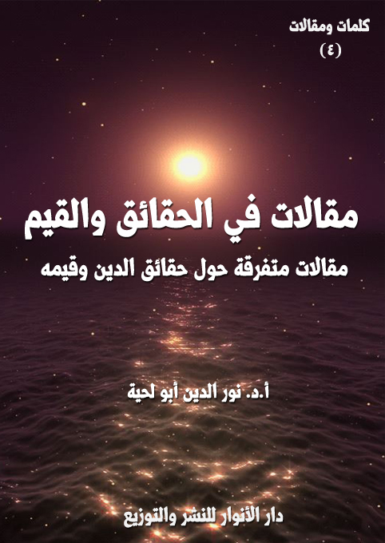

الكتاب: مقالات في الحقائق والقيم
الوصف: مقالات متفرقة حول حقائق الدين وقيمه
السلسلة: كلمات ومقالات
المؤلف: أ. د. نور الدين أبو لحية
الناشر: دار الأنوار للنشر والتوزيع
الطبعة: الثانية، 1443 هـ
عدد الصفحات: 182
ISBN: 978-620-4-72213-9
لمطالعة الكتاب من تطبيق مؤلفاتي المجاني وهو أحسن وأيسر: هنا

يتضمن هذا الكتاب سبعة مقالات نشرتها في أوقات ومجلات مختلفة، وهي جميعا تدور حول الحقائق الكبرى للدين والقيم المرتبطة بها، وكيفية التعامل معها، وهذه عناوين المقالات:
1. مقاصد العقائد وسبل تحصيلها.
2. أثر تعليم القرآن الكريم في تكوين الناشئة.
3. سليمان عليه السلام وصفات الحاكم المسلم.
4. القيم الإنسانية بين الحكومة الإسلامية والحكومات العلمانية ـ تأصيلا وتطبيقا.
5. دوافع الحرب بين الاسلام والانظمة الوضعية.
6. القيم وجدلية الأصيل والوافد.
7. التسامح عند الصوفية. دوافعه ومظاهره.
مقالات في الحقائق والقيم (6)
يتضمن هذا الكتاب سبعة مقالات نشرتها في أوقات ومجلات مختلفة، وهي جميعا تدور حول الحقائق الكبرى للدين والقيم المرتبطة بها، وكيفية التعامل معها، وهذه ملخصات مختصرة عنها:
1. مقاصد العقائد وسبل تحصيلها: يهدف هذا المقال إلى البحث عن المقاصد التي راعاها الشارع عند طرح القضايا العقدية، والتي رأينا أنه لا يمكن أن تؤتي العقيدة ثمارها في النفس والمجتمع إلا بمراعاتها، وقد رأينا من خلال استقراء النصوص أنها ثلاثة، وهي:
1. المقاصد العرفانية: وهي المقاصد التي تبحث في التحقق من المعارف ومدى مطابقتها للنصوص وللواقع، لأنه لا يمكن للعقيدة المنحرفة أن تؤسس إلا انحرافا .. ولا يمكن كذلك للعقائد التي لم تصل بصاحبها إلى اليقين الجازم إلا أن تؤسس إنسانا مذبذبا مشوشا.
2. المقاصد الوجدانية: ونريد بها خروج العقائد من عالم الذهن والعقل إلى عالم القلب والوجدان، فينفعل صاحب العقيدة بما تقتضيه عقيدته من محبة ومخافة ورجاء وغير ذلك.
3. المقاصد السلوكية: ونريد بها خروج العقائد من عالم الذهن والوجدان إلى عالم الجوارح والسلوك، لينصبغ بها صاحبها بها أولا، وتنصبغ بها الحياة ثانيا.
هذه هي المقاصد الكبرى التي رأينا أن النصوص تدور حولها، وقد حاولنا أن نبحث فيها، ونبحث في السبل التي تؤدي إلى تحصيلها، ونبين كذلك نواحي الانحرافات التي مالت بالعقيدة عن سبيلها الصحيح، فحولتها إلى جدل عقيم، أدى إلى ما نراه من اختلاف.
مقالات في الحقائق والقيم (7)
وتعصب وفتنة.
2. أثر تعليم القرآن الكريم في تكوين الناشئة: يهدف هذا المقال إلى بيان الآثار التي يحدثها تعليم القرآن الكريم للناشئة، ويتعرض في نفس الوقت لسبب القصور الذي جعل مناهج التعليم القرآني لا تؤتي ثمارها من هذه الناحية، وهو تركيزها على أحكام الترتيل والحفظ المجرد عن الاهتمام بالمعاني وآثارها التربوية.
وقد حصر الآثار التي يحدثها التعليم القرآني وفق المناهج الصحيحة في الناشئة في ثلاثة آثار:
الأول: الأثر الروحي، وهو ربط القلوب والعقول ببارئها، فتعرف حقيقتها وحقيقة الوجود من حولها، وحقيقة المصير الذي تصير إليه، وهذا ما يجعلها تنطلق بعد ذلك في الحياة على بينة من أمرها.
الثاني: الأثر التربوي، وهو نتيجة للأثر الروحي، فمن عرف ربه، وعرف نبيه، وعرف الموازين التي توزن به أعماله لاشك أنه سينقلب انقلابا جذريا من الخبث إلى الطيبة، ومن الرعونة إلى الاستقامة، ومن الجهل إلى العلم.
الثالث: الأثر الاجتماعي، وهو نتيجة للآثار السابقة، فمن زكت نفسه وتطهرت، لابد أن يصبح إنسانا صالحا في المجتمع، يقي المجتمع شره أولا، ثم يمده بما أطاق من خير ثانيا.
3. سليمان عليه السلام وصفات الحاكم المسلم: يهدف هذا المقال إلى البحث عن صفات الحاكم المسلم من خلال ما ورد في قصة سليمان عليه السلام في القرآن الكريم، ومن خلال ذلك التعرف على طبيعة الحكم الإسلامي، باعتبار الحاكم هو الواجهة أو الأساس الذي يقوم عليه أي نظام حاكم.
مقالات في الحقائق والقيم (8)
وقد قسمنا صفات سليمان عليه السلام الواردة في القرآن الكريم إلى قسمين:
الصفات الشخصية: ونقصد بها الملكات والصفات الراسخة في شخص الحاكم بغض النظر عن توليه لمنصبه، وهي من الصفات الضرورية التي لا يمكن أن يرشح الحاكم لوظيفته من دون التحقق بها.
الصفات الوظيفية: ونقصد بها ما على الحاكم أن يتحلى به من صفات أثناء توليه لمنصبه، وهي فرع من الصفات الشخصية، أو هي مظهر من مظاهرها.
وقد رأينا أن القرآن الكريم أعطى صورة كاملة للحاكم المسلم، ومن خلالها لنوع النظام الإسلامي، والتي يمكن تنفيذها في الواقع بحسب الأزمنة والأمكنة المختلفة.
4. القيم الإنسانية بين الحكومة الإسلامية والحكومات العلمانية ـ تأصيلا وتطبيقا: وقد عقدنا فيه مقارنات مختلفة بين القيم الإنسانية في الحكومة الإسلامية والحكومات العلمانية، وقد قسمنا المقال إلى العناصر التالية:
أولا ـ تحديد مفهوم الحكومة الإسلامية، وقد رأينا أنها تتشكل من ركنين:
1. تحكيم الدستور الإلهي
2. إشراف العلماء والصالحين.
ثانيا ـ أصناف القيم الإنسانية بين الإسلام والعلمانية، وقد تناولنا فيه أصناف القيم الإنسانية وحاجات الإنسان وحدودها وضوابطها في الحكومة الإسلامية، والحكومة العلمانية .. كما تناولنا كيفية تطبيق القيم الإنسانية بين الإسلام والعلمانية.
5. دوافع الحرب بين الاسلام والانظمة الوضعية: وقد تحدثنا فيه بتفصيل عن موقف الإسلام من الحرب الدفاعية، والحرب الهجومية .. مقارنة بموقف القوانين الوضعية، وشبيهها من القوانين التي وضعها أصحاب الملك العضوض، ونسبوها
مقالات في الحقائق والقيم (9)
للإسلام، وهو بريء منها.
6. القيم وجدلية الأصيل والوافد: وهو مقال قصير تحدثنا فيه عن دور الشيطان وجنوده في الانحراف بالقيم الإنسانية، وقد قسمناه إلى العناوين التالية:
أولا ـ القيم والمرتكزات الفكرية.
ثانيا ـ القيم والمظاهر السلوكية.
ثالثا ـ القيم وأنماط الشخصية.
7. التسامح عند الصوفية: دوافعه ومظاهره: ويهدف هذا المقال إلى البحث عن دوافع التسامح ـ أو القدرة على التعايش مع الآخر مهما كانت ثقافته وسلوكه ـ عند الصوفية باعتبارهم من دعاة التسامح والمشتهرين به.
وقد دعانا إلى البحث في هذا المجال ما نراه من حاجة مجتمعنا إلى إعادة نشر ثقافة التسامح التي هدد وجودها التطرف بأنواعه المختلفة، وبناء على انتشار مفهوم سلبي للتصوف يغلب الجانب الطقوسي الحرفي الجاف، ويجعل من الطرق الصوفية المختلفة أعداء متناحرين ليس مع الآخر فقط، وإنما مع أنفسهم أيضا.
وقد قسمنا البحث إلى ثلاثة أقسام:
تحدثنا في الأول عن مفهوم التسامح.
وتحدثنا في الثاني عن دوافعه في المدارس الصوفية المختلفة.
وتحدثنا في الثالث عن مظاهره السلوكية.
مقالات في الحقائق والقيم (10)
تعود الباحثون في مقاصد الشريعة أن يقصروا الحديث على الأحكام العملية التي اختص الفقه بالبحث فيها، دون الأحكام العقدية، باعتبارها من الحقائق، والحقائق لا يمكن أن تتعلق بها المقاصد.
وهذا صحيح من جهة أن الحقائق لا يمكن أن تتدخل فيها المقاصد، ولكن عرض الحقائق قد ينحرف بها عن المراد الذي أراده الشارع منها، فتنحرف بالتالي عن المقاصد التي طلب الشارع مراعاتها، وهذا ما يجعلنا نحتاج إلى البحث في المقاصد التي طلب الشارع مراعاتها في العقائد، لنعرض الحقائق العقدية من خلالها.
بل إن للعقائد في هذا الباب من التأثير ما لا نجده في الفقه، فالخطأ في الفقه قاصر على ما وقع الخطأ فيه، أما في العقيدة فالخطأ الواحد فيها قد ينحرف بالحياة جميعا عن الجادة التي أمر الله بها.
ولو تأملنا في انحرافات الفرق المختلفة لوجدنا أن سببها تغليب جانب في العقيدة على جانب، أو مراعاة جانب وإهمال جانب، وبالتالي تصبح العقيدة التي تشكل الأساس الفكري للمسلم متخلخلة مهتزة غير متوازنة ولا متناسقة، وبالتالي تشكل شخصية مهتزة كاهتزازها، فالإنسان ابن أفكاره ومعتقداته.
لأجل هذه الغاية حاولنا في هذا المقال أن نبحث ـ باختصار ـ عن مقاصد الشارع من مسائل العقائد المختلفة، وقد وجدنا من خلال الاستقراء أنها ثلاثة: مقاصد عرفانية، ومقاصد وجدانية، ومقاصد سلوكية، والقرآن الكريم ـ كما سنرى ـ يشير إليها جميعا.
وقد قسمت المقال على هذا الأساس إلى ثلاثة أقسام، كل قسم يختص بمقصد من
مقالات في الحقائق والقيم (11)
المقاصد، نذكره على سبيل الإجمال، ونذكر معه كيفية تحصيله:
وهذا المقصد هو أول المقاصد وأهمها باعتبار أن جميع المقاصد تنطلق منه، ولهذا، فإن القرآن الكريم يذكر الحقائق العقدية بصيغة الأمر بالعلم، قال تعالى: {فَاعْلَمُوا أَنَّ اللَّهَ عَزِيزٌ حَكِيمٌ} [البقرة: 209]، وقال: {وَاعْلَمُوا أَنَّ اللَّهَ بِكُلِّ شَيْءٍ عَلِيمٌ} [البقرة: 231]، وقال: {وَاعْلَمُوا أَنَّ اللَّهَ بِمَا تَعْمَلُونَ بَصِيرٌ} [البقرة: 233]
وهكذا بتأمل القرآن الكريم نجد أنه يعتبر المعرفة هي المنطلق الذي يبدأ به الإيمان، بل يذكر أنه كلما ازدادت هذه المعرفة ورسخت كلما ازداد صاحبها إيمانا وصلاحا ورقيا في سلم الكمال الإنساني.
وهذا بمفرده يدل على خطورة المقولة القائلة بأنا نحتاج إلى العمل أكثر من حاجتنا إلى العلم، ذلك أن العلم قد يؤدي في عالم النفس والوجدان، بل في عالم الواقع الخارجي ما يعجز العمل الظاهر وحده أن يؤديه، ولهذا فضل رسول الله صلى الله عليه وآله وسلم العالم على العابد، فقال: (فضل العالم على العابد كفضلي على أدنى رجل من أصحابي] (1)
وهذا التفضيل أساسه أن العابد منشغل بالأعمال الظاهرة، قاصر عن طلب المقامات العالية، والتي لا يؤدي إليها إلا العلم والمعرفة.
انطلاقا من هذه الحقائق القرآنية حول دور المعرفة الإيمانية في تحصيل ثمار الإيمان نتساءل عن ضوابط هذه المعرفة، لأنه لا يمكن أن تؤتي المعرفة ثمارها الصحيحة إلا إذا كانت مؤسسة على المنهج العلمي الصحيح.
__________
(1) الترمذي، سنن الترمذي، دار الغرب الإسلامي ـ بيروت، سنة النشر: 1998 م، (رقم الحديث: 2685) قال الترمذي: حديث غريب.
مقالات في الحقائق والقيم (12)
وقد رأينا من خلال النصوص القرآنية أن للمعرفة الصحيحة شرطان: اليقين والصدق، فاليقين وحده لا يكفي دون صدق، فقد يتيقن المرء في عقائد منحرفة، وصدق المعرفة وحدها لا يكفي ما لم يتيقن صاحبها فيها، لأنها تتحول إلى مجرد كلمات يقولها بلسانه دون أن يكون لها وجود في كيانه.
والمراد به في اصطلاح المتكلمين ـ كما ينص الغزالي ـ (المعرفة الحقيقية الحاصلة بطريق البرهان الذي لا يشك فيه ولا يتصور الشك فيه) (1)
وبالتالي، فإن اليقين في العقائد يعني العلم الجازم بحقائق الإيمان، بحيث لا يتطرق إلى العارف أدنى شك في المعرف، بل تكون معرفته به أشد من معرفته بنفسه التي بين جنبيه.
وقد كان البحث في هذا الجانب هو ما دفع المتكلمين إلى البحث التفصيلي في الشبهات وأنواع الاعتراضات للرد عليها، ونصرة الحق، ولا ضرر فيها من هذا الجانب لمن احتاج إلى ذلك.
ولكن الضرر على من تصور أنه لا يعرف الله إلا بعد الخوض فيما خاض فيه المتكلمون من أدلة، لأنه سيتيه بالدليل عن المدلول، بل قد يلتزم بالدليل ما لا يصح التزامه، كما وقع في ذلك الكثير من متكلمي المسلمين.
والأخطر من ذلك كله أن يتحول الإيمان بالله جدلا لسانيا فارغا لا روحا يبعث الحياة في وجدان صاحبها وسلوكه.
ولهذا اشتد التحذير من صناعة المتكلمين، واشتد فقهاء الإسلام الكبار في النهي عنه
__________
(1) أبو حامد الغزالي، إحياء علوم الدين، دار االمعرفة ـ بيروت: 1/ 73.
مقالات في الحقائق والقيم (13)
لما رأوا من آثاره الاجتماعية: فهذا الشافعي مع علمه بأحوال الفرق ومجادلاتها وشغبها اشتد نهيه عن صناعة المتكلمين لعقم سبلها مع العامة، فقد روي عنه أنه قال: (إن سألك رجل عن شيء من الكلام فلا تجبه، فإنك إن زللت قال لك: كفرت)، وقال: (لقد اطلعت من أهل الكلام على شيء والله ما توهمته قط، ولأن يبتلى المرء بما نهى الله عنه خلا الشرك بالله خير من أن يبتلى بالكلام) (1)
بل إن المتكلمين أنفسهم نبهوا إلى خطورة هذا العلم على العامة، فقد ألف الغزالي كتابه المعروف (إلجام العوام عن علم الكلام)، ومن خلال عنوانه يظهر موقفه من تعليم العوام هذا العلم.
والسر في ذلك أن أكثره جدل لا يعمق الإيمان في النفس، ولهذا قال الغزالي عن علم الكلام بعدما طلب البحث فيه عن الحقيقة: (فصادفته علما وافيا بمقصوده غير واف بمقصودي) (2)، فهو واف بمقصودهم من حيث حراسة الدين من الشبه ولكنه غير واف بمقصود من طلب حقيقة الإيمان.
والبديل الذي يرسمه الغزالي للعامة وللنشء هو ما عبر عنه بقوله ــ بعد ذكره لعقيدة مختصرة ــ: (اعلم أنّ ما ذكرناه في ترجمة العقيدة ينبغي أن يقدم إلى الصبي في أوّل نشوه ليحفظه حفظاً ثم لا يزال ينكشف له معناه في كبره شيئاً فشيئاً؛ فابتداؤه الحفظ ثم الفهم ثم الاعتقاد والإيقان والتصديق به، وذلك مما يحصل في الصبي بغير برهان) (3)
__________
(1) أبو الفضل الرازي المقرئ، أحاديث في ذم الكلام، تحقيق: الدكتور ناصر بن عبد الرحمن بن محمد الجديع، دار أطلس للنشر والتوزيع، ط 1، 1417 هـ ـ 1996 م، ص 80 ..
(2) الغزالي، المنقذ من الضلال، المكتبة الثقافية ـ بيروت / لبنان ـ تحقيق: محمد محمد جابر، ص 87.
(3) إحياء علوم الدين: 1/ 94.
مقالات في الحقائق والقيم (14)
فالطريق ـ كما يرسمه الغزالي ـ هو التلقين، فالحفظ وحده كاف في تقرير كثير من الأمور من غير حاجة إلى تفاصيل الأدلة العقلية، والتي قد لا تزيد المتعلق بها غير المزيد من الشبهات.
وقد علل الغزالي هذا، فقال: (فمن فضل الله سبحانه على قلب الإنسان أن شرحه في أوّل نشوه للإيمان من غير حاجة إلى حجة وبرهان) (1)
والطريق إلى ذلك ليس بالجدل، قال: (وليس الطريق في تقويته وإثباته أن يعلم صنعة الجدل والكلام)، وإنما بأنوار العبادة، قال: (بل يشتغل بتلاوة القرآن وتفسيره وقراءة الحديث ومعانيه. ويشتغل بوظائف العبادات فلا يزال اعتقاده يزداد رسوخاً بما يقرع سمعه من أدلة القرآن وحججه وبما يرد عليه من شواهد الأحاديث وفوائدها وبما يسطع عليه من أنوار العبادات ووظائفها وبما يسري إليه من مشاهدة الصالحين ومجالستهم .. فيكون أوّل التلقين كإلقاء بذر في الصدر، وتكون هذه الأسباب كالسقي والتربية له حتى ينمو ذلك البذر ويقوى ويرتفع شجرة طيبة راسخة أصلها ثابت وفرعها في السماء) (2)
وكبديل عن علم الكلام نشأ في الأجواء الصوفية ما يسمى بـ (المعرفة)، هي مصطلح يعني العلم بالله، لا عن طريق الاستدلال العقلي، وإنما عن طريق الذوق الوجداني، واليقين الإيماني، الذي يستشهد بالله على الله، ويبرهن بالله على الله، وهنا يتجلى الفرق العظيم بين إيمان من عاش يبحث عن البراهين على الله، وبين الذي بدأ حياته مع الله.
وقد سئل النوري: (ما الدليل على الله؟ قال: (الله)، قال فما العقل قال: (العقل عاجز،
__________
(1) المصدر السابق: 1/ 94.
(2) المصدر السابق: 4/ 317.
مقالات في الحقائق والقيم (15)
والعاجز لا يدل إلا على عاجز مثله) (1)
وقد سمى الغزالي هذا اليقين (علم المكاشفة) وعرفه بأنه عبارة عن نور يظهر في القلب عند تطهيره وتزكيته من صفاته المذمومة، وهذا النور المتجلي على القلب تنكشف به الحقائق الكثيرة التي كان ـ في مرحلة العلم ـ يسمع من قبل أسماءها، ويتوهم لها معاني مجملة غير متضحة (2).
ونريد به مطابقة العقيدة لما جاءت به النصوص المعصومة، لأن مصدر العقيدة الأول هو الوحي، أما العقل فهو مدعم للوحي وأداة من أدواته.
ولهذا، فإن كل من يحاول أن ينافس الوحي في تقرير العقائد يرد قوله، فالغيب لا يعمله إلا من كشف الله له حجبه، وليس ذلك لغير المعصومين صلوات الله وسلامه عليهم.
ولهذا، فإن الكثير من العقائد ـ وفي الأبواب المختلفة منها ـ تحتاج إلى زيادة تمحيص لتحقيق الحق منها وتمييزه عن الباطل.
وهذا يستدعي زيادة على ما ذكرنا من حفظ النصوص من التحريف الذي يخرجها عما سيقت له إلى التثبت في النقول المختلفة سواء ما ورد منها منسوبا إلى رسول الله صلى الله عليه وآله وسلم أو ما ورد منسوبا للصحابة أو التابعين ومن بعدهم، لأن التساهل في النقول هو الذي أدى إلى إلزام الناس بعقائد لا دليل يؤيدها، بل إنها في أحسن أحوالها أسطورة من الأساطير أو خرافة من الخرافات يزداد معتقدها باعتقادها جهلا لا علما.
ولا بأس من إيراد مثال على هذا في هذا الجانب نرى من الوجوب التحذير منه ومن
__________
(1) أبو بكر محمد بن أبي إسحاق الكلاباذي، التعرف لمذهب أهل التصوف، دار الكتب العلمية ـ بيروت، 63.
(2) إحياء علوم الدين: 1/ 19.
مقالات في الحقائق والقيم (16)
أشباهه، وهو كتاب (إبطال التأويلات)، وهو نموذج عن الكتب التي تحاول وصف الله، كما يصف أحدنا أي شخص من البشر.
فصاحب الكتاب ـ مثلا ينفق صفحات كثيرة من الكتاب (1) ليثبت هذه الأوصاف لله تعالى (شاب، أمرد، أجعد، في حلة حمراء، عليه تاج، ونعلان من ذهب، وعلى وجهه فَرَاش من ذهب)
وقد شحنها بالروايات الموضوعة، وينص على أن من لم يؤمن بهذه الصفات العظيمة فهو (زنديق)، (معتزلي)، (جهمي)، (لا تقبل شهادته)، (لا يسلم عليه)، (لا يعاد)، ثم يقول: (وليس في قوله: شاب وأمرد وجعد وقطط وموفور إثبات تشبيه، لأننا نثبت ذلك تسمية كما جاء الخبر لا نعقل معناها، كما أثبتنا ذاتا ونفسا، ولأنه ليس في إثبات الفَرَاش والنعلين والتاج وأخضر أكثر من تقريب المحدث من القديم، وهذا غير ممتنع كما لم يمتنع وصفه بالجلوس على العرش .. ) (2)
وكما طال التحريف كتب الحديث طال كتب التصوف والعرفان، أو ما يمكن التعبير عنه بـ (الانحراف الوجداني)، حيث نجد في هذا الباب انتشار أحاديث كثيرة ترسم للكون صورة تخالف الصورة التي ورد بها القرآن الكريم، ونصت عليها النصوص القطعية.
ومع هذين الرافدين من روافد الانحراف نجد الوضاعين الذين أرادوا أن يشوهوا جمال العقيدة الإسلامية بوضع أحاديث تحيل النبي صلى الله عليه وآله وسلم، طباخا أو طبيب أعشاب يصف من الدواء ما يصح وما لا يصح، ومن ذلك: (ربيع أمتي العنب والبطيخ)، ومنه (ومن أكل
__________
(1) القاضي أبو يعلى الفراء، إبطال التأويلات لأخبار الصفات، المحقق: محمد بن حمد الحمود النجدي، الكويت: دار إيلاف الدولية،: 1/ 133.
(2) إبطال التأويلات: 1/ 146.
مقالات في الحقائق والقيم (17)
فوله بقشرها أخرج الله منه من الداء مثلها)، و (الباذنجان شفاء من كل داء)، و (الباذنجان لما أكل له)، و (أكل السمك يذهب الجسد) (1)
وهذه الأحاديث هي التي يستغلها الطاعنون في رسالة رسول الله صلى الله عليه وآله وسلم، والكتب التبشيرية مملوءة بمثل هذه السخافات.
أما عوالم الغيب، العوالم التي يصورها القرآن الكريم، وتصورها السنة الصحيحة تصويرا جميلا يجعل القلب يهفوا متطلعا إليها، فتنحرف بها هذه النصوص الباطلة انحرافا عظيما.
وقد دخلت للأسف الكثير من الخرافات إلى باب الغيبيات تحت مظلة النقل من أهل الكتاب إحسانا للظن بهم، أو تحت مظلة الأحاديث المنكرة والمعلولة والموضوعة، أو تحت مظلة العقل الذي تعدى طوره وحقيقته ووظيفته، أو تحت مظلة الكشف الذي يختلط فيه الوهم بالحقيقة، أو تحت مظلات أخرى كثيرة ليس بينها مصدر معصوم.
فلذلك، يمكن اعتبار كل ما لحق هذا العالم الغيبي من غير أدلة معصومة ضربا من الخرافة لا يصح أن يمتلئ به عقل المؤمن ولا ضميره.
ونريد بها مقصدا مهما من مقاصد الشارع من المعارف العقدية، وهو تحولها من عالم الذهن إلى عالم الوجدان والنفس .. فتنفعل النفس بالمعارف العقدية وتتلون بألوانها.
ويشير إلى هذه الناحية من مقاصد العقائد قوله تعالى: {الَّذِينَ آمَنُوا وَتَطْمَئِنُّ قُلُوبُهُمْ بِذِكْرِ اللَّهِ أَلَا بِذِكْرِ اللَّهِ تَطْمَئِنُّ الْقُلُوبُ} [الرعد: 28]، ففي هذه الآية الكريمة إشارة إلى أن
__________
(1) انظر تنزيه الشريعة، دار الكتب العلمية، بيروت، الطبعة: الثانية، 1981، ص 235 ـ 267.
مقالات في الحقائق والقيم (18)
المعارف الإيمانية تجعل القلب مطمئنا مرتاحا سعيدا.
ففي المرحلة الأولى تبدأ المعرفة معان عقلية لها وجود ذهني فقط .. أما في هذه المرحلة فتتحول المعارف إلى كيان نفسي له تأثيره بعد ذلك في جميع مناحي الحياة.
ويمكن تقسيم المقاصد المرتبطة بهذه الناحية إلى ناحيتين:
الناحية النفسية: وهي دور العقائد في تشكل النفسية السوية الممتلئة بالطمأنينة والسلام.
الناحية الذوقية: وهي درجة أعلى، ونعني بها تذوق الحقائق الإيمانية والعروج من خلالها في سلم المعرفة بالله.
وسنحاول أن نعرض باختصار لهاتين الناحيتين في هذا المبحث:
ويشير إليها بوضوح موعظة رسول الله صلى الله عليه وآله وسلم لابن عباس والتي يقول فيها: (يا غلام إني أعلمك كلمات: احفظ اللَّه يحفظك، احفظ اللَّه تجده تجاهك، إذا سألت فاسأل اللَّه، وإذا استعنت فاستعَنْ باللَّه، واعلم أن الأمة لو اجتمعت عَلَى أن ينفعوك بشيء لم ينفعوك إلا بشيء قد كتبه اللَّه لك، وإن اجتمعوا عَلَى أن يضروك بشيء لم يضروك إلا بشيء قد كتبه اللَّه عليك، رفعت الأقلام وجفت الصحف] (1)
ففي هذه الموعظة إشارة لكل ما يملأ النفس طمأنينة وسلاما، فرسول الله صلى الله عليه وآله وسلم يخبر ابن عباس بأن الله هو الحفيظ الذي يحفظ العبد من كل طوارق السوء، وأنه ـ لذلك ـ لو اجتمعت كل القوى على أن تضر من حفظه الله، فلن تستطيع، ولو اجتمعت على عكس
__________
(1) أبو عبد الله أحمد بن محمد بن حنبل، المسند، تحقيق شعيب الأرنؤوط ـ عادل مرشد، وآخرون، مؤسسة الرسالة، ط 1، 1421 هـ ـ 2001 م، ج 4، ص 487.
مقالات في الحقائق والقيم (19)
ذلك بأن تنفعه لم تستطع، لأن الله هو النافع الضار، وهذا ما يجمع شتات الإنسان وهمته فلا يخاف إلا الله، ولا يرجو إلا الله.
ولهذا يخبرنا القرآن الكريم أنه لا يشعر بالأمن الحقيقي إلا المؤمن الذي شغل قلبه بالله، ولم يشتت قلبه بين الشركاء، قال تعالى: {الَّذِينَ آمَنُوا وَلَمْ يَلْبِسُوا إِيمَانَهُمْ بِظُلْمٍ أُولَئِكَ لَهُمُ الْأَمْنُ وَهُمْ مُهْتَدُونَ} [الأنعام: 82]، وفي ذلك إشارة إلى أن مصدر المخاوف هو الشرك، واشتغال القلب بغير الله.
وكلما اشتد الشرك وعظم عظمت المخاوف، وكلما نقص الشرك أو تلاشى نقصت المخاوف أو تلاشت، فمعرفة الله والتوجه إليه هي بر الأمان، وهي سفينة نوح التي من ركبها لم تغرقه الأمواج، وهي ظل الله الذي يحتمي به من أحرقته شموس الرعب.
ويشير إليها قوله صلى الله عليه وآله وسلم، وقد سئل عن قوله تعالى: {أَفَمَنْ شَرَحَ اللَّهُ صَدْرَهُ لِلْإِسْلَامِ فَهُوَ عَلَى نُورٍ مِنْ رَبِّهِ} [الزمر: 22]، فقال: (إن النور إذا دخل في القلب اتسع وانفسح] (1)
فالقلب ـ كما ينص هذا الحديث ـ يتسع وينفسح وينشرح بنور الإيمان، كما يضيق وينكمش بظلمة الإلحاد والشك والنفاق، كما قال تعالى: {فَمَنْ يُرِدِ اللَّهُ أَنْ يَهْدِيَهُ يَشْرَحْ صَدْرَهُ لِلْإِسْلَامِ وَمَنْ يُرِدْ أَنْ يُضِلَّهُ يَجْعَلْ صَدْرَهُ ضَيِّقًا حَرَجًا كَأَنَّمَا يَصَّعَّدُ فِي السَّمَاءِ كَذَلِكَ يَجْعَلُ اللَّهُ الرِّجْسَ عَلَى الَّذِينَ لَا يُؤْمِنُونَ} [الأنعام: 125]
وهذا الاتساع والانفساح علامة على استقرار الإيمان في القلب، وعروج صاحبه في معارج المعرفة بالله، وقد أخبر صلى الله عليه وآله وسلم عن علامات ذلك فقال: (ذاق طعم الإيمان من رضي
__________
(1) سعيد بن منصور، سنن سعيد بن منصور، دار الصميعي، ط 1، 1414، ج 5، ص 88.
مقالات في الحقائق والقيم (20)
بالله ربا وبالإسلام دينا وبمحمد رسولا] (1)
وفي هذا الحديث إشارة إلى أن المعاني الإيمانية في مرحلتها الوجدانية تتحول إلى طعام وشراب روحاني يذوقه صاحبه ويتنعم به، وقد ورد هذا بصيغ مختلفة منها قوله صلى الله عليه وآله وسلم: (ثلاث من كن فيه وجد بهن حلاوة الإيمان: من كان الله ورسوله أحب إليه مما سواهما، ومن كان يحب المرء لا يحبه إلا لله، ومن كان يكره أن يرجع في الكفر بعد إذ أنقذه الله منه كما يكره أن يلقى في النار) (2)
بل إن الحديث يشير إلى أن هذه المعاني الذوقية الإيمانية قد يستغني بها صاحبها عن كثير من الطعام والشراب، ففي الحديث لما نهى صلى الله عليه وآله وسلم أصحابه عن الوصال، وقالوا: إنك تواصل، قال: (إني لست كهيئتكم إني أطعم واسقى) وفي لفظ (إني أظل عند ربي يطعمني ويسقيني)، وفي لفظ (إن لي مطعما يطعمني وساقيا يسقيني) (3)
وقد عقب ابن القيم على هذا الحديث بقوله: (وقد غلظ حجاب من ظن أن هذا طعام وشراب حسي للفم، ولو كان كما ظنه هذا الظان لما كان صائما، فضلا عن أن يكون مواصلا، ولما صح جوابه بقوله: (إني لست كهيئتكم) فأجاب بالفرق بينه وبينهم، ولو كان يأكل ويشرب بفيه الكريم حسا لكان الجواب أن يقول (وأنا لست أواصل أيضا)، فلما أقرهم على قولهم (إنك تواصل) علم أنه كان يمسك عن الطعام والشراب، ويكتفي بذلك الطعام والشراب العالي الروحاني الذي يغني عن الطعام والشراب المشترك الحسي) (4)
__________
(1) مسند أحمد: 1/ 208.
(2) محمد بن إسماعيل البخاري، صحيح البخاري، تحقيق محمد زهير، دار طوق النجاة، ط 1، ج 1، ص 13.
(3) مسند أحمد: ج 8 ن ص 374.
(4) ابن قيم الجوزية، مدارج السالكين، بيروت: دار الكتاب العربي، ط 3، 1416 هـ ـ 1996 م: (3/ 88)
مقالات في الحقائق والقيم (21)
وهذا المعنى المقاصدي من العقيدة يقتضي منهجا خاصا يختلف عن المنهج الذي يحقق المقاصد العرفانية .. فهذا المنهج يعتمد على كثرة ذكر الله .. كما قال رسول الله صلى الله عليه وآله وسلم مشيرا إلى ذلك: (يقول الله تعالى: أنا عند ظن عبدي بي، وأنا معه إذا ذكرني، فإن ذكرني في نفسه ذكرته في نفسي، وإن ذكرني في ملأ ذكرته في ملأ خير منهم وإن تقرب إلي شبرا تقربت إليه ذرعا وإن تقرب إلي ذرعا تقربت منه باعا وإذا أتاني يمشي أتيته هرولة) (1)
ففي هذا الحديث إشارة إلى دور الذكر في رحلة العروج والتقرب إلى الله، ولهذا فإن المدارس الروحية في الإسلامية ـ بغض النظر عن الانحرافات التي وقعت فيها ـ اعتمدت هذا المنهج لتكمل به دور المتكلمين، فالمتكلمون ركزوا على تعميق المعاني العقلية للعقيدة والذب عنها، بينما ركز مرشدو السلوك والذين اشتهروا بلقب الصوفية بالاهتمام بهذه الناحية، وقد حصل لهم للأسف ما حصل للمتكلمين من الشطط في بعض المناحي، وتقويم الانحراف لا يستدعي استئصال المنحرف.
ونريد بها تحول الإيمان من معان عقلية وأذواق وجدانية إلى حياة عملية تظهر على الجوارح في عالم الفرد والمجتمع.
والداعي لاعتبار هذا المقصد هو القرآن الكريم، ذلك أنه عندما يذكر الأخلاق العالية يربطها بالمؤمنين، كما قال تعالى في أول سورة المؤمنون: {قَدْ أَفْلَحَ الْمُؤْمِنُونَ الَّذِينَ هُمْ فِي صَلَاتِهِمْ خَاشِعُونَ} [المؤمنون: 1 ـ 2] إلى آخر الآيات التي تبدأ بتقرير الفلاح للمؤمنين، ثم تصفهم بعد ذلك بما تصفهم به من صفات تشمل جميع العلاقات، مع الله، ومع النفس،
__________
(1) صحيح البخاري: 9/ 121.
مقالات في الحقائق والقيم (22)
ومع الخلق .. وكأنها تقول: إن الأساس في صلاح هذه العلاقات جميعا هو ذلك الإيمان العميق بالله.
وهذا من الحقائق البديهية، فالإيمان المقيد بضوابط الشرع المراعي لمقاصده هو المدرسة التربوية الكبرى التي تجعل الإنسان غير محتاج إلى أي رقابة غير رقابته الإيمانية.
وقد أشار القرآن الكريم إلى هذه الحقيقة عندما ذكر تأثير الإيمان في الردع عن القتل في الوقت الذي لم يكن هناك شرطة ولا سجون ولا إعدام، فقال تعالى ذاكرا قصة ابني آدم بالحق: {وَاتْلُ عَلَيْهِمْ نَبَأَ ابْنَيْ آدَمَ بِالْحَقِّ إِذْ قَرَّبَا قُرْبَانًا فَتُقُبِّلَ مِنْ أَحَدِهِمَا وَلَمْ يُتَقَبَّلْ مِنَ الْآخَرِ قَالَ لَأَقْتُلَنَّكَ قَالَ إِنَّمَا يَتَقَبَّلُ اللَّهُ مِنَ الْمُتَّقِينَ لَئِنْ بَسَطْتَ إِلَيَّ يَدَكَ لِتَقْتُلَنِي مَا أَنَا بِبَاسِطٍ يَدِيَ إِلَيْكَ لِأَقْتُلَكَ إِنِّي أَخَافُ اللَّهَ رَبَّ الْعَالَمِينَ} [المائدة: 27 ـ 28]
وسنحاول هنا باختصار عرض الأركان الكبرى للعقائد، وبيان كيفية عرضها لتحقق هذا الركن من أركان المقاصد العقدية.
وهو أول عنصر من العناصر التي تتشكل منها الشخصية السوية، لأن هذا الإيمان هو الذي يوجه السلوك، ويحصن الاعتقادات، ويضبط نوازع النفس.
والقرآن الكريم نص على رعاية هذا الجانب ابتداء من مرحلة الطفولة، فقال تعالى حاكيا عن التربية النموذجية للقمان عليه السلام: {وَإِذْ قَالَ لُقْمَانُ لِابْنِهِ وَهُوَ يَعِظُهُ يَا بُنَيَّ لَا تُشْرِكْ بِاللَّهِ إِنَّ الشِّرْكَ لَظُلْمٌ عَظِيمٌ} [لقمان: 13]
والتربية الإيمانية في هذا الجانب تركز على أمرين أساسيين كلاهما مما وردت النصوص بالتركيز عليه، باعتبارهما أساس العقائد، هما:
مقالات في الحقائق والقيم (23)
لأن أساس كل العقائد هو التوحيد، كما أن منبع كل الانحرافات هو الشرك، ولهذا كانت الدعوة للتوحيد ـ بمعناه العميق الشامل ـ هي أساس دعوة الرسل ـ عليهم السلام ـ، كما قال تعالى: {وَاسْأَلْ مَنْ أَرْسَلْنَا مِنْ قَبْلِكَ مِنْ رُسُلِنَا أَجَعَلْنَا مِنْ دُونِ الرَّحْمَنِ آلِهَةً يُعْبَدُونَ} [الزخرف: 45]، وقال تعالى: {وَمَا أَرْسَلْنَا مِنْ قَبْلِكَ مِنْ رَسُولٍ إِلَّا نُوحِي إِلَيْهِ أَنَّهُ لَا إِلَهَ إِلَّا أَنَا فَاعْبُدُونِ} [الأنبياء: 25]
ونحب أن ننبه هنا إلى أن مرادنا بالتوحيد هو التوحيد العميق الشامل، لا التوحيد الذي يصوره البعض، فيقصرونه على مظاهر معينة يحرفون بها معناه.
فالتوحيد في حقيقته يعني تفرده تعالى بالخلق والإيجاد، وتفرده بالتقدير والتدبير، وتفرده بالتشريع والتكليف، وتفرده بالجزاء والثواب والعقاب .. لا تفرده فقط بالدعاء والاستغاثة والتوسل.
وأول مصدر يعمق هذه المعاني التوحيدية في النفس هو القرآن الكريم، فبالقراءة الواعية له نجده يربط بين مقتضيات التوحيد جميعا، فلا يقصر تأثير التوحيد على بعضها، فيظل العبد موحدا لله في جانب مشركا به في جانب آخر.
وهي المعرفة الثانية بعد التوحيد، وإن كان التوحيد في حقيقته جزء منها، ولكنه لأهميته، ولما تعرض له من تحريف أفرد بتلك الأهمية الخاصة.
وأسماء الله تعالى هي المعارف التي أذن الله تعالى فيها لوسائل إدراكنا البسيطة أن تتعرف بها على كمالات الألوهية، وهي لذلك من الأهمية بحيث لا يمكن مقارنتها بأي معرفة من المعارف الأخرى، لأن كل ما في الكون أثر من آثار أسماء الله.
وهي لذلك أبواب علاقتنا بالله، لأن لكل اسم من أسماء الله دلالته الخاصة التي
مقالات في الحقائق والقيم (24)
تتطلب عبوديتها الخاصة.
وقد اهتم الغزالي في كتابه الجليل (المقصد الأسنى] بالبعد التربوي لأسماء الله الحسنى، فكان يذكر عند نهاية شرح كل اسم حظ العبد السلوكي منه، فهو يعتبر ولكل صفة من صفات الله تعالى أو اسم من أسمائه أثره الخاص به، والذي لا يمكن للإنسان الحصول عليه إذا لم يستولي على قلبه معنى ذلك الاسم او تلك الصفة، وهو معنى الإحصاء الذي ورد في قوله صلى الله عليه وآله وسلم: (إن لله تسعة وتسعين اسما مائة غير واحد من أحصاها دخل الجنة) (1)
وهو العنصر الثاني من الأركان الأساسية للإيمان، ولذلك امتلأت آيات القرآن الكريم بالثناء عليهم وذكر قصصهم وأحوالهم لتملأ القلوب محبة لهم وإجلالا، وتشحن الطاقات قدوة وسلوكا، فيعيش المؤمن في صحبة النماذج الطاهرة الرفيعة، فيترفع من خلالها إلى الآفاق العليا من الكمال الإنساني.
وخير مصدر ـ بل يكاد يكون المصدر الوحيد للتعرف على حقيقة الرسل ـ صلوات الله وسلامه عليهم ـ هو القرآن الكريم، فهو الكتاب المؤرخ لحياتهم المرشد لكمالهم المصحح للأخطاء الكثيرة والتحريفات العظيمة التي لحقتهم.
ومن الآثار التربوية للإيمان بالرسل:
ويشير إلى هذه الناحية المهمة الناتجة عن الإيمان الصحيح بالرسل ـ صلوات الله
__________
(1) صحيح البخاري: 3/ 198.
مقالات في الحقائق والقيم (25)
وسلامه عليهم ـ قوله تعالى: {أُولَئِكَ الَّذِينَ هَدَى اللَّهُ فَبِهُدَاهُمُ اقْتَدِهْ} [الأنعام: 90]، فالغرض الأول من الإيمان بالرسل إيمانا يولد المحبة في قلوب أصحابه هو اتخاذهم نماذج يقتدى بها، وأنوارا يهتدى بهديها.
وهذه الصفة تقتضي القول بعصمة الرسل صلوات الله وسلامه عليهم، وتقتضي اقتصار المربي على هذه العصمة، وذلك لأن تصوير الإثم في تصرفات الأنبياء ـ كما تفعل بعض كتب التفسير والمواعظ ـ ينزع منهم الثقة، ويجعلهم محلا للنقد، وهو ما قد يتذرع به لسلوك سبيل المعصية بحجة أن الأنبياء مع مكانتهم الرفيعة وقع منهم الخطأ.
ب. الجذور التاريخية للإسلام والإنسان
فالقرآن الكريم بتفصيله لقصص الأنبياء يشير إلى تاريخ يكاد يكون مهملا في دواوين تاريخ البشرية، وهو تاريخ المعرفة بالله وعبادته.
وهو تاريخ متصل من لدن آدم عليه السلام إلى رسول الله صلى الله عليه وآله وسلم لا يؤثر في اتصاله اختلاف الأزمنة ولا اختلاف الأمكنة، ولا اختلاف القوميات.
ولهذا آثاره الكبيرة في السلوك، لأنه يرفع الغربة عن المؤمن، ويفسر التاريخ تفسيرا إيمانيا لا تفسيرا ماديا كما يفسره الغافلون.
فالله تعالى يسوق القصص ليقرر حقيقة الإسلام ومتطلباته، فالرسل ـ صلوات الله وسلامه عليهم ـ هم خير من يمثل الإسلام في أرقى درجاته، ولهذا يشرح الله تعالى حقيقة إسلام إبراهيم عليه السلام بضرب الأمثلة عن ولائه التام لله، وإسلام وجهه كله له.
فهو يدعو والده إلى الله، بكل ما أوتي من صنوف اللين، بل يستغفر له، طامعا في إسلامه، لكنه بمجرد أن تبينت له عداوته لله تبرأ منه، قال تعالى: {وَمَا كَانَ اسْتِغْفَارُ إِبْرَاهِيمَ
مقالات في الحقائق والقيم (26)
لِأَبِيهِ إِلَّا عَنْ مَوْعِدَةٍ وَعَدَهَا إِيَّاهُ فَلَمَّا تَبَيَّنَ لَهُ أَنَّهُ عَدُوٌّ لِلَّهِ تَبَرَّأَ مِنْهُ إِنَّ إِبْرَاهِيمَ لَأَوَّاهٌ حَلِيمٌ} [التوبة: 114]
وهو يشتاق إلى الولد كسائر البشر ـ بعد أن يهجره قومه ويتركوه، بل يذيقوه ما تمكنوا منه من بلاء ـ فيقول: {وَقَالَ إِنِّي ذَاهِبٌ إِلَى رَبِّي سَيَهْدِينِ رَبِّ هَبْ لِي مِنَ الصَّالِحِينَ} [الصافات: 99 ـ 100]، وتأتيه البشارة بعد عمر طويل: {فَبَشَّرْنَاهُ بِغُلَامٍ حَلِيمٍ} [الصافات: 101]
وبمجرد أن يبشر به يؤمر بأن ينقل ابنه الرضيع مع أمه إلى بلد غير ذي زرع، كما قال تعالى: {رَبَّنَا إِنِّي أَسْكَنْتُ مِنْ ذُرِّيَّتِي بِوَادٍ غَيْرِ ذِي زَرْعٍ عِنْدَ بَيْتِكَ الْمُحَرَّمِ} [إبراهيم: 37]، فينقله، ويبعده عنه عمرا طويلا.
وهكذا يتعلم المؤمن التسليم والتضحية والوقوف في وجه كل أعاصير البلاء بثبات يستعيد في ذلك شخصية إبراهيم عليه السلام كما صورها القرآن الكريم.
عوالم الغيب ـ في أصلها ـ هي العوالم التي خفيت على المؤمن، أو التي لا تستطيع وسائل الإدراك العادية التعرف عليها، أو التي جاءت النصوص المعصومة بالدلالة عليها، وهي بذلك تشمل كل قضايا الإيمان، كما قال تعالى في وصف المؤمنين: {الَّذِينَ يُؤْمِنُونَ بِالْغَيْبِ وَيُقِيمُونَ الصَّلَاةَ وَمِمَّا رَزَقْنَاهُمْ يُنْفِقُونَ} [البقرة: 3]
وهذا لأن أصل التكليف يقتضي الغيب، فلو أن قضايا الإيمان كان دليلها الحس ووسائل الإدراك العادية لما كان هناك أي تكليف بالإيمان بها.
ومثل ذلك: الامتحان الذي يجريه الأستاذ لتلاميذه، فلو أنه وضع الإجابة المباشرة على السبورة، ثم طلب منهم أن يجيبوا على أسئلته لما اختلفوا في نقل الإجابة مباشرة دون عناء، ولما اختلف جهدهم في الإجابة عنها، ولما تميز المتفوق منهم والجاد من الغبي والهازل،
مقالات في الحقائق والقيم (27)
ولهذا قال تعالى: {وَقَالُوا لَوْلَا أُنْزِلَ عَلَيْهِ مَلَكٌ وَلَوْ أَنْزَلْنَا مَلَكًا لَقُضِيَ الْأَمْرُ ثُمَّ لَا يُنْظَرُونَ} [الأنعام: 8]
ولهذا الإيمان تأثيره النفسي والتربوي الكبير على الإنسان، بل إنه ينقله من عالم البهيمية الذي تلقيه فيه غرائزه وأهواؤه إلى عالم الإنسانية الرفيع، يقول سيد قطب: (والإيمان بالغيب هو العتبة التي يجتازها الإنسان، فيتجاوز مرتبة الحيوان الذي لا يدرك إلا ما تدركه حواسه، إلى مرتبة الإنسان الذي يدرك أن الوجود أكبر وأشمل من ذلك الحيز الصغير المحدد الذي تدركه الحواس ـ أو الأجهزة التي هي امتداد للحواس ـ وهي نقلة بعيدة الأثر في تصور الإنسان لحقيقة الوجود كله ولحقيقة وجوده الذاتي، ولحقيقة القوى المنطلقة في كيان هذا الوجود] (1)
ويرد على المفكرين المعاصرين الذين يتصورون الإيمان بعوالم الغيب نوعا من الهروب عن الواقع، فيقول: (لقد كان الإيمان بالغيب هو مفرق الطريق في ارتقاء الإنسان عن عالم البهيمة. ولكن جماعة الماديين في هذا الزمان، كجماعة الماديين في كل زمان، يريدون أن يعودوا بالإنسان القهقري .. إلى عالم البهيمة الذي لا وجود فيه لغير المحسوس! ويسمون هذا (تقدمية) وهو النكسة التي وقى الله المؤمنين إياها، فجعل صفتهم المميزة، صفة: الذين يؤمنون بالغيب والحمد لله على نعمائه، والنكسة للمنتكسين والمرتكسين!) (2)
لكن هذه الآثار العظيمة للإيمان بالغيب لا تتحقق إلا إذا لقيت طرحا سليما من المربي والداعية، ونرى أننا خصوصا في هذا العصر بحاجة إلى طرح مثل هذه القضايا طرحا علميا .. لأن العقلية المعاصرة لا تسلم للشيء من غير أن تجد ما يبرهن عليه.
__________
(1) سيد قطب إبراهيم، في ظلال القرآن، دار الشروق ـ بيروت ـ القاهرة، ط 17،، 1412 هـ:1/ 39.
(2) المصدر السابق:1/ 40.
مقالات في الحقائق والقيم (28)
نعم إن قضايا الإيمان بالغيب لا يمكن إدراكها بالحس المجرد، ولا بوسائل الإدراك العادية، ومع ذلك، فإن للعقل مجالا فيها، إما في التعرف على إمكانية وجودها، أو في تصور ما يحمله الإيمان بالغيب من حقائق.
وقد دل على هذا المنهج القرآن الكريم، فهو يبرهن على الغيب بالأدلة العقلية الكثيرة، فيربهن على البعث والقيامة بما يرى في الإنسان والأرض من آثار تدل على قدرة الله المطلقة بإعادة الحياة، فالله هو المبدئ المعيد.
وهكذا، فإن المربي الصادق لا يكتفي بتقرير الحقائق الغيبية مجردة، يكلف بها عقل المتلقي تكليفا، بل يحاول أن يلطفها ويقوي رسوخها بما يبثه من أدلة، فإن إبراهيم عليه السلام مع علمه بقدرة الله المطلقة على الإحياء طلب من الله ما يزيد هذه الطمأنينة قوة ورسوخا، قال تعالى: {وَإِذْ قَالَ إِبْرَاهِيمُ رَبِّ أَرِنِي كَيْفَ تُحْيِي الْمَوْتَى قَالَ أَوَلَمْ تُؤْمِنْ قَالَ بَلَى وَلَكِنْ لِيَطْمَئِنَّ قَلْبِي قَالَ فَخُذْ أَرْبَعَةً مِنَ الطَّيْرِ فَصُرْهُنَّ إِلَيْكَ ثُمَّ اجْعَلْ عَلَى كُلِّ جَبَلٍ مِنْهُنَّ جُزْءًا ثُمَّ ادْعُهُنَّ يَأْتِينَكَ سَعْيًا وَاعْلَمْ أَنَّ اللَّهَ عَزِيزٌ حَكِيمٌ} [البقرة: 260]
أما مجال التصور، فإن الكثير من قضايا الإيمان الغيبي يمكن قياسه على ما خلق الله في الأرض من ظواهر، من باب تقريب عالم الغيب من عالم الحس، ومثل ذلك قوله تعالى: {وَبَشِّرِ الَّذِينَ آمَنُوا وَعَمِلُوا الصَّالِحَاتِ أَنَّ لَهُمْ جَنَّاتٍ تَجْرِي مِنْ تَحْتِهَا الْأَنْهَارُ كُلَّمَا رُزِقُوا مِنْهَا مِنْ ثَمَرَةٍ رِزْقًا قَالُوا هَذَا الَّذِي رُزِقْنَا مِنْ قَبْلُ وَأُتُوا بِهِ مُتَشَابِهًا وَلَهُمْ فِيهَا أَزْوَاجٌ مُطَهَّرَةٌ وَهُمْ فِيهَا خَالِدُونَ} [البقرة: 25]، أي يشبه الشكل الشكل، ولكن الطعم غير الطعم، ومثل ذلك قوله صلى الله عليه وآله وسلم في ذكر سدرة المنتهى: (فإذا ورقها كآذان الفيلة ونبقها مثل قلال هجر] (1)
__________
(1) مسند أحمد 3/ 148.
مقالات في الحقائق والقيم (29)
والخلاصة التي نصل إليها بعد هذا العرض المختصر لأمهات المقاصد المرتبطة بالعقيدة، هو أنه قد تطرق إلى عرض العقيدة الإسلامية من طرف المدارس المختلفة دخن كثير جعلها تتحول بها إلى جدل فارغ، وخرافات وأساطير، وبالتالي لا تؤتي ثمارها التي أرادها الله، وهي إنتاج الإنسان المسلم صاحب المعارف الصحيحة، والمواجيد الطاهرة النقية، والسلوكات الأخلاقية الرفيعة.
وانطلاقا من هذا ندعو إلى إعادة النظر في مناهجنا ومقرراتنا لتتناسب مع الطرح السليم للعقيدة على ضوء الواقع المعاصر، والمعارف الحديثة، ليبنى الإنسان المسلم منسجما مع المعارف التي جاءت بها مصادره المعصومة، مع الاستفادة من التراث، ولكن مع تجنب الدخن الذي وقع فيه.
القرآن الكريم
1. الترمذي، سنن الترمذي، دار الغرب الإسلامي ـ بيروت، سنة النشر: 1998 م.
2.أبو حامد الغزالي، إحياء علوم الدين، دار االمعرفة ـ بيروت: 1/ 73.
3. أبو الفضل الرازي المقرئ، أحاديث في ذم الكلام، تحقيق: الدكتور ناصر بن عبد الرحمن بن محمد الجديع، دار أطلس للنشر والتوزيع، ط 1، 1417 هـ ـ 1996 م.
4. الغزالي، المنقذ من الضلال، المكتبة الثقافية ـ بيروت / لبنان ـ تحقيق: محمد محمد جابر.
5. أبو بكر محمد بن أبي إسحاق الكلاباذي، التعرف لمذهب أهل التصوف، دار الكتب العلمية ـ بيروت، 63.
6. القاضي أبو يعلى الفراء، إبطال التأويلات لأخبار الصفات، المحقق: محمد بن حمد الحمود النجدي، الكويت: دار إيلاف الدولية.
7. تنزيه الشريعة، دار الكتب العلمية، بيروت، الطبعة: الثانية، 1981، ص 235 ـ 267.
8. أبو عبد الله أحمد بن محمد بن حنبل، المسند، تحقيق شعيب الأرنؤوط ـ عادل مرشد، وآخرون، مؤسسة الرسالة، ط 1، 1421 هـ ـ 2001 م.
مقالات في الحقائق والقيم (30)
9. سعيد بن منصور، سنن سعيد بن منصور، دار الصميعي، ط 1، 1414.
10. محمد بن إسماعيل البخاري، صحيح البخاري، تحقيق محمد زهير، دار طوق النجاة، ط 1.
11. ابن قيم الجوزية، مدارج السالكين، بيروت: دار الكتاب العربي، ط 3، 1416 هـ ـ 1996 م.
12. سيد قطب إبراهيم، في ظلال القرآن، دار الشروق ـ بيروت ـ القاهرة، ط 17،، 1412 هـ.
مقالات في الحقائق والقيم (31)
أثر تعليم القرآن الكريم في تكوين الناشئة
لقد وصف الله تعالى القرآن الكريم بكونه كتاب الهداية الشاملة لكل رشد وصلاح وتقوى، كما قال تعالى حكاية عن الجن بعد ما سمعوا القرآن الكريم: {إِنَّا سَمِعْنَا قُرْآنًا عَجَبًا يَهْدِي إِلَى الرُّشْدِ فَآمَنَّا بِهِ} [الجن: 1 ـ 2]
وأخبر أن هذه الهداية تشمل الناس جميعا مؤمنهم وكافرهم صغيرهم وكبيرهم، وعربهم وعجمهم، كما قال تعالى: {شَهْرُ رَمَضَانَ الَّذِي أُنْزِلَ فِيهِ الْقُرْآنُ هُدًى لِلنَّاسِ وَبَيِّنَاتٍ مِنَ الْهُدَى وَالْفُرْقَانِ} [البقرة: 185]، وأنه يكفي لتحقق هذه الهداية الشاملة والعامة أن تستمع القلوب إلى بارئها، وهو يحدثها عن الطريق الذي تصل به إلى بر الأمان، قال تعالى: {إِنَّ فِي ذَلِكَ لَذِكْرَى لِمَنْ كَانَ لَهُ قَلْبٌ أَوْ أَلْقَى السَّمْعَ وَهُوَ شَهِيدٌ} [ق: 37]
ولهذا أمر الله تعالى بإجارة المشرك إن استجار بالمؤمن، ثم استغلال هذه الحاجة في إسماعه كلام الله، وكأنه يأمرنا بدعوته إلى الله بإبلاغه رسالة الله، قال تعالى: {وَإِنْ أَحَدٌ مِنَ الْمُشْرِكِينَ اسْتَجَارَكَ فَأَجِرْهُ حَتَّى يَسْمَعَ كَلَامَ اللَّهِ ثُمَّ أَبْلِغْهُ مَأْمَنَهُ ذَلِكَ بِأَنَّهُمْ قَوْمٌ لَا يَعْلَمُونَ} [التوبة: 6]، فالآية الكريمة توضح أن استماع القرآن وحده ولو من غير تفسير إن صادف قلوبا مستعدة، فإنه لا محالة سيؤثر فيها تأثيرا شديدا.
ولهذا اعتبر القرآن الكريم أعظم جهاد هو الجهاد بالقرآن، قال تعالى: {فَلَا تُطِعِ الْكَافِرِينَ وَجَاهِدْهُمْ بِهِ جِهَادًا كَبِيرًا} [الفرقان: 52]، قال ابن عباس في تفسيرها: بالقرآن (1).
انطلاقا من هذه الحقائق نحاول في هذا المقال أن نبحث عن آثار الهداية القرآنية في النفس الإنسانية، وخاصة في نفوس النشء الذين هم أكثر استعدادا، وأقوم فطرة، وقد رأينا
__________
(1) أبو الفداء إسماعيل بن كثير، تفسير القرآن العظيم، دار طيبة للنشر والتوزيع، ط 2، 1420 هـ ـ 1999 م، 6/ 116.
مقالات في الحقائق والقيم (32)
من خلال الواقع والنصوص أنه يمكن حصرها في ثلاثة أنواع:
الأول: الأثر الروحي، وهو ربط القلوب والعقول ببارئها، فتعرف حقيقتها وحقيقة الوجود من حولها، وحقيقة المصير الذي تصير إليه، وهذا ما يجعلها تنطلق بعد ذلك في الحياة على بينة من أمرها.
الثاني: الأثر التربوي، وهو نتيجة للأثر الروحي، فمن عرف ربه، وعرف نبيه، وعرف الموازين التي توزن به أعماله لاشك أنه سينقلب انقلابا جذريا من الخبث إلى الطيبة، ومن الرعونة إلى الاستقامة، ومن الجهل إلى العلم
الثالث: الأثر الاجتماعي، وهو نتيجة للآثار السابقة، فمن زكت نفسه وتطهرت، لابد أن يصبح إنسانا صالحا في المجتمع، يقي المجتمع شره أولا، ثم يمده بما أطاق من خير ثانيا.
وسنحاول هنا ـ باختصار ـ أن نذكر ما يرتبط بهذه الآثار من نواحي الهداية في المباحث التالية:
وهو الأثر الأول والأساسي الذي جاء القرآن الكريم من أجله، فالله تعالى أنزل القرآن إلى عباده ليتعرفوا عليه من خلاله، كما قال الإمام الصادق: (والله لقد تجلى الله عز وجل لخلقه في كلامه، ولكنهم لا يبصرون)، وقال لمن سألوه عن حالة لحقته في الصلاة: (ما زلت أردد الآية على قلبي حتى سمعتها من المتكلم بها، فلم يثبت جسمي لمعاينة قدرته) (1)
__________
(1) انظر: محمد بن محمد الغزالي أبو حامد، إحياء علوم الدين، دار االمعرفة ـ بيروت، 1/ 287.
مقالات في الحقائق والقيم (33)
ولهذا كانت قراءة القرآن الكريم من أفضل أنواع التعبدات، وأكثرها تأثيرا في السمو بالإنسان إلى أعلى منازل الكمال كما قال صلى الله عليه وآله وسلم مشيرا إلى ذلك: (يقال لصاحب القرآن اقرأ وارق ورتل كما كنت ترتل في الدنيا فإن منزلتك عند آخر آية تقرؤها) (1)
ولهذا الأثر الكبير للقرآن في تعميق معاني الإيمان حرصت المجتمعات الإسلامية في كثير من فتراتها التاريخية على التركيز على بداية حياة المتعلم بالقرآن الكريم ليترسخ من خلال البدء به معاني الإيمان في النفس، لينطلق بعدها في الحياة بروح سليمة صافية من أدران الشبهات والضلالات.
وقد ذكر ابن خلدون سر هذا الاهتمام وأهميته، فقال: (اعلم أن تعليم الولدان للقرآن شعار الدين أخذ به أهل الملة ودرجوا عليه في جميع أمصارهم لما يسبق فيه إلى القلوب من رسوخ الإيمان وعقائده من آيات القرآن، وبعض متون الأحاديث وصار القرآن أصل التعليم الذي ينبني عليه ما يحصل بعد من الملكات وسبب ذلك أن التعليم في الصغر أشد رسوخا وهو أصل لما بعده لأن السابق الأول للقلوب كالأساس للملكات وعلى حسب الأساس، وأساليبه يكون حال من ينبني عليه) (2)
وسر ذلك أن هذه القراءة وخاصة إذا ما امتزجت بحضور القلب والخشوع، فإنها ترقى بروح صاحبها لا محالة إلى آفاق عالية من سلم الإيمان.
ولكن هذا حصل له في التاريخ الإسلامي، وخاصة في عصور الانحطاط الحضاري ما انحرف به عن مساره، حيث صار الهدف من تعليم القرآن الكريم وتحفيظه ليس ترسيخ المعاني الإيمانية، وإنما أغراض أخرى مهما كانت قيمتها إلا أنه لا ينبغي أن تكون هي الهدف
__________
(1) أحمد بن حنبل أبو عبدالله الشيباني، مسند الإمام أحمد بن حنبل، القاهرة: مؤسسة قرطبة، 2/ 192.
(2) عبد الرحمن بن خلدون، المقدمة، بيروت: دار القلم، 1984، ص 538.
مقالات في الحقائق والقيم (34)
الأصلي من قراءة القرآن الكريم أو تعلمه، ذلك أن القرآن الكريم يعطي كل شخص بحسب همته ومقصده، كما قال صلى الله عليه وآله وسلم: (إن الله تعالى يرفع بهذا الكتاب أقواما ويضع به آخرين) (1)
فلذلك كما كان استغلال القرآن الكريم لهذه الأمور آثاره الإيجابية، كان له أيضا آثاره السلبية الخطيرة من حيث اعتباره وسيلة للتعليم، لا مقصدا له.
وقد اعتبر سيد قطب في تحليله لأسباب استفادة الجيل الفريد الذي رباه رسول الله صلى الله عليه وآله وسلم من القرآن الكريم مع قصور الأجيال التالية عن ذلك الشأو الذي بلغه السابقون، فقال: (هناك عامل أساسي آخر غير اختلاف طبيعة النبع، ذلك هو اختلاف منهج التلقي عما كان عليه في ذلك الجيل الفريد .. إنهم ـ في الجيل الأول ـ لم يكونوا يقرؤون القرآن بقصد الثقافة والاطلاع، ولا بقصد التشوق والمتاع. لم يكن أحدهم يتلقى القرآن ليستكثر به من زاد الثقافة لمجرد الثقافة، ولا ليضيف إلى حصيلته من القضايا العلمية والفقهية محصولاً يملأ به جعبته. إنما كان يتلقى القرآن ليتلقى أمر الله في خاصة شأنه وشأن الجماعة التي يعيش فيها، وشأن الحياة التي يحياها هو وجماعته، يتلقى ذلك الأمر ليعمل به فور سماعه، كما يتلقى الجندي في الميدان: (الأمر اليومي) لا ليعمل به فور تلقيه! ومن ثم لم يكن أحدهم ليستكثر منه في الجلسة الواحدة، لأنه كان يحس أنه إنما يستكثر من واجبات وتكاليف يجعلها على عاتقه، فكان يكتفي بعشر آيات حتى يحفظها ويعمل بها كما جاء في حديث ابن مسعود) (2)
والتلقي بهذه الصورة، كما يذكر سيد قطب، لا يمنع من الاستفادة العلمية، بل إنه على عكس ذلك يعمقها ويرسخها زيادة على ما يفيده من تربية وسلوك، يقول: (هذا
__________
(1) مسلم بن الحجاج أبو الحسين القشيري النيسابوري، صحيح مسلم، بيروت: دار إحياء التراث العربي: 1/ 559.
(2) سيد قطب إبراهيم، معالم في الطريق، القاهرة: دار الشروق، ص 9.
مقالات في الحقائق والقيم (35)
الشعور .. شعور التلقي للتنفيذ .. كان يفتح لهم من القرآن آفاقًا من المتاع وآفاقًا من المعرفة، لم تكن لتفتح عليهم لو أنهم قصدوا إليه بشعور البحث والدراسة والاطلاع، وكان ييسر لهم العمل، ويخفف عنهم ثقل التكاليف، ويخلط القرآن بذواتهم، ويحوله في نفوسهم وفي حياتهم إلى منهج واقعي، وإلى ثقافة متحركة لا تبقى داخل الأذهان ولا في بطون الصحائف، إنّما تتحول آثارًا وأحداثًا تحوِّل خط سير الحياة) (1)
وسبب ذلك أن أول خاصية للقرآن الكريم، وهي الهدف من نزوله هو أنه كتاب هداية لا كتاب ثقافة ولا كتاب خط، يقول سيد: (إن هذا القرآن لا يمنح كنوزه إلا لمن بُقبل عليه بهذه الروح: روح المعرفة المنشئة للعمل. إنه لم يجئ ليكون كتاب متاع عقلي، ولا كتاب أدب وفن. ولا كتاب قصة وتاريخ ـ وإن كان هذا كله من محتوياته ـ إنما جاء ليكون منهاج حياة .. منهاجًا إلهيًّا خالصًا) (2)
وهو لذلك ينتقد من تخلف من الأجيال عن ذلك الجيل، بسبب خطأ الهدف، وقصور الهمة، يقول: (إن منهج التلقي للتنفيذ والعمل هو الذي صنع الجيل الأول. ومنهج التلقي للدراسة والمتاع هو الذي خرَّج الأجيال التي تليه. وما من شك أن هذا العامل الثاني كان عاملاً أساسيًا كذلك في اختلاف الأجيال كلها عن ذلك الجيل المميز الفريد) (3)
انطلاقا من هذا، فإنا نرى أن الطريقة المثلى لترسيخ الأثر الروحي للقرآن الكريم في نفوس الناشئة ـ وهو كما ذكرنا أهم الآثار، بل أساسها الذي تنطلق منه ـ هو أن تهتم المدارس بجعل القرآن الكريم مادتها الأساسية الأولى للتعليم، بل المنبع الأساسي له، فيبدأ التلميذ
__________
(1) معالم في الطريق، ص 10.
(2) المصدر السابق، ص 10.
(3) المصدر السابق، ص 11.
مقالات في الحقائق والقيم (36)
ـــ من أول نشوئه ـــ حياته على حفظ القرآن الكريم مع تعميق معانيه في النفس، مع التركيز على معانيه الإيمانية قبل كل شيء.
ولن يأخذ ذلك وقتا طويلا إن تعاونت فيه جميع المؤسسات التربوية من المسجد والمدرسة والبيت، وغيرها من المؤسسات.
فإن استكمل الولد حفظه للقرآن الكريم، كان ذلك مؤهلا له لدخول المدارس التي تلقنه ما يريد التخصص فيه من العلوم الشرعية أو من غيرها من العلوم، فيدخلها، وقد اكتسى من أنوار القرآن الكريم، وتحلى بحليته ما يؤهله للاستفادة منها في أقصر الأوقات، وبأكمل استفادة.
وقد يتصور البعض أن هذا من الغلو، فكيف يقتصر على القرآن الكريم، وهناك الكثير مما يحتاج الصبي إلى تعلمه من الرياضيات واللغات الأجنبية وعلوم الطبيعة والحياة وغيرها من العلوم الكثيرة؟
والجواب على ذلك: أن كل ما ذكر من العلوم وغيرها مما تمارسه المدارس، وتبالغ في ممارسته لم ينجح في تكوين الجيل الصالح المتعلم الذي يفيد نفسه، ويفيد مجتمعه، وذلك لأن الانطلاقة كانت خاطئة.
ومثال ذلك مثال من وضع في مستشفى، ولفترة محدودة، فانشغل الأطباء ـــ بدل علاجه، وتأهيله للحياة خارج المستشفى ـــ بتعليمه الحساب والجبر والعلوم، فيخرج بمرضه كما دخل، لم ينتفع بما تعلمه، ولا يستطيع أن ينفع لأن ما به من أمراض لا زال يجعل بينه وبين ذلك الحوائل.
ومثل ذلك مثل الصبي في أول نشوئه، فهو في وضع يمكن أن يشكل منه أي قالب، لتبنى حياته بعد ذلك على أساس ذلك القالب، فإن فرط في تلك الفترة، وانشغل المعلمون
مقالات في الحقائق والقيم (37)
والمؤسسات التربوية بالحشو الخالي من التربية كان لذلك أثره السلبي الخطير.
ثم إنه لن يعجز من حفظ القرآن الكريم وتعمقت معانيه في نفسه من أن يحصل كل ما يتصور أنه فاته، في أقصر الآماد، لأن الملكات التي استفادها أثناء حفظه للقرآن الكريم، وأثناء تعميقه لمعانيه ستكون أسسا صحيحة قوية لذلك، ولأكبر منه.
زيادة على ذلك فإن المدارس والجامعات تشكو الانحراف الخطير الذي يقع فيه المتعلمون، وهو ما يحول بينهم، وبين الاستفادة، وسر ذلك هو ما بدأوا به حياتهم من الانشغال بالجمع لا بالتحقيق، وبصورة العلم لا بحقيقة العلم.
لكن هذا الحلم الذي نقترحه، لن يجد في الواقع صداه، لأن المدارس الآن موحدة المناهج في العالم أجمع، أو تكاد تكون موحدة المناهج، ومن المستحيل أن تنفصل المجتمعات الإسلامية عن هذا التوحد.
فلذلك نرى بديلا سهلا قد يحقق بعض غايات هذا، وهو الاهتمام بإشاعة القرآن الكريم، وتشجيع حفظه، والحرص على تلقين معانيه بكل الطرق.
ويبدأ كل ذلك بحفظه، فإن للتكرار دورا كبيرا، لا في الحفظ وحده، وإنما في تقرير المعاني المحفوظة في النفس شعر صاحبها أو لم يشعر، ولذلك كان من سنة النبي صلى الله عليه وآله وسلم وسنة السلف الصالح من بعده ترديد الآية الواحدة، أو الآيات المتعددة ليساعد ذلك على التدبر، فقد روي عن أبي ذر قال: (قام النبي صلى الله عليه وآله وسلم بآية يرددها حتى أصبح، والآية هي قوله تعالى: {إِنْ تُعَذِّبْهُمْ فَإِنَّهُمْ عِبَادُكَ وَإِنْ تَغْفِرْ لَهُمْ فَإِنَّكَ أَنْتَ الْعَزِيزُ الْحَكِيمُ} [المائدة: 118] (1)
بالإضافة إلى هذا، يُدرب القارئ الطرق التي توصل إلى قلبه وروحه الحقائق
__________
(1) أحمد بن شعيب النسائي، سنن النسائي الكبرى، بيروت: دار الكتب العلمية، ط 1، 1411 ـ 1991، 1/ 346.
مقالات في الحقائق والقيم (38)
الإيمانية، وقد ذكرها الغزالي عند بيان الآداب الباطنة لتلاوة القرآن الكريم، وهي (1):
1 ــ استحضار عظمة القرآن: لما لذلك من تأثير نفسي على القارئ، ولهذا الاستحضار تأثير كبير في تلقي التالي واستعداده للفهوم التي يفيضها الله على عباده العارفين بعظمة كلامه، وذلك لأن فيها فتحا لمجالات مطلقة للقرآن الكريم لا يحدها التركيب اللغوي المحدود.
2 ـ استحضار عظمة الله تعالى: وذلك بأن يعلم أن ما يقرؤه ليس من كلام البشر، ولهذا كان بعض الصحابة ـ كما ينقل الغزالي ـ إذا نشر المصحف غشي عليه، ويقول: (هو كلام ربي، هو كلام ربي) (2)، وطريق التحقق بهذا ــ كما يرى الغزالي ــ هو أن يحضر بباله عند بداية التلاوة العرش والكرسي والسماوات والأرض وما بينهما من الجن والإنس والدواب والأشجار، ويعلم أن الخالق لجميعها والقادر عليها والرازق لها واحد، وأن الكل في قبضته، مترددون بين فضله ورحمته، وبين نقمته وسطوته، إن أنعم فبفضله، وإن عاقب فبعدله (3).
وهذا التعظيم التمهيدي هو وسيلة وغاية في نفس الوقت، لأنه بقدر تعظيمه عند القراءة يكون فهمه عن الله، وبقدر فهمه عن الله تكون معرفته ويزداد تعظيمه.
3 ــ حضور القلب: وهو ترك حديث النفس والانشغال بالقرآن عن غيره، وذلك ـ كما يرى الغزالي ـ يتولد عما قبله من التعظيم، فإن المعظم للكلام الذي يقرؤه يسر به ويستأنس ولا ينتقل عنه، زيادة على احتواء القرآن الكريم على كل ما يستأنس به القلب إن
__________
(1) انظر: محمد بن محمد الغزالي أبو حامد، إحياء علوم الدين، دار االمعرفة ـ بيروت، من 1/ 280 إلى 1/ 288.
(2) إحياء علوم الدين، 1/ 281.
(3) المصدر السابق، 1/ 281.
مقالات في الحقائق والقيم (39)
كان التالي أهلا له (فكيف يطلب الأنس بالفكر في غيره، وهو في متنزه ومتفرج؟، والذي يتفرج في المتنزهات لا يتفكر في غيرها) (1)
وهو أيضا مرتبط بمدى علم القارئ بسعة القرآن الكريم التي هي فيض من مصدره الإلهي، فلذلك يقرأ كل مرة كلاما جديدا، ويفهم فهما جديدا، وتفاض على قلبه أحوال جديدة، وذلك كله ناف لصفة التكرار المسببة للغفلة وعدم حضور القلب، وذلك كله لا يكون ـ كما عبر عنه الغزالي في كل مناسبة ــ إلا بالجد، وهو التجرد له عند القراءة وانصراف الهم له عن غيره، ويفسر قوله تعالى: {يَا يَحْيَى خُذِ الْكِتَابَ بِقُوَّةٍ} [مريم: 12] بالجد والاجتهاد] (2)
4 ـ التفهم: وهو المقصود الأصلي من القراءة، وكل ما قبله تمهيد نفسي وعقلي له، لأن القرآن الكريم يحوي ـ كما يعبر الغزالي ـ كل العلوم، ولكنه لا يمنح علومه إلا لمن يتأمله ويفكر فيه، أو كما يقول ابن مسعود: (من أراد علم الأولين والآخرين فليثور القرآن) (3)
ويضرب الغزالي الأمثلة الكثيرة عن كيفية استنباط الفهوم من القرآن الكريم، فإذا قرأ القارئ قوله تعالى: {أَفَرَأَيْتُمْ مَا تُمْنُونَ} [الواقعة: 58] يتأمل المني وهو نطفة متشابهة الأجزاء، ثم ينظر في كيفية انقسامها إلى اللحم والعظم والعروق والعصب .. ويتأمل هذه العجائب ليرقى منها إلى ما هو أعجب، وهو الصفة التي صدرت منها تلك الأعاجيب (فلا يزال ينظر إلى الصنعة فيرى الصانع] (4)
__________
(1) المصدر السابق، 1/ 281.
(2) المصدر السابق، 1/ 281.
(3) المصدر السابق، 1/ 281.
(4) إحياء علوم الدين، 1/ 281.
مقالات في الحقائق والقيم (40)
وإذا قرأ أسماء الله تعالى (يتأمل معاني هذه الأسماء والصفات لينكشف له أسرارها، فتحتها معان مدفونة لا تنكشف إلا للموقنين) (1)
وهكذا إذا قرأ القارئ أحوال الأنبياء، وما حصل لهم من أنواع البلاء يستنبط منه صفة الاستغناء لله عز وجل عن الرسل والمرسل إليهم، وأنه لو أهلك جميعهم لم يؤثر ذلك في ملكه شيئا (2).
5 ـ التخصيص: وهو أن يقدر أنه المخصوص بكل خطاب في القرآن، فإن سمع أمرا أو نهيا قدر أنه المنهي والمأمور، وإن سمع وعدا أو وعيدا فمثل ذلك، (وكيف لا يقدر هذا، والقرآن ما أنزل على رسول الله صلى الله عليه وآله وسلم لرسول الله خاصة، بل هو شفاء ورحمة ونور للعالمين) (3)
ونتيجة ذلك ـ كما يرى الغزالي ـ أن لا تتخذ دراسة القرآن عملا، بل يقرؤه كما يقرأ العبد كتاب مولاه الذي كتبه إليه ليتأمله، ويعمل بمقتضاه، وينقل الغزالي في ذلك عن مالك بن دينار قوله: (ما زرع القرآن في قلوبكم يا أهل القرآن؟ إن القرآن ربيع المؤمن، كما أن القرآن ربيع الأرض) (4)
6 ــ التأثر: وهو تفاعل النفس مع القرآن الكريم بحيث يتأثر بآثار مختلفة بحسب اختلاف الآيات، فيكون له بحسب كل فهم حال ووجد يتصف به قلبه من الحزن والخوف والرجاء وغيرها.
ويذكر الغزالي أمثلة توضيحية لذلك، فعند الوعيد وتقييد المغفرة بالشروط يتضاءل
__________
(1) المصدر السابق، 1/ 281.
(2) المصدر السابق، 1/ 281.
(3) المصدر السابق، 1/ 281.
(4) المصدر السابق، 1/ 281.
مقالات في الحقائق والقيم (41)
من خيفته كأنه يكاد يموت، وعند التوسع ووعد المغفرة يستبشر كأنه يطير من الفرح، وعند ذكر الله تعالى وصفاته وأسمائه يتطأطأ خضوعا لجلاله واستشعارا لعظمته، وعند ذكر الكفار وما يستحيل على الله عز وجل يغض صوته وينكسر في باطنه، وعند ذكر الجنة ينبعث بباطنه شوقا إليها، وعند وصف النار ترتعد فرائصه خوفا منها (1).
وبذلك يشترك في القراءة اللسان والعقل والقلب، فحظ اللسان تصحيح الحروف بالترتيل، وحظ العقل تفسير المعاني، وحظ القلب الاتعاظ والتأثر بالانزجار والائتمار، فاللسان يرتل، والعقل يترجم، والقلب يتعظ.
7 ــ الترقي: وهو عدم التوقف عند حد معين أو مقام مخصوص لا يتجاوزه، فكما أنه في تفهم القرآن يترقى عند كل قراءة إلى فهم جديد ومعان جديد لم تكن تخطر له، فكذلك في علاقته مع القرآن الكريم يترقى إلى أن يستشعر سماعه من الله تعالى، فيرى في الكلام المتكلم، وفي الكلمات الصفات، فلا ينظر إلى نفسه ولا إلى قراءته، بل يكون مقصور الهم على المتكلم موقوف الفكر عليه كأنه مستغرق بمشاهدته عن غيره (2).
8 ــ التبري: وهو خاتمة مراتب التدبر المكونة لحقيقته، وفيها يعود العبد إلى أصله بعدما ترقى في معارج العرفان والفهوم، فيستشعر حياء العبودية، فيتبرأ من حوله وقوته والالتفات إلى نفسه بعين التعظيم والرضا، فإذا قرأ آيات الوعد ومدح للصالحين لا يشهد نفسه عند ذلك، بل يشهد الموقنين والصديقين، ويتشوف إلى أن يلحقه الله عز وجل بهم (3).
وهذا الشعور، وهو عودة التالي إلى عبوديته، هو الباب الذي منه تلوح أنوار
__________
(1) المصدر السابق، 1/ 281.
(2) المصدر السابق، 1/ 281.
(3) المصدر السابق، 1/ 281.
مقالات في الحقائق والقيم (42)
الكشوفات والفهوم، فهي كما يقول الغزالي: (لا تكون إلا بعد التبري عن النفس وعدم الالتفات إليها وإلى هواها) (1)، فالعبد إذا رأى نفسه بصورة التقصير في القراءة كانت رؤيته سبب قربه.
هذه هي المراتب التي يضعها الغزالي للعبور إلى الحقائق القرآنية، وبالتالي هي المنهج الذي يحقق الأثر الروحي للقرآن الكريم، وللأسف نلاحظ في واقعنا التعليمي اهتماما كبيرا إلى درجة المبالغة في تعليم كيفية القراءة ومخارج الحروف، وننسى في غمرة ذلك أن نعلم القراء كيف يرتقون بأرواحهم إلى الحقائق التي جاء القرآن الكريم لملء النفوس بها.
يقصد بالتربية في الاصطلاح الحديث عملية التنمية للقدرات البشرية التي وهبها الله لعباده، أيا كانت تلك القدرات، فقد عرفت بأنها (تنمية الوظائف الجسمية والعقلية والخلقية حتى تبلغ كمالها عن طريق التدريب والتثقيف) (2)
وعرفت بأنها (العملية المقصودة أو غير المقصودة التي اصطنعها المجتمع لتنشئة الأجيال الجديدة بطريقة تسمح بتنمية طاقاتهم وإمكانياتهم إلى أقصى درجة ممكنة في إطار ثقافي معين قوامه المناهج والاتجاهات والأفكار والنظم التي يحددها المجتمع الذي تنشأ فيه، بما يجعلهم على وعي بوظائفهم في هذه المجتمع، ودور كل منها في خدمته، ونمط الشخصية التي يختارها، ونوع السلوك الذي يجب عليه أن يسلكه) (3)
بناء على هذه التعاريف فإن القرآن الكريم هو الكتاب الوحيد الذي يحوي منظومة
__________
(1) المصدر السابق، 1/ 281.
(2) فاخر عاقل، قاموس التربية، بيروت: دار القلم، 1983، ص 27.
(3) محمد سيف الدين فهمي، سليمان نسيم، مبادئ التربية الصناعية، (المكتبة الأنجلوالمصرية، القاهرة، 1997 م) ص 4.
مقالات في الحقائق والقيم (43)
كاملة من المناهج التربوية النافعة، فهو يوجه النفس إلى الكمالات، ويخاطبها بكل اللغات التي تفهمها، لأن الذي أنزل القرآن هو الذي خلق الإنسان، وهو أعلم بالأسلوب الذي يفهمه، ولا يمكننا في هذا البحث المختصر أن نذكر الأسس والخصائص التي تميز المنهج التربوي القرآني، فقد ألفت في ذلك المؤلفات الكثيرة، ولكنا نكتفي بذكر مجالين مهمين من مجالات التربية القرآنية، وهما التربية العقلية والتربية الخلقية:
لقد عنى القرآن الكريم بالعقل، واعتبره المرجع الذي تعرف به الحقائق، بل اعتبر أن الحائل الأكبر بين البشر والحقائق هو عدم استعمال العقل، قال تعالى معاتبا الكفار الذين لم يستعملوا عقولهم: {أَفَلَمْ يَسِيرُوا فِي الْأَرْضِ فَتَكُونَ لَهُمْ قُلُوبٌ يَعْقِلُونَ بِهَا أَوْ آذَانٌ يَسْمَعُونَ بِهَا فَإِنَّهَا لَا تَعْمَى الْأَبْصَارُ وَلَكِنْ تَعْمَى الْقُلُوبُ الَّتِي فِي الصُّدُورِ} [الحج: 46]
وأول ما نراه في القرآن الكريم في تربيته للعقل هو تحريره من تلك القيود التي تحول دون استعماله الاستعمال الصحيح، وأول هذه القيود قيد الخرافة، فلهذا حارب القرآن الكريم عبادة الأصنام وبين تهافتها وضعفها وعجزها، وهي حرب في الحقيقة على الخرافة، ولهذا ذكر المنهج العقلي الذي اعتمده إبراهيم عليه السلام في حربه على عبادة الأصنام حين حطمها، ثم خاطب قومه بقوله: {أَفَتَعْبُدُونَ مِنْ دُونِ اللَّهِ مَا لَا يَنْفَعُكُمْ شَيْئًا وَلَا يَضُرُّكُمْ أُفٍّ لَكُمْ وَلِمَا تَعْبُدُونَ مِنْ دُونِ اللَّهِ أَفَلَا تَعْقِلُونَ} [الأنبياء: 66 ـ 67]
ومثل هذه الحرب نجدها في مواجهة القرآن الكريم للتبعية العقلية لسلطة السلف المتقدمين، فقد حث القرآن الكريم على إعمال العقل وترك التقليد بجميع أنواعه، ومهما كانت حرمة ذلك المقلد، قال تعالى موبخا الكفار الذين حالت تبعيتهم العقلية بينهم وبين اتباع الحق الذي جاء به رسول الله صلى الله عليه وآله وسلم: {وَإِذَا قِيلَ لَهُمُ اتَّبِعُوا مَا أَنْزَلَ اللَّهُ قَالُوا بَلْ نَتَّبِعُ مَا
مقالات في الحقائق والقيم (44)
أَلْفَيْنَا عَلَيْهِ آبَاءَنَا أَوَلَوْ كَانَ آبَاؤُهُمْ لَا يَعْقِلُونَ شَيْئًا وَلَا يَهْتَدُونَ} [البقرة: 170]
ومثل هذه الحرب نجدها في دعوة القرآن الكريم إلى تحرير العقل من الجمود ودعوته إلى التفكر والتبصر، قال تعالى: {قُلْ إِنَّمَا أَعِظُكُمْ بِوَاحِدَةٍ أَنْ تَقُومُوا لِلَّهِ مَثْنَى وَفُرَادَى ثُمَّ تَتَفَكَّرُوا} [سبأ: 46]، ونلاحظ في الآية الكريمة الدعوة إلى التفكير الجماعي، لأن العقل الواحد قد لا يصل إلى الحقيقة، فيحتاج إلى مختصين في كل المجالات ليدعموا عقله.
بل إن القرآن الكريم يقدم عبودية التفكر على عبودية التذكر، فيذكر أن أول ما يبدأ به أولو الألباب قبل الذكر والدعاء التفكر، قال تعالى: {إِنَّ فِي خَلْقِ السَّمَاوَاتِ وَالْأَرْضِ وَاخْتِلَافِ اللَّيْلِ وَالنَّهَارِ لَآيَاتٍ لِأُولِي الْأَلْبَابِ الَّذِينَ يَذْكُرُونَ اللَّهَ قِيَامًا وَقُعُودًا وَعَلَى جُنُوبِهِمْ وَيَتَفَكَّرُونَ فِي خَلْقِ السَّمَاوَاتِ وَالْأَرْضِ رَبَّنَا مَا خَلَقْتَ هَذَا بَاطِلًا سُبْحَانَكَ فَقِنَا عَذَابَ النَّارِ} [آل عمران: 190 ـ 191]
وفوق هذا يحرر القرآن الكريم العقول من التبعية لأي كان ما لم يكن معه من البراهين ما يؤيد دعواه، قال تعالى: {وَلَا تَقْفُ مَا لَيْسَ لَكَ بِهِ عِلْمٌ إِنَّ السَّمْعَ وَالْبَصَرَ وَالْفُؤَادَ كُلُّ أُولَئِكَ كَانَ عَنْهُ مَسْئُولًا} [الإسراء: 36]، وقال: {هَا أَنْتُمْ هَؤُلَاءِ حَاجَجْتُمْ فِيمَا لَكُمْ بِهِ عِلْمٌ فَلِمَ تُحَاجُّونَ فِيمَا لَيْسَ لَكُمْ بِهِ عِلْمٌ وَاللَّهُ يَعْلَمُ وَأَنْتُمْ لَا تَعْلَمُونَ} [آل عمران: 66]، وقال: {قُلْ هَاتُوا بُرْهَانَكُمْ إِنْ كُنْتُمْ صَادِقِينَ} [النمل: 64]
بل فوق هذا نجد في القرآن الكريم منهجا عقليا متكاملا يستطيع من خلاله المتلقي أن يمرن عقله على كل المناهج العقلية التي جاءت بها البشرية، ولا يكفي المقام لذكر هذه المناهج ووجه استنباطها من القرآن الكريم في هذا المقام، وهي تستدعي البحث المستفيض لنرى مدى الكمال العقلي الذي يصل إليه المتلقي من القرآن الكريم.
مقالات في الحقائق والقيم (45)
ربما يكون وصف القرآن الكريم بكونه كتاب الأخلاق الأول صحيحا، فالقرآن بعقيدته وفقهه وكل ما يحويه من أخبار ومواعظ وقصص كلها توجيهات أخلاقية رفيعة.
فالعقيدة في القرآن الكريم هي المنهل الأول للأخلاق العالية، ذلك أنها ليست معاني ذهنية فقط يمتلئ بها الذهن، وإنما هي حقائق تؤثر في الوجدان والسلوك جميعا.
فإيمان المؤمن برحمة الله ولطفه بعباده يجعله رحيما لطيفا، وإيمان المؤمن بكرم الله يجعله كريما، وإيمانه بشكر الله لعباده يجعله شكورا .. وهكذا.
وإيمان المؤمن بما أعد الله لعباده من نعيم إن هم أحسنوا، وإيمانه بما أعده لهم من عذاب إن هم أساءوا يجعله حريصا على تجنب كل ما يحرمه من الثواب أو يوقعه في العقاب ..
وهكذا نجد العقيدة القرآنية تمتزج بالسلوك الأخلاقي، لتتحول من معان ذهنية فكرية إلى معان سلوكية أخلاقية، ولهذا نجد القرآن الكريم يرتب على العقيدة السلوك والأخلاق، فالله تعالى مثلا يرتب على الإيمان بالله واليوم الآخر الأمر بالمعروف والنهي عن المنكر والمسارعة في الخيرات، قال تعالى: {يُؤْمِنُونَ بِاللَّهِ وَالْيَوْمِ الْآخِرِ وَيَأْمُرُونَ بِالْمَعْرُوفِ وَيَنْهَوْنَ عَنِ الْمُنْكَرِ وَيُسَارِعُونَ فِي الْخَيْرَاتِ وَأُولَئِكَ مِنَ الصَّالِحِينَ} [آل عمران: 114]
وعلى نقيض ذلك يبين أن العمى الذي يصيب القلوب والجوارح، وبسببه ينحرف السلوك هو عدم الإيمان بالآخرة، قال تعالى: {إِنَّ الَّذِينَ لَا يُؤْمِنُونَ بِالْآخِرَةِ زَيَّنَّا لَهُمْ أَعْمَالَهُمْ فَهُمْ يَعْمَهُونَ} [النمل: 4]
وهكذا نجد القرآن الكريم يربط العبادات بالأخلاق، فقد ربط الصلاة الخاشعة بكثير من المعاني الأخلاقية الرفيعة، قال تعالى: {قَدْ أَفْلَحَ الْمُؤْمِنُونَ الَّذِينَ هُمْ فِي صَلَاتِهِمْ خَاشِعُونَ وَالَّذِينَ هُمْ عَنِ اللَّغْوِ مُعْرِضُونَ وَالَّذِينَ هُمْ لِلزَّكَاةِ فَاعِلُونَ وَالَّذِينَ هُمْ لِفُرُوجِهِمْ
مقالات في الحقائق والقيم (46)
حَافِظُونَ إِلَّا عَلَى أَزْوَاجِهِمْ أَوْ مَا مَلَكَتْ أَيْمَانُهُمْ فَإِنَّهُمْ غَيْرُ مَلُومِينَ فَمَنِ ابْتَغَى وَرَاءَ ذَلِكَ فَأُولَئِكَ هُمُ الْعَادُونَ وَالَّذِينَ هُمْ لِأَمَانَاتِهِمْ وَعَهْدِهِمْ رَاعُونَ وَالَّذِينَ هُمْ عَلَى صَلَوَاتِهِمْ يُحَافِظُونَ أُولَئِكَ هُمُ الْوَارِثُونَ الَّذِينَ يَرِثُونَ الْفِرْدَوْسَ هُمْ فِيهَا خَالِدُونَ} [المؤمنون: 1 ـ 11]
ففي هذه الآيات الكريمة يربط القرآن الكريم الصلاة الخاشعة بجملة من الأخلاق الرفيعة مرتبة ترتيبا بديعا، ثم يختم ذلك بالجزاء العظيم الذي يناله من تحقق بتلك الأخلاق العالية.
وهكذا نجد القرآن الكريم يعلم المتلقي كل أنواع الأخلاق ويربطها بأصناف الترغيب والترهيب، فالخلق ـكما هو معلوم عند علماء الأخلاق ـ يحتاج إلى ض
قد يقال بعد هذا: فلم لا نرى أثر القرآن على النشء في المدارس القرآنية، ولا على الكثير من معلميهم؟
والجواب على هذا بسيط، وهو أننا غلبنا الحروف القرآنية على الرسالة القرآنية، أي صرنا نتعامل مع القرآنية كحروف وكلمات نتفنن في تلاوتها دون الغوص في أعماق حقائقها، كما قال الغزالي منتقدا أهل زمانه: (اني أنبهك على رقدتك أيها المسترسل في تلاوتك المتخذ دراسة القرآن عملا، المتلقف من معانيه ظواهر وجملا إلى كم تطوف على ساحل البحر مغمضا عينيك عن غرائبها أوما كان لك أن تركب متن لجتها لتبصر عجائبها وتسافر الى جزائرها لاجتناء أطايبها وتغوص في عمقها فتستغني بنيل جواهرها أوما تعير نفسك في الحرمان عن دررها وجواهرها] (1)
بل إن رسول الله صلى الله عليه وآله وسلم أشار إلى هذا عندما وصف قوما يأتون بعده، قال فيهم: (يخرج
__________
(1) أبو حامد محمد بن محمد الغزالي، جواهر القرآن، بيروت: دار إحياء العلوم، ط 1، 1985، ص 21.
مقالات في الحقائق والقيم (47)
فيكم قوم تحقرون صلاتكم مع صلاتهم وصيامكم مع صيامهم وعملكم مع عملهم ويقرؤون القرآن لا يجاوز حناجرهم، يمرقون من الدين كما يمرق السهم من الرمية) (1)
ولهذا فإن المعلم الناجح للقرآن الكريم هو الذي لا يكتفي بالتركيز على مخارج الحروف وأحكام التلاوة، وإنما يضيف إلى ذلك وبدرجة أهم التركيز على المعاني الاخلاقية ليتلقى النشء القرآن الكريم كرسالة إلهية لا كحروف يهتم فقط بتقويمها دون تحصيل المراد منها.
وهذا بسيط، ولا يحتاج من المعلم ثقافة عالية، فالقرآن الكريم ميسر للذكر، والمعاني فيه تنساب بسهولة وسلاسة، يكفي فقط أن ينبه إليها دون الحاجة إلى التعمق في تفسيرها، فالتفسير في أحيان كثيرة، وللأسف، ينصرف بالمعنى القرآني السامي إلى معان محدودة ضيقة لا تتناسب مع آفاق القرآن السامية.
وهو ـ كما ذكرنا ـ نتيجة للآثار السابقة، فمن سمت روحه بالمعاني الإيمانية العميقة، ثم تهذبت نفسه بالأخلاق الرفيعة، وتهذب عقله بالعلوم النافعة، لاشك أنه سيصبح إنسانا صالحا في المجتمع، يمنع أذاه عنه، ويقدم خيره إليه.
ومع أن ما سبق كاف لتوفير مثل هذا النشء الصالح إلا أن القرآن الكريم ـ وهو الكتاب الهداية الشاملة ـ لا يكتفي به، بل يضع منظومة من القيم التي تعلم المتلقي كيف يتعامل مع المجتمع، ثم كيف يتعامل أفراد المجتمع بعضهم مع بعض، ثم كيف يتعاملون مع سائر المجتمعات.
__________
(1) محمد بن إسماعيل أبو عبدالله البخاري، الجامع الصحيح، بيروت: دار ابن كثير، ط 3، 1407، 4/ 1928.
مقالات في الحقائق والقيم (48)
ومن القيم التي على المربي ومعلم القرآن أن يهتم بها، وهو يرعى هذه الناحية في النشء المتعلم الحرص على تعليمهم الآداب الاجتماعية التي وردت في القرآن الكريم، فهي الأساس في تأليفهم للمجتمع، وتأليف المجتمع لهم، وهو ما يمنع عنهم الكثير من العقد النفسية التي تحول بينهم وبين النجاح في الحياة، لأن الغرض الأقصى من هذه الآداب هو تحقيق الألفة الاجتماعية كما قال صلى الله عليه وآله وسلم: (المؤمن مألفة ولا خير فيمن لا يألف ولا يؤلف) (1)
بل قد نص الله تعالى على تلك الآداب في موعظة لقمان عليه السلام لابنه، وكأنه ينبهنا إلى ضرورة غرس هذه الآداب في الأولاد منذ الصغر، قال تعالى حاكيا عن لقمان عليه السلام قوله لابنه: {وَلَا تُصَعِّرْ خَدَّكَ لِلنَّاسِ وَلَا تَمْشِ فِي الْأَرْضِ مَرَحًا إِنَّ اللَّهَ لَا يُحِبُّ كُلَّ مُخْتَالٍ فَخُورٍ وَاقْصِدْ فِي مَشْيِكَ وَاغْضُضْ مِنْ صَوْتِكَ إِنَّ أَنْكَرَ الْأَصْوَاتِ لَصَوْتُ الْحَمِيرِ} [لقمان: 18 ـ 19]
ومثل هذا ورد الأمر بتعليم الأولاد الاستئذان منذ الصغر، قال تعالى: {وَإِذَا بَلَغَ الْأَطْفَالُ مِنْكُمُ الْحُلُمَ فَلْيَسْتَأْذِنُوا كَمَا اسْتَأْذَنَ الَّذِينَ مِنْ قَبْلِهِمْ كَذَلِكَ يُبَيِّنُ اللَّهُ لَكُمْ آيَاتِهِ وَاللَّهُ عَلِيمٌ حَكِيمٌ} [النور: 59]
وفي هذا إشارة إلى آداب اجتماعية كثيرة لأن للاستئذان ـ في أبعاده العميقة ـ تأثيرا اجتماعيا كبيرا يجعل المؤمن لا يتدخل فيما لا يعنيه، ولا يأخذ ما لا يملكه، ولا يتصرف إلا في حدود ما يتاح له، وهذه هي أمهات الأخلاق في السلوك الاجتماعي.
وهكذا نجد في القرآن الكريم الحث على آداب المجالس، وما تحمله هي الأخرى من معان عميقة، كما في قوله تعالى: {يَا أَيُّهَا الَّذِينَ آمَنُوا إِذَا قِيلَ لَكُمْ تَفَسَّحُوا فِي الْمَجَالِسِ فَافْسَحُوا يَفْسَحِ اللَّهُ لَكُمْ وَإِذَا قِيلَ انْشُزُوا فَانْشُزُوا يَرْفَعِ اللَّهُ الَّذِينَ آمَنُوا مِنْكُمْ وَالَّذِينَ أُوتُوا
__________
(1) مسند أحمد: 2/ 293.
مقالات في الحقائق والقيم (49)
الْعِلْمَ دَرَجَاتٍ وَاللَّهُ بِمَا تَعْمَلُونَ خَبِيرٌ} [المجادلة: 11]
أو آداب الكلام، كما في قوله تعالى: {يَا أَيُّهَا الَّذِينَ آمَنُوا لَا تَرْفَعُوا أَصْوَاتَكُمْ فَوْقَ صَوْتِ النَّبِيِّ وَلَا تَجْهَرُوا لَهُ بِالْقَوْلِ كَجَهْرِ بَعْضِكُمْ لِبَعْضٍ أَنْ تَحْبَطَ أَعْمَالُكُمْ وَأَنْتُمْ لَا تَشْعُرُونَ} [الحجرات: 2]
أو آداب التحية، كما في قوله تعالى: {وَإِذَا حُيِّيتُمْ بِتَحِيَّةٍ فَحَيُّوا بِأَحْسَنَ مِنْهَا أَوْ رُدُّوهَا إِنَّ اللَّهَ كَانَ عَلَى كُلِّ شَيْءٍ حَسِيبًا} [النساء: 86]
أو آداب المشي، كما في قوله تعالى: {وَلَا تَمْشِ فِي الْأَرْضِ مَرَحًا إِنَّكَ لَنْ تَخْرِقَ الْأَرْضَ وَلَنْ تَبْلُغَ الْجِبَالَ طُولًا} [الإسراء: 37]
وهكذا نجد القرآن الكريم مصدرا مهما من مصادر التهذيب الاجتماعي للمسلم، فإذا حرص المربي على التنبيه بهذه الآيات، وكيفية تطبيقها في الحياة، فإنه سيهذب النشء ويؤهله للحياة الاجتماعية الصالحة.
والخلاصة التي ننتهي إليها من هذا البحث الموجز هو أن القرآن الكريم هو كتاب الهداية والتربية والإصلاح الشامل لكل مناحي الحياة.
وهو لا يحتاج من الذي يريد أن يستفيد منه سوى أن يلقي بسمعه إليه، ثم يتأدب بين يديه، ثم ينفعل لكل ما يذكره أو يأمر به موقنا أنه كلام ربه الذي لا يأتيه الباطل من يديه ولا من خلفه.
وهذا الجلوس المصاحب لحضور القلب يغني صاحبه عن كثير من الترف الفكري الذي صحب الكثير من كتب التفسير، والتي صرفت قارئ القرآن الكريم ـ للأسف ـ عن معانيه الجليلة إلى حكايات أو خرافات أو صراعات بين المذاهب والفرق، وكل ذلك أبعد
مقالات في الحقائق والقيم (50)
المؤمنين عن سمو المعاني القرآنية.
ولهذا نرى القرآن الكريم يذكر التلاوة، والتلاوة الحقة، ويكتفي بها، وكأنه ينبهنا من خلالها إلى أن من تلى القرآن حق التلاوة، فسيهتدي به حق الهداية، قال تعالى: {الَّذِينَ آتَيْنَاهُمُ الْكِتَابَ يَتْلُونَهُ حَقَّ تِلَاوَتِهِ أُولَئِكَ يُؤْمِنُونَ بِهِ وَمَنْ يَكْفُرْ بِهِ فَأُولَئِكَ هُمُ الْخَاسِرُونَ} [البقرة: 121]
وعندما أثنى على الصالحين من أهل الكتاب من قبلنا قال: {لَيْسُوا سَوَاءً مِنْ أَهْلِ الْكِتَابِ أُمَّةٌ قَائِمَةٌ يَتْلُونَ آيَاتِ اللَّهِ آنَاءَ اللَّيْلِ وَهُمْ يَسْجُدُونَ} [آل عمران: 113]
1. القرآن الكريم
2. أبو الفداء إسماعيل بن كثير، تفسير القرآن العظيم، دار طيبة للنشر والتوزيع، ط 2، 1420 هـ ـ 1999 م.
3. أبو حامد محمد بن محمد الغزالي، إحياء علوم الدين، دار االمعرفة ـ بيروت.
4. أبو حامد محمد بن محمد الغزالي، جواهر القرآن، بيروت: دار إحياء العلوم، ط 1، 1985.
5. أحمد بن حنبل أبو عبدالله الشيباني، مسند أحمد، مؤسسة قرطبة ـ القاهرة.
6. أحمد بن شعيب النسائي، سنن النسائي الكبرى، بيروت: دار الكتب العلمية، ط 1، 1411 ـ 1991.
7. سيد قطب إبراهيم، معالم في الطريق، القاهرة: دار الشروق، ص 9.
8. عبد الرحمن بن خلدون، المقدمة، بيروت: دار القلم، 1984.
9. فاخر عاقل، قاموس التربية، بيروت: دار القلم.
10. محمد بن إسماعيل أبو عبدالله البخاري، الجامع الصحيح، بيروت: دار ابن كثير، ط 3، 1407، 4/ 1928.
11. محمد سيف الدين فهمي، سليمان نسيم، مبادئ التربية الصناعية، (المكتبة الأنجلوالمصرية، القاهرة، 1997 م].
12. مسلم بن الحجاج أبو الحسين القشيري النيسابوري، صحيح مسلم، بيروت: دار إحياء التراث العربي.
مقالات في الحقائق والقيم (51)
سليمان عليه السلام وصفات الحاكم المسلم
من خلال التأمل في قصص الأنبياء عليهم السلام في القرآن الكريم، نجد أن الله تعالى جعل لكل نبي محلا من محال الأسوة والقدوة، والتي دعا إلى مراعاتها والبحث عنها في قوله تعالى: {أُولَئِكَ الَّذِينَ هَدَى اللَّهُ فَبِهُدَاهُمُ اقْتَدِهْ} [الأنعام: 90]
فالآية الكريمة تشير إلى أمرين أساسيين: أولهما البحث عن محل القدوة من حياة النبي كما عرضت في القرآن الكريم، والثاني البحث عن كيفية تنفيذ الهدي الذي جاء به، لا بحروفه، وإنما بتنزيله إلى الواقع بحسب المتطلبات التي يتطلبها.
وبناء على هذا؛ فإن القصص القرآني المرتبط بالأنبياء عليهم السلام مجال رحب للكثير من التعاليم المقدسة التي شاء الله أن يصيغها على ذلك الشكل، لينتقل هديهم إلى هذه الأمة، ويسري فيها، وبذلك يتم التواصل بين جميع الأجيال الصالحة للبشرية.
لكن التحريف للأسف أصاب ذلك الهدي الذي جاء به أولئك الأنبياء عليهم السلام؛ فحول من قصصهم إلى أساطير وخرافات ودجل، بعيدة تماما عما يقتضيه الهدي من العبرة والتأسي، بل إن الكثير من القيم المنحرفة تسللت لتلك القصص؛ فصرفتها تماما عن غايتها التي أنزلت من أجلها.
ولعل أكثر تلك القصص تعرضا للتحريف والتبديل وإدخال الأساطير والخرافات قصة سليمان عليه السلام، فهو النبي الأكثر تضررا من الدجل الذي أدخلته الفئة الباغية في تفاسير القرآن الكريم، ثم من خلالها إلى كتب الحديث والعقيدة وغيرها.
ولعل السبب في ذلك هو ارتباط قصة سليمان عليه السلام بالنظام السياسي، وكونه نموذجا للحاكم المسلم في أجمل صفاته، وهو ما تأباه الفئة الباغية التي انحرفت بالعدالة
مقالات في الحقائق والقيم (52)
السياسية الإسلامية حين جعلت منها أمرا تابعا للدنيا، لا للدين، ولذلك أتاحت للحاكم الحرية في ممارسة استبداده، وبغطاء ديني.
وهذا ما يدعونا إلى التساؤل عن الصورة الحقيقية لسليمان عليه السلام كما وردت في القرآن الكريم، لا كما وردت في الأساطير التي زجت في التفاسير.
وهو ما يدعونا كذلك إلى البحث عن صفاته، وسر اختياره محلا للهدي الإلهي المرتبط بالسياسة ونظام الحكم، ذلك أن سليمان عليه السلام ـ من خلال ما ورد عنه في القرآن الكريم ـ يحمل كل صفات رجل الدول المؤمن القوي العادل.
بل هو يحمل كل صفات الدولة المسلمة العادلة القوية، وهو بذلك يشير إلى نوع نظام الحكم الذي يدعو الله تعالى المسلمين إلى العمل به في حياتهم السياسية، ذلك أن الحاكم هو الركن الأساسي في كل نظام سياسي، ففي الجمهورية الإسلامية الإيرانية مثلا [الولي الفقيه] هو الذي يميز النظام الإسلامي أو نظام الجمهورية الإسلامية عن غيره، وفي السعودية [النظام الملكي] هو المميز للنظام السياسي، بناء على أن رأس الهرم لهذه الدولة هو الملك، وفي دول أخرى نجد النظام البرلماني أو النظام الرئاسي، وهكذا يسمى النظام بحسب الحاكم الذي يحكم الدولة، والصلاحيات المتاحة له.
ولذلك كان البحث عن صفات الحاكم المسلم بحثا عن نوعية النظام السياسي الإسلامي، أو بحثا عن نظرية الحكم في الإسلام كما نص عليها القرآن الكريم.
ولهذا فإن الله تعالى عندما دلنا على صفات سليمان عليه السلام أو صفات الحاكم المسلم هو في الحقيقة يبين لنا نوع النظام الذي يقوم أو تقوم عليه الدولة الإسلامية، وهو هذا الحكم الصالح الرباني الذي تتوفر فيه هذه الصفات.
بناء على هذا وجدت أن القرآن الكريم ذكر نوعين من الصفات لسليمان عليه
مقالات في الحقائق والقيم (53)
السلام، والتي يمكن تطبيقها على الحاكم المسلم:
أولهما: صفات شخصية ترتبط به كنبي من الأنبياء، وهي تشبه صفات جميع الأنبياء عليهم السلام، الذين تحلوا بالعصمة بجميع صورها، ومن جميع نواحيها.
ثانيهما: صفات وظيفية ترتبط بالوظيفة التي أتيحت له، والفرق بينها وبين الأولى أن الصفات شخصية موجودة دائما منذ بدء حياته إلى وفاته، أما الصفات الوظيفية فهي موجودة فيه، ولكن تجلياتها تظهر عندما يمارس دوره في الحكم.
وقد قسمنا هذا المقال إلى مبحثين بحسب نوع الصفات، وقد كان مصدرنا الأكبر فيه هو القرآن الكريم، ولم نرجع لكتب التفسير إلا للضرورة، لوضوح ما ورد في قصته، ولامتلاء كتب التفسير للأسف بما يصرف عن المعاني التي أشرنا إليها.
أولا ـ الصفات الشخصيات للحاكم المسلم
ونقصد بها الملكات والصفات الراسخة في شخص الحاكم بغض النظر عن توليه لمنصبه، وهي من الصفات الضرورية التي لا يمكن أن يرشح الحاكم لوظيفته من دون التحقق بها، وقد رأينا أن يمكن تلخيصها في الصفات التالية:
ونقصد به ولادته في أسرته صالحة، كما أشار إلى ذلك قوله تعالى: {وَوَرِثَ سُلَيْمَانُ دَاوُدَ وَقَالَ يَا أَيُّهَا النَّاسُ عُلِّمْنَا مَنْطِقَ الطَّيْرِ وَأُوتِينَا مِنْ كُلِّ شَيْءٍ إِنَّ هَذَا لَهُوَ الْفَضْلُ الْمُبِينُ} [النمل:16]، وقال عنه: {وَوَهَبْنَا لِدَاوُدَ سُلَيْمَانَ نِعْمَ الْعَبْدُ إِنَّهُ أَوَّابٌ} [صّ:30]، وهي تدل على أن سليمان عليه السلام نشأ في أسرة متدينة صالحة، حيث كان أبوه نبيا، ولهذا ورث سليمان عليه السلام في بيت أبيه الأخلاق والعلم.
وهي مع كونها صفة وهبية لا مجال فيها للكسب، لكنها مع ذلك صفة مهمة
مقالات في الحقائق والقيم (54)
وضرورية، تتيح لمن توفرت فيه من الأهلية ما لا تتيح لغيره.
ولهذا يذكر الله تعالى المنابت الحسنة للأنبياء عليهم السلام، فزكريا عليه السلام طلب من الله تعالى أن يكون له ولد يكون خليفته في إسرائيل كما قال تعالى: {قَالَ رَبِّ إِنِّي وَهَنَ الْعَظْمُ مِنِّي وَاشْتَعَلَ الرَّأْسُ شَيْبًا وَلَمْ أَكُنْ بِدُعَائِكَ رَبِّ شَقِيًّا وَإِنِّي خِفْتُ الْمَوَالِيَ مِنْ وَرَائِي وَكَانَتِ امْرَأَتِي عَاقِرًا فَهَبْ لِي مِنْ لَدُنْكَ وَلِيًّا يَرِثُنِي وَيَرِثُ مِنْ آلِ يَعْقُوبَ وَاجْعَلْهُ رَبِّ رَضِيًّا} [مريم: 4 ـ 6]
ولهذا نرى رسول الله صلى الله عليه وآله وسلم يجهز الإمام علي من صباه الباكر إلى وفاته بكل الصفات التي تحتاجها الشخصية المسلمة، وخصوصا تلك التي تتولى مهام السياسية والهداية، ولذلك كان الأولى من غيره، لا بناء على نسبه، وإنما على توفر تلك الصفات فيه، بسبب البيئة التي عاش فيها، كما يشير إلى ذلك قول الإمام علي ردا على أولئك الذين استدلوا بالقرشية على الأحقية للحكم، وذكروا بأن قريشا هي شجرة الرسول صلى الله عليه وآله وسلم، فقال الإمام علي: (احتجوا بالشجرة وأضاعوا الثمرة!) (1)
وقال في بعض احتجاجاته: (واعجباه أتكون الخلافة بالصحابة ولا تكون بالصحابة والقرابة!؟) (2)
وهكذا أشار الإمام الصادق إلى أهمية المنبت الصالح في التحقق بالإمامتين: إمامة الهداية، وإمامة السياسة، فقال: (كان علي بن أبي طالب عليه السلام عالم هذه الامة، والعلم يتوارث، وليس يمضي منا أحد حتى يرى من ولده من يعلم علمه ولا تبقى الارض يوما
__________
(1) علي بن أبي طالب (الإمام)، نهج البلاغة، جمع: الشريف الرضي، تحقيق: صبحي الصالح، طبعة بيروت. ـ لبنان سنة 1387 ه، 67 ص 97.
(2) المرجع السابق، ص 197.
مقالات في الحقائق والقيم (55)
بغير إمام منا تفزع إليه الامة)، قيل له: يكون إمامان؟ قال: (لا إلا وأحدهما صامت لا يتكلم حتى يمضي الأول) (1)
وعند التأمل في التاريخ السياسي للدول الإسلامية نجد للأسر المنحرفة تأثيرها الكبير في زراعة الكثير من الحكام الفاسدين الذين انحرفوا بالأمة عن مسارها الصحيح، ومن أهم الأمثلة على ذلك الحكم الأموي الذي حذر منه رسول الله صلى الله عليه وآله وسلم، وحذر من الأسرة التي تقوم به، فقال: (هلاك أمتي على يدي أغيلمة من قريش)، قال الرواي: (إن شئت أن أسميهم بني فلان وبني فلان) (2)
و قال مبينا خطر معاوية سليل أسرة بني سفيان على الإسلام والأمة جميعا، فقال: (لا يزال أمر هذه الأمة قائما بالقسط، حتى يكون أول من يثلمه رجل من بني أمية) (3)، وقال: (أول من يبدل سنتي رجل من بني أمية) (4)
وغيرها من التحذيرات الكثيرة التي لم تؤخذ بالحسبان، حيث تولى معاوية ولاية
__________
(1) بصائر الدرجات في فضائل آل محمد صلى الله عليه وآله وسلم، الصفار القمي، إعداد الحاج ميرزا محسن كوجه باغي التبريزي، مكتبة آية الله المرعشي النجفي، 1404 هقم، ص 150.
(2) مسند أحمد بن حنبل، أحمد بن حنبل، دار الفكر، بيروت (2/ 324) وصحيح البخاري، محمد بن إسماعيل البخاري، دمشق وبيروت: دار ابن كثير واليمامة للطباعة والنشر والتوزيع، 1414 هـ (4/ 242)
(3) رواه الحارث وابن منيع ونعيم بن حماد في الفتن وابن عساكر وأبو يعلى، 58.سبل الهدى والرشاد، في سيرة خير العباد، وذكر فضائله وأعلام نبوته وأفعاله وأحواله في المبدأ والمعاد، محمد بن يوسف الصالحي الشامي، تحقيق وتعليق: الشيخ عادل أحمد عبد الموجود، الشيخ علي محمد معوض، دار الكتب العلمية بيروت، لبنان، الطبعة: الأولى، 1414 هـ، 1993 م، (10/ 89)
(4) الكتاب المصنف في الأحاديث والآثار، أبو بكر بن أبي شيبة، المحقق: كمال يوسف الحوت، الناشر: مكتبة الرشد ـ الرياض، الطبعة: الأولى، 1409، (35866)، والآحاد والمثاني، أبو بكر بن أبي عاصم وهو أحمد بن عمرو بن الضحاك بن مخلد الشيباني، حققه د. باسم فيصل أحمد الجوابرة، دار الراية، الرياض، الطبعة الأولى، 1411، 1991 (63)
مقالات في الحقائق والقيم (56)
الشام، ولفترة طويلة في عهد الخليفة الثاني والثالث، من غير مراعاة لكونه من الطلقاء الذين لم يتمثل فيهم الدين، وذلك ما ساهم في تحضيره للفتنة الكبرى التي حولت مسار الحكم في الأمة إلى الملكية والاستبداد، وأبعدت العترة الطاهرة التي كانت أولى الناس بحكم المسلمين، كما كانت الأولى بهدايتهم.
وهكذا نجد النماذج الكثيرة لدور بعض أبناء الأسر المنحرفة في تبديل أنظمة الحكم، وتحويلها إلى أنظمة استبدادية ممتلئة بالجور، ولهذا كان من أسباب قيام الحكم في الجمهورية الإسلامية الإيرانية على دعائم ثابتة عدم قدرة أمثال تلك الأسرة على التسلل للمناصب بناء على التشدد في اختيار المسؤولين.
وهذا لا يعني أن الشخص الذي ليس له أسرة حسنة لا يستحق أن يكون حاكما أو مسؤولا، وإنما يعني أنه كلما توفرت هذه الصفات كان ذلك أكمل وأجمل.
الصفة الثانية للحاكم المسلم هي الربانية، وهي التي أشار إليها قوله تعالى: {وَلَكِنْ كُونُوا رَبَّانِيِّينَ بِمَا كُنْتُمْ تُعَلِّمُونَ الْكِتَابَ وَبِمَا كُنْتُمْ تَدْرُسُونَ} [آل عمران: 79]، وهي تعني الانتساب للرب، والتقرب منه، وكون الحياة كلها مرتبطة به، وبعبادته والتسليم له، كما قال تعالى: {قُلْ إِنَّ صَلَاتِي وَنُسُكِي وَمَحْيَايَ وَمَمَاتِي لِلَّهِ رَبِّ الْعَالَمِينَ لَا شَرِيكَ لَهُ وَبِذَلِكَ أُمِرْتُ وَأَنَا أَوَّلُ الْمُسْلِمِينَ} [الأنعام: 162، 163]
ولهذا يصف الله تعالى سليمان عليه السلام بأنه أواب، أي كثير الأوبة والرجوع إلى الله (1)]، قال تعالى: {وَوَهَبْنَا لِدَاوُودَ سُلَيْمَانَ نِعْمَ الْعَبْدُ إِنَّهُ أَوَّابٌ} [ص: 30]
__________
(1) انظر: الأمثل في تفسير كتاب الله المنزل، الشيرازي، ناصر مكارم، قم، إيران، دار النشر الإمام علي بن أبي طالب عليه السلام، ط 3، 1433 هـ (14/ 472)
مقالات في الحقائق والقيم (57)
وهكذا يرد في القرآن الكريم وصف كثرة رجوعه، وذكره لله تعالى كل حين، كما قال تعالى تعقيبا على الآية السابقة: {إِذْ عُرِضَ عَلَيْهِ بِالْعَشِيِّ الصَّافِنَاتُ الْجِيَادُ فَقَالَ إِنِّي أَحْبَبْتُ حُبَّ الْخَيْرِ عَنْ ذِكْرِ رَبِّي حَتَّى تَوَارَتْ بِالْحِجَابِ} [ص: 31، 32]
وقال في وصف مشهد آخر من مشاهد حياته: {وَلَقَدْ فَتَنَّا سُلَيْمَانَ وَأَلْقَيْنَا عَلَى كُرْسِيِّهِ جَسَدًا ثُمَّ أَنَابَ قَالَ رَبِّ اغْفِرْ لِي وَهَبْ لِي مُلْكًا لَا يَنْبَغِي لِأَحَدٍ مِنْ بَعْدِي إِنَّكَ أَنْتَ الْوَهَّابُ} [ص: 34، 35]
وقال في مشهد آخر: {وَحُشِرَ لِسُلَيْمَانَ جُنُودُهُ مِنَ الْجِنِّ وَالْإِنْسِ وَالطَّيْرِ فَهُمْ يُوزَعُونَ حَتَّى إِذَا أَتَوْا عَلَى وَادِ النَّمْلِ قَالَتْ نَمْلَةٌ يَاأَيُّهَا النَّمْلُ ادْخُلُوا مَسَاكِنَكُمْ لَا يَحْطِمَنَّكُمْ سُلَيْمَانُ وَجُنُودُهُ وَهُمْ لَا يَشْعُرُونَ فَتَبَسَّمَ ضَاحِكًا مِنْ قَوْلِهَا وَقَالَ رَبِّ أَوْزِعْنِي أَنْ أَشْكُرَ نِعْمَتَكَ الَّتِي أَنْعَمْتَ عَلَيَّ وَعَلَى وَالِدَيَّ وَأَنْ أَعْمَلَ صَالِحًا تَرْضَاهُ وَأَدْخِلْنِي بِرَحْمَتِكَ فِي عِبَادِكَ الصَّالِحِينَ} [النمل: 17 ـ 19]
وهكذا يشير القرآن الكريم إلى ذكره لله تعالى في كل محل، سواء بينه وبين نفسه، أو عند خطابه للرعية، ليدلها على الله، وعلى أنه لم يستحق الحكم إلا لكونه موصولا بالله.
وأهمية هذا الشرط، وعلاقته بالحكم الإسلام تنطلق من كون [الحاكمية الإلهية]، أو [الحكومة الإسلامية]ـ كما يعبر عنها الإمام الخميني ـ تستلزم توفر أمرين:
الأول: أن تكون جميع قوانين الدولة مستمدة من الشريعة الإلهية.
الثاني: أن يكون المنفذ لتلك القوانين، وخاصة في مراتبها العليا، عبد رباني موصول بالله تعالى، وبذلك يتحقق الحكم الإلهي عبر التمثيل البشري.
وأهمية هذا الركن تتجلى في كون العبد الرباني عبدا فانيا عن نفسه، زاهدا في الحياة الدنيا، راغبا في الله، متوكلا عليه، لا يتزحزح أبدا أمام المؤامرات التي قد تستهدف بها
مقالات في الحقائق والقيم (58)
دولته، وهو ما يشير إليه قوله تعالى عن موسى عليه السلام ـ الذي صار مسؤولا على إخراج قومه من استبداد فرعون ـ بعد أن حوصروا: {فَلَمَّا تَرَاءَى الْجَمْعَانِ قَالَ أَصْحَابُ مُوسَى إِنَّا لَمُدْرَكُونَ قَالَ كَلَّا إِنَّ مَعِيَ رَبِّي سَيَهْدِينِ} [الشعراء: 61 ـ 63]
ثم عقب الله تعالى على ذلك بقوله: {فَأَوْحَيْنَا إِلَى مُوسَى أَنِ اضْرِبْ بِعَصَاكَ الْبَحْرَ فَانْفَلَقَ فَكَانَ كُلُّ فِرْقٍ كَالطَّوْدِ الْعَظِيمِ وَأَزْلَفْنَا ثَمَّ الْآخَرِينَ وَأَنْجَيْنَا مُوسَى وَمَنْ مَعَهُ أَجْمَعِينَ ثُمَّ أَغْرَقْنَا الْآخَرِينَ} [الشعراء: 63 ـ 66]
وهي تشير إلى بعد مهم جدا في اختيار العبد الرباني دون غيره، وهو ذلك المدد الإلهي الذي يحظى به، بسبب قربه من الله تعالى، ولهذا يخبر الله تعالى أنه سخر لسليمان عليه السلام ـ بسبب ربانيته ـ كل شيء حتى الشياطين، قال تعالى: {فَسَخَّرْنَا لَهُ الرِّيحَ تَجْرِي بِأَمْرِهِ رُخَاءً حَيْثُ أَصَابَ وَالشَّيَاطِينَ كُلَّ بَنَّاءٍ وَغَوَّاصٍ وَآخَرِينَ مُقَرَّنِينَ فِي الْأَصْفَادِ هَذَا عَطَاؤُنَا فَامْنُنْ أَوْ أَمْسِكْ بِغَيْرِ حِسَابٍ} [ص: 36 ـ 39]
وهذه الآيات الكريمة ـ وإن كانت خاصة بسليمان عليه السلام ـ إلا أنه يمكن أن نعبر بها ذلك المحل، لتشمل كل أنواع اللطف الإلهي الذي تستحقه الشعوب التي تولي أمورها للصالحين، فتحكمها القوانين الصالحة، ومن يمثلها من الصالحين، كما قال تعالى: {وَلَوْ أَنَّ أَهْلَ الْكِتَابِ آمَنُوا وَاتَّقَوْا لَكَفَّرْنَا عَنْهُمْ سَيِّئَاتِهِمْ وَلَأَدْخَلْنَاهُمْ جَنَّاتِ النَّعِيمِ وَلَوْ أَنَّهُمْ أَقَامُوا التَّوْرَاةَ وَالْإِنْجِيلَ وَمَا أُنْزِلَ إِلَيْهِمْ مِنْ رَبِّهِمْ لَأَكَلُوا مِنْ فَوْقِهِمْ وَمِنْ تَحْتِ أَرْجُلِهِمْ مِنْهُمْ أُمَّةٌ مُقْتَصِدَةٌ وَكَثِيرٌ مِنْهُمْ سَاءَ مَا يَعْمَلُونَ} [المائدة: 65، 66]
ومن الإشارات العجيبة المرتبطة بهاتين الآيتين الكريمتين، ما عقبتا به، وهو قوله تعالى: {يَاأَيُّهَا الرَّسُولُ بَلِّغْ مَا أُنْزِلَ إِلَيْكَ مِنْ رَبِّكَ وَإِنْ لَمْ تَفْعَلْ فَمَا بَلَّغْتَ رِسَالَتَهُ وَاللَّهُ يَعْصِمُكَ مِنَ النَّاسِ إِنَّ اللَّهَ لَا يَهْدِي الْقَوْمَ الْكَافِرِينَ} [المائدة: 67]
مقالات في الحقائق والقيم (59)
وهي تشير إلى الأمر الإلهي لرسول الله صلى الله عليه وآله وسلم، ليخبر الأمة عن الإمام الصالح الرباني الذي هو الأحق بحكمها، وهو الإمام علي عليه السلام، كما ورد ذلك في مصادر الأمة جميعا، وقد أخبرهم عن الخير الكثير الذي ينتظرهم إن فعلوا ذلك، كما روي عن الإمام علي عليه السلام قوله: (لوأن الامة بعد قبض رسول الله صلى الله عليه وآله وسلم اتبعوني وأطاعوني لأكلوا من فوقهم ومن تحت أرجلهم) (1)
وننبه هنا إلى أن الاهتمام بهذه القيمة الأساسية في الحاكم هي التي جعلت النظام الإيراني الإسلامي يضع المؤسسات التي تحمي الشعب من أن يمثله المتهتكون أو الفاسدون في أخلاقهم؛ ففي الوقت الذي نجد فيه كل ديمقراطيات العالم تأذن لمن هب ودب في الترشح لأي نوع من الانتخابات نجد على عكسها النظام الإيراني يضع الشروط الأخلاقية والدينية في الذين يمكن قبولهم، حتى لا يتسرب الفاسدون والمفسدون إلى الجهات الحساسة؛ فيفسدوا الشعب، ويعبثوا به، كما قال الإمام الخميني في وصيته السياسية: (من الأمور الضرورية أيضاً، تديّن نواب مجلس الشورى الاسلامي، فقد رأينا جميعاً أيٌة إضرار محزنة لحقت بالإسلام وبإيران نتيجة عدم صلاحية مجلس الشورى وانحرافه منذ الفترة التي تلت النهضة الدستورية وحتى عهد النظام البهلوي المجرم، والتي كان سواها وأخطرها عهد ذلك النظام الفاسد المفروض. يالها من مصائب وخسائر مدمرة حلت بالبلاد والشعب على أيدي هؤلاء العبيد التافهين المجرمين، لقد أدى وجود أكثرية مصطنعة مقابل أقلية مظلومة خلال الخمسين عاماً الأخيرة ـ من العهد البائد ـ إلى تمكن إنجلترا والاتحاد السوفيتي وأمريكا بعد ذلك من تمرير كل ما أرادوه على أيدي هؤلاء المنحرفين
__________
(1) كتاب سليم بن قيس الهلالي، سليم بن قيس الهلالي، تحقيق: محمد باقر الأنصاري الزنجاني الخوئيني، قم، إيران، الناشر: الهادي، ط 1، 1405 هـ، ص 109.
مقالات في الحقائق والقيم (60)
الغافلين عن الله مما جر البلاد الى حافة الدمار والانهيار. فمنذ ما تلا الحركة الدستورية لم يطبق شيء تقريباً من مواد الدستور الأساسية، وقد تم ذلك قبل عهد رضا خان عبر المأمورين للغرب وحفنة من الباشوات والإقطاعيين، وعبر النظام السفاك وحواشي البلاط وأزلامه في عهد النظام البهلوي) (1)
وبناء على هذه التجربة القاسية التي ذكرها الإمام الخميني، والتي مرت بها إيران دعا إلى التشدد في اختيار النواب، والاهتمام بالتزامهم الديني والأخلاقي حتى لا يخترقهم العدو، ويمرر مشاريعه التدميرية من خلالهم، يقول في ذلك: (أما الآن، وحيث أصبح مصير البلاد ـ وبلطف الله وعنايته وهمة الشعب العظيم ـ بأيد المواطنين أنفسهم، حيث أصبح النواب منبثقين من سواد الجماهير يتم انتخابهم لمجلس الشورى الإسلامي دون تدخل الحكومة أو الباشوات، فإن المؤمل أن يحول التزامهم بالإسلام وحرصهم على مصالح البلاد دون وقوع أي انحراف، لذا فإني أوصي أبناء الشعب أن يصوتوا في كل دورة انتخابية ـ حاضراً ومستقبلاً ـ لصالح المرشحين الملتزمين بالإسلام والجمهورية الإسلامية انطلاقاً من إرادتهم الصلبة والتزامهم بأحكام الإسلام وحرصهم على مصالح البلاد) (2)
وهي الصفة الثالثة لسليمان عليه السلام، كما ورد ذكرها في القرآن الكريم، وهي تتشكل من ثلاث صفات، كلها تصب في محل واحد، وإن كانت تختلف عن بعضها في صورتها ومجالاتها، وهي العلم والحكمة والفهم.
وقد أشار إلى هذه الصفات قوله تعالى: {وَدَاوُودَ وَسُلَيْمَانَ إِذْ يَحْكُمَانِ فِي الْحَرْثِ إِذْ
__________
(1) صحيفة الثورة الإسلامية: نص الوصية السياسية الإلهية للإمام الخمينى، طهران: وزارة الثقافة، ص 40.
(2) المرجع السابق، ص 41.
مقالات في الحقائق والقيم (61)
نَفَشَتْ فِيهِ غَنَمُ الْقَوْمِ وَكُنَّا لِحُكْمِهِمْ شَاهِدِينَ فَفَهَّمْنَاهَا سُلَيْمَانَ وَكُلًّا آتَيْنَا حُكْمًا وَعِلْمًا وَسَخَّرْنَا مَعَ دَاوُودَ الْجِبَالَ يُسَبِّحْنَ وَالطَّيْرَ وَكُنَّا فَاعِلِينَ} [الأنبياء: 78، 79]
فقد جعل الله تعالى الفهم قرينا للعلم، وأخبر بأنه فهّم سليمان عليه السلام، وأن حكمه كان نتيجة للفهم لا لمجرد العلم، وقصة ذلك كما أوردها المفسرون هي أن غنما رجل دخلت حرث آخر، فعاثت فيه فسادا، فذهبا إلى داود عليه السلام، فحكم أن يدفع الغنم إلى صاحب الحرث، فلما خرج الخصمان على سليمان عليه السلام، وكان يجلس على الباب الذي يخرج منه الخصوم، وكانوا يدخلون إلى داود من باب آخر فقال: بم قضى بينكما نبي الله داود؟ فقالا: قضى بالغنم لصاحب الحرث، فقال: (لعل الحكم غير هذا، انصرفا معي) فأتى أباه فقال: (يا نبي الله أنك حكمت بكذا وكذا وإني رأيت ما هو أرفق بالجميع)، قال: وما هو؟ قال: (ينبغي أن تدفع الغنم إلى صاحب الحرث فينتفع بألبانها وسمونها وأصوافها، وتدفع الحرث إلى صاحب الغنم ليقوم عليه، فإذا عاد الزرع إلى حال التي أصابته الغنم في السنة المقبلة، رد كل واحد منهما مال إلى صاحبه)، فقال داود عليه السلام: (وفقت يا بني لا يقطع الله فهم)، وقضى بما قضى به سليمان عليه السلام (1).
وهذا يدل على أن هناك أمران في كل مسألة:
1. الحكم الحرفي للمسألة، وهو ما ينص عليه عادة ظاهر الشريعة، أو ظاهر القانون، وهو ما حكم به هنا داود عليه السلام، حيث عوض صاحب الأرض قيمة ضرره، فكانت قيمتها هي غنم الآخر.
2. الحكم المقاصدي للمسألة، وهو الحكم الذي يراعي مصلحة الجانبين، فلا يتضرر
__________
(1) انظر: تفسير القرآن العظيم، أبو الفداء إسماعيل بن عمر بن كثير القرشي البصري ثم الدمشقي (المتوفى: 774 هـ)، المحقق: سامي بن محمد سلامة، دار طيبة للنشر والتوزيع، الطبعة: الثانية 1420 هـ، 1999 م (5/ 356)
مقالات في الحقائق والقيم (62)
أحدهما لينفع الآخر، وهو ما حاول سليمان عليه السلام أن يصل إليه عبر ذلك الحكم.
وهذا ـ وإن ذكره القرآن الكريم ـ عن سليمان عليه السلام إلا أنه يشير إلى أن الحاكم المسلم هو الذي تتوفر لديه الأدوات اللازمة للفهم، حتى يتمكن من الأداء الأمثل للوظائف التي كلف بها.
وهذه الأدوات حسبما نرى ثلاثة لا غنى عنها، وهي: العلم بمقاصد الشريعة، والعلم بأدوات فهم النصوص والاستنباط منها، والعلم بالأحكام العقلية، وكيفية تطبيقها، ذلك لأن الغرض من الفهم هو استثمار العلم وتزكيته وتطبيقه واستعماله في الموضع اللائق به، ولا يكون ذلك إلا بتوفر العلوم الثلاثة السابقة.
فالعلم الأول يدلنا على فهم مراد الله، والعلم الثاني يدلنا على فهم كيفية تطبيق مراد الله، والعلم الثالث، وإن كان من العلوم الضرورية إلا أنه يقي عقولنا من الخروج عن الشرع الذي شرعه الله لفطرنا التي فطرنا عليها.
وبهذه العلوم الثلاثة يتبين لنا فضل الحكمة على العلم، كما قال تعالى: {يُؤْتِي الْحِكْمَةَ مَنْ يَشَاءُ وَمَنْ يُؤْتَ الْحِكْمَةَ فَقَدْ أُوتِيَ خَيْراً كَثِيراً وَمَا يَذَّكَّرُ إِلَّا أُولُو الْأَلْبَابِ} [البقرة:269]، والتي عقب عليه بعض المفسرين بقوله: (إن من أعطي الحكمة والقرآن فقد أعطي أفضل ما أعطي من جمع علم كتب الأولين من الصحف وغيرها، لأنه قال لأولئك: {وَمَا أُوتِيتُمْ مِنَ الْعِلْمِ إِلَّا قَلِيلاً} [الاسراء:85]، وسمى هذا خيرا كثيرا، لأن هذا هو جوامع الكلم) (1)
وسر ذلك أن العلم محدود بجمله وتفاصيله، ولكن الفهم لا حدود له، لأن تزاوج مفردات العلوم ينتج علوما جديدة، وهكذا تتوالد العلوم لمن رزقه الله القدرة على الفهم
__________
(1) الجامع لأحكام القرآن، أبو عبد الله محمد بن أحمد شمس الدين القرطبي، تحقيق: أحمد البردوني وإبراهيم أطفيش، دار الكتب المصرية، القاهرة، الطبعة: الثانية، 1384 هـ، 1964 م (3/ 330)
مقالات في الحقائق والقيم (63)
والتحليل والاستنباط، يقول الغزالي: (والمعارف إذا اجتمعت في القلب وازدوجت على ترتيب مخصوص أثمرت معرفة أخرى، فالمعرفة نتاج المعرفة. فإذا حصلت معرفة أخرى وازدوجت مع معرفة أخرى حصل من ذلك نتاج آخر. وهكذا يتمادى النتاج وتتمادى العلوم ويتمادى الفكر إلى غير نهاية، وإنما تنسدّ طريق زيادة المعارف بالموت. أو بالعوائق وهذا لمن يقدر على استثمار العلوم ويهتدي إلى طريق التفكير. وأما أكثر الناس فإنما منعوا الزيادة في العلوم لفقدهم رأس المال وهو المعارف التي بها تستثمر العلوم، كالذي لا بضاعة له فإنه لا يقدر على الربح، وقد يملك البضاعة ولكن لا يحسن صناعة التجارة فلا يربح شيئاً، فكذلك قد يكون معه من المعارف ما هو رأس مال العلوم ولكن ليس يحسن استعمالها وتأليفها وإيقاع الازدواج المفضي إلى النتاج فيها) (1)
وهذا الانتاج المتزايد المتنامي لثمرات الحكمة، لا يكون في أكمل صوره إلا لمن جمع مع الفهم وآلياته قلبا منورا بنور الذكر، كما قال بعضهم: (إنّ أهل العقل لم يزالوا يعودون بالذكر على الفكر، وبالفكر على الذكر حتى استنطقوا قلوبهم فنطقت بالحكمة)
وعند تطبيق هذا على واقعنا المعاصر، وعلى الجمهورية الإسلامية الإيرانية خصوصا، نجد الفرق الكبير بين النظام الذي كان يديره الشاه الذي كان جاهلا بأبسط المعارف، وهو ما أتاح للأمريكيين وغيرهم أن يتسلطوا ويهيمنوا عليه وعلى الدولة التي يديرها، على خلاف النظام الذي أسسه الإمام الخميني، والذي يقوم على العلماء والحكماء والخبراء والمختصين في كل المجالات، ذلك أنه لا يحفظ النظام شيء، كما يحفظه العلم.
ولهذا يذكر الله تعالى أن الصفة الكبرى التي توفرت لطالوت لتولي حكم بني
__________
(1) 5. إحياء علوم الدين، أبو حامد محمد بن محمد الغزالي الطوسي، دار المعرفة، بيروت 4/ 426.
مقالات في الحقائق والقيم (64)
إسرائيل هو كونه أكثرهم علما، قال تعالى: {وَقَالَ لَهُمْ نَبِيُّهُمْ إِنَّ اللَّهَ قَدْ بَعَثَ لَكُمْ طَالُوتَ مَلِكًا قَالُوا أَنَّى يَكُونُ لَهُ الْمُلْكُ عَلَيْنَا وَنَحْنُ أَحَقُّ بِالْمُلْكِ مِنْهُ وَلَمْ يُؤْتَ سَعَةً مِنَ الْمَالِ قَالَ إِنَّ اللَّهَ اصْطَفَاهُ عَلَيْكُمْ وَزَادَهُ بَسْطَةً فِي الْعِلْمِ وَالْجِسْمِ} [البقرة: 247]
وهذه الآية الكريمة تشير إلى أن الأولى بكل المناصب هم أهل الخبرة والعلم فيها، كما قال تعالى: {فَاسْأَلْ بِهِ خَبِيرًا} [الفرقان: 59]
وهي تشير كذلك إلى أن ولاية الفقيه تتعدى الاكتفاء بالفتاوى المرتبطة بالعبادات ونحوها، وإنما تشمل كل مناحي الحياة، وعدم الاكتفاء فقط بالفتوى، وإنما بتنفيذ تلك الأحكام، ذلك أن أولى الناس بأي شيء أكثرهم علما به.
وهي مرتبطة بالصفات السابقة، وخصوصا بالربانية، وهي مهمة جدا، ذلك أن الحاكم الصالح يعيش ببدنه في الدنيا، لكن قلبه معلق بالآخرة، ولذلك لا تؤثر فيه كل إغراءات الدنيا ومتاعها.
ويشير إلى هذه الصفة ما ذكره الله تعالى عن موقف سليمان عليه السلام من هدية ملكة سبأ، والتي لم تكن في حقيقتها سوى رشوة لاختباره، قال تعالى يحكي قصة ذلك: {قَالَتْ يَاأَيُّهَا الْمَلَأُ أَفْتُونِي فِي أَمْرِي مَا كُنْتُ قَاطِعَةً أَمْرًا حَتَّى تَشْهَدُونِ قَالُوا نَحْنُ أُولُو قُوَّةٍ وَأُولُو بَأْسٍ شَدِيدٍ وَالْأَمْرُ إِلَيْكِ فَانْظُرِي مَاذَا تَأْمُرِينَ قَالَتْ إِنَّ الْمُلُوكَ إِذَا دَخَلُوا قَرْيَةً أَفْسَدُوهَا وَجَعَلُوا أَعِزَّةَ أَهْلِهَا أَذِلَّةً وَكَذَلِكَ يَفْعَلُونَ وَإِنِّي مُرْسِلَةٌ إِلَيْهِمْ بِهَدِيَّةٍ فَنَاظِرَةٌ بِمَ يَرْجِعُ الْمُرْسَلُونَ فَلَمَّا جَاءَ سُلَيْمَانَ قَالَ أَتُمِدُّونَنِ بِمَالٍ فَمَا آتَانِيَ اللَّهُ خَيْرٌ مِمَّا آتَاكُمْ بَلْ أَنْتُمْ بِهَدِيَّتِكُمْ تَفْرَحُونَ ارْجِعْ إِلَيْهِمْ فَلَنَأْتِيَنَّهُمْ بِجُنُودٍ لَا قِبَلَ لَهُمْ بِهَا وَلَنُخْرِجَنَّهُمْ مِنْهَا أَذِلَّةً وَهُمْ صَاغِرُونَ} [النمل: 32 ـ 37]
مقالات في الحقائق والقيم (65)
ولو أنا تأملنا ما حصل في التاريخ من انحراف الأنظمة وفسادها، وتحولها إلى أنظمة استبدادية جائرة، لوجدنا الحرص وحب الدنيا هي السبب في كل ذلك، كما أشار إلى ذلك قوله صلى الله عليه وآله وسلم في حديثه عن أنواع الفتن التي ستبتلى بها الأمة: (والله ما الفقر أخشى عليكم، ولكن أخشى أن تبسط عليكم الدنيا كما بسطت على من كان قبلكم، فتنافسوها كما تنافسوها، وتهلككم كما أهلكتهم) (1)
وقد شهد الجيل الذي صاحب رسول الله صلى الله عليه وآله وسلم على أن تلك الفتنة حصلت، وأنهم رأوها بأم أعينهم، كما شهدوا أن هناك من رسب فيها، ففي الحديث عن عبد الرحمن بن عوف أنه قال: (ابتلينا مع رسول الله صلى الله عليه وآله وسلم بالضراء فصبرنا، ثم ابتلينا بالسراء بعده فلم نصبر) (2)
وما ذكره هذا الصحابي يشير إلى ذلك الانحراف الخطير الذي حصل في الأمة نتيجة غرق المسؤولية والحكام في الفساد، وهو ما جعلهم يرغبون عن ولاية الإمام علي الذي أوصى له رسول الله صلى الله عليه وآله وسلم إلى ولاية معاوية، لأنه كان يشتريهم بالأموال، ويتلاعب بكرامتهم ودينهم بواسطتها.
وهكذا فإن الباحث الصادق في التاريخ، والذي يستعمل المنهج القرآني والنبوي في التعامل مع الأحداث سيرى أن كل ما حصل من مآس في التاريخ الإسلامي لمن يكن سوى مصداق من مصاديق فتنة السراء.
__________
(1) صحيح مسلم، مسلم بن الحجاج القشيري النيسابوري (206، 261 ق)، بيروت: دار الفكر، 1398 ق، الطبعة الثانية: 7614.
(2) سنن الترمذي (الجامع الكبير)، محمد بن عيسى بن سورة بن موسى بن الضحاك، الترمذي، أبو عيسى (المتوفى: 279 هـ)، حققه بشار عواد معروف، دار الغرب الإسلامي، بيروت، سنة النشر 1998 م (2464)
مقالات في الحقائق والقيم (66)
ولعل أعظم دليل على ذلك ما حصل في الأندلس، والتي يسموها [الفردوس المفقود]، لأنها بدت لمن دخلها بصورة الجنة، خاصة بعد أن عمروها بالقصور التي ملأوها بالجواري، وأجروا تحتها الأنهار، وصار بعضهم يدفع الجزية للنصارى، ويستعين بهم على إخوانه من أجل أن تبقى له قصوره، وما فيها من متاع الدنيا.
ولذلك، فإن القارئ الصادق للتاريخ، ومن المصادر الإسلامية يكتشف بسهولة أن وجود المسلمين في الأندلس ابتداء وانتهاء لم يكن له غاية إلا الدينا، ذلك أن أهل البلاد الأصليين كانوا أشد الناس نفورا منهم، وكانوا يستعملون كل الوسائل لحربهم، ومع ذلك لم يخرجوا، وقد قال محمد عبد الله عنان في كتابه عن تاريخ الأندلس يذكر ذلك، مع العلم أنه ليس من المستشرقين، بل هو مصري، ويرجع في كل النصوص التي ينقلها للمصادر التاريخية المعتبرة: (في فترة قصيرة لا تتجاوز نصف القرن، تقلبت الأندلس بين مرحلتين متباينتين كل التباين؛ فهي في منتصف القرن الرابع الهجري وحتى أواخر هذا القرن، تبلغ ذروة القوة والتماسك، في ظل رجال عظام مثل عبد الرحمن الناصر والحكم المستنصر، والحاجب المنصور؛ ثم هي منذ أوائل القرن الخامس، تنحدر فجأة إلى معترك لا مثيل له، من الاضطراب والفتنة والحرب الأهلية المدمرة، لتخرج من هذه الغمار بعد فترة قصيرة، أشلاء لا تربطها أية رابطة مشتركة] (1)
ثانيا ـ الصفات الوظيفية للحاكم المسلم
ونقصد بها تلك الصفات التي يحتاجها الحاكم إبان توليه للوظائف التي توكل له، ولها علاقة كبرى بالصفات السابقة، ذلك أن قابليته لهذه الصفات منوطة بما يتوفر لديه من
__________
(1) دولة الإسلام في الأندلس، محمد عبد الله عنان المؤرخ المصري (المتوفى: 1406 هـ)، مكتبة الخانجي، القاهرة، الطبعة:، ج 1، 2، 5/ الرابعة، 1417 ه ـ 1997 م، ج 3، 4/ الثانية، 1411 ه ـ 1990 م (2/ 11)
مقالات في الحقائق والقيم (67)
صفات شخصية.
وقد رأينا أن يمكن تلخيصها في الصفات التالية:
وهي فرع من صفة [العلم والحكمة والفهم]، والتي أشرنا إليها سابقا، ذلك أن الحاكم الذي يكون عالما ومحبا للعلم سوف يسير في الرعية بما يقتضيه علمه، بالإضافة إلى استعماله العلم في تسيير شؤون الرعية.
ويشير إلى هذا ذلك الاختبار الذي قام به سليمان عليه السلام لحاشيته، والذي أراد من خلاله أن يختبر القدرات العلمية المتاحة لهم، قال تعالى: {قَالَ يَاأَيُّهَا الْمَلَأُ أَيُّكُمْ يَأْتِينِي بِعَرْشِهَا قَبْلَ أَنْ يَأْتُونِي مُسْلِمِينَ قَالَ عِفْرِيتٌ مِنَ الْجِنِّ أَنَا آتِيكَ بِهِ قَبْلَ أَنْ تَقُومَ مِنْ مَقَامِكَ وَإِنِّي عَلَيْهِ لَقَوِيٌّ أَمِينٌ قَالَ الَّذِي عِنْدَهُ عِلْمٌ مِنَ الْكِتَابِ أَنَا آتِيكَ بِهِ قَبْلَ أَنْ يَرْتَدَّ إِلَيْكَ طَرْفُكَ فَلَمَّا رَآهُ مُسْتَقِرًّا عِنْدَهُ قَالَ هَذَا مِنْ فَضْلِ رَبِّي لِيَبْلُوَنِي أَأَشْكُرُ أَمْ أَكْفُرُ وَمَنْ شَكَرَ فَإِنَّمَا يَشْكُرُ لِنَفْسِهِ وَمَنْ كَفَرَ فَإِنَّ رَبِّي غَنِيٌّ كَرِيمٌ} [النمل: 38 ـ 40]
وهي تشير إلى أن سليمان عليه السلام لم يكن ينتقى من حاشيته أو لوظائف الدولة إلا من له القدرة العلمية والتقنية على أداء مسؤولياته، وعلى أحسن الوجوه.
ويمكن تفعيل هذه الآيات الكريمة في واقعنا بأن يجري الحاكم المسلم اختبارات لمن يتولون المناصب؛ فمن نجح منهم في تقديم المشروع المناسب الصالح كان الأولى من غيره.
وهكذا يذكر الله تعالى اهتمام سليمان عليه السلام بكل التقانات التي تيسر حياة الرعية، كما قال تعالى: {وَلِسُلَيْمَانَ الرِّيحَ غُدُوُّهَا شَهْرٌ وَرَوَاحُهَا شَهْرٌ وَأَسَلْنَا لَهُ عَيْنَ الْقِطْرِ وَمِنَ الْجِنِّ مَنْ يَعْمَلُ بَيْنَ يَدَيْهِ بِإِذْنِ رَبِّهِ وَمَنْ يَزِغْ مِنْهُمْ عَنْ أَمْرِنَا نُذِقْهُ مِنْ عَذَابِ السَّعِيرِ يَعْمَلُونَ لَهُ مَا يَشَاءُ مِنْ مَحَارِيبَ وَتَمَاثِيلَ وَجِفَانٍ كَالْجَوَابِ وَقُدُورٍ رَاسِيَاتٍ اعْمَلُوا آلَ دَاوُودَ
مقالات في الحقائق والقيم (68)
شُكْرًا وَقَلِيلٌ مِنْ عِبَادِيَ الشَّكُورُ} [سبأ: 12، 13]
وهي في مفهومها العام تشير إلى أن الحاكم المسلم يستعمل كل ما أوتي من طاقة علمية له أو لرعيته للتوصل للحلول لكل المشكلات التي تعترضهم، كما قال تعالى عن ذي القرنين عندما أراد أن يخلص بعض المستضعفين من قمع المستكبرين: {ثُمَّ أَتْبَعَ سَبَبًا حَتَّى إِذَا بَلَغَ بَيْنَ السَّدَّيْنِ وَجَدَ مِنْ دُونِهِمَا قَوْمًا لَا يَكَادُونَ يَفْقَهُونَ قَوْلًا قَالُوا يَاذَا الْقَرْنَيْنِ إِنَّ يَأْجُوجَ وَمَأْجُوجَ مُفْسِدُونَ فِي الْأَرْضِ فَهَلْ نَجْعَلُ لَكَ خَرْجًا عَلَى أَنْ تَجْعَلَ بَيْنَنَا وَبَيْنَهُمْ سَدًّا قَالَ مَا مَكَّنِّي فِيهِ رَبِّي خَيْرٌ فَأَعِينُونِي بِقُوَّةٍ أَجْعَلْ بَيْنَكُمْ وَبَيْنَهُمْ رَدْمًا آتُونِي زُبَرَ الْحَدِيدِ حَتَّى إِذَا سَاوَى بَيْنَ الصَّدَفَيْنِ قَالَ انْفُخُوا حَتَّى إِذَا جَعَلَهُ نَارًا قَالَ آتُونِي أُفْرِغْ عَلَيْهِ قِطْرًا فَمَا اسْطَاعُوا أَنْ يَظْهَرُوهُ وَمَا اسْتَطَاعُوا لَهُ نَقْبًا} [الكهف: 92 ـ 97]
ومثل ذلك ما ورد في القرآن الكريم من المشروع الذي ذكره يوسف عليه السلام للخروج من الأزمة التي ستتعرض لها مصر والبلاد المجاورة، كما قال تعالى: {قَالَ تَزْرَعُونَ سَبْعَ سِنِينَ دَأَبًا فَمَا حَصَدْتُمْ فَذَرُوهُ فِي سُنْبُلِهِ إِلَّا قَلِيلًا مِمَّا تَأْكُلُونَ} [يوسف: 47]
وعلى أساس ذلك المشروع طلب تولي الحكم، حتى يستطيع تنفيذه بدقة، كما قال تعالى: {قَالَ اجْعَلْنِي عَلَى خَزَائِنِ الْأَرْضِ إِنِّي حَفِيظٌ عَلِيمٌ وَكَذَلِكَ مَكَّنَّا لِيُوسُفَ فِي الْأَرْضِ يَتَبَوَّأُ مِنْهَا حَيْثُ يَشَاءُ نُصِيبُ بِرَحْمَتِنَا مَنْ نَشَاءُ وَلَا نُضِيعُ أَجْرَ الْمُحْسِنِينَ} [يوسف: 55، 56]
ولذلك نرى القرآن الكريم يشيد بالصناعات المختلفة، والقدرات العلمية والتقنية المرتبطة بها على الرغم من أن البيئة التي نزل فيها كانت تحتقر هذا النوع من العلوم، فلذلك لم يكن يمارسها عندهم إلا العبيد، فلما جاء القرآن الكريم أخبر أن هذه الصناعات كان يمارسها الأنبياء ـ عليهم السلام ـ ليعلي من شأنها، ويرفع ذلك الاحتقار الذي ورثه هؤلاء عن أولئك، ولهذا يقرن الله تعالى إنزال الحديد بإنزال الكتاب، فيقول: {لَقَدْ أَرْسَلْنَا رُسُلَنَا
مقالات في الحقائق والقيم (69)
بِالْبَيِّنَاتِ وَأَنْزَلْنَا مَعَهُمُ الْكِتَابَ وَالْمِيزَانَ لِيَقُومَ النَّاسُ بِالْقِسْطِ وَأَنْزَلْنَا الْحَدِيدَ فِيهِ بَأْسٌ شَدِيدٌ وَمَنَافِعُ لِلنَّاسِ وَلِيَعْلَمَ اللَّهُ مَنْ يَنْصُرُهُ وَرُسُلَهُ بِالْغَيْبِ إِنَّ اللَّهَ قَوِيٌّ عَزِيزٌ} [الحديد:25]
ويحكي عن داود عليه السلام ـ وهو الحاكم المسلم ـ اهتمامه بصناعة الحديد، فيقول: {وَلَقَدْ آتَيْنَا دَاوُدَ مِنَّا فَضْلاً يَا جِبَالُ أَوِّبِي مَعَهُ وَالطَّيْرَ وَأَلَنَّا لَهُ الْحَدِيدَ} [سبأ:10]
وقد قال بديع الزمان النورسي معلقا على هذه الآية الكريمة: (فهذه الآية تشير إلى النعمة الإلهية العظمى في تليين الحديد كالعجين وتحويله أسلاكا رفيعة، وإسالة النحاس، واللذان هما محور معظم الصناعات العامة، حيث وهبها الباري الجليل على صورة معجزة عظمى لرسول عظيم وخليفةٍ للأرض عظيم. فما دام سبحانه قد كرّم مَن هو رسول وخليفة معا، فوهب للسانه الحكمة وفَصل الخطاب، وسلّم إلى يده الصنعة البارعة، وهو يحض البشرية على الإقتداء بما وهب للسانه حضا صريحا، فلابد أنّ هناك إشارةً ترغّب وتحضّ على ما في يده من صنعة ومهارة) (1)
ثم بين كيفية الاستفادة منها في واقعنا، فقال: (فسبحانه يقول بالمعنى الإشاري لهذه الآية الكريمة: يا بني آدم! لقد آتيتُ عبدا من عبادي أطاع أوامري وخضع لما كلّفته به، آتيت لسانَه فصل الخطاب، وملأتُ قلبَه حكمةً ليفصل كل شيء على بينة ووضوح. ووضعت في يده من الحقيقة الرائعة ما يكون الحديدُ كالشمع فيها، فيغيّر شكله كيفما يشاء، ويستمد منه قوة عظيمة لإرساء أركان خلافته وإدامة دولته وحُكمه. فما دام هذا الأمر ممكنا وواقعا فعلا، وذا أهمية بالغة في حياتكم الاجتماعية. فأنتم يا بني آدم إن أطعتم أوامري التكوينية تُوهَب لكم أيضا تلك الحكمة والصنعة، فيمكنكم بمرور الزمن أن تقتربوا منهما
__________
(1) الكلمات، بديع الزمان النورسي، ترجمة إحسان قاسم الصّا?ي، دار سوزلر للنشر، ص 283.
مقالات في الحقائق والقيم (70)
وتبلغوهما، وهكذا فإنّ بلوغَ البشرية أقصى أمانيّها في الصناعة، وكسبَها القدرة الفائقة في مجال القوة المادية، إنما هو بتليين الحديد وبإذابة النحاس (القِطر). فهذه الآيات الكريمة تستقطب أنظار البشرية عامة إلى هذه الحقيقة، وتلفت نظر السالفين وكسالى الحاضرين إليها، فتنبّه أولئك الذين لا يقدرونها حق قَدرها) (1)
ومثل ذلك أشار إلى ما يختزنه اختبار سليمان عليه السلام للملأ من أصحابه، فقال: (هذه الآية تشير إشارةً رائعة إلى إحضار الصور والأصوات من مسافات بعيدة. فالآية تخاطب: أيّها الحكام! ويا من تسلّمتم أمر البلاد! إن كنتم تريدون أن تسودَ العدالةُ أنحاءَ مملكتكم، فاقتدوا بسليمان عليه السلام واسعَوا مِثلهُ إلى مشاهدة ما يجري في الأرض كافة، ومعرفة ما يحدث في جميع أرجائها. فالحاكم العادل الذي يتطلع إلى بسط راية العدالة في ربوع البلاد، والسلطان الذي يرعى شؤون أبناء مملكته، ويشفق عليهم، لا يصل إلى مبتغاه إلّا إذا استطاع الإطلاع ـ متى شاء ـ على أقطار مملكته. وعندئذٍ تعمّ العدالة حقا، وينقذ نفسَه من المحاسبة والتَبِعَات المعنوية .. فالله سبحانه يخاطب بالمعنى الرمزي لهذه الآية الكريمة: يا بني آدم! لقد آتيتُ عبدا من عبادي حُكمَ مملكة واسعة شاسعة الأرجاء، ومنحتُه الإطلاع المباشر على أحوال الأرض وأحداثها ليتمكن من تطبيق العدالة تطبيقا كاملا. ولما كنتُ قد وهبتُ لكل إنسان قابلية فطرية ليكون خليفة في الأرض، فلا ريب أنّي قد زوّدتُه ـ بمقتضى حكمتي ـ ما يناسب تلك القابلية الفطرية، من مواهب واستعدادات يتمكن بها من أن يشاهد الأرض بأطرافها ويدرك منها ما يدرك. وعلى الرغم من أنّ الإنسان قد لا يبلغ هذه المرتبة بشخصه إلّا أنه يتمكن من بلوغها بنوعه. وإن لم يستطع بلوغها ماديا، فإنّه يبلغها
__________
(1) المرجع السابق، ص 284.
مقالات في الحقائق والقيم (71)
معنويا، كما يحصل للأولياء الصالحين، فباستطاعتكم إذن الاستفادة من هذه النعمة الموهوبة لكم. فسارعوا إلى العمل الجاد واسعوا سعيا حثيثا كي تحوّلوا الأرضَ إلى ما يشبهُ حديقةً صغيرة غنّاء، تجولون فيها وترون جهاتها كلّها وتسمعون أحداثها وأخبارها من كل ناحية منها غير ناسين وظيفة عبوديتكم) (1)
وهي من الصفات الضرورية للحاكم، ذلك أنه واسطة الرعاية الإلهية لمن يتولاهم، ولذلك يحتاج أن يتوفر لديه من الرحمة والعطف ما يجعله حريصا عليهم، وعلى مصالحهم، كما يشير إلى ذلك قوله تعالى في حق رسول الله صلى الله عليه وآله وسلم: {فَبِمَا رَحْمَةٍ مِنَ اللَّهِ لِنْتَ لَهُمْ وَلَوْ كُنْتَ فَظًّا غَلِيظَ الْقَلْبِ لَانْفَضُّوا مِنْ حَوْلِكَ فَاعْفُ عَنْهُمْ وَاسْتَغْفِرْ لَهُمْ وَشَاوِرْهُمْ فِي الْأَمْرِ فَإِذَا عَزَمْتَ فَتَوَكَّلْ عَلَى اللَّهِ إِنَّ اللَّهَ يُحِبُّ الْمُتَوَكِّلِينَ} [آل عمران: 159]
ويشير إلى هذا المعنى من قصة سليمان عليه السلام، تفقده لرعيته من الحيوانات، كما قال تعالى: {وَتَفَقَّدَ الطَّيْرَ فَقَالَ مَا لِيَ لا أَرَى الْهُدْهُدَ أَمْ كَانَ مِنَ الْغَائِبِينَ} [النمل:20]، فقد شعر سليمان بغيبة الهدهد، فراح يبحث عنه.
ولم يكتف بالبحث، وإنما راح ينزل إليه، وهو النبي الكريم، ويسأله عن سر غيابه، ثم يوكل له من المهام ما يراه متناسبا معه، وكل ذلك يشير إلى أن الحاكم هو الذي يكون مع الشعب والجماهير، ولا ينفرد ببرجه العاجي عنهم.
ويشير إلى هذا من سنة رسول الله صلى الله عليه وآله وسلم مخالطته لأصحابه ورعيته وعدم احتجابه عنهم بأي نوع من أنواع الحجاب، بل إنه صلى الله عليه وآله وسلم كان يعتبر الحجاب نوعا من الاستبداد، فقد قال يحذر
__________
(1) المرجع السابق، ص 285.
مقالات في الحقائق والقيم (72)
من الاحتجاب عن الرعية: (من ولاه الله شيئاً من أمور المسلمين، فاحتجب دون حاجتهم وخلتهم وفقرهم، احتجب الله دون حاجته وخلته وفقره يوم القيامة) (1)
ومن هذا المنطلق كان أسهل شيء على أي أحد من الناس مقابلة رسول الله صلى الله عليه وآله وسلم والجلوس معه، فقد قال الحسن يصف رسول الله صلى الله عليه وآله وسلم: (والله ما كان رسول الله صلى الله عليه وآله وسلم تغلق دونه الأبواب، ولا يقوم دونه الحجاب، ولا يغدى عليه بالجفان، ولا يراح بها عليه، ولكنه كان بارزا، من أراد أن يلقى نبى الله صلى الله عليه وآله وسلم لقيه، كان يجلس على الأرض، ويطعم ويلبس الغليظ، ويركب الحمار، ويردف خلفه، ويلعق يده) (2)
ووصفه حمزة بن عبيد الله بن عتبة قال: كانت في رسول الله خصال ليست في الجبارين، كان لا يدعوه أحمر، ولا أسود، إلا أجابه، وكان ربما وجد تمرة ملقاة فيأخذها، فيرمي بها إلى فيه، وإنه ليخشى أن تكون من الصدقة، وكان يركب الحمار عريا، ليس عليه شئ) (3)
وذات مرة لقيه رجل تصور أنه مثل كل القادة والزعماء لكنه فوجئ بتواضعه الشديد، ففي الحديث عن ابن مسعود أن رسول الله صلى الله عليه وآله وسلم كلم رجلا فأرعد، فقال: (هون عليك، فإني لست بملك، إنما أنا ابن امرأة من قريش كانت تأكل القديدة) (4)
وفي حديث آخر عن عبد الله بن بسر، قال: أهديت إلى رسول الله صلى الله عليه وآله وسلم شاة فجثا على
__________
(1) مسند أحمد (24/ 409)
(2) رواه أحمد في الزهد، وابن عساكر ـ وقال: هذا حديث مرسل ـ وقد جاء معناه في الأحاديث المسندة، انظر: سبل الهدى والرشاد في سيرة خير العباد (7/ 34)
(3) رواه ابن سعد، انظر: المرجع السابق، (7/ 40)
(4) رواه ابن ماجه، انظر: المرجع السابق، (7/ 108)
مقالات في الحقائق والقيم (73)
ركبتيه، فأكل، فقال أعرابي: يا رسول الله ما هذه الجلسة؟ فقال: (إن الله عزوجل جعلني عبدا كريما، ولم يجعلني جبارا عنيدا) (1)
وقد أشفق الصحابة على رسول الله صلى الله عليه وآله وسلم مما يصيبه من تلك المخالطة، فطلبوا منه أن يتخذوا له محلا خاصا، فأبى، ففي الحديث: قال العباس: يا رسول الله إني أراهم قد آذوك، وآذاك غبارهم، فلو اتخذت عريشا تكلمهم فيه، فقال رسول الله صلى الله عليه وآله وسلم: (لا أزال بين أظهرهم يطئون عقبى وينازعوني ثوبي، ويؤذيني غبارهم، حتى يكون الله هو الذي يرحمني منهم) (2)
ذلك أن الحزم والنظام هو الذي يحمي الدولة من تسرب الانتهازيين والانتفاعيين الذين تغريهم الحرية المتاحة لهم للإفساد في الأرض، ويشير إلى هذا المعنى قوله تعالى في قصة سليمان عليه السلام: {وَتَفَقَّدَ الطَّيْرَ فَقَالَ مَا لِيَ لَا أَرَى الْهُدْهُدَ أَمْ كَانَ مِنَ الْغَائِبِينَ لَأُعَذِّبَنَّهُ عَذَابًا شَدِيدًا أَوْ لَأَذْبَحَنَّهُ أَوْ لَيَأْتِيَنِّي بِسُلْطَانٍ مُبِينٍ} [النمل: 20، 21]، والظاهر فيها أن سليمان عليه السلام قال ذلك بقصد التهديد، وهو يدل على أن القوانين كانت مشددة مع المقصرين.
ولهذا شرع الله تعالى الحدود والتعزيرات، وأتاح للحاكم المسلم استعمالها، ليحفظ المجتمع من تسرب أدوات الفساد إليه، ذلك أن فردا واحدا أو أفرادا معدودين من المنحرفين يمكنهم إذا أعطيت لهم الحرية الكافية الخالية من أي ردع أن يفسدوا مجتمعا كاملا، ولذلك ورد في الأثر: (إن الله يزع بالسلطان ما لا يزع بالقرآن) (3)
__________
(1) رواه ابن ماجه، انظر: المرجع السابق، (7/ 164)
(2) رواه ابن إسحاق الزجاجي في تاريخه، انظر: المرجع السابق، (7/ 35)
(3) قال ابن كثير في تفسيره (5/ 111) في بيان معناها: (إن الله تعالى يمنع بالسلطان عن ارتكاب الفواحش والآثام، ما لا يمتنع كثيرٌ من الناس بالقرآن برغم ما فيه من الوعيد الأكيد، والتهديد الشديد)
مقالات في الحقائق والقيم (74)
وقد نص القرآن الكريم على هذا المعنى في قوله تعالى عند بيان حد الفاحشة: {الزَّانِيَةُ وَالزَّانِي فَاجْلِدُوا كُلَّ وَاحِدٍ مِنْهُمَا مِائَةَ جَلْدَةٍ وَلَا تَأْخُذْكُمْ بِهِمَا رَأْفَةٌ فِي دِينِ اللَّهِ إِنْ كُنْتُمْ تُؤْمِنُونَ بِاللَّهِ وَالْيَوْمِ الْآخِرِ وَلْيَشْهَدْ عَذَابَهُمَا طَائِفَةٌ مِنَ الْمُؤْمِنِينَ} [النور: 2]، فقد ربط الله تعالى بين عقوبة الزناة مع أمره بحضور جماهير الناس للعقوبة، حتى يكون ذلك وازعا تربويا لهم.
وهكذا أخبر القرآن الكريم أن القصاص حياة، قال تعالى: {وَلَكُمْ فِي الْقِصَاصِ حَيَاةٌ يَاأُولِي الْأَلْبَابِ لَعَلَّكُمْ تَتَّقُونَ} [البقرة: 179]، ذلك أن إقامة القصاص على فرد واحد يحمي المجتمع من سريان مثل هذه الظاهرة فيه، وبذلك يحيا المجتمع جميعا بحمايته من أمثال هذه الجرائم.
بناء على هذا، كانت المقارنة في مجال الحريات وحقوق الإنسان بين النظام العلماني الذي تتبناه أكثر دول العالم والنظام الإسلامي مقارنة خاطئة؛ فالفلسفة التي يقوم عليها كلا النظامين مختلفة تماما.
ولهذا؛ فإن الدعايات المغرضة التي تنتقد قوانين عقوبات الجمهورية الإسلامية الإيرانية أو تقارن بينها وبين النظم العلمانية دعايات قد تقبل في المجتمعات غير المسلمة، لكن المسلم الحريص على دينه العارف بربه، لا يمكنه أن يرفضها، أو ينتقدها، لأنها قوانين شرعية، ومنطلقة من الأحكام الفقهية، بالإضافة إلى دورها الكبير في مواجهة الجريمة والانحلال، وهي مع مقومات تربوية أخرى تشكل ركنا أساسيا في الإصلاح الاجتماعي.
ونحب أن نعرض هنا جوابا مفصلا للإمام خميني يخاطب به جمعيات حقوق الإنسان
مقالات في الحقائق والقيم (75)
والتي تهتم بحقوق المجرمين أكثر من اهتمامها بحقوق سائر الفئات، وهو بعنوان [خيانة وتآمر أدعياء حقوق الإنسان وإهمال المستضعفين]، وقد ألقاه على أعضاء هيئة التجار الإيرانيين في البدايات الأولى لانتصار الثورة الإسلامية (1).
وقد بدأ جوابه ببيان السبب في تلك الحملة الشديدة من أدعياء حقوق الإنسان على الدولة الإيرانية الفتية في نفس الوقت الذي يسكتون فيه على جرائم الشاه، بل على جرائم دول الاستكبار العالمي؛ يقول: (من الطبيعي أن أولئك الذين يرون مصالحهم قد تعرضت للخطر، أو مصالح أربابهم سوف يعترضون على هذه الثورة، ويسعون لإخماد هذه النهضة بمختلف الوسائل، فتارة بذريعة حقوق الإنسان والاعتراض على الإعدامات التي حصلت في إيران، ويعتبرونها من مصاديق العنف .. إنهم لم يكونوا في إيران حتى يشاهدوا ماذا جرى على إيران طوال أكثر من خمسين عاما، وماذا جرى على شبابنا مؤخراً، ومع ذلك فهم مطلعون .. إنهم يعلمون ماذا فعل الشاه السابق والأسبق في إيران، وما هي الخيانات التي ارتكبها هذان الرجلان في إيران .. وهم لم ينطقوا بكلمة أو اشارة إلى حقوق الإنسان .. إنهم لا يأتون بذكر لحادث الخامس عشر من خرداد، لقد قتلوا حسب ما نقلوا قرابة 15000 شخص .. إن أنصار حقوق الإنسان هؤلاء كأنهم لا يعتبرون هذا لعدد بشراً، أو يرونهم بشرا ولكنهم لايجعلون لهم حقوقاً .. إذا كان هؤلاء بشراً ولهم حقوق، وكان هؤلاء 60000 أو أكثر الذين قتلوا في إيران خلال الأشهر الأخيرة وهم من أفضل شبابنا ومن جميع الفئات، إذا كانت لهم حقوق فإنهم حتى لم يسألوهم ما هذه الأعمال! إننا لم نسمع صوتهم يعترضون) (2)
__________
(1) انظر: صحيفة الإمام، الإمام الخميني، مؤسسة تنظيم نشر تراث الإمام الخميني، ج 7، ص: 230، فما بعدها.
(2) المرجع السابق، ج 7، ص: 230.
مقالات في الحقائق والقيم (76)
ثم بين أن ما نصت عليه قوانين الجمهورية الإسلامية من عقوبة المفسدين والظالمين، هو تطبيق لحقوق الإنسان، ورعاية لها، يقول في ذلك: (إننا نقوم بهذا العمل من أجل حقوق الإنسان، وإن هذه الجمعية التي علا صوتها تطالب بحقوق الإنسان، هم أجراء الاستعمار، فأصل هذه الجمعيات التي أُسست في أمريكا، أو في أماكن أخرى تحت عنوان جمعية حقوق الإنسان، جمعية كذا وكذا، وجدت أساساً لتضييع حقوق الإنسان) (1)
ويقارن بين تلك المواقف التي تدافع عن المجرمين باسم حقوق الإنسان، وفي الوقت تسكت عن إصدار بيانات التشجيب عن الضحايا الذين قتلهم أولئك المجرمون، ويضرب المثل على ذلك بقتل الشيخ مرتضى مطهري، فيقول: (هؤلاء الذين قتلوا الشيخ مطهري، الذي لم يؤذ حتى نملة، إنني أعرف هذا الرجل منذ ما يقرب عشرين عاماً، إنسان بتلك الإنسانية وبتلك السلامة، بذلك الأدب، لماذا قتلوه؟ ما هو ذنب مطهري؟ هل قتل أحداً؟ ماذا فعل؟ أليس هو إنساناً!؟ ألم يكن فيلسوفاً وعالماً وفقيهاً، ألم يكن بشراً!؟ يقتلون هذا الإنسان بهذا الشكل دون أن يكون له أي ذنب .. إن لديهم الآن قائمة بأسماء الذين يريدون قتلهم. يتصورون أنه بقتل مطهري وأمثال مطهري، سينحبوا لهيب هذه النهضة، وتضيع ثانية حقوق شعبنا، بل أن أدعياء حقوق الإنسان لم يكتبوا حتى كلمة واحدة بخصوص مقتل الشهيد مطهري. ولم يتحدثوا بشي ء، إننا لم نسمعهم يتكلمون بشي ء، أليس هذا إنساناً!؟ لم يعترضوا، لم يتكلموا، لم يستنكروا هذه الجريمة، هل يجهلون ذلك؟ فلماذا إذاً لم ينتقدوا الجماعة التي قامت بذلك؟ .. إننا إذا عثرنا الآن على قاتل الشيخ مطهري وعاقبناه، وحكمنا عليه بالقصاص، سيرتفع صوتهم اعتراضاً على ذلك بأنه عنف! أليس هذا عنفاً أن
__________
(1) المرجع السابق، ج 7، ص: 230.
مقالات في الحقائق والقيم (77)
يقتل إنسان دون ذنب؟) (1)
ثم يبين المفارقة العجيبة التي يقع فيها أدعياء حقوق الإنسان حين يسكتون عن مقتل عالم وفيلسوف ومصلح في نفس الوقت الذي يدافعون فيه عن المجرمين، يقول: (نعم، أحياناً يكون الإنسان قد فعل شيئاً، ولكن هذا الإنسان لم يكن لديه عمل غير التعلم والتعليم كان إنساناً محترماً أعرفه منذ قرابة عشرين عاماً ومطلع على أوضاعه وأحواله، وأعرفه بأنه لم يؤذ أحداً. شخص قد أجهد نفسه من أجل هذا الشعب، كان كاتباً، فيلسوفاً، مفكراً. هل يستحق القتل حتى قتلوه؟ أين هي جمعية حقوق الإنسان، لماذا لم تصدر منهم أية كلمة؟ إننا لو عثرنا الآن على القاتل وقتلناه، ستبدأ أقلام (حقوق الإنسان) بالكتابة والدعاية ووصف ذلك بالعنف، وأنه يوجد في إيران عنف. ولا يراعون حقوق الإنسان. أي أناس؟ إنني لا أدري أية تربية تربى عليها هؤلاء، وأية حيوانات هم هؤلاء!؟) (2)
ثم يبين أن العلة التي جعلتهم يقفون هذه المواقف المتناقضة هي نوع التفكير الذي يفكرون به، والفلسفة التي ينطلقون منها، وهي فلسفة مادية، تجعل كل همها منصبا نحو حرب الدين ومواجهته، وتستعمل لذلك كل الذرائع، يقول: (هذا هو وضع العالم المادي، وهذا هو وضع أدعياء حقوق الإنسان الماديين. هذا هو وضع العالم المادي، حيث لا يلاحظ أبناؤه إلّا منافعهم المادية ومنافع أربابهم، وكأنهم غير مطلعين على أي شي ء، يغضون أنظارهم عن كل شي ء، فإذا رأوا مصالحهم تتعرض للخطر علا صوتهم، وهذه خصوصية التربية المادية، وهذا هو واقع الحكومات القائمة حالياً) (3)
__________
(1) المرجع السابق: ج 7، ص 235.
(2) المرجع السابق: ج 7، ص 235.
(3) المرجع السابق: ج 7، ص 236.
مقالات في الحقائق والقيم (78)
وفي مقابل ذلك يبين خصوصية موقف الإسلام من حقوق الإنسان، ومدى صدقها وعمقها وموضوعيتها وعقلانيتها؛ فيقول: (خصوصية التربية الإسلامية تتمثل في المعنوية، فلا يصح سجن أحد بدون ذنب، لا يصح نفيه، لا يصح ولا يصح .. الحقوق الإنسانية الإسلامية هي هذه، لا يجوز الظلم، ولا يجوز إضاعة حق المظلوم أيضاً. فلا يجوز ظلم أحد، ولا يجوز غض الطرف عن ظلم الآخرين والقول بأن الظلم قد وقع وانتهى وتم الأمر) (1)
وهكذا يذكر بأن تطبيق الحدود الشرعية يحمي المجتمع، ويساهم في تنظيفه من كل العناصر الضارة، كما يساهم في تهذيب سلوكه، وتحقق كل متطلبات الأمن التي لا يمكن قيام المجتمعات من دونها، يقول: (إن الحدود الإلهية هي لمصلحة المجتمع؛ فلو أن الفعل الفلاني الذي قُرّر له في الشرع عقوبة معينة لم تجعل له تلك العقوبة، فإنه سيكثر وقوعه؛ فالذي يذهب ويفعل ما يشاء مع زوجة شخص ولم يعاقب على ذلك فإن الفحشاء ستزيد. يجب منع شيوع الفحشاء) (2)
هذا نموذج من أجوبة الإمام الخميني عن تلك الطروحات التي تشوه الموقف الإيراني من حقوق الإنسان، والعجيب كما ذكرنا، أن تصدر من المسلمين، ومن كثير من الإسلاميين الذين يدعون إلى تطبيق الشريعة الإسلامية، ولست أدري كيف يمكن تطبيق الشريعة الإسلامية مع التخلي عن مثل هذه الأحكام، التي تعتبر جزءا أساسيا لا يمكن إصلاح المجتمع من دون القيام به، حتى لو وقف العالم كله ضده.
ذلك أن العالم الذي يجيز الاستعمار وقتل الملايين، بل يثني على حقوق الإنسان في دول الاستكبار العالمي لا يصح أن يستمع أحد لإنكاره وشجبه، وهذا ما فعله الإمام
__________
(1) المرجع السابق: ج 7، ص 236.
(2) المرجع السابق: ج 7، ص 236.
مقالات في الحقائق والقيم (79)
الخميني الذي لم يستسلم لكل تلك التنديدات والتشجيبات مراعاة لمنصبه الفقهي الذي انتخبه على أساسه الشعب الإيراني.
ذلك أن الدولة الإسلامية تمثل المشروع الإلهي في مقابل المشروع الشيطاني، ولا ينبغي للمشروع الشيطاني أن يظهر بصورة أجمل أو أقوى من المشروع الإلهي، ولذلك طلب سليمان عليه السلام من ربه سبحانه وتعالى أن يعطيه ملكا لم يعطه أحدا من عباده، كما نص على ذلك قوله تعالى: {قَالَ رَبِّ اغْفِرْ لِي وَهَبْ لِي مُلْكًا لَا يَنْبَغِي لِأَحَدٍ مِنْ بَعْدِي إِنَّكَ أَنْتَ الْوَهَّابُ} [ص: 35]
فسليمان عليه السلام ـ بحسب ما يدل عليه النص القرآني ـ ما طلب ذلك الملك، وبتلك الصورة التي لا ينازعه فيها أحد إلا ليثبت نجاعة المشروع الإلهي في مقابل غيره من المشاريع.
ولهذا كلما كانت الدولة الإسلامية أقوى من غيرها، وأكثر تفوقا، كلما كانت أكثر تمثيلا للدين، وللقيم العظيمة التي جاء بها، ولهذا كان سليمان عليه السلام ـ كما يذكر القرآن الكريم ـ يعتني برؤية مظاهر التفوق في بلده، كما أشرنا إلى ذلك عند طلبه الإتيان بعرش ملكة سبأ، وكأنه يريد من خلال ذلك أن يثبت للعالم أن الدولة الإلهية هي الدولة الأكثر تفوقا، وأن تفوقها لا يحول بينها وبين عبوديتها لربها.
ويشير إلى هذا أيضا بناؤه للصرح الممرد من القوارير على الرغم من زهده وبعده عن أهواء المرتبطة بها، ولكنه ـ عندما رأى حاجة ملكة سبأ إلى المزيد من الأدلة ـ أخذها إلى ذلك القصر، وقد كان فيه من الجمال بحيث لا يساوي عرشها الذي شغلها عن الله شيئا بجانبه، وحينذاك لم تملك إلا أن تسلم لله، قال تعالى: {قِيلَ لَهَا ادْخُلِي الصَّرْحَ فَلَمَّا رَأَتْهُ حَسِبَتْهُ لُجَّةً
مقالات في الحقائق والقيم (80)
وَكَشَفَتْ عَنْ سَاقَيْهَا قَالَ إِنَّهُ صَرْحٌ مُمَرَّدٌ مِنْ قَوَارِيرَ قَالَتْ رَبِّ إِنِّي ظَلَمْتُ نَفْسِي وَأَسْلَمْتُ مَعَ سُلَيْمَانَ لِلَّهِ رَبِّ الْعَالَمِينَ} [النمل:44]
ويشير إلى هذا أيضا قوله تعالى: {وَوَهَبْنَا لِدَاوُودَ سُلَيْمَانَ نِعْمَ الْعَبْدُ إِنَّهُ أَوَّابٌ إِذْ عُرِضَ عَلَيْهِ بِالْعَشِيِّ الصَّافِنَاتُ الْجِيَادُ فَقَالَ إِنِّي أَحْبَبْتُ حُبَّ الْخَيْرِ عَنْ ذِكْرِ رَبِّي حَتَّى تَوَارَتْ بِالْحِجَابِ رُدُّوهَا عَلَيَّ فَطَفِقَ مَسْحًا بِالسُّوقِ وَالْأَعْنَاقِ} [ص: 30 ـ 33]
وقد قال العلامة السبحاني في تفسيرها بعد أن أورد الوجوه النحوية في كل كلمة منها: (وتقدير الجملة: أحببت الخير حبّاً ناشئاً عن ذكر الله سبحانه وأمره، حيث أمر عباده المخلصين بالإعداد للجهاد ومكافحة الشرك وقلع الفساد بالسيف والخيل؛ ولأجل ذلك قمت بعرض الخيل، كل ذلك امتثالاً لأمره سبحانه لا إجابة لدعوة الغرائز التي لا يخلو منها إنسان كما أشار إليه سبحانه بقوله: {زُيِّنَ لِلنَّاسِ حُبُّ الشَّهَوَاتِ مِنَ النِّسَاءِ وَالْبَنِينَ وَالْقَنَاطِيرِ الْمُقَنْطَرَةِ مِنَ الذَّهَبِ وَالْفِضَّةِ وَالْخَيْلِ الْمُسَوَّمَةِ وَالْأَنْعَامِ وَالْحَرْثِ ذَلِكَ مَتَاعُ الْحَيَاةِ الدُّنْيَا وَاللَّهُ عِنْدَهُ حُسْنُ الْمَآبِ} [آل عمران: 14]) (1)
وانطلاقا من هذا المعنى فسر قوله تعالى: {فَطَفِقَ مَسْحًا بِالسُّوقِ وَالْأَعْنَاقِ} [ص: 33]، فقال: (أي شرع بمسح أعراف خيله وعراقيبها بيده تقديراً لركّابها ومربّيها الذين قاموا بواجبهم بإعداد وسائل الجهاد)
ثم قرب ما حصل بطريقة عصرية، فقال: (إلى هنا اتضح مفاد مفردات الآية وجملها، وعلى هذا تكون الآيات هادفة إلى تصوير عرض عسكري قام به أحد الأنبياء ذوي السلطة والقدرة في أيّام ملكه وقدرته، وحاصله: إنّ سليمان النبي الذي أشار القرآن إلى ملكه
__________
(1) عصمة الأنبياء في القرآن الكريم، العلامة جعفر السبحاني، دار الولاء للطباعة والنشر والتوزيع، ص 175.
مقالات في الحقائق والقيم (81)
وقدرته وسطوته وسيطرته على جنوده من الإنس والجن، وتعرّفه على منطق الطير، إلى غير ذلك من صنوف قدرته وعظمته التي خصّها به بين الأنبياء قام في عشيّة يوم بعرض عسكري، وقد ركب جنوده من الخيل السراع، فأخذت تركض من بين يديه إلى أنْ غابت عن بصره، فأمر أصحابه بردّها عليه، حتّى إذا ما وصلت إليه قام تقديراً لجهودهم بمسح أعناق الخيل وعراقيبها، ولم يكن قيامه بهذا العمل صادراً عنه لجهة إظهار القدرة والسطوة أو للبطر والشهوة، بل إطاعة لأمره سبحانه وذكره حتى يقف الموحّدون على وظائفهم، ويستعدّوا للكفاح والنضال ما تمكّنوا، ويهيّئوا الأدوات اللازمة في هذا المجال، وهذا هو الذي تهدف إليه الآيات وينطبق عليها انطباقاً واضحاً، فهلّم معي ندرس المعنى الذي فُرض على الآيات، وهي بعيدة عن تحمّله وبريئة منه) (1)
وهو يرد بذلك على تلك التفسيرات التشويهية لتلك الآيات الكريمة، والتي نشرتها الفئة الباغية لتشويه هذا النبي الكريم، والتي تذكر أن سليمان عليه السلام عرض عليه الخيل الجياد في وقت العصر، فألهاه هذا العرض عن صلاة العصر، فلما اقترب المغرب غضب وطلب من الله أن يرد الشمس بعد أن غربت ليصلي العصر فردت .. وكصورة من غضبه على الخيل لأنها كانت السبب في فوات العصر وألهته عن الصلاة قام وقطع سوقها وأعناقها مسحاً بالسيف (2).
ومن العجيب أن الطبري ـ وخلافا لعادته ـ رد هذا القول على الرغم من أن القائلين
__________
(1) عصمة الأنبياء في القرآن الكريم، ص 175، وقد ذكر أن هذا التفسير اختاره السيد المرتضى في تنزيه الأنبياء: 95 ـ 97، والرازي في مفاتيح الغيب: 7/ 136، والمجلسي في البحار: 14/ 103 ـ 104.
(2) جامع البيان في تأويل القرآن (تفسير الطبري)، المؤلف: محمد بن جرير بن يزيد بن كثير بن غالب الآملي، أبو جعفر الطبري، دار الفكر للطباعة والنشر والتوزيع ـ بيروت. ـ لبنان سنة 1415 هـ 1995 م، (21/ 195)
مقالات في الحقائق والقيم (82)
به من أعلام السلف، وانتصر لرواية لابن عباس يقول فيها: (جعل يمسح أعراف الخيل وعراقيبها: حبا لها)، والتي علق عليها بقوله: (وهذا القول الذي ذكرناه عن ابن عباس أشبه بتأويل الآية، لأن نبي الله صلى الله عليه وآله وسلم لم يكن إن شاء الله ليعذب حيوانا بالعرقبة، ويهلك مالا من ماله بغير سبب، سوى أنه اشتغل عن صلاته بالنطر إليها، ولا ذنب لها باشتغاله بالنظر إليها) (1)
لكن هذه الحسنة، أو هذا الموقف الطيب للطبري لم يعجب ابن كثير الذي رد عليه بقوله: (وهذا القول اختاره ابن جرير، واستدل له بأنه لم يكن سليمان عليه السلام ليعذب حيوانا بالعرقبة، ويهلك مالا من ماله بلا سبب سوى أنه اشتغل عن صلاته بالنظر إليها ولا ذنب لها .. وهذا الذي رجح به ابن جرير فيه نظر؛ لأنه قد يكون في شرعهم جواز مثل هذا، ولا سيما إذا كان غضبا لله عز وجل بسبب أنه شغل بها حتى خرج وقت الصلاة؛ ولهذا لما خرج عنها لله تعالى عوضه الله تعالى ما هو خير منها وهي الريح التي تجري بأمره رخاء حيث أصاب غدوها شهر ورواحها شهر، فهذا أسرع وخير من الخيل) (2)
5. الرسالية والدعوة للقيم الرفيعة
ونعني بها حرص الحاكم المسلم على نشر الهداية والقيم الرفيعة، وعدم اكتفائه بتوفير الرفاه أو العدالة الاجتماعية كما تنص عليه الأنظمة العلمانية التي لا تبالي بالقيم الأخلاقية، بل تعتبرها حائلا بين الشعب وحريته الشخصية.
وقد أشار القرآن الكريم إلى مجالين من مجالات الرسالية التي أداها سليمان عليه السلام خير أداء؛ أولهما مرتبط برساليته نحو رعيته، والثاني نحو العالم، وسنتحدث عن
__________
(1) تفسير الطبري (21/ 196)
(2) تفسير ابن كثير: 7/ 65.
مقالات في الحقائق والقيم (83)
كليهما في العنوانين التاليين:
فقد ذكر الله تعالى في قصة سليمان عليه السلام خطابا له يخاطب به رعيته، ويذكر فيه فضل الله عليه، قال تعالى: {وَوَرِثَ سُلَيْمَانُ دَاوُودَ وَقَالَ يَاأَيُّهَا النَّاسُ عُلِّمْنَا مَنْطِقَ الطَّيْرِ وَأُوتِينَا مِنْ كُلِّ شَيْءٍ إِنَّ هَذَا لَهُوَ الْفَضْلُ الْمُبِينُ} [النمل: 16]، وهو من خلال هذا الخطاب يبين أن كل ما حصل في دولته من قوة ورفاه وعدالة فضل إلهي ينبغي على الرعية أن تشكره، وتقوم بما عليها من واجبات تجاهه.
وهذا يشير إلى أن من مهام الدولة الإسلامية توفير كل السبل لنشر الفضيلة والقيم الأخلاقية الرفيعة، وعدم الاكتفاء بتوفير الحاجات المادية للشعب، كما يشير إلى ذلك قوله تعالى في بيان وظائف رسول الله صلى الله عليه وآله وسلم باعتباره نبيا ووليا لأمر المسلمين: {هُوَ الَّذِي بَعَثَ فِي الْأُمِّيِّينَ رَسُولًا مِنْهُمْ يَتْلُو عَلَيْهِمْ آيَاتِهِ وَيُزَكِّيهِمْ وَيُعَلِّمُهُمُ الْكِتَابَ وَالْحِكْمَةَ وَإِنْ كَانُوا مِنْ قَبْلُ لَفِي ضَلَالٍ مُبِينٍ} [الجمعة: 2]
ولذلك كان من أهم يميز النظام السياسي الإسلامي عن جميع أنظمة العالم، اهتمامه بالقيم التربوية بجميع أصنافها، وفي جميع مجالاتها، ذلك أن هدف هذا النظام ليس توفير حاجيات الشعب الحسية فقط، وإنما يهدف فوق ذلك إلى بناء الإنسان، وتحقيق ما يطلق عليه [التقوى الاجتماعية]
وجهل العلمانيين بهذه القيمة هو الذي جعلهم يتهمون النظام الإسلامي بكونه أسوأ الأنظمة في مجال حقوق الإنسان، لأنهم يتصورون أن تدخله في تحريم المسكرات، ومنعه لدور اللهو، ومنعه لكل وسائل الإعلام التي تبث الانحراف، ومنعه لكل ما ينحرف بالأخلاق، تدخل في الشؤون الشخصية، ولم يعلموا أن النظام الحقيقي هو الذي يكون فيه
مقالات في الحقائق والقيم (84)
الحاكم والدا لرعيته ومربيا لهم، يوجههم، ويحميهم من كل ما يمكن أن يتسبب في فسادهم وانحرافهم.
ولهذا يستغرب الكثير من الذين تعودوا على الأنظمة المدنية التي لا تبالي بمثل هذه المسائل من الخطاب السياسي الإيراني، وذلك لتصورهم أن السياسة بعيدة عن هذه الأمور، بينما الحقيقة هي أن السياسة ـ بحسب الفلسفة التي يفكر بها النظام الإيراني ـ هي سياسة الأنفس قبل سياسة الشعوب.
وقد أشار الشيخ جوادي آملي إلى الفرق بين النظام الإسلامي وغيره من الأنظمة في هذا الجانب عندما قسم الحكومات إلى ثلاثة أنواع (1)]:
1 ـ الحكومة الاستبدادية: وهي المبنية على أساس السيطرة والقوة، والتي ترى أن الأقوى هو الذي يمسك زمام الأمور بكل قدرة ممكنة، كما قال الله تعالى حاكيا عن فرعون: {وَقَدْ أَفْلَحَ الْيَوْمَ مَنِ اسْتَعْلَى} [طه: 64]، ولا مكان في هذه الحكومة لرأي الناس، ولا اهتمام لها بمصالحهم، ولا بأخلاقهم، ولا بدينهم، لأن الهدف عندها هو تأمين مصالح السلطة الحاكمة، بل إن هذه الحكومة قد تستعمل ـ مثلما استعمل الشاه ـ كل وسائل الانحراف، لتشغل الشعب بالشهوات عن مواجهة السلطة، كما قال تعالى عن وسائل فرعون لتطويع شعبه: {فَاسْتَخَفَّ قَوْمَهُ فَأَطَاعُوهُ إِنَّهُمْ كَانُوا قَوْمًا فَاسِقِينَ} [الزخرف: 54]
2 ـ حكومة الشعب: أو حكومة الناس على الناس، مثل الحكومات التي يصطلح عليها بالديمقراطية، وتقوم على أساس رأي الأكثرية، وهدفها تأمين حاجات الناس المادية، ويكون المعيار للمصلحة والفساد والجمال والقبح والحق والباطل والخير والشر فيها مبنياً
__________
(1) الكلمة الطيبة (دروس في ولاية الفقيه) جوادي آملي، دار الولاية، (ص: 12)
مقالات في الحقائق والقيم (85)
على رأي الأكثرية، حتى لو كان ذلك الرأي مخالفا للصواب، ومنافيا للعقل والفطرة، وهو السائد، كما قال تعالى: {وَمَا أَكْثَرُ النَّاسِ وَلَوْ حَرَصْتَ بِمُؤْمِنِينَ} [يوسف: 103]
3 ـ الحكومة الإلهية: وهي الحكومة التي ليست حقاً للحاكم الذي يظفر بالقوة والسلطة، ولا حقاً للناس بحيث تكون خاضعة لقوانينهم، بل هي حق لله الذي هو رب العالمين، وحدود فعالية هذا النوع من الحكومات هي أنها تشمل، بالإضافة إلى الأمور الاجتماعية، الأخلاق والعقائد؛ فهي تقدم للشعب البرنامج الواضح على مستوى العقيدة وتقرر لهم القوانين والقواعد على مستوى الأخلاق والسلوك.
وهذا البرنامج ليس خاصا بالشعب، وإنما هو عام بالشعب ومسؤوليه، والذين يخضعون جميعا لما تتطلبه القيم الإيمانية والأخلاقية التي هي الحكم الأكبر في الدولة.
وهذا المعنى الذي ذكره الشيخ جوادي آملي، ذكره الإمام الخميني في لقاء له مع جمع من أعضاء الطائفة اليهودية في إيران عقب انتصار الثورة الإسلامية، والذي حاول من خلاله أن يشرح لهم الفلسفة التي يقوم عليها نظام ولاية الفقيه، فقد قال: (إن كل الأديان التي أنزلت من عند الله تبارك وتعالى وجميع الأنبياء العظام هي من أجل راحة الانسان وتربيته، إن الله تبارك وتعالى قد أراد بإنزاله الوحي على الأنبياء العظام هداية الناس وتربية الإنسان، الإنسان بجميع أبعاده) (1)
ثم ذكر أن هذا البعد الذي تراعيه الحكومة الإلهية، وتعتبره في قمة أولوياتها وأهدافها، لا تبالي بها الأنظمة الأخرى، لكونها أنظمة دنيوية محضة، يقول: (إن المذاهب والمسالك الأخرى لا شغل لها بماذا يكون عليه الإنسان في ذاته وجوهره ومع نفسه، إنهم
__________
(1) صحيفة الإمام، ج 7، ص: 218.
مقالات في الحقائق والقيم (86)
يتطلعون إلى حفظ دنياهم، وحفظ النظام بينهم فحسب؛ فإذا كان النظم مستقراً فليفعل الإنسان ما يشاء، وليرتكب كل ما يشاء من المخالفات بعيداً عن الأنظار، إذ لا ربط لذلك بالحكومة، فليس من قانون هنا ـ في النظم غير التوحيدية ـ يمنع الإنسان من بعض الأمور داخل بيته .. وإنما المهم عندهم فقط هو أن لا يسير الانسان في الشارع معربداً ويخل بالنظم، إن جميع المسالك غير التوحيدية هي بهذا الشكل وهذا بخلاف المسالك التوحدية والأديان التي نزلت على الأنبياء العظام) (1)
ثم أشار إلى المسؤوليات المناطة بالحكومة الإلهية مقارنة بالمسؤوليات الملقاة على الحكومات المدنية؛ فقال: (إن جميع هذه الأمور من أجل ان يكون هذا الإنسان الذي يُراد إيجاده إنساناً مهذباً، صالحا للعمل، متحلياً بمحاسن الاخلاق والاعتقادات الصحيحة، يقوم بأعمال حسنة ويعرف كيف ينبغي أن يكون سلوكه مع الناس، كيف ينبغي أن يكون سلوكه في المجتمع، كيف ينبغي أن يكون مع الجيران، كيف ينبغي ان يكون مع أبناء مدينته، كيف ينبغي أن يكون مع أبناء دينه، ومع أتباع الأديان الأخرى، إن الأديان التي جاءت من عند الله تبارك وتعالى إنما تهتم بكل هذه الأمور لان الله هو الذي خلق الانسان ويريد تربيته في جميع أبعاده ولهذا لافرق بين دين وآخر في هذه المسألة، لأنها جميعها جاءت لتربية الانسان) (2)
ونقصد بها اهتمام الحاكم المسلم بتصدير الرسالة الإسلامية للعالم أجمع، وعدم اكتفائه برعيته، مثلما فعل سليمان عليه السلام حين كتب إلى ملكة سبأ يقول لها: {إِنَّهُ مِنْ
__________
(1) المرجع السابق، ج 7، ص: 218.
(2) المرجع السابق، ج 7، ص: 218.
مقالات في الحقائق والقيم (87)
سُلَيْمَانَ وَإِنَّهُ بِسْمِ اللَّهِ الرَّحْمَنِ الرَّحِيمِ أَلَّا تَعْلُوا عَلَيَّ وَأْتُونِي مُسْلِمِينَ} [النمل:31]
وهكذا يذكر الله تعالى ما أظهر سليمان عليه السلام لملكة سبأ من مظاهر الملك الذي أعطاه الله له، فلم يكن غرضه الفخر عليها، وإنما كان غرضه تعريفها بالله، قال تعالى: {قَالَ نَكِّرُوا لَهَا عَرْشَهَا نَنْظُرْ أَتَهْتَدِي أَمْ تَكُونُ مِنَ الَّذِينَ لَا يَهْتَدُونَ فَلَمَّا جَاءَتْ قِيلَ أَهَكَذَا عَرْشُكِ قَالَتْ كَأَنَّهُ هُوَ وَأُوتِينَا الْعِلْمَ مِنْ قَبْلِهَا وَكُنَّا مُسْلِمِينَ وَصَدَّهَا مَا كَانَتْ تَعْبُدُ مِنْ دُونِ اللَّهِ إِنَّهَا كَانَتْ مِنْ قَوْمٍ كَافِرِينَ قِيلَ لَهَا ادْخُلِي الصَّرْحَ فَلَمَّا رَأَتْهُ حَسِبَتْهُ لُجَّةً وَكَشَفَتْ عَنْ سَاقَيْهَا قَالَ إِنَّهُ صَرْحٌ مُمَرَّدٌ مِنْ قَوَارِيرَ قَالَتْ رَبِّ إِنِّي ظَلَمْتُ نَفْسِي وَأَسْلَمْتُ مَعَ سُلَيْمَانَ لِلَّهِ رَبِّ الْعَالَمِينَ} [النمل: 41 ـ 44]
وهذا المعنى هو نفسه ما أطلق مؤسس الجمهورية الإسلامية الإيرانية، وفيلسوفها الإمام الخميني [تصدير الثورة]، والذي أسيء فهمه كثيرا، لا من الحكام الخائفين على عروشهم فقط، بل من رجال الدين أنفسهم الذين راحوا يؤولون هذا بكونه تصديرا للتشيع، مع أن الخميني لم يتذكر التشيع أبدا، بل تحدث عن قضايا مشتركة، يتفق عليها المسلمون جميعا.
وقد فسر الإمام الخميني مراده من تصدير الثورة، ورد على الشبه التي يلفقها الأعداء حولها في مناسبات كثيرة، ومن ذلك قوله: (إن الهدف من تصدير الثورة إلى الدول الإسلامية وكافة الدول التي يناضل فيها المستضعفون ضد المستكبرين هو الوصول إلى حالة معينة تكون فيها الحكومة غير مستبدة وغير ظالمة، ولا يكون الشعب فيها عدواً للحكومة. فهدفنا الأصلي هو المصالحة بين الشعوب والحكومات؛ فلو قامت حكومات بلدان العالم بدراسة التجربة الإيرانية واطلعت على حقيقة العلاقة بين الحكومة والشعب
مقالات في الحقائق والقيم (88)
لتأثرت أيما تأثر) (1)
ويذكر بأسف ما تقوم به ما يسميها (الأقلام المأجورة ووكالات الأنباء والقنوات المغرضة التي تعادي إيران حكومة وشعباً) من تشويه (صورة الثورة في الخارج، والجميع هنا يعرف الهدف من ذلك. فحكومتنا وشعبنا ملتحمين متحدين ويقف فيها الجامعيون مع رجال الدين جنباً إلى جنب وكذلك بقية فئات الشعب كما ينصهر الجيش والعسكر مع عامة الشعب في بوتقة واحدة، ومع وجود هذا التلاحم لا يمكن للغرب أن يصل إلى أهدافه ولا يمكن لحكومة خائنة أن تصل للسلطة وتعمل على خدمة المصالح الغربية. فلو أدلى وزير أو رئيس الوزراء بكلمة تصب في مصالح الغرب لواجه معارضة شديدة من الشعب) (2)
وهو يذكر بأسف الدور الذي قام به رجال الدين في الدول الإسلامية من تشويه إيران، بدل أن يدعموها، ويستفيدوا من تجربتها، فيقول: (إننا فضلًا عن المعاناة التي تسببها لنا أمريكا والاتحاد السوفيتي فإننا في مواجهة فتنة عظيمة تتمثل بأولئك الذين يدّعون التدين ويتحدثون باسم الدين، والكثير من هؤلاء يتربع على رأس الهرم الديني ومؤسسات الإفتاء في العالم الإسلامي، حيث يفسر هؤلاء كلامنا كما يحلو لهم، ومن ثم يتهموننا بالكفر ويعتبرونا من الخارجين عن الدين. فإن كان ذلك ناتجاً عن سوء فهم فإني أنصح هؤلا ء بالدراسة المعمقة والاطلاع الدقيق على الحقائق ليدركوا فداحة الخطأ الذي ارتكبوه وبطلان التهم التي انهالوا بها علينا، وأن الغرب هو الرابح الوحيد لانعكاسات هذه الفتنة، وإن كان في ذلك تعمداً مغرضاً فليعلم هؤلاء بأنهم يواجهون دولة إسلامية سعت ومازلت تسعى لرص الصفوف والمصالحة بين الإخوة في سبيل اتحاد الدول الإسلامية بعيداً عن
__________
(1) صحيفة الإمام، ج 13، ص: 79.
(2) المرجع السابق، ج 13، ص: 79.
مقالات في الحقائق والقيم (89)
أسلوب التكفير الذي يتبعه الجبناء ولكن البعض ممن يرتدي لباس الإفتاء ويلقب بالمفتي الأعظم والشيخ الأكبر راح ينشر سمومه ويغرس مخالبه) (1)
ثم يتساءل متعجبا من المصادر التي يستقي منها هؤلاء مواقفهم، وعن علاقتها بالدين؛ فيقول: (لماذا يقوم البعض في الحجاز والكويت والأماكن الأخرى بتأويل كلامنا وتوجيه التهم الباطلة إلى دولة إسلامية تسعى لإيجاد الوحدة بين المسلمين وتناضل من أجل طرد الغرب من أرض المسلمين؟ أن هؤلاء يخدمون الغرب من جهة ويفرقون المسلمين من جهة أخرى .. ألا يعلمون أنه لا تجوز إثارة التفرقة بين المسلمين وأن ذلك مخالف للنص القرآني؟ .. ألا يعلمون ذلك حقاً أم أنهم يعملون على خدمة الغرب عن عمد وقصد لا سمح الله؟ .. ألا يعلم هؤلاء بأن أفعالهم وتصرفاتهم هذه مخالفة للإسلام وتعاليمه وتصب في مصلحة الغرب ليس إلا؟ .. ألا يعلم هؤلاء أنهم بأفعالهم وأقوالهم هذه يخدمون الغرب عن قصد أو غير قصد؟) (2)
بعد هذا العرض الموجز لما ورد في القرآن الكريم من صفات الحاكم المسلم من خلال نموذج سليمان عليه السلام نخرج بالنتائج والتوصيات التالية:
1. وضع القرآن الكريم نظرية كاملة للنظام السياسي من خلال عرضه لقصة سليمان عليه السلام وصفاته وتدبيره لرعيته، والتي يمكن الاستفادة منها في التأصيل النظري للدولة الإسلامية والمقومات التي تقوم عليها.
__________
(1) المرجع السابق، ج 13، ص: 79.
(2) المرجع السابق، ج 13، ص: 80.
مقالات في الحقائق والقيم (90)
2. الحاكم المسلم هو الذي تتوفر فيه كل الصفات الروحية والأخلاقية والعلمية التي تتيح له أداء دوره بأحسن الوجوه، ولذلك كان اختياره لا على أساس شعبيته فقط، كما هو الحال في الأنظمة الديمقراطية، وإنما على أساس كفاءته وخبرته وقدراته.
3. الحاكم المسلم هو الذي يهتم بشؤون رعيته، ويسعى في مصالحها، ويقوم بتطوير دولته، وتحقيق كل أنواع الرفاه والعدالة لها.
4. الحاكم المسلم هو الذي لا يكتفي بالشؤون المادية لرعيته، وإنما يسعى لتهذيبها وتزكيتها وتربيتها عبر وضع المؤسسات والبرامج الخاصة بذلك.
5. الحاكم المسلم هو الذي يسعى بكل جهده لتوفير القوة لدولته وحمايته من كل استهداف خارجي أو انحلال داخلي.
نوصي من خلال هذا المقال بما يلي:
1. الاهتمام بالدراسات القرآنية، وخاصة ما يرتبط منها بالأنبياء عليهم الصلاة والسلام لتحقيق قوله تعالى: {أُولَئِكَ الَّذِينَ هَدَى اللَّهُ فَبِهُدَاهُمُ اقْتَدِهْ} [الأنعام: 90]، مع الرد على كل الإساءات التي تعرضوا لها في التراث الإسلامي، والتي حجبت عن الفهم السليم لرسالتهم وأدوارهم.
2. الاهتمام بتفعيل ما ورد في القرآن الكريم في الواقع من خلال إيجاد الآليات العملية لتحقيق ذلك؛ فالقرآن الكريم اكتفى بذكر الأصول النظرية، تاركا الأمور العملية، وكيفية تنفيذها للظروف المختلفة.
القرآن الكريم
مقالات في الحقائق والقيم (91)
1. الآحاد والمثاني، أبو بكر بن أبي عاصم وهو أحمد بن عمرو بن الضحاك بن مخلد الشيباني، حققه د. باسم فيصل أحمد الجوابرة، دار الراية، الرياض، الطبعة الأولى، 1411، 1991.
2. إحياء علوم الدين، أبو حامد محمد بن محمد الغزالي الطوسي، دار المعرفة، بيروت.
3. الأمثل في تفسير كتاب الله المنزل، الشيرازي، ناصر مكارم، قم، إيران، دار النشر الإمام علي بن أبي طالب عليه السلام، ط 3، 1433 هـ.
4. بصائر الدرجات في فضائل آل محمد صلى الله عليه وآله وسلم، الصفار القمي، إعداد الحاج ميرزا محسن كوجه باغي التبريزي، مكتبة آية الله المرعشي النجفي، 1404 هقم.
5. تفسير القرآن العظيم، أبو الفداء إسماعيل بن عمر بن كثير القرشي البصري ثم الدمشقي (المتوفى: 774 هـ]، المحقق: سامي بن محمد سلامة، دار طيبة للنشر والتوزيع، الطبعة: الثانية 1420 هـ، 1999 م.
6. جامع البيان في تأويل القرآن (تفسير الطبري)، المؤلف: محمد بن جرير بن يزيد بن كثير بن غالب الآملي، أبو جعفر الطبري، دار الفكر للطباعة والنشر والتوزيع ـ بيروت. ـ لبنان سنة 1415 هـ 1995 م.
7. الجامع لأحكام القرآن، أبو عبد الله محمد بن أحمد شمس الدين القرطبي، تحقيق: أحمد البردوني وإبراهيم أطفيش، دار الكتب المصرية، القاهرة، الطبعة: الثانية، 1384 هـ، 1964 م.
8. دولة الإسلام في الأندلس، محمد عبد الله عنان المؤرخ المصري (المتوفى: 1406 هـ)، مكتبة الخانجي، القاهرة، الطبعة:، ج 1، 2، 5/ الرابعة، 1417 ه ـ 1997 م، ج 3، 4/ الثانية، 1411 ه ـ 1990 م.
9. سبل الهدى والرشاد، في سيرة خير العباد، وذكر فضائله وأعلام نبوته وأفعاله وأحواله في المبدأ والمعاد، محمد بن يوسف الصالحي الشامي، تحقيق وتعليق: الشيخ عادل أحمد عبد الموجود، الشيخ علي محمد معوض، دار الكتب العلمية بيروت، لبنان، الطبعة: الأولى، 1414 هـ، 1993 م.
10. سنن الترمذي (الجامع الكبير)، محمد بن عيسى بن سورة بن موسى بن الضحاك، الترمذي، أبو عيسى (المتوفى: 279 هـ)، حققه بشار عواد معروف، دار الغرب الإسلامي، بيروت، سنة النشر 1998 م.
11. صحيح مسلم، مسلم بن الحجاج القشيري النيسابوري (206، 261 ق)، بيروت: دار الفكر، 1398 ق، الطبعة الثانية.
12. صحيفة الإمام، الإمام الخميني، مؤسسة تنظيم نشر تراث الإمام الخميني.
13. صحيفة الثورة الإسلامية: نص الوصية السياسية الإلهية للإمام الخمينى، طهران: وزارة الثقافة.
14. عصمة الأنبياء في القرآن الكريم، العلامة جعفر السبحاني، دار الولاء للطباعة والنشر والتوزيع.
15. علي بن أبي طالب (الإمام)، نهج البلاغة، جمع: الشريف الرضي، تحقيق: صبحي الصالح، طبعة بيروت. ـ لبنان سنة 1387 ه.
16. الكتاب المصنف في الأحاديث والآثار، أبو بكر بن أبي شيبة، المحقق: كمال يوسف الحوت، الناشر: مكتبة الرشد
مقالات في الحقائق والقيم (92)
ـ الرياض، الطبعة: الأولى، 1409.
17. كتاب سليم بن قيس الهلالي، سليم بن قيس الهلالي، تحقيق: محمد باقر الأنصاري الزنجاني الخوئيني، قم، إيران، الناشر: الهادي، ط 1، 1405 هـ.
18. الكلمات، بديع الزمان النورسي، ترجمة إحسان قاسم الصّا?ي، دار سوزلر للنشر.
19. الكلمة الطيبة (دروس في ولاية الفقيه) جوادي آملي، دار الولاية.
20. مسند أحمد بن حنبل، أحمد بن حنبل، دار الفكر، بيروت (2/ 324) وصحيح البخاري، محمد بن إسماعيل البخاري، دمشق وبيروت: دار ابن كثير واليمامة للطباعة والنشر والتوزيع، 1414 هـ.
21. المصنف لابن ابى شيبة، دار السلفية، الهند.
مقالات في الحقائق والقيم (93)
القيم الإنسانية بين الحكومة الإسلامية والحكومات العلمانية ـ تأصيلا وتطبيقا ـ
لعل أهم ما يميز أنواع الحكومات المختلفة هو القيم التي تستند إليها في التعامل والتحاكم، وفي كل القضايا والفروع، ابتداء من اختيار شكل نظام الحكم، وانتهاء بأبسط القوانين التي تضعها، ذلك أن تلك القيم هي التي تمثل روح النظام الذي يسري بعد ذلك في كل مواقفه وسلوكاته.
ولذلك كان البحث فيها أساسيا من جهتين:
1. من جهة التأصيل لأي نظام، لمعرفة المنطلقات القيمية التي يستند إليها، والتي تحدد بعد ذلك الموقف العلمي السليم منه.
2. من جهات تطبيق تلك القيم على واقع النظام، وتبيين مدى تفعيلها، والحكم عليه بعد ذلك من خلال محاكمته إلى ما يؤمن به، ويدعيه.
بناء على هذا؛ فإن أهم تلك القيم التي يمكن اعتبارها معيارا للحكم على الحكومات ما يمكن أن نطلق عليه [القيم الإنسانية]؛ والتي اهتمت بالتباهي بها الأنظمة العلمانية، واعتبرتها سبب انفصالها عن سلطة الكنيسة.
بل صارت هي المعول الأكبر الذي يستعمله دعاة العلمانية في البلاد الإسلامية لمواجهة كل داعية للحكومة الإلهية، مستغلين في ذلك ما وقع إبان الحكم الإسلامي من جرائم لا تتوافق مع تلك القيم.
وهذا ما يدعونا إلى التحقيق في هذه الدعوى، وهل حقا النظام الإسلامي يتعارض مع القيم الإنسانية؟
مقالات في الحقائق والقيم (94)
وهل الحكومات الإسلامية تمثل النظام الإسلامي حتى يصلح اعتبارها نموذجا عنه، أو تطبيقا فعليا له؟
وهو ما يدعونا في المقابل إلى تساؤل آخر عن الأنظمة العلمانية نفسها، وعن تصورها للقيم الإنسانية، وهل تتعارض مع المعايير الحقيقية لتلك القيم؟
ونفس السؤال يطرح في تطبيقها لتلك القيم التي تتباهى بها، وهل طبقتها في الواقع، أم أنها اكتفت بادعائها والتباهي بها؟
وقد رأينا أن الإجابة على هذه الأسئلة، يقتضي منا الحديث عن ثلاثة أمور أساسية:
أولا ـ تحديد مفهوم الحكومة الإسلامية، والرد على ربطها بالحكومات والامبراطوريات التاريخية.
ثانيا ـ تأصيل أصناف القيم الإنسانية بين الحكومة الإسلامية والحكومات العلمانية، لنرى حقيقة تلك القيم، والتفريق بين ما ينسجم منها مع الإنسان، وما لا ينسجم.
ثالثا ـ التطبيق الواقعي للقيم الإنسانية بين الحكومة الإسلامية والحكومات العلمانية، بناء على التأصيل الحقيقي لها.
أولا ـ مفهوم الحكومة الإسلامية.
من المغالطات الكبرى التي ينطلق منها العلمانيون للرد على دعاة الحكومة الإسلامية أو [الحاكمية الإلهية] ذكر المآسي التاريخية التي وقعت من الحكومات الإسلامية، والتي لا تختلف كثيرا عن نظيراتها من التي وقعت في عهد السلطة الكنسية، ولذلك يعتبرون كل حكم يستند إلى الدين حكما ثيوقراطيا استبداديا، لا يمكن تطبيقه إلا بإلغاء كل القيم الإنسانية.
وأساس هذه المغالطة ثلاثة أمور:
مقالات في الحقائق والقيم (95)
أولهما ـ عدم التفريق بين الحكومة الإسلامية وحكومة المسلمين.
ثانيهما ـ وهو ناشيء عن الأول، إهمال ما ورد في المصادر الإسلامية الأصلية من مفهوم الحكومة الإسلامية وصفاتها، ذلك أن تلك المصادر هي التي تمثل الإسلام، لا المسلمون الذين قد ينحرفون عنها.
ثالثها ـ إهمال شهادات أئمة الهدى والورثة الربانيين الذين أظهروا مواقفهم من تلك الحكومات، واعتبروها ظالمة مستبدة لا شرعية لها.
ولذلك؛ فإن المفهوم الحقيقي للحكومة الإسلامية هو ما نصت عليه تلك المصادر المقدسة، لا ما حصل في الواقع التاريخي، ولا ما فهمه بعض الفقهاء منها، ولا ما دل عليه ذلك المصطلح المملوء بالمغالطات [الخلافة الإسلامية]
وبناء على هذا، وعند الرجوع لتلك المصادر المقدسة لتمييز الحاكمية الإلهية أو [الحكومة الإسلامية] عن غيرها نجدها تضع ضابطين مهمين لها:
أولهما ـ مرتبط بالدستور أو الشريعة، وكونها شريعة الله الخالصة التي لم تبدل ولم تحرف ولم تغير.
والثاني: مرتبط بالمنفذين لتلك الشريعة، وكونهم عدولا صالحين فقهاء، بحيث يمكنهم تطبيقها على أحسن وجه، وعدم الاحتيال عليها والتلاعب بها.
أما الأول؛ فكل القرآن الكريم يدل عليه؛ ذلك أن الله تعالى أنزل الكتاب ليحكم به الناس في كل شؤون حياتهم، كما قال تعالى: {وَأَنِ احْكُمْ بَيْنَهُمْ بِمَا أَنْزَلَ اللَّهُ وَلَا تَتَّبِعْ أَهْوَاءَهُمْ وَاحْذَرْهُمْ أَنْ يَفْتِنُوكَ عَنْ بَعْضِ مَا أَنْزَلَ اللَّهُ إِلَيْكَ فَإِنْ تَوَلَّوْا فَاعْلَمْ أَنَّمَا يُرِيدُ اللَّهُ أَنْ يُصِيبَهُمْ بِبَعْضِ ذُنُوبِهِمْ وَإِنَّ كَثِيرًا مِنَ النَّاسِ لَفَاسِقُونَ} [المائدة: 49]
مقالات في الحقائق والقيم (96)
وحذر من تقديم الأعراف والتقاليد والأهواء والآراء على الله ورسوله؛ فقال: {يَا أَيُّهَا الَّذِينَ آمَنُوا لَا تُقَدِّمُوا بَيْنَ يَدَيِ اللَّهِ وَرَسُولِهِ وَاتَّقُوا اللَّهَ إِنَّ اللَّهَ سَمِيعٌ عَلِيمٌ} [الحجرات: 1]
وبين أن ذلك ليس خاصا بالإسلام، الذي هو شريعة الله الخاتمة، بل هو سنته في جميع الأمم؛ فكل الأمم كانت مدعوة إلى تحكيم كتاب الله، وفي كل شؤون الحياة، كما قال تعالى في ذكر تقصير بني إسرائيل ـ باعتبارهم نموذجا لرسالة من رسالات الله ـ فيما أنزل إليهم من كتاب: {أَلَمْ تَرَ إِلَى الَّذِينَ أُوتُوا نَصِيبًا مِنَ الْكِتَابِ يُدْعَوْنَ إِلَى كِتَابِ اللَّهِ لِيَحْكُمَ بَيْنَهُمْ ثُمَّ يَتَوَلَّى فَرِيقٌ مِنْهُمْ وَهُمْ مُعْرِضُونَ} [آل عمران: 23]
وقال ـ يذكر تقصيرهم بل تفريطهم في التحاكم إلى كتابهم ـ: {وَكَيْفَ يُحَكِّمُونَكَ وَعِنْدَهُمُ التَّوْرَاةُ فِيهَا حُكْمُ اللَّهِ ثُمَّ يَتَوَلَّوْنَ مِنْ بَعْدِ ذَلِكَ وَمَا أُولَئِكَ بِالْمُؤْمِنِينَ} [المائدة: 43]
بل صرح بأن الغرض من تنزيل التوراة والإنجيل وسائر الكتب هو الحكم بها، وفي كل الشؤون، كما قال تعالى عن الإنجيل: {وَلْيَحْكُمْ أَهْلُ الْإِنْجِيلِ بِمَا أَنْزَلَ اللَّهُ فِيهِ وَمَنْ لَمْ يَحْكُمْ بِمَا أَنْزَلَ اللَّهُ فَأُولَئِكَ هُمُ الْفَاسِقُونَ} [المائدة: 47]
وكل ذلك يرد على تلك المقولات الخاطئة التي تربط المسيحية بالدين، والتي ينسبون فيها للمسيح عليه السلام قوله: (دعوا ما لقيصر لقيصر وما لله لله)، وهو القول الذي يردده بعض المسلمين للأسف غافلين عن معارضته لقوله تعالى: {وَلْيَحْكُمْ أَهْلُ الْإِنْجِيلِ بِمَا أَنْزَلَ اللَّهُ فِيهِ وَمَنْ لَمْ يَحْكُمْ بِمَا أَنْزَلَ اللَّهُ فَأُولَئِكَ هُمُ الْفَاسِقُونَ} [المائدة: 47]
والذي عقب الله تعالى عليه بقوله: {وَأَنْزَلْنَا إِلَيْكَ الْكِتَابَ بِالْحَقِّ مُصَدِّقًا لِمَا بَيْنَ يَدَيْهِ مِنَ الْكِتَابِ وَمُهَيْمِنًا عَلَيْهِ فَاحْكُمْ بَيْنَهُمْ بِمَا أَنْزَلَ اللَّهُ وَلَا تَتَّبِعْ أَهْوَاءَهُمْ عَمَّا جَاءَكَ مِنَ الْحَقِّ لِكُلٍّ جَعَلْنَا مِنْكُمْ شِرْعَةً وَمِنْهَاجًا وَلَوْ شَاءَ اللَّهُ لَجَعَلَكُمْ أُمَّةً وَاحِدَةً وَلَكِنْ لِيَبْلُوَكُمْ فِي مَا آتَاكُمْ فَاسْتَبِقُوا الْخَيْرَاتِ إِلَى اللَّهِ مَرْجِعُكُمْ جَمِيعًا فَيُنَبِّئُكُمْ بِمَا كُنْتُمْ فِيهِ تَخْتَلِفُونَ} [المائدة: 48]
مقالات في الحقائق والقيم (97)
وكل ذلك ليبين أن الغرض من تنزيل الكتب، ليس تعريف من نزل عليهم بحقائق الوجود، أو بالممارسات الشعائرية التعبدية، وإنما أنزل ليحكم الحياة بجوانبها المختلفة، ابتداء من السياسة، وانتهاء بأبسط شؤون الحياة.
ولهذا لقي الأنبياء عليهم السلام المواجهة الشديدة، والمعارضة القاسية، ولو كان الأمر يتعلق فقط بالممارسات التعبدية، لما وجدوا تلك المعارضة؛ فقد كان في عهد رسول الله صلى الله عليه وآله وسلم الحنفاء وغيرهم ممن آمنوا بالتوحيد، واختطوا لأنفسهم مسلكا خلاف ما عليه المشركون، ومع ذلك لم يلقوا من المشركين أي أذى، لأنهم لم يتعرضوا لتلك الخطوط الحمر التي تعرض لها القرآن الكريم، والذي اعتبر حكمهم المبني على الأهواء حكما جاهليا، قال تعالى: {أَفَحُكْمَ الْجَاهِلِيَّةِ يَبْغُونَ وَمَنْ أَحْسَنُ مِنَ اللَّهِ حُكْمًا لِقَوْمٍ يُوقِنُونَ} [المائدة: 50]
وقد أشار الإمام الخميني إلى هذا عند بيانه لأدوار الأنبياء عليهم السلام المرتبطة بالإصلاح الاجتماعي، فقال: (إنّ جميع الأنبياء عليهم السلام منذ بداية البشر والبشريّة، ومنذ مجيء آدم عليه السلام وحتّى خاتم الأنبياء صلى الله عليه وآله وسلم إنّما استهدفوا إصلاح المجتمع، وجعلوا الفرد فداءً للمجتمع، إنّنا لا نملك شخصاً أسمى من الأنبياء عليهم السلام أو من هو أسمى من الأئمة عليهم السلام، فهؤلاء ضحّوا بأنفسهم في سبيل المجتمع، ويقول الباري جلّ وعلا أنّه بعث الأنبياء عليهم السلام وأعطاهم البيّنات والآيات والميزان ليقوم الناس بالقسط، فالغاية قيام الناس بالقسط، وأن تتحقّق العدالة الاجتماعيّة بين الناس ويزول الظلم ويحلّ الاهتمام بالضعفاء والقيام بالقسط) (1)
__________
(1) منهجية الثورة الإسلامية، ص 51
مقالات في الحقائق والقيم (98)
وهو أمر معقول المعنى، ذلك أن شريعة الله مقدسة، وهي تنص على الدعوة إلى تطبيق العدالة والرحمة وكل القيم النبيلة في الواقع، ولا يستطيع أن يقوم بذلك من لم تتوفر لديه القدرات العلمية والسلوكية التي تؤهله لتحقيق ذلك، وإلا حصل التناقض بين شخصيته، وبين ما يدعو إليه.
والواقع أيضا يدل على ذلك؛ فمع توفر كتب الطب والهندسة إلا أننا لا نجد من يمارس الطب والهندسة إلا من تعلم ذلك وتدرب عليه من أهله، لا من اقتصر على مطالعة بعض تلك الكتب.
وهكذا؛ فإن القرآن الكريم وجميع الكتب المنزل تحتاج إلى القيمين على تطبيقها، ممن توفر فيهم الخصائص اللازمة لذلك.
وهذا ما يشير إليه قوله تعالى: {إِنَّا أَنْزَلْنَا التَّوْرَاةَ فِيهَا هُدًى وَنُورٌ يَحْكُمُ بِهَا النَّبِيُّونَ الَّذِينَ أَسْلَمُوا لِلَّذِينَ هَادُوا وَالرَّبَّانِيُّونَ وَالْأَحْبَارُ بِمَا اسْتُحْفِظُوا مِنْ كِتَابِ اللَّهِ وَكَانُوا عَلَيْهِ شُهَدَاءَ فَلَا تَخْشَوُا النَّاسَ وَاخْشَوْنِ وَلَا تَشْتَرُوا بِآيَاتِي ثَمَنًا قَلِيلًا وَمَنْ لَمْ يَحْكُمْ بِمَا أَنْزَلَ اللَّهُ فَأُولَئِكَ هُمُ الْكَافِرُونَ} [المائدة: 44]
فالآية الكريمة لم تكتف بالدعوة إلى تحكيم التوراة، وإنما ذكرت من له أهلية الحكم بها، حتى لا يصبح الكتاب المقدس وسيلة للانتهازيين لتفسيره وتطبيقه بحسب ما تتطلبه أهواؤه.
وقد حصرت الآية الكريمة أهلية الحكم في ثلاث أصناف من الناس: وهم (النبيون) والمراد بهم الأنبياء ورسل الله تعالى، و (الربانيون) وهم ورثتهم من الأئمة، و (الأحبار) وهم ورثة الأئمة من العلماء الصالحين، فأثبتت الآية الكريمة الولاية للعلماء في حال غياب الأنبياء والأئمة.
مقالات في الحقائق والقيم (99)
ومثل ذلك قوله تعالى: {وَإِذَا جَاءَهُمْ أَمْرٌ مِنَ الْأَمْنِ أَوِ الْخَوْفِ أَذَاعُوا بِهِ وَلَوْ رَدُّوهُ إِلَى الرَّسُولِ وَإِلَى أُولِي الْأَمْرِ مِنْهُمْ لَعَلِمَهُ الَّذِينَ يَسْتَنْبِطُونَهُ مِنْهُمْ وَلَوْلَا فَضْلُ اللَّهِ عَلَيْكُمْ وَرَحْمَتُهُ لَاتَّبَعْتُمُ الشَّيْطَانَ إِلَّا قَلِيلًا} [النساء: 83]، فهذه الآية الكريمة تصرح بالدعوة للرجوع لرسول الله صلى الله عليه وآله وسلم أو لأولي الأمر، وهي تذكر من صفاتهم القدرة على استنباط حكم الله في المسألة، وذلك لا يكون إلا للفقيه العالم.
وهذا معنى متفق عليه نظريا عند الفقهاء والمفسرين، وبين المدارس الإسلامية المختلفة، ومنهم الجويني، الذي نص على هذا بقوله: (إذا كان صاحب الأمر مجتهداً فهو المتبوع، الذي يستتبع الكافة في اجتهاده ولا يتبع، أما إذا كان سلطان الزمان لا يبلغ مبلغ الاجتهاد فالمتبوعون العلماء، والسلطان نجدتهم وشوكتهم، والسلطان مع العالم كملك في زمان نبي، مأمور بالانتهاء إلى ما ينهيه إليه النبي) (1)
وصرح في موضع آخر من كتابه على ذلك بقوله: (إذا شغر الزمان عن الإمام، وخلا عن سلطان ذي نجدة وكفاية ودراية، فالأمر موكول إلى العلماء، وحق على الخلائق على اختلاف طبقاتهم أن يرجعوا إلى علمائهم، ويصدروا في جميع قضايا الولايات عن رأيهم، فإن فعلوا ذلك، فقد هدوا إلى سواء السبيل، وصار علماء البلاد ولاة العباد، وهم على الحقيقة أصحاب الأمر استحقاقاً، وذو النجدة من الحكام مأمورون بارتسام مراسمهم، واقتفاء أثرهم، والانكفاف عن مزاجرهم) (2)
ومثله قال الفخر الرازي: (لكن المقصود بأولي الأمر في الآية هم العلماء، وأعمال الأمراء والسلاطين موقوفة على فتاوي العلماء، والعلماء في الحقيقة أمراء الأمراء، فكان حمل
__________
(1) الجويني، غياث الأمم، ص 380.
(2) المرجع السابق، (ص 280)
مقالات في الحقائق والقيم (100)
لفظ أولي الأمر عليهم أولى) (1)
لكن ذلك للأسف نسخ في الواقع بسبب ما يمكن أن نطلق عليه [حكومة الأمر الواقع]، حيث أقر الكثير من الفقهاء الحكومات الأموية والعباسية والعثمانية وغيرها، على اعتبار أنها حكومات شرعية لا يمكن تغييرها، ولذلك لم يكتفوا بذلك الاستبداد الذي مارسته تلك الحكومات، وإنما راحوا يجعلونها شرعية، ويعطوها بذلك المصداقية التي لم تكن تحلم بها.
ولهذا ـ ومع التطور التاريخي ـ أصبحت تلك الحكومات في أذهان الكثيرين هي الممثل الشرعي والحقيقي للنظام الإسلامي، وهو ما استند إليه بعد ذلك المستشرقون والمستغربون والعلمانيون في التحذير من النظام الإسلامي بناء على ما حصل منه في الواقع.
ولو أن أولئك الذين أعطوا الشرعية لتلك الحكومات، عادوا إلى القرآن الكريم لعلموا أن مجرد دعوى استناد الحكومة في أحكامها إلى القرآن الكريم أو السنة المطهرة، أو أقوال الفقهاء في بعض الشؤون، لا يكفي لاعتبارها حكومات إسلامية.
وقد أشار إلى ذلك ما ورد في القرآن الكريم من الرد على أهل الكتاب، لا في عدم رجوعهم إلى مصادرهم المقدسة، وإنما في تطبيقهم الخاطئ لها، واستعمالها وسيلة لأغراضهم الشخصية، كما قال تعالى: {يَا أَيُّهَا الَّذِينَ آمَنُوا إِنَّ كَثِيرًا مِنَ الْأَحْبَارِ وَالرُّهْبَانِ لَيَأْكُلُونَ أَمْوَالَ النَّاسِ بِالْبَاطِلِ وَيَصُدُّونَ عَنْ سَبِيلِ اللَّهِ وَالَّذِينَ يَكْنِزُونَ الذَّهَبَ وَالْفِضَّةَ وَلَا يُنْفِقُونَهَا فِي سَبِيلِ اللَّهِ فَبَشِّرْهُمْ بِعَذَابٍ أَلِيمٍ} [التوبة: 34]، وقال: {وَإِذْ أَخَذَ اللَّهُ مِيثَاقَ الَّذِينَ أُوتُوا الْكِتَابَ لَتُبَيِّنُنَّهُ لِلنَّاسِ وَلَا تَكْتُمُونَهُ فَنَبَذُوهُ وَرَاءَ ظُهُورِهِمْ وَاشْتَرَوْا بِهِ ثَمَنًا قَلِيلًا فَبِئْسَ مَا يَشْتَرُونَ} [آل عمران: 187]
__________
(1) مفاتيح الغيب: (5/ 150)
مقالات في الحقائق والقيم (101)
وبناء على هذا يمكن تقسيم الحكومات التي تستند إلى الدين إلى قسمين:
أولا ـ حكومة الدين الأصيل، وهي الحكومة التي تستند إلى المصادر المقدسة، وبإشراف المؤهلين لذلك سواء كانوا من الأنبياء أو ورثتهم من الأئمة أو ورثتهم من العلماء العدول الصالحين.
ثانيا ـ الحكومة الدينية المزيفة، وهي الحكومة التي قد ترفع شعار الحاكمية الإلهية، لكن بإشراف من ليسوا أهلا لذلك، إما بسبب جهلهم، أو بسبب عدم صلاحهم، ويمكن اعتبار هذه الحكومة علمانية، ذلك أنها قامت بمفاصلة بين الدستور وبين المنفذين الشرعيين له.
والأمثلة عن هذا النوع من الحكومة أكثر من أن تحصر، بل إنها تكاد تشمل التاريخ جميعا إلا فترات محدودة منه، تحققت فيها الحكومة الإسلامية بصورة واقعية، والتي يمكن اختصارها في ثلاث فترات:
1. فترة الإمامة النبوية: والتي كان فيها رسول الله صلى الله عليه وآله وسلم هو الحاكم الأعلى للأمة، وهي من أحسن النماذج للتعرف على حقيقة النظام الإسلامي والقيم التي يستند إليها.
2. فترة إمامة الإمام علي: باعتباره محل إجماع بين المسلمين، ولكونه أفقه الأمة بعد رسول الله صلى الله عليه وآله وسلم، ولكثرة الأحداث التي حصلت في عهده، ولكثرة ما ورد عنه في القضايا المختلفة، وهو ما لم يرد عن غيره من الصحابة، وبذلك فإنه من أحسن المستندات التي يمكن من خلالها التعرف على قيم النظام الإسلامي.
3. فترة المستندين للفترتين السابقتين، وعند البحث في التاريخ الإسلامي، لا نجد من مثل تلك الدعوة، ودعا إليها، ونفذها في الواقع، سوى ما حصل في العصر الحديث من نظام الحكم الإيراني، والمستند لولاية الفقيه، والذي يمكن اعتباره نموذجا صالحا للدولة
مقالات في الحقائق والقيم (102)
الإسلامية.
وبناء على هذا كله؛ فإن معرفتنا لتأصيل وتطبيق النظام الإسلامي قاصرة على هذه الفترات الثلاث، أما ما عداها؛ فالدفاع عنها خطيئة وإساءة للحكم الإسلامي الأصيل.
ثانيا ـ أصناف القيم الإنسانية بين الإسلام والعلمانية
كما وقعت المغالطات في مفهوم الحكومة الإسلامية وتطبيقاتها الواقعية، وقعت الكثير من المغالطات المرتبطة بالقيم الإنسانية، وذلك من جهتين:
أولاهما ـ حصرها في قيم معينة، وتوهم أنها وحدها القيم الإنسانية، مع أن غيرها لا يقل أهمية عنها.
ثانيهما ـ التفسير الخاطئ لتلك القيم التي توافقوا عليها، وعدم تقييدها بما يتناسب مع الإنسان وحاجاته المختلفة.
وهذا ما يدعونا إلى البحث عن التصنيف الصحيح لتلك القيم، والمجالات والحدود التي تضبطها، وسنشرح ذلك من خلال العنوانين التاليين:
1. أصناف القيم الإنسانية وحاجات الإنسان
انطلاقا من المصطلح المركب [القيم الإنسانية]؛ فإن هذه القيم لابد أن تستند للإنسان بلطائفه وحاجاته جميعا، لا أن تقتصر على بعضها، ثم تضيع غيرها، لأنها بذلك تشبه الطبيب الذي يعالج علة، ثم يغفل عن علل أخرى، ولذلك يظل المريض مريضا، ولا يتماثل للشفاء أبدا.
وهذا ما وقعت فيه الأنظمة العلمانية التي حصرت القيم الإنسانية في تلك الظواهر السطحية من الحرية والعدالة والمساواة، وربما أضافت إليها الأمن والرفاه .. لكنها لم تلق بالا لما تتطلبه حقيقة الإنسان من القيم الأخلاقية والروحية التي لا يمكنه الاستقرار النفسي
مقالات في الحقائق والقيم (103)
من دونها.
وهذا هو السبب في الانهيار الأخلاقي والنفسي في أكثر المجتمعات العلمانية تطورا، لأن حكوماتها بمؤسساتها المختلفة ضمنت لها تلك الحياة المستقرة ماديا، لكنها لم تضمن لها الحياة الحقيقية، بل إنها ربما ساهمت في تحطيمها، أثناء تطبيقها الخاطئ للمفاهيم الإنسانية التي أقرتها، كما سنرى ذلك في العنوان الثاني.
ولهذا؛ فإن الفرق الجوهري بين الحكومة الإسلامية والحكومات العلمانية ـ سواء كانت حكومات علمانية صرفة، أو حكومة دينية مزيفة ـ هو في التصورات والتأصيلات المرتبطة بأصناف القيم، كما سنشرحه فيما يلي:
أ ـ أصناف القيم الإنسانية في الحكومة الإسلامية
الحكومة الإسلامية تنطلق في تصنيفها للقيم من خلال رؤيتها الكونية التي تتصور أن الإنسان ليس مجرد كيان مادي، بل هو روح ونفس وعقل ولطائف مختلفة، وأن كل تلك اللطائف والأركان تحتاج لما يغذيها، ويحفظ سلامتها ليضمن لها الاستقرار النفسي والمعيشي في الدنيا، ثم يضمن لها النجاة والسعادة في الآخرة.
ولهذا، فإن وظائف الحكومة الإسلامية لا تقتصر على توفير تلك القيم المتناسبة مع الحاجات المادية للإنسان، وإنما تتعداها إلى الحاجات الروحية، والتي لا ترتبط فقط بالحياة الدنيا، وإنما ترتبط بالحياة بكل امتداداتها.
وهو ما عبر عنه قوله تعالى عند ذكره لوظائف رسول الله صلى الله عليه وآله وسلم وجميع الرسل الكرام عليهم السلام، فقد قال تعالى: {لَقَدْ مَنَّ اللَّهُ عَلَى الْمُؤْمِنِينَ إِذْ بَعَثَ فِيهِمْ رَسُولًا مِنْ أَنْفُسِهِمْ يَتْلُو عَلَيْهِمْ آيَاتِهِ وَيُزَكِّيهِمْ وَيُعَلِّمُهُمُ الْكِتَابَ وَالْحِكْمَةَ وَإِنْ كَانُوا مِنْ قَبْلُ لَفِي ضَلَالٍ مُبِينٍ} [آل عمران: 164]
مقالات في الحقائق والقيم (104)
فهذه الآية الكريمة لا تشير فقط إلى وظائف رسول الله صلى الله عليه وآله وسلم فقط، وإنما تشير إلى وظائف الحكومة الإسلامية أيضا؛ فهي حكومة تسعى لنشر الإيمان، والأخلاق والسلوك الرفيع، وتربط شعبها بكل ذلك، بل تضع له برنامجا إصلاحيا يرقى به إلى تلك المستويات الرفيعة التي دعت إليها الشريعة السمحة.
وبذلك؛ فإن النظام التربوي والروحي في الحكومة الإسلامية ليس قاصرا على المؤسسات التربوية أو الدينية المحضة، بل هو شامل لكل المؤسسات، وحاكم في كل أجزاء النظام، ابتداء من اختيار المسؤولين على أي مؤسسة، على خلاف ما هو الحال في الأنظمة العلمانية التي لا تعير ذلك أي اهتمام، ولذلك يرقى إلى مناصبها العليا المنحرفون والشواذ، وكل أصحاب الجرائم الأخلاقية.
بالإضافة إلى أن مراعاة هذا البعد سار في كل المجالات، سواء تلك التي تتحكم فيها الدولة، أو تلك التي يتاح فيها للخواص أن يمارسوا ما يريدون من النشاطات، كتأسيس الجامعات والمدارس ونحوها.
ويناء على هذا يمكن تقسيم أصناف القيم الإنسانية في الحكومة الإسلامية إلى قسمين:
أولها ـ ما تتفق فيه مع سائر الأنظمة من قيم، كالعدالة والمساواة والحرية ونحوها، وهي تتفق معها في هذا على سبيل الجملة، لا على سبيل التفصيل، ذلك أن العدل بالمفهوم الإسلامي أعمق وأشمل من مفهومه لدى العلمانيين.
ثانيها ـ ما تنفرد به عنها، وهو الاهتمام بالأخلاق والتربية والأدب والنواحي الفكرية والروحية الصالحة.
وقد أشار إلى المجامع الكبرى لهذه القيم الإمام الخامنئي عند ذكره للمعالم التي
مقالات في الحقائق والقيم (105)
يتأسس عليها النظام الّذي شيّده النبيّ صلى الله عليه وآله وسلم واختصرها في سبعة معالم، هي (1):
1. الإيمان: ويتمثّل في نفخ روح الإيمان وتقويته وترسيخه وتغذية أبناء الأمّة بالمعتقد والفكر السليمين، وهذا ما باشره النبيّ صلى الله عليه وآله وسلم في مكّة ورفع رايته في المدينة بكلّ اقتدار.
2. العدل والقسط: فمنطلق العمل كان يقوم على أساس العدل والقسط وإعطاء كلّ ذي حقّ حقّه دون أدنى مداهنة.
3. العلم والمعرفة: فأساس كلّ شيء في النظام النبويّ هو العلم والمعرفة والوعي واليقظة، فهو لا يحرّك أحداً في اتّجاهٍ معيّن حركةً عمياء، بل يحوّل الأمّة عن طريق الوعي والمعرفة والقدرة على التشخيص، إلى قوّة فعّالة لا منفعلة.
4. الصفاء والأخوّة: فالنظام النبويّ ينبذ الصراعات الّتي تغذّيها الدوافع الخُرافية والشخصية والمصلحية والنفعية ويحاربها.
5. الصلاح الأخلاقيّ والسلوكيّ: فهو يزكّي الناس ويطهّرهم من رذائل الأخلاق وأدرانها، ويصنع إنساناً خلوقاً ومزكّىً، فالتزكية هي أحد المرتكزات الأساس الّتي كان يستند إليها النبيّ صلى الله عليه وآله وسلم في عمله التربويّ مع أبناء الأمّة فرداً فرداً لبناء الإنسان.
6. الاقتدار والعزّة: فالمجتمع والنظام النبويّ لا يتميّز بالتبعيّة والتسوّل من الآخرين، بل يتميّز بعزّته واقتداره وإصراره على اتّخاذ القرار؛ فهو متى ما شخَّص موطن صلاحه سعى إليه وشقّ طريقه إلى الإمام.
7. العمل والنشاط والتقدّم المطّرد: فلا مجال للتوقّف في النظام النبويّ، بل الحركة الدؤوبة والتقدّم الدائم. ولا معنى لدى أبنائه للقول إنّ كلّ شيء قد انتهى فلنركن إلى
__________
(1) إنسان بعمر 250 سنة، ص 11.
مقالات في الحقائق والقيم (106)
الدّعة! وهذا العمل ـ بطبيعة الحال ـ مبعث لذّة وسرور وليس مدعاة للكسل والملل والإرهاق، بل هو عمل يمنح الإنسان النشاط والطاقة والاندفاع.
ب ـ أصناف القيم الإنسانية في الحكومة العلمانية
بناء على الرؤية الكونية التي يتبناها العلمانيون، سواء الملاحدة منهم أو الربوبيون ـ الذين يؤمنون بالله، ولا يؤمنون بالأديان ـ أو المؤمنون بالأديان؛ فإن دور النظام الحاكم ـ مهما كان نوعه ـ قاصر على ما يرتبط بالحقوق الأساسية للإنسان المتعلقة بالجسد والحياة الدنيا في أدنى شؤونها.
ذلك أن الملاحدة لا يعتقدون أصلا بوجود حياة أخرى، ولا بنظام أخلاقي أو قيمي يمكن التحاكم إليه، بل لا يعتقدون بوجود الله أصلا، وبذلك فإن مفهوم القيم عندهم مضطرب، لعدم توفر الدافعية الكافية لتوفيرها في الواقع، أو تأسيسها أصلا، كما عبر عن ذلك [جان بول سارتر] الذي عبر عن هذا بقوله: (مرة واحدة شعرت بأن الله موجود حين كنت ألعب بعيدان الكبريت، وأحرقت سجادة صغيرة، وفيما كنت أخفي جرمي أبصرني الله فجأة .. لقد شعرت بنظراته داخل رأسي .. أحسُ أنني مرئي منه بشكل فظيع، وشعرت بأنني هدف حي للرماية، ولكن الإستنكار أنقذني، فقد اغتظت لفضوله المبتذل، لهذا رفضته وجدفت عليه فلم ينظر إليَّ أبدًا فيما بعد]، وقال: (إن وجود الله يعطل وجودي أنا، فالأفضل أن لا يكون الله موجودًا حتى أوجد أنا) (1)
وقال في مسرحية [الشيطان والإله الطيب]: (لم يكن هناك غيري، لقد قررت وحدي الشر، ووحدي اخترعت الخير، أنا الذي عشت، أنا الذي أفعل المعجزات، أنا الذين أتهم
__________
(1) نقلا عن: كيف تناظر ملحدا (ص: 221)
مقالات في الحقائق والقيم (107)
نفسي، وأنا وحدي من أستطيع الغفران لنفسي، أنا الإنسان، إذا كان الله موجودًا فإن الإنسان هو العدم]
ومثل سارتر نرى [فويرباخ] الذي قال: (إن نقطة التحول الكبرى في التاريخ ستكون في اللحظة التي سيعنى فيها الإنسان إن الإله الوحيد هو الإنسان نفسه]، وقال: (الإنسان الذي يؤمن بالله لا يؤمن بنفسه، فالله هو الإنسانية لا أكثر ولا أقل، والدين يجب أن يموت، فيقوم على أنقاضه عالم على مقاييس الإنسان، الذي يلزمه أن يكون إله نفسه) (1)
ومثله قال [باكونين] عند حديثه عن تعارض الحرية مع الإيمان بالله؛ فقد قال: (إذا كان الله موجودًا فلست بحر، أنا حر فالله إذا غير موجود]، وقال: (تتألف حرية الإنسان من مُجرد التالي: أن يُطيع قوانين الطبيعة لأنه أدركها بنفسه على هذا النحو، وليس لأنها فُرضت عليه بواسطة سلطة خارجية، بشرية أو إلهية، جماعية أو فردية)، وقال: (تتضمن فكرة الإله التخلي عن العقل والعدالة، إنها النفي الأكثر حسماً للحرية الإنسانية. وتنتهي بالضرورة إلى إستعباد الجنس البشري في كل من النظرية والتطبيق)
وهذه الكلمات وغيرها كثير تبين موقف العلمانية الملحدة من تلك القيم التربوية والروحية وغيرها، ذلك أنها تعتقد أن وجود الله سيحد من وجود الإنسان، ولذلك تلجأ إلى إعدام الله حتى يظل الإنسان موجودا.
بل إن موقفهم هذا ليس خاصا بالله، بل بكل شيء، ذلك أن الأنانية التي يسمونها [حرية] هي المتحكمة في كل سلوكاته وعلاقاتهم، وقد ذكر سارتر في بعض كتبه أنه عندما توفي والده هنأ نفسه بموته، لشعوره بتحرره منه، وقد قال في ذلك: (لو كان أبي حيًا لكان
__________
(1) الشيطان والإله الطيب ص 131.
مقالات في الحقائق والقيم (108)
تمدَّد عليَّ بملء قامته وسحقني، ولحسن حظي مات أبي عندما كنت صغيرًا .. إن موت جان باتسيت (والده] كان الحدث الأهم في حياتي، لقد أعاد إليَّ حريتي) (1)
ونفس الأمر ـ ولكن بصورة أدنى ـ نجده عند الربوبيين، والذين يتصورون أن الإيمان بالله قاصر على الإيمان بوجوده وعظمته، دون أن يترتب على ذلك الإيمان أي تكاليف ترتبط بواقع الحياة، لأن الله تعالى ـ في مفهومهم ـ خلق الإنسان، ثم ترك له الحرية في أن يفعل ما يشاء.
ونفس الأمر ـ ولكن بصورة أدنى ـ نجده عند العلمانيين المؤمنين بالأديان، وخاصة بالإسلام، ذلك أنهم يتوهمون أن لله الآخرة، وللبشر الدنيا، ولذلك ينشرون تلك الأحاديث التي تدعو إلى العلمانية، مثل (أنتم أعلم بأمور دنياكم)، ثم يؤولون كل سلوكات ومواقف رسول الله صلى الله عليه وآله وسلم السياسية باعتبارها مرتبطة بشخصه وواقعه، وليس لها امتداد في الأمة بعد ذلك.
وبناء على هذه الرؤية بتجلياتها المختلفة يمكن حصر القيم الإنسانية عند العلمانيين في ثلاثة قيم كبرى، يختصرها ذلك الشعار (اللوغو) الذي تمخضت عنه الثورة الفرنسية ونقشته الجمهوريات المتلاحقة على نصبها التذكارية، ومداخل كل مؤسساتها الحكومية [حرية، مساواة، إخاء]
وهو شعار يدعو إلى أن يكون جميع المواطنين في الدولة أحراراً ومتساوين في الحقوق والواجبات، ويحثهم على معاملة بعضهم البعض بروح أخوية، أي بعيدا عن العنف، وبذلك يمكن صياغة أقنوم [الإخاء] بالسلم والأمن الاجتماعي.
__________
(1) نقلا عن الإلحاد. نشأته وتطوُّره ج 1 ص 169.
مقالات في الحقائق والقيم (109)
وبإمكاننا أن نجمع جميع ما تتغنى به دعاة العلمانية من قيم في هذه الأقانيم الثلاثة؛ فالعدل، أو العدالة الاجتماعية ـ مثلا ـ تدخل تحت بند المساواة، باعتبار أن الجميع متساوون أمام القانون، ومثل ذلك يدخل حق الانتخاب، وتساوي المواطنين فيه، وحق الترشح، ونحو ذلك.
ويدخل في مفهوم الحرية كل ما نراه في الغرب من سلوكات ومواقف تتناقض مع أبسط القيم الأخلاقية؛ باعتبار أن قيمة الحرية عندهم أعلى من كل القيم الأخرى.
وبذلك، يمكن اعتبار القيم الإنسانية في المفهوم العلماني، قاصرة على ما يتيح للإنسان جوا من الحرية الشخصية، والمساواة مع غيره من الناس، وألا يتعرض لأي أذى مادي.
أما ما عدا ذلك، وهو تعرضه للأذى المعنوي، وما يؤثر في روحه وأخلاقه وسلوكه؛ فإنه لا يدخل ضمن المحرمات في تلك الأنظمة، بل قد يصبح المحرم هو عدم إتاحة الفرصة لكل من ينشر ما يتسبب في الانهيار الأخلاقي والقيمي.
وقد أشار الإمام الخميني إلى هذا ـ عند بيانه للفرق بين الشريعة الإسلامية وغيرها ـ فقال: (كل الأنظمة غير الإلهية التي ظهرت بأيدي غير الأنبياء حدود نظرها هي هذه الطبيعة، تستطيع أنّ تقضي الحاجات المادّية، وتتمكّن من قضائها على أحسن وجه .. والنظام الوحيد والمدرسة الوحيدة المعنيان بالإنسان قبلَ أن يلتقي أبواه هما ما جاء به الأنبياء .. ما من مدرسة في العالم غير مدرسة الأنبياء تدلّك على المرأة التي تختارُها، وتقترن بها، وتدلّ المرأة على الرجل الذي ترتضيه .. وهذه الدلالة لا صلة لها بتلك الأنظمة، وهي لا تعنى بهذه الأمور، فلا شي ء في قوانينها أي امرأة تنتخب وأيّ رجل ينتخب، وليس في قوانينها ما تفعل المرأة أيام الحمل، ولا ما تفعل أيام الرضاعة وأيّام الحضانة، ولا تبيّن وظيفة الأمّ
مقالات في الحقائق والقيم (110)
عندما يكون الطفل في تربية أبيه .. ليست هذه الأعمال في القوانين المادّية والطبيعية وأنظمة غير الأنبياء، ولا هذه القوانين تلتفت إليها .. أولئك ينظرون للإنسان عندما يدخل المجتمع فيصدونه عن المفاسد التي يرتكبها، وهي المفاسد التي تضر النظام العامّ، أمّا مفاسد الشراب والمجون واللذات، فلا تعبأ بها، بل ربّما تنشرها، لا تهتم بما يصنع الإنسان، ولا تنظر إليه، فلا فرق بين الإنسان والحيوان عندهم إلا هذا التقدم في الطبيعة، الحيوان لا يستطيع أن يصنع طائرة، ولا يتمكّن أن يكون طبيباً، والإنسان يقدر على ذلكِ، لكن في حدود الطبيعة] (1)
2. أصناف القيم الإنسانية وحدودها وضوابطها
انطلاقا من التصورات المختلفة للقيم الإنسانية بين النظام الإسلامي والأنظمة العلمانية، اختلفت نظرتها للقيود والحدود والمجالات التي تحكم تصرفات المواطنين في الدولة.
فالحكومة العلمانية تتيح لأفرادها كل ما ييسر عليهم ما تتطلبه نفوسهم من أهواء، ما دامت لا تمس بالأمن العام، بناء على تصوراتها لقيم الحرية والمساواة، وهو نفس ما تتوافق معه ـ ولو بدرجة أدنى ـ الحكومات الدينية المزيفة التي تهتم بالسلطان أكثر من اهتمامها بالإنسان، ولذلك تجعل طاعته وولايته أهم من كل القيم، ولذلك تعتبر الأمن أهم القيم لكونه يحفظ للسلطان سلطانه.
أما الحكومة الإسلامية الأصيلة؛ فإنها تعتبر القيم الأخلاقية والروحية التي تمثل الإنسان هي المعيار الذي تتحاكم إليه كل القيم الإنسانية الأخرى.
__________
(1) صحيفة الإمام، ج 8، ص: 315.
مقالات في الحقائق والقيم (111)
فالحرية مرتبطة بالأخلاق، وليست منفصلة عنها، ولذلك يعاقب كل من مارس ما يخل بها، حتى لو ادعى أنه حرية شخصية، كما قال تعالى في عقوبة الزنا: {الزَّانِيَةُ وَالزَّانِي فَاجْلِدُوا كُلَّ وَاحِدٍ مِنْهُمَا مِائَةَ جَلْدَةٍ وَلَا تَأْخُذْكُمْ بِهِمَا رَأْفَةٌ فِي دِينِ اللَّهِ إِنْ كُنْتُمْ تُؤْمِنُونَ بِاللَّهِ وَالْيَوْمِ الْآخِرِ وَلْيَشْهَدْ عَذَابَهُمَا طَائِفَةٌ مِنَ الْمُؤْمِنِينَ} [النور: 2]؛ فالآية الكريمة تدعو إلى التشدد في عقوبة هؤلاء، وهي تتضمن في فحواها قيام النظام الإسلامي على العفاف والحياء وكل القيم المرتبطة بها حتى لا تنتشر فيها أمثال تلك الفواحش.
وعلى خلافها الأنظمة العلمانية التي تنظر إلى ذلك باعتباره حرية شخصية؛ فما لم يكن هناك اعتداء أو غصب؛ فإنه لا حرج عندها في الفاحشة، ولا فيما يضاهيها.
بل إنها لا تكتفي بذلك، وإنما تبيح ـ انطلاقا من الحرية ـ لكل داعية فساد أن ينشر ما يشاء من صور وأفلام خليعة، لأن ذلك أيضا حرية شخصية، ومطلب للمواطنين، والدولة ـ بالمفهوم العلماني ـ دورها أن تنفذ مطالب المواطنين حتى لو كانت شاذة.
وقد أشار الإمام الخميني إلى هذه الناحية عند حديثه عن مفهوم حقوق المرأة ومساواتها للرجل في ظل النظام العلماني الشاهنشاهي، وذلك عند رده على المغرضين الذين يتصورون أن وضع المرأة الإيرانية في عهد الشاه كان أفضل منه بعد انتصار الثورة: (إن المرأة قد ظلمت في مرحلتين، الأولى في الجاهلية، فالمرأة كانت في الجاهلية مظلومة، وقد منّ الإسلام على الإنسان بأن أنقذ المرأة من تلك المظلومية التي كانت تحت وطأتها .. والمرحلة الثانية لظلم المرأة كانت في إيران في عهد الشاه الأب والشاه الابن، حيث ظلمت المرأة تحت شعار تحرير المرأة .. لقد أسقطوا المرأة من المقام العزيز والشريف الذي كان لها، أسقطوها من ذلك المقام المعنوي وجعلوها سلعة من جملة السلع، وباسم الحرية، حرية النساء وحرية الرجال، سلبوا الحرية من الرجل والمرأة .. لقد أفسدوا أخلاق نساءنا وشبابنا .. لقد كان
مقالات في الحقائق والقيم (112)
الشاه يرى بضرورة أن تحتل المرأة مكانها كـ (ساحرة] .. طبعاً كان ينظر للمرأة بتلك العين الحيوانية التي كانت له، بتلك النظرة المادية الوضيعة، يجب أن تكون ساحرة .. لقد أسقط المرأة من مقام الإنسانية إلى مرتبة حيوان، لقد أنزل المرأة من مقامها بحجة أنه يريد إعطاء مقام لها .. لقد جعل من المرأة دمية في حين أن المرأة إنسان، بل إنسان عظيم، المرأة مربيّة للمجتمع .. المرأة مربيّة للإنسان .. سعادة وشقاء الدول رهن وجود المرأة، فالمرأة بتربيتها الصحيحة تصنع الإنسان، وبتربيتها الصحيحة تحيي المجتمع .. والمرأة يجب أن تكون مبدأ جميع السعادات) (1)
ثالثا ـ تطبيق القيم الإنسانية بين الإسلام والعلمانية
بناء على ما سبق من المفاهيم والتصورات والتصنيفات؛ فإننا نجد الفروق العظيمة بين النظام الإسلامي والأنظمة العلمانية، لا في المجالات التي انفرد بها النظام الإسلامي فقط، بل في تلك المجالات التي تفخر بها الأنظمة العلمانية، وتتوهم أن لها الريادة فيها، بل تتهم بسببها النظام الإسلامي بالاستبداد والعنصرية.
وسنذكر هنا نماذج تطبيقية عن ذلك من خلال:
1. النظام الإسلامي الذي تمثله في الواقع تلك الفترات الثلاث التي أشرنا إليها عند الحديث عن مفهوم الحكومة الإسلامية.
2. الأنظمة العلمانية، وهي التي تفصل الدين عن الدولة، أو تفصل المشرفين الحقيقيين للدين عن الدولة، وبذلك يدخل في هذه الأنظمة: الأنظمة العلمانية المحضة، أو الأنظمة الدينية المزيفة.
__________
(1) صحيفة الإمام، ج 7، ص: 251.
مقالات في الحقائق والقيم (113)
1. تطبيق القيم الإنسانية في النظام الإسلامي
عند الرجوع للسيرة المطهرة لرسول الله صلى الله عليه وآله وسلم والعترة الطاهرة، وقبلهم للأنبياء عليهم السلام نجد كل المعاني والقيم النبيلة التي تعتبر أسوة لكل المسؤولين في الدولة المسلمة، والذين لا يكتفون بدعوة الشعوب إلى القيم الفاضلة، وإنما يتحلون بها معهم، وفي أعلى درجاتها.
ولهذا نجد الإمام الخميني يدعو الشعب والمسؤولين إلى تنفيذها في الواقع، بناء على كونها الممثل الصحيح للدين، لا ما اخترعه سلاطين الجور الذين حكموا ـ زورا وبهتانا ـ باسم الإسلام.
ومن الأمثلة على ذلك قوله: (النبيّ الكريم صلى الله عليه وآله وسلم الّذي كان علمه من الوحي الإلهيّ، وكانت روحه من العظمة بحيث إنّها بمفردها غلبت نفسيّات كلّ البشر، إنّ هذا النبيّ قد وضع جميع العادات الجاهليّة والأديان الباطلة تحت قدميه، ونسخ جميع الكتب، واختتم حلقة النبوّة بشخصه الكريم، وكان هو سلطان الدنيا والآخرة والمتصرّف في جميع العوالم بإذن الله، ومع ذلك كان تواضعه مع عباد الله أكثر من أيّ شخص آخر .. كان يكره أن يقوم له أصحابه احتراماً، وإذا دخل مجلساً لم يتصدّره، ويتناول الطعام جالساً على الأرض، قائلاً: إنّني عبدٌ، آكل مثل العبيد وأجلس مجلس العبيد .. كان ذلك الإنسان العظيم يركب الحمار مع غلامه أو غيره، ويجلس على الأرض مع العبيد، وفي سيرته أنّه كان يشترك في أعمال المنزل، ويحتلب الأغنام ويرقّع ثيابه ويخصف نعله بيده، ويطحن مع خادمه ويعجن، ويحمل متاعه بنفسه، ويجالس الفقراء والمساكين ويأكل معهم .. هذه وأمثالها، نماذج من سيرة ذلك الإنسان العظيم وتواضعه، مع أنّه فضلاً عن مقامه المعنويّ كان في أكمل حالات الرئاسة
مقالات في الحقائق والقيم (114)
الظاهريّة) (1)
وهو يشرح بقوله هذا مفهوم المساواة في النظام الإسلامي؛ والذي يستوي فيه أعلى مسؤول في الدولة مع أبسط مواطن، وهو ما لم تصل إليه الأنظمة العلمانية أبدا.
ونفس الأمر مع العدالة، وقد قال في ذلك ـ ضاربا المثل برسول الله صلى الله عليه وآله وسلم إبان توليه قيادة المسلمين في المدينة المنورة ـ: (رسول الله صلى الله عليه وآله وسلم ارتقى المنبر في أيامه الأخيرة، وخطب في الناس، وقال: (فمن كان له قبلي تبعة أو مظلمة فليتقص مني)، ولم يكن لأحد عليه حق؛ فقام رجل، وذكر أن قضيب ناقة الرسول صلى الله عليه وآله وسلم أصاب بطنه في المعركة الفلانية، فقال له: (قم واقتص مني حتى ترضى)؛ فذكر الرجل أن بطنه كانت عارية، وطلب من الرسول صلى الله عليه وآله وسلم أن يكشف عن بطنه ففعل، فقبلها الرجل، فكان يهدف من قوله تقبيل بطن الرسول صلى الله عليه وآله وسلم) (2)
ثم علق على ذلك بقوله: (أي ديمقراطي، وأي رئيس جمهورية عادل! يقوم بمثل هذا العمل؛ أيهم يعطي أحداً من رعيته حق القصاص؟ أين تجدون مثل هذا السلوك في أية دولة من هذه الدول الديمقراطية .. هذا هو الإسلام الذي تصفونه بالاستبداد؛ وتلك هي الديمقراطيات الأخرى! نحن نقول: إن بلدانكم ليست ديمقراطية، بل هي إستبدادية، وإن تنوعت المظاهر، وإن رؤساء جمهورياتكم مستبدون غاية الأمر أن العناوين كثيرة جداً لكنها ألفاظ دون محتوى) (3)
ونفس الأمر يذكره عند بيانه لنموذج حكومة الإمام علي، فقد قال في خطاب وجهه لمسؤولي الدولة الكبار ـ ضاربا لهم المثل بإلإمام علي ـ: (إذا فرضتم أن شخصا كأمير المؤمنين
__________
(1) الأربعون حديثاً، الإمام الخمينيّ قدس سره، ص 95 ـ 96.
(2) صحيفة الإمام، ج 4، ص: 225.
(3) المرجع السابق، ج 4، ص: 225.
مقالات في الحقائق والقيم (115)
يحكم بلداً ما، فإن أهل ذلك البلد عندما يرون سيرته، وحياته، كيف يعيش وكيف هو سلوكه مع المقربين منه، كيف كان أولاده، كيف كانت معيشتهم، أصحابه كيف هم، قومه وأقرباؤه كيف كانوا، خواصه كيف كانوا، عندما ينظر عموم الناس فيرون أن طعام ولباس رئيس دولتهم أدنى من طعامهم ولباسهم، حتى أنه عندما كان يحضر لصلاة الجمعة ولأنه كان لديه قميص واحد فإنه كان يغسله ويلبسه رطباً، وعندما كان يصعد المنبر ليخطب كان يحرك قميصه أثناء خطبته حتى يجف، فعنده قميص واحد، وعندما اشترى قميصين قدم الأفضل لخادمه قنبر حسب ما يذكر التاريخ وأخذ لنفسه الأدنى، وعندما وجد أن كمه طويل قصَّره! عندما يرى الناس مثل هذا الإنسان، وهو حاكم على بلاد شاسعة، فإيران كانت جزءا من دولته، ومصر كانت جزءاً من دولته، والحجاز كانت جزءاً من دولته، العراق كانت جزءاً من دولته، اليمن وغيرها أيضاً كانت تابعة لدولته، عندما يرى الناس معيشته يقولون: انظروا إلى حياته البسيطة هذه) (1)
ثم يذكر نموذجا من نماذج عدالته، ويدعو إلى إحياته؛ فيقول: (إن مثل هذا الإنسان الذي يرأس دولة بتلك العظمة، عندما عين قاضيا وبحسب ما يذكر التاريخ، حصل نزاع بينه وبين شخص يهودي، وعندما استدعاه القاضي فإنه لم يقل أنا حاكم، حاكم على مثل هذه البلاد الكبيرة وأنت قاضٍ عندي، معيَّنٌ من قبلي، لم يقل ذلك وإنما ذهب وجلس في مجلس القاضي وعندما خاطبه القاضي قائلًا: يا أبا الحسن، قال له: لا تخاطبني بهذا ولا تجعل فرقاً بيني وبين اليهودي، فأنت قاض ولا يصح أن تميز أحدنا عن الآخر، وعندما حكم القاضي لصالح اليهودي فإنه سلَّم للحكم .. عندما يكون على رأس الدولة مثل هذا
__________
(1) صحيفة الإمام، ج 7، ص: 197.
مقالات في الحقائق والقيم (116)
الإنسان، سوف تصلح تلك الدولة .. إن الإسلام يريد مثل هذا) (1)
وبناء على هذا؛ فإن النظام الإسلامي الأصيل في الجمهورية الإسلامية الإيرانية ينطلق من هذه المعاني، والتي صرح الإمام الخميني كثيرا بها، ومن ذلك قوله: (أقول لجميع فئات الشعب للجميع بأنه لا يوجد في الإسلام تمايز بين الأغنياء وغير الاغنياء، بين الأسود والأبيض، بين الفئات المختلفة، بين السنة والشيعة، العرب والعجم، والترك وغير الترك أبدا، والقرآن جعل التمايز على أساس التقوى والعدالة؛ فمن اتقى كان مميزا، ومن تتجسد فيه معاني روحية عالية فهو متميز، فالامتياز ليس بالماديات وليس بالملكية والثروة، يجب أن تزول هذه الامتيازات فالناس سواسية، الجميع يحصلون على حقوقهم، والجميع متساوون في الحقوق، كذلك يجب مراعاة حقوق الأقليات الدينية، فالإسلام يوليهم احتراما خاصا، الإسلام يولي جميع الفئات احتراما، الأكراد وسائر القوميات الموجودة، جميعهم إخواننا ونحن إخوانهم، جميعنا أبناء شعب واحد ودين واحد .. إننا إخوة، نحن إخوة لأبناء العامة والسنة ولا يحق لنا التآمر على بعضنا، بل علينا أن نحفظ حقوق بعضنا بعضا. نحن متساوون في الحقوق، والدستور أيضا إن شاء الله سيطرح أمام الشعب للاقتراع عليه لحظ حقوق الجميع، ولا يوجد في الإسلام فرق بين فئة وفئة، الفرق يكمن في التقوى فقط، في تقوى الله) (2)
وهكذا نجد خطاباته ونداءاته جميعا تدعو إلى المساواة باعتبارها ركنا أساسيا من الأركان التي يقوم عليها النظام الإسلامي، مثله مثل الحرية والإخاء، يقول: (ليس في الإسلام كبت وقمع، الإسلام يضمن الحرية لجميع الفئات: للنساء، للرجال، والابيض
__________
(1) المرجع السابق، ج 7، ص: 198.
(2) المرجع السابق، ج 6، ص: 360.
مقالات في الحقائق والقيم (117)
والاسود، للجميع. على الناس أن يخافوا من الآن فصاعداً من أنفسهم لا من الحكومة، أن يخافوا من انفسهم ومن احتمال ارتكابهم لخطأ معين؛ فحكومة العدل تحول دون وقوع المخالفات والاخطاء، وتعاقب على ارتكابها .. علينا أن نخاف من أنفسنا خشية أن نقع في المخالفات، وإلا فإن حكومة الإسلام لن ترتكب المخالفات؛ فلا يوجد جهاز استخبارات بعد الآن، وليس هناك من عذاب يمارسه هذا الجهاز ليس بوسع رجال السافاك بعد الآن أن يضطهدوننا أو يضطهدوا شعبنا، لن تتمكن الحكومة من اضطهاد الشعب بعد الآن، فالحكومة الإسلامية في خدمة الشعب، عليها أن تكون في خدمة الشعب. وإذا ما مارس رئيس الوزراء أي ظلم فإن على أبناء الشعب أن يشكوه للمحاكم، وعلى المحاكم استدعاءه، وإذا ثبتت عليه التهمة فلتعاقبه؛ ففي الإسلام لا يوجد من فرق بين رئيس الوزراء ومن عداه) (1)
2. تطبيق القيم الإنسانية في النظام العلماني
بناء على تقسيمنا للأنظمة العلمانية إلى أنظمة علمانية محضة، وأنظمة دينية مزيفة، فإننا نلاحظ أن كليهما كان عبئا ثقيلا على القيم الإنسانية، وفي جوانبها المختلفة، سواء تلك المتفق عليها، أو تلك التي انفرد بالدعوة لها الإسلام المحمدي الأصيل، وسنذكر هنا نماذج عن ذلك باختصار.
أ. القيم الإنسانية والنظام العلماني المحض
وهي الأنظمة التي تعتبر الدين عائقا يحول دون تحقيق القيم الإنسانية في الواقع، لكنها للأسف لم تقصر في تلك القيم التي دعا إليها الدين الأصيل فقط، بل قصرت فيما
__________
(1) المرجع السابق، ج 6، ص: 368.
مقالات في الحقائق والقيم (118)
تفتخر به، وتدعي أن لها الريادة فيه.
ومن الأمثلة على ذلك تاريخها الإجرامي المرتبط بقيم الحرية والأخوة والمساواة، والتي تنادي بها كل دساتيرها ومواثيقها الدولية إلا أن الواقع كان خلاف ذلك تماما.
ففي ظل هذه الأنظمة ظهر ما يطلق عليه [الداروينية الاجتماعية]، وهي ذلك التبرير العلمي لكل أنواع العنصرية.
وهي نظرية تدعي العلمية، لكنها في حقيقتها تدعو إلى ممارسة كل أنواع التجبر والطغيان لإلغاء المستضعفين من الوجود حتى لا يبقى في العالم إلا الأقوياء؛ فالبقاء لهم وحدهم، ولذلك لهم أن ينتهبوا ثروات الفقراء المستضعفين، ولهم أن يبيدوهم، حتى لا يبقى في الأرض إلا الأصلح والأقوى، وهو بالتأكيد ليس سوى (الإنسان الأبيض]، والأوروبي على وجه التحديد (1).
وقد كان هذا المعيار سببا في فتح المجال للرأسمالية البشعة، والتي تعني عدم تدخل الدولة في الأعمال والسوق التجارية نهائيًا، بل تترك الباب مفتوحًا للمنافسة، ومن يستطع التنافس يبقَى في الحلبة، ومن لا يجاري الأقوياء عليه مغادرة حلبة الصراع، فلا مكان للضعفاء، وليس الضعفاء إلا أولئك الذين لا يملكون من رأس المال ما يمكنهم من منافسة المليارديرات والمليونيرات.
وكان هذا المعيار هو الذي دعا المستكبرين الأقوياء إلى استعمار الشعوب المستضعفة؛ فتلك الشعوب لا تستحق الحياة، لأن الحياة لا تكون إلا للأقوى.
__________
(1) انظر مقالا بعنوان: الداروينية الاجتماعية. الوجه القبيح للحضارة الغربية، طارق البيطار، وحفصة جودة، موقع نون بوست على الرابط:
https://www.noonpost.com/content/22449
مقالات في الحقائق والقيم (119)
ولم يتوقف تأثير تلك الأفكار على المجال الاقتصادي، والمآسي التي أحدثها، بل راحت تستعمل كل الوسائل لإبادة المستضعفين، فقد كان الفلاسفة الماديون يؤمنون بتوريث الصفات، أي أن الوراثة هي التي تلعب دورًا مهمًا في تحديد طبيعة الإنسان، والسمات الفردية له كالذكاء والهوية الشخصية.
وكانوا لذلك يعتقدون أن الجينات الوراثية تستطيع تفسير خصائص الشخصية البشرية وحل المشكلات الإنسانية سواء كانت اجتماعية أو سياسية .. وكانوا يكذبون كل مقولة تذكر أن البيئة هي التي تؤثر في سلوك الإنسان وسماته الشخصية (1)، وبناء على هذه الاعتقادات راحوا يدعون إلى ممارسة كل الوسائل حتى لا يبقى على الأرض إلا العناصر الصالحة القوية، والتي تجعل الإنسان أكثر تطورا ورقيا.
ولأجل تحقيق هذا قام الكثير من الباحثين في المجالات المختلفة ليميزوا بين العناصر الإنسانية الصالحة القوية، وبين العناصر التي لم تصل بعد إلى المرتبة الإنسانية.
ومن النتائج التي وصلوا إليها ما عبر عنه بعضهم بقوله: (إن للبالغين السود جماجم طويلة، وبشرة داكنة، وفكان بارزان بقوة إلى الامام، فى حين أن لدى البالغين البيض ولأطفال السود جماجم قصيرة، وبشرة فاتحة، وفكان صغيران، ومن ذلك فإن العرق الأبيض هو الأكثر رقيا وتطورا بإعتباره الأكثر احتفاظا بسمات الحدث)
وكانت التفرقة تجري بين البشر كالتفرقة بين الغنم هي الأساس لكل فكر مادي، فقد ميَّز [إرنست رينان] بين الآريين والساميين على أساس لغوي، ثم انتقل من الحديث عن اللغات السامية إلى الحديث عن الروح السامية والعبقرية السامية مقابل الروح الآرية
__________
(1) ذكر ذلك بتفصيل السير فرانسيس غالتون في كتابه (العبقري الوراثي) عام 1869. وهو عالم بريطاني وأحد أقرباء تشارلز دارون.
مقالات في الحقائق والقيم (120)
والعبقرية الآرية التي هي أيضاً الروح الهيلينية أو النابعة منها .. ثم سادت الفكرة العضوية الخاصة بالفولك أو الشعب العضوي، ومفادها أن لكل أمة عبقريتها الخاصة بها ولكل فرد في هذه الأمة سمات أزلية يحملها عن طريق الوراثة، وانتهى الأمر إلى الحديث عن تفوُّق الآريين على (الساميين]، هذا العنصر الآسيوي المغروس في وسط أوربا، كما دار الحديث عن خطر الروح السامية على المجتمعات الآرية .. مما دفع إلى استعمال كل الوسائل لمحاربتهم (1).
وقد كانت هذه الداروينية الاجتماعية من أهم مصادر الفكر المادي الإلحادي الذي انتشر في العالم الغربي .. وبناء عليه كان يتم تبرير إبادة الملايين في أفريقيا واستعبادهم في آسيا على أساس أن هذا جزء من عبء الرجل الأبيض ومهمته الحضارية؛ فهو يبيد الملايين ليؤسس مجتمعات متقدمة متحضرة (2).
هذا مجرد نموذج عن قيم الأخوة والمساواة والعدالة التي تطبقها الأنظمة العلمانية على الشعوب المختلفة، وهي نفس ما تطبقه في مواقفها مع أنواع الأنظمة، حيث نجدها تغض الطرف عن كل المآسي والجرائم التي ترتكبها الحكومات الجائرة المستبدة في نفس الوقت الذي تتهم فيها الحكومات العادلة بكونها تتعارض مع حقوق الإنسان.
ولهذا نجد قادة الثورة الإسلامية ينتقلون من موقع الدفاع عن النظام الإسلامي إلى موقع الهجوم على الأنظمة العلمانية بسبب ممارساتها الخاطئة الكثيرة المتعلقة بحقوق الإنسان، والقيم المرتبطة بها.
ومن الأمثلة على ذلك قول الإمام الخميني في بعض خطبه عنها ـ متعجبا ـ: (كيف
__________
(1) نقلا عن موسوعة اليهود واليهودية والصهيونية (4/ 438)
(2) المرجع السابق، (4/ 490)
مقالات في الحقائق والقيم (121)
يفكر هؤلاء تجاه الشرق والعالم الثالث؟ بماذا يفكرون؟ وكيف ينظرون إلينا!؟ هؤلاء الذين يؤسسون المنظمات من أجل (حقوق الإنسان) وحتى حقوق الحيوان، إنما يؤسسونها للحفاظ على مصالحهم وحدهم، وأما حقوقنا فلا معنى لها عندهم .. يدّعون الحفاظ حتى على حقوق الحيوانات ويدافعون عنها، ولكنهم في فيتنام ارتكبوا من المجازر ما يندى لها جبين الإنسانية، وقتلوا مئات الملايين من البشر في سائر أنحاء العالم .. هؤلاء الذين ينادون بحقوق الإنسان، يسحقون الإنسان بهذا الشكل .. ومما يؤسف له أننا صدقنا ذلك، وراح بعض مفكرينا ومثقفينا يؤيدون ذلك ويدافعون عنه .. إن الإسلام بقادته من أمثال علي بن أبي طالب، من يمكنه التأسيس لحقوق الإنسان، وليس هؤلاء الذين يدوسون على حقوق الإنسان باسم حقوق الإنسان) (1)
ويقول في خطاب آخر ـ إبان تواجده في النجف الأشرف وفي أربعينية شهداء قم ـ: (جميع أنواع البؤس الذي عانيناه وما نزال نعانيه، هو بسبب زعماء هذه الدول الذين وقّعوا على إعلان حقوق الإنسان، فإنّ الموقّعين على إعلان حقوق الإنسان هم أولئك الذين سلبوا حرية الإنسان في جميع الأوقات التي أمكنتهم فيها الفرص .. وأهم ما في إعلان حقوق الإنسان هو حرية الأفراد، فكل فرد من أفراد البشر حرّ، ويجب أن يكون حراً، ويجب أن يكون الجميع متساوين إزاء القانون، الجميع يجب أن يكونوا أحراراً في بلدانهم، وأحراراً في عملهم، وأحراراً في مشيهم .. هذا هو إعلان حقوق الإنسان المتضمّن لهذه المسألة .. والمسلمون، بل جميع البشر، كانوا يعانون من هؤلاء الذين وقّعوا وصادقوا على إعلان حقوق الإنسان) (2)
__________
(1) صحيفة الإمام، ج 10، ص: 264.
(2) المرجع السابق، ج 3، ص: 296
مقالات في الحقائق والقيم (122)
وهكذا نجد الإمام الخامنئي يستعرض في كتبه وخطبه ومحاضراته ما يطرحه الغرب من أفكار وممارسات حول حقوق الإنسان، ويبين نواحي الدجل والخلل الواقع فيها، ومن الأمثلة على ذلك قوله متسائلا ـ بعد استعراض جهود الغرب في هذا المجال ـ: (السؤال الأول هو: هل كانت المحاولات التي جرت خلال القرنين الماضيين، وخاصة خلال نصف القرن الأخير، منذ الحرب العالمية الثانية وحتى الآن وتحت اسم حقوق الإنسان، موفقة أم لا؟ وهل استطاعت كل هذه التصريحات والاجتماعات والمؤتمرات من جانب هيئة الأمم المتحدة والإذاعات حول حقوق الإنسان أن توصل البشر إلى حقوقهم الحقة؟ أو في الأقل هل استطاعت إعطاء الإنسان الجزء الأكبر من حقوقه؟) (1)
ثم قال مجيبا: (إن الإجابة عن هذا السؤال ليست صعبة، فمجرد الإطلاع على حقائق عالمنا اليوم، يكفي لإثبات إخفاق كل ما بذل في هذا المجال لحد الآن، ونظرة عابرة لوضع المجتمعات المتخلفة التي تشكل النسبة الأكبر من سكان العالم ستثبت لنا أن أكثر البشر لم يحصلوا خلال نصف القرن الأخير على حقوقهم، وليس هذا فحسب بل إن أساليب سلب حقوق الإنسان والشعوب المحرومة قد تطورت وتعقدت وأصبح من الصعب علاجها)
ثم ضرب الأمثلة الواقعية الكثيرة على ذلك، ومن بينها ما عبر عنه بقوله: (إن هؤلاء الذين رفعوا عقيرتهم خلال الأربعين عاماً الماضية دفاعاً عن حقوق الإنسان إنما هم أنفسهم قد سلبوا ولا زالوا يسلبون حقوق الشعوب المحرومة في العالم الثالث، واليوم نشاهد حكومات وأنظمة تسلّمت السلطة في العالم الثالث تستند إلى تلك القوى نفسها وتنتهج طريقها نفسه في انتهاك حقوق الإنسان في بلدانها .. إن الحكام الجبابرة الذين كثر عددهم
__________
(1) الفكر الأصيل، الإمام الخامنئي، ص 30.
مقالات في الحقائق والقيم (123)
خلال نصف القرن الأخير في آسيا وإفريقيا وأميركا اللاتينية، لا يستطيعون انتهاج الدكتاتورية دون الاعتماد على القوى الكبرى في العالم، والقوى الكبرى هي نفسها التي ترفع عقيرتها دوماً بشعارات الدفاع عن حقوق الإنسان، وهي التي أسست الأمم المتحدة التي لا زالت حتى اليوم خاضعة لسيطرتها .. إن تفشي الفقر والجوع والموت في العديد من دول العالم، إنما هو نتيجة التدخل والظلم والاغتصاب الذي تقوم به هذه القوى .. فمَن الذي أوصل إفريقيا المليئة بالخيرات إلى ما هي عليه اليوم؟ ومَن الذي استغل شعبي بنغلادش والهند لسنوات طوال وأوصلهما إلى هذا الوضع بحيث يتفشى فيهما الجوع والموت بينما تملكان من الخيرات والبركات ما شاء الله؟ .. ومَن الذي ينهب ثروات دول العالم الثالث ويطوّر تكنولوجيته وصناعته ويجمع الأموال الطائلة على حساب الفقراء والجياع في هذه الدول؟) (1)
ثم ذكر الدور القذر الذي مارسته المنظمات الدولية في هذا الواقع، فقال: (إن الذين أسسوا منظمة الأمم المتحدة، وأصدروا الإعلان العالمي لحقوق الإنسان، والذين يواصلون اليوم وبكل صلافة الادعاء بالدفاع عن هذه الحقوق، هم أنفسهم سبب معاناة الشعوب وتعاستها، وإلا فلماذا تبقى إفريقيا الغنية بالثروات والموارد الطبيعية، وأميركا اللاتينية المليئة بالثروات الطبيعية، والهند الكبيرة الواسعة، ودول العالم الثالث التي تمتلك كل هذه الطاقات البشرية والثروات الطبيعية، لماذا تبقى كل هذه المناطق متخلفة عن مواكبة ركب التطور والتقدم؟ .. إن الذي يحكم العالم اليوم، هم أصحاب المال والقدرة الذين وضعوا بأنفسهم أسس الإعلان العالمي لحقوق الإنسان، وها نحن نرى الوضع المأسوي الذي تعاني
__________
(1) المرجع السابق، ص 30.
مقالات في الحقائق والقيم (124)
منه الشعوب وهي ترزح تحت نير تسلّط هذه القوى ونهبها لها) (1)
ثم تساءل عن الدور القذر الذي مارسته منظمة الأمم المتحدة في هذا الواقع المؤلم، فقال: (منظمة الأمم المتحدة التي تعتبر ثمرة كل الجهود الرامية إلى حفظ حقوق الإنسان، ما الذي عملته للشعوب، وماذا تفعل اليوم؟ وفي أية قضية سياسية أو كارثة كبرى أصابت الشعوب استطاعت هذه المنظمة أن تلعب دوراً فعالاً وإيجابياً؟ ومتى نهضت هذه المنظمة لدعم المظلوم؟ ومتى استطاعت هذه المنظمة منع القوى الكبرى من مواصلة سياساتها الظالمة؟ إن هذه المنظمة أكثر تخلفاً من الكثير من الدول والشعوب .. فعلى الرغم من كل هذه الإدعاءات، فإنكم تشاهدون في إفريقيا اليوم نظاماً عنصرياً، بل إنكم تشاهدون التمييز العنصري داخل الدول المتقدمة نفسها .. إذا فمنظمة الأمم المتحدة لم تفعل شيئاً من أجل حقوق الإنسان، إذ قُصر دورها في المشاكل العالمية على التوصيات والإرشادات فقط كما تفعل أية كنيسة) (2)
وانطلاقا من هذا كله ذكر الإمام الخامنئي أسباب كل هذا العجز والإخفاق في هذه المساعي، فقال: (نحن نعتقد أن ما يطرح اليوم باسم حقوق الإنسان إنما يطرح في إطار نظام معْوَجّ وخاطئ، ألا وهو نظام الهيمنة، نظام الظلم، وهو ما يؤمن به أولئك الذين أوجدوا الأمم المتحدة والإعلان العالمي لحقوق الإنسان، والذين يرفعون اليوم عقيرتهم ويملأون الدنيا شعارات دفاعاً عن هذه الحقوق، كما يؤمن به أيضاً ـ مع الأسف ـ أغلب الحكام والسياسيين في العالم، ويتلخص معنى هذا النظام في أن هناك مجموعة من الناس تهيمن على
__________
(1) المرجع السابق، ص 30.
(2) المرجع السابق، ص 32.
مقالات في الحقائق والقيم (125)
الباقين ويجب أن تبقى مهيمنة .. هذا النظام تتبعه ثقافة الهيمنة) (1)
وبناء على هذا طبق الإمام الخامنئي النظرية القرآنية في تقسيم المجتمعات إلى قسمين: مستكبرين ومستضعفين، فقال: (العالم اليوم مقسّم إلى قطبين أو مجموعتين: مجموعة المهيمنين، ومجموعة الخاضعين لهذه الهيمنة، فالمجموعة الأولى تعتقد بأن نظام الهيمنة يجب أن يسود، والثانية رضيت بهذا النظام وخضعت للهيمنة .. وهذا هو الخلل الكبير في الوضع العالمي اليوم) (2)
ثم ذكر أن هناك قسما ثالثا، وهم الثائرون على الهيمنة، فقال: (فالذين يرفضون هذا النظام والذين يتمردون على الوضع الاجتماعي والسياسي السائد في العالم، هم أولئك الثوار التحرريون أو دول قليلة جداً، وهؤلاء يتعرضون لضغوط مستمرة، والجمهورية الإسلامية خير مثال على ذلك) (3)
ب. القيم الإنسانية والنظام الديني المزيف
وهي الأنظمة التي لم تكن عبئا على شعوبها ورعاياها فقط، وإنما تحولت عبئا على الدين نفسه، ذلك أنه صار متهما بسببها، ولهذا نجد كل المدافعين عن تاريخ تلك الحكومات الأسود يفشلون في مناظراتهم للعلمانيين وغيرهم، لأنهم ـ بدل أن يطرحوا الحكم الإسلامي في صورته الجميلة ـ يشوهونه بتعظيمهم لأولئك المستبدين.
بل إن خطر ذلك لم يقتصر على المواجهة والحوار مع العلمانيين، وإنما تعداه إلى أن تلك المفاهيم التي تربط النظام الإسلامي بالواقع التاريخي هي السبب في تأسيس أخطر
__________
(1) المرجع السابق، ص 36.
(2) المرجع السابق، ص 36.
(3) المرجع السابق، ص 36.
مقالات في الحقائق والقيم (126)
الجماعات الإرهابية.
ذلك أن مفهوم إعادة إحياء الخلافة الإسلامية ـ على حسب ما هو موجود في كتب الفقه والتاريخ الإسلامي ـ هو الذي تدعو إليه تلك الجماعات التي لم تخرج عن أحكام السياسة الشرعية ـ كما هي مدونة في كتب الفقه ـ ومظالمها التي فعلتها هي نفس المظالم التي وقعت على امتداد التاريخ الإسلامي، والتي نجد العلماء ـ للأسف ـ لا زالوا يدافعون عنها، حتى أن يوسف القرضاوي ألف كتابا يدافع فيه عن بني أمية، ويبين أنهم نموذج مثالي للإسلام.
وهكذا فعل منير الغضبان وقد كان رقيبا للإخوان المسلمين في سوريا، فقد كتب كتابا حول معاوية يثني عليه سماه (معاوية بن أبي سفيان صحابي كبير وملك مجاهد)، قال في مقدمته: (ما أعتقد أن شخصية في تاريخنا الإسلامي ومن الرعيل الأول من الصحابة الذين تربوا على يدي رسول الله ـ صلى الله عليه وآله وسلم ـ وعاشوا وحي السماء قد نالها من التشويه والدس والافتراء ما نال معاوية بن أبي سفيان (1) .. لقد أصبح كثير من المعلومات ثابتة في أذهان الناس لا تقبل الشك ولا تقبل الجدل، لا تتناسب أبداً والمستوى اللائق بصحابة رسول الله ـ صلى الله عليه وآله وسلم ـ، وصورة معاوية في أذهان الناس أنه طالب سلطة وسياسي بارع ونهاز للفرص لا يرعوي عن شيء في سبيل الوصول إلى الحكم. صارع من أجل السلطة وسعى إلى قتل عشرات الألوف من الناس لكي يصل إلى الخلافة، وهذا الصورة تتنافى مع حس المسلم وفطرته، لكنه لا يجد لها بديلاً، فكتب التاريخ تذكر ذلك، وعندما جاء المؤرخون المحدثون وكتبوا عن معاوية، زادوا الطين بلة، وكرسوا هذه المفاهيم في أذهان الناس وزادوهم قناعة
__________
(1) هو ذكر بعد ذكر معاوية وأبيه هذه الجملة التي حذفتها (رضي الله عنهما)
مقالات في الحقائق والقيم (127)
بها، فكان لا بد من الكتابة عن معاوية بن أبي سفيان) (1)
هذا هدفه من الكتاب (2)، وقد حاول أن يبرر فيه كل جرائم معاوية، وكل جرائم يزيد من بعده، وهو ما يعطي جرعات كافية للإرهابيين ليستنوا بسنة أخطر إرهابيين في التاريخ معاوية ويزيد.
وهكذا نراهم يدافعون عن الخلافة العثمانية مع جرائمها الكثيرة، ولهذا سرعان ما مدوا أيديهم لأردوغان في أن يتمكن في يوم من الأيام من إحياء الخلافة من جديد.
ولهذا لا نجد لحركات الإسلام السياسي مشروعا سياسيا واضحا، لأن تغنيهم بالتاريخ، وبما ذكر الفقهاء في هذه الجوانب، ينسف كل دعواتهم النظرية المثالية.
والسبب الأكبر فيما وقع فيه هؤلاء هو عدم رجوعهم للقرآن الكريم، وللسنة المطهرة، ولا لمواقف أئمة الهدى.
أما القرآن الكريم؛ فقد حذر من التحريف والانقلاب على الأعقاب بعد وفاة رسول
__________
(1) معاوية بن أبي سفيان صحابي كبير وملك مجاهد، منير محمد الغضبان، دار القلم، دمشق، الطبعة الأولى، 1400 هـ ـ 1980 م، ص 5.
(2) وهذا ليس خاصا بالمتأخرين، بل نجد من المتقدمين من كان يفتي بذلك، وهو ما يستند إليه ـ للأسف ـ العلمانيون وغيرهم، فقد سئل عبد الله بن المبارك، أيهما أفضل: معاوية بن أبي سفيان، أم عمر بن عبد العزيز؟ فقال: والله إن الغبار الذي دخل في أنف معاوية مع رسول الله صلى الله عليه وآله وسلم أفضل من عمر بألف مرة، صلى معاوية خلف رسول الله صلى الله عليه وآله وسلم، فقال: سمع الله لمن حمده، فقال معاوية: ربنا ولك الحمد. فما بعد هذا؟ [انظر: وفيات الأعيان، لابن خلكان (3/ 33)، وبلفظ قريب منه عند الآجري في كتابه الشريعة (5/ 2466)]
و أخرج الآجري بسنده إلى الجراح الموصلي قال: سمعت رجلاً يسأل المعافى بن عمران فقال: يا أبا مسعود؛ أين عمر بن عبد العزيز من معاوية بن أبي سفيان!؟ فرأيته غضب غضباً شديداً وقال: لا يقاس بأصحاب محمد صلى الله عليه وآله وسلم أحد، معاوية كاتبه وصاحبه وصهره وأمينه على وحيه عز وجل. [كتاب الشريعة للآجري (5/ 2466 ـ 2467) شرح السنة لللالكائي، برقم (2785)]
مقالات في الحقائق والقيم (128)
الله صلى الله عليه وآله وسلم حتى لا يتحمل دين الله الأصيل أي تبعات يقوم بها أتباعه، فقد قال تعالى: {وَمَا مُحَمَّدٌ إِلَّا رَسُولٌ قَدْ خَلَتْ مِنْ قَبْلِهِ الرُّسُلُ أَفَإِنْ مَاتَ أَوْ قُتِلَ انْقَلَبْتُمْ عَلَى أَعْقَابِكُمْ وَمَنْ يَنْقَلِبْ عَلَى عَقِبَيْهِ فَلَنْ يَضُرَّ اللَّهَ شَيْئًا وَسَيَجْزِي اللَّهُ الشَّاكِرِينَ} [آل عمران: 144]
بل ذكر الله تعالى أن ذلك سنة في المجتمعات جميعا، والتي تسيء خلافة الرسل عليهم السلام، ويتحقق بسببها تحريف الدين، كما قال تعالى: {فَخَلَفَ مِنْ بَعْدِهِمْ خَلْفٌ وَرِثُوا الْكِتَابَ يَأْخُذُونَ عَرَضَ هَذَا الْأَدْنَى وَيَقُولُونَ سَيُغْفَرُ لَنَا وَإِنْ يَأْتِهِمْ عَرَضٌ مِثْلُهُ يَأْخُذُوهُ أَلَمْ يُؤْخَذْ عَلَيْهِمْ مِيثَاقُ الْكِتَابِ أَنْ لَا يَقُولُوا عَلَى اللَّهِ إِلَّا الْحَقَّ وَدَرَسُوا مَا فِيهِ وَالدَّارُ الْآخِرَةُ خَيْرٌ لِلَّذِينَ يَتَّقُونَ أَفَلَا تَعْقِلُونَ} [الأعراف: 169]
وأشار في آية أخرى إلى بعض المظالم التي تحصل بسبب البغي وسوء فهم الدين، فقال: {وَلَوْ شَاءَ اللَّهُ مَا اقْتَتَلَ الَّذِينَ مِنْ بَعْدِهِمْ مِنْ بَعْدِ مَا جَاءَتْهُمُ الْبَيِّنَاتُ وَلَكِنِ اخْتَلَفُوا فَمِنْهُمْ مَنْ آمَنَ وَمِنْهُمْ مَنْ كَفَرَ وَلَوْ شَاءَ اللَّهُ مَا اقْتَتَلُوا وَلَكِنَّ اللَّهَ يَفْعَلُ مَا يُرِيدُ} [البقرة: 253]
والآية الكريمة تشير إلى أنه كان في إمكان الله تعالى أن يمنع كل ذلك، ولكن تركه، لأنه أراد من خلقه أن يمارسوا تكاليفهم بكل حرية حتى يتميز الخبيث من الطيب، والمصلح من المفسد.
أما السنة المطهرة؛ فقد أخبر رسول الله صلى الله عليه وآله وسلم عن عدم شرعية كل تلك الحكومات، وبين أن الاسم الصحيح لها هو كونها ملكا عضوضا، ومن الأمثلة على ذلك قوله صلى الله عليه وآله وسلم: (ألا وان رحى الايمان دائرة، وان رحى الا سلام دائرة، فدوروا مع الكتاب حيث يدور، ألا وان السلطان والكتاب سيفترقان ألا فلا تفارقوا الكتاب، ألا انه سيكون عليكم أمراء ان أطعتموهم أضلوكم، وان عصيتموهم قتلوكم]، قالوا: فكيف نصنع يا رسول الله؟ قال: (كما صنع أصحاب عيسى ابن مريم حملوا على الخشب ونشروا بالمناشير، موت في طاعة
مقالات في الحقائق والقيم (129)
الله، خير من حياة في معصية الله) (1)
وقد أخبر في حديث آخر ما يبين قرب ذلك، فعن أبي سعيد قال: خطبنا رسول الله صلى الله عليه وآله وسلم فقال في خطبته: (ألا اني أوشك أن أدعى فأجيب، فيليكم عمال من بعدي يعملون بما تعملون ويعملون ما تعرفون، وطاعة أولئك طاعة، فتلبثون كذلك زمانا، ثم يليكم عمال من بعدهم يعملون بما لا تعملون، ويعملون بما لا تعرفون فمن قادهم، وناصحهم، فأولئك قد هلكوا، وأهلكوا خالطوهم بأجسادكم، وذايلوهم بأعمالكم، واشهدوا على المحسن أنه محسن وعلى المسئ أنه مسئ) (2)
وقد ذكر صلى الله عليه وآله وسلم خوفه على ما يحصل بعده من تسلط الأئمة الظلمة، ومن يعينهم من علماء السلاطين، ففي الحديث: قال رسول الله صلى الله عليه وآله وسلم: (إنما أخاف على أمتي الأئمة المضلون) (3)
وهكذا نرى أئمة الهدى وورثة النبوة يحذرون من التعامل مع تلك الحكومات الظالمة والتعاون معها، ويصرحون بكل الصيغ على عدم شرعيتها، بل يعتبرونها حربا على الإسلام.
ومن الأمثلة على ذلك ما روي عن جهم بن حميد قال: قال لي الإمام الصادق: أما تغشى سلطان هؤلاء، فقال: قلت: لا، قال: ولم؟ قلت: فرارا بديني، قال: وعزمت على ذلك؟ قلت: نعم، قال لي: الآن سلم لك دينك (4).
__________
(1) رواه احمد بن منيع برجال ثقات واسحاق، انظر: مجمع الزوائد ومنبع الفوائد (5/ 228)
(2) رواه الطبراني في الأوسط، انظر: مجمع الزوائد ومنبع الفوائد (5/ 237)
(3) رواه أحمد (1/ 42، رقم 293)، قال الهيثمى في مجمع الزوائد: (5/ 239): رجاله ثقات.
(4) الكافي 5/ 108/ 10.
مقالات في الحقائق والقيم (130)
وعن يونس بن يعقوب قال: قال لي الإمام الصادق: لا تعنهم على بناء مسجد (1).
وعن ابن أبي يعفور قال: كنت عند الإمام الصادق إذ دخل عليه رجل من أصحابنا فقال له: جعلت فداك إنه ربما أصاب الرجل منا الضيق أو الشدة فيدعى إلى البناء يبنيه، أو النهر يكريه، أو المسناة يصلحها، فما تقول في ذلك؟ فقال الإمام الصادق: ما أحب أني عقدت لهم عقدة، أو وكيت لهم وكاء، وإن لي ما بين لابتيها، لا ولا مدة بقلم، إن أعوان الظلمة يوم القيامة في سرادق من نار حتى يحكم الله بين العباد (2).
ولهذا؛ فإن كل الجرائم التي حصلت في التاريخ الإسلامي، والتي يستعملها العلمانيون وسيلة لضرب الإسلام، لا يتحملها الإسلام المحمدي الأصيل، ذلك أن أئمة الهدى وقفوا موقفا سلبيا منها، ومن تلك النزعة التوسعية لدى الأمويين أو العباسيين بحجة الجهاد والفتح.
ولذلك كانوا يذكرون ـ لمن يستفتيهم بممارسة هذا النوع من الحرب ـ أنه لا يجوز الجهاد إلا وراء إمام تقي صالح، لا يضع سلاحه إلا في وجه المعتدين الحقيقيين الظالمين، وقد روي أنه قيل للإمام الكاظم: جعلت فداك إن رجلا من مواليك بلغه أن رجلا يعطى سيفا وقوسا في سبيل الله فأتاه فأخذهما منه ثم لقيه أصحابه فأخبروه أن السبيل مع هؤلاء لا يجوز، وأمروه بردهما؟، قال: فليفعل، قيل: قد طلب الرجل فلم يجده وقيل له: قد قضى الرجل قال: فليرابط ولا يقاتل، مثل قزوين وعسقلان والديلم وما أشبه هذه الثغور، قيل: فإن جاء العدو إلى الموضع الذي هو فيه مرابط كيف يصنع؟ قال: يقاتل عن بيضة الإسلام قيل: يجاهد؟ قال: لا إلا أن يخاف على دار المسلمين، أرأيتك لو أن الروم دخلوا على
__________
(1) التهذيب 6/ 338/ 941.
(2) الكافي 5/ 107/ 7.
مقالات في الحقائق والقيم (131)
المسلمين لم ينبغ لهم أن يمنعوهم، يرابط ولا يقاتل، وإن خاف على بيضة الإسلام والمسلمين قاتل فيكون قتاله لنفسه لا للسلطان، لأن في دروس الإسلام دروس ذكر محمد صلى الله عليه وآله وسلم (1).
فهذا الحديث واضح في أن غرض الجهاد هو حماية بلاد المسلمين، لا التوسع في بلاد غيرهم بغرض سلبها ونهبها والتسلط عليها.
ومثل ذلك ما روي عن الإمام الصادق أنه سئل عن رجل دخل أرض الحرب بأمان فغزا القوم الذين دخل عليهم قوم آخرون؟ فقال: على المسلم أن يمنع نفسه ويقاتل عن حكم الله وحكم رسوله، وأما أن يقاتل الكفار على حكم الجور وسنتهم فلا يحل له ذلك (2).
ويروى أنه قيل له: أخبرني عن الدعاء إلى الله والجهاد في سبيله أهو لقوم لا يحل إلا لهم ولا يقوم به إلا من كان منهم، أم هو مباح لكل من وحد الله عزّ وجلّ وآمن برسوله صلى الله عليه وآله وسلم؟ ومن كان كذا فله أن يدعو إلى الله عزّ وجلّ وإلى طاعته وأن يجاهد في سبيل الله؟ فقال: ذلك لقوم لا يحل إلا لهم، ولا يقوم به إلاّ من كان منهم فقيل: من أولئك؟ فقال: من قام بشرائط الله عزّ وجلّ في القتال والجهاد على المجاهدين فهو المأذون له في الدعاء إلى الله عزّ وجلّ، ومن لم يكن قائما بشرائط الله عزّ وجلّ في الجهاد على المجاهدين فليس بمأذون له في الجهاد والدعاء إلى الله حتى يحكم في نفسه بما أخذ الله عليه من شرائط الجهاد (3).
ثم راح يبين تلك الشروط بتفاصيلها، والتي لخصها بقوله: (إنما أذن للمؤمنين الذين قاموا بشرائط الإيمان التي وصفناها، وذلك أنه لا يكون مأذونا له في القتال حتى يكون مظلوما، ولا يكون مظلوما حتى يكون مؤمنا، ولا يكون مؤمنا حتى يكون قائما بشرائط
__________
(1) التهذيب 6/ 125/ 219.
(2) التهذيب 6/ 135/ 229.
(3) الكافي 5/ 13/ 1.
مقالات في الحقائق والقيم (132)
الإيمان التي اشترط الله عزّ وجلّ على المؤمنين والمجاهدين فإذا تكاملت فيه شرائط الله عزّ وجلّ كان مؤمنا، وإذا كان مؤمنا كان مظلوما، وإذا كان مظلوما كان مأذونا له في الجهاد لقول الله عز وجل: {أُذِنَ لِلَّذِينَ يُقَاتَلُونَ بِأَنَّهُمْ ظُلِمُوا وَإِنَّ اللَّهَ عَلَى نَصْرِهِمْ لَقَدِيرٌ} [الحج: 39] وإن لم يكن مستكملا لشرائط الإيمان فهو ظالم ممن يبغي ويجب جهاده حتى يتوب وليس مثله مأذونا له في الجهاد والدعاء إلى الله عزّ وجلّ لأنه ليس من المؤمنين المظلومين الذين أذن لهم في القرآن في القتال] (1)
وبهذا أفتى كل أئمة الهدى، فقد روي أن عبادا البصري لقي الإمام السجاد في طريق مكة، فقال له: يا على بن الحسين تركت الجهاد وصعوبته، وأقبلت على الحج ولينه، إن الله عزّ وجلّ يقول: {إِنَّ اللَّهَ اشْتَرَى مِنَ الْمُؤْمِنِينَ أَنْفُسَهُمْ وَأَمْوَالَهُمْ بِأَنَّ لَهُمُ الْجَنَّةَ يُقَاتِلُونَ فِي سَبِيلِ اللَّهِ فَيَقْتُلُونَ وَيُقْتَلُونَ وَعْدًا عَلَيْهِ حَقًّا فِي التَّوْرَاةِ وَالْإِنْجِيلِ وَالْقُرْآنِ وَمَنْ أَوْفَى بِعَهْدِهِ مِنَ اللَّهِ فَاسْتَبْشِرُوا بِبَيْعِكُمُ الَّذِي بَايَعْتُمْ بِهِ وَذَلِكَ هُوَ الْفَوْزُ الْعَظِيمُ} [التوبة: 111] فقال الإمام السجاد: أتم الآية فقال: {التَّائِبُونَ الْعَابِدُونَ الْحَامِدُونَ السَّائِحُونَ الرَّاكِعُونَ السَّاجِدُونَ الْآمِرُونَ بِالْمَعْرُوفِ وَالنَّاهُونَ عَنِ الْمُنْكَرِ وَالْحَافِظُونَ لِحُدُودِ اللَّهِ وَبَشِّرِ الْمُؤْمِنِينَ} [التوبة: 112]، فقال الإمام السجاد: إذا رأينا هؤلاء الذين هذه صفتهم فالجهاد معهم أفضل من الحج (2)].
وهذه الكلمات الواضحة من أئمة الهدى تدل على كذب تلك الأحاديث المدلسة، والتي تتيح للمسلم أن يؤدي هذه الفريضة العظيمة مع الظلمة الذين استغلوها للتوسع والظلم، ومن أمثلتها الحديث المنسوب لرسول الله صلى الله عليه وآله وسلم، وأنه قال: (الجهاد واجبٌ عليكم مع كل أمير برا كان أو فاجرا، والصلاة واجبةٌ عليكم خلف كل مسلم برا كان أو فاجرا، وإن
__________
(1) الكافي 5/ 13/ 1.
(2) الكافي 5/ 22/ 1.
مقالات في الحقائق والقيم (133)
عمل الكبائر والصلاة واجبة على كل مسلم برا كان أو فاجرا، وإن عمل الكبائر) (1)
وما يقال في هذا المحل يقال في غيره من المآسي والجرائم التي قام بها أئمة الجور والضلال، والذين نحتاج إلى بيان براءة الإسلام منهم، حتى يبقى أصيلا سليما من كل الشبهات.
من خلال هذا العرض الموجز للقيم الإنسانية بين الحكومات الإسلامية والحكومات العلمانية تأصيلا وتطبيقا نخرج بالنتائج التالية:
1. لا يصح الحديث عن المقارنة بين النظام الإسلامي والنظام العلماني مع اعتبار النظام الإسلامي متمثلا فيما حصل في الواقع التاريخي، لأن تلك الأنظمة لم تكن تمثل الإسلام، وإنما كانت تتخذه لباسا فقط، لتضفي على نفسها الشرعية.
2. تختلف الأنظمة العلمانية عن النظام الإسلامي الأصيل في تصنيفها للقيم، حيث تكتفي بالحقوق الظاهرة للإنسان من الحرية والمساواة ونحوها، بخلاف الحقوق المرتبطة بحقيقته، والتي يتبناها النظام الإسلامي، بل يعتبرها ركنا من أركان وظائفه، وهي المرتبطة بالتزكية والتربية والتطهير ونحوها.
3. تختلف الأنظمة العلمانية عن النظام الإسلامي الأصيل في الحدود التي تمارس بها القيم الإنسانية؛ فبينما تتيح الأنظمة العلمانية لمواطنيها كل الممارسات حتى تلك التي تخل بالأمن الأخلاقي والفكري، بينما النظام الإسلامي يضبط كل تلك القيم بما يتوافق مع حقيقة الإنسان في جوانبها المختلفة، مما قد يبدو في الظاهر كبتا للحريات.
__________
(1) أبو داود (2533)
مقالات في الحقائق والقيم (134)
4. التطبيق الحقيقي للقيم الإنسانية، سواء تلك التي ينفرد بها النظام الإسلامي، أو تلك التي يتفق فيها ـ في الظاهر ـ مع النظام العلماني، لم تتحقق إلا في الإسلام الأصيل، أما سائر الأنظمة، سواء العلمانية المحضة، أم الدينية المزيفة؛ فتاريخها شاهد على كل الجرائم التي تمس حقوق الإنسان، وفي كل المجالات.
مقالات في الحقائق والقيم (135)
دوافع الحرب بين الاسلام والانظمة الوضعية
لعل من أخطر الشبهات والإشكالات التي تعرض لها الإسلام في عصرنا هذا، أو العصور السابقة موقفه من الحرب؛ وذلك من جهتين:
الأولى: تلك التي تتوهم أن الدين مرتبط بالسلام فقط، ولا علاقة له بالحروب، وأن الذي يحق له أن يعلن الحرب، أو يمارسها، من يملكون السلطة الزمنية، ويتبنى هذه الرؤية عادة العلمانيون الذين يحصرون الدين في العلاقة بين العبد وربه .. ومثلهم المسيحيون الذين يقولون: دعوا ما لقيصر لقيصر، وما لله لله.
الثانية: تلك التي لا ترى حرجا في قبول ارتباط الإسلام، أو أي دين بالحرب، لكنها تناقش وبشدة ما حصل في الواقع التاريخي، أو ما سجل في التراث الإسلامي من الأحكام المرتبطة بها.
ولهذا نحتاج إلى البحث عن السبيل الذي نقنع به الجهة الأولى، ببيان كون الإسلام ـ بنسخته المحمدية الأصلية غير المحرفة ـ هو الوحيد الذي ينظم هذا المجال، ويجعل منه متوافقا مع السلام والإنسانية.
ونحتاج كذلك إلى إقناع الجهة الثانية بأن الممارسات الواقعية في التاريخ الإسلامي، أو الاستنباطات الفقهية في تراثه، لا تمثل الإسلام، وإنما تمثل المسلمين الذين لا يملكون العصمة، ولذلك نحتاج إلى عرض مواقفهم وآرائهم وممارساتهم على مصادر الدين الأصيل.
ولتحقيق هذا، نحتاج إلى التعرف على أقسام الدوافع التي تقع من أجلها الحروب في الواقع، ثم موقف الإسلام والأنظمة الوضعية والفلسفات البشرية منها.
مقالات في الحقائق والقيم (136)
وقد رأينا من خلال الاستقراء أن الحروب تقع لسببين كبيرين.
أولهما ـ الحرب من أجل الدفاع عن النفس وحفظ الأمن القومي.
ثانيهما ـ الحرب من أجل الهيمنة والتسلط وتوسيع النفوذ، أو لأجل الاستعمار والاستثمار وسرقة ثروات الشعوب الأخرى.
وسنحاول هنا أن نذكر موقف الإسلام والأنظمة الوضعية من هذين السببين، لنرى من خلالهما مدى سمو الرؤية الإسلامية مقارنة بالرؤى الوضعية، وهو ما يدل على حاجة الحروب للدين، حتى تتحول إلى حروب من أجل السلام، لا من أجل الهيمنة أو السرقة.
وهي الحرب التي يتفق فيها الإسلام مع الأنظمة الوضعية والفلسفات البشرية، بل مع الفطر السليمة؛ فكلها تأنف من الاستعمار والظلم والنهب والسلب، وكلها تتوق إلى الحرية، وتدافع عنها.
ولهذا؛ فإن أكثر آيات القرآن الكريم المرتبطة بالجهاد، إن لم نقل كلها تتعلق بهذا النوع من الحروب؛ فأول آية من القرآن الكريم تشرع الحرب، تقول ـ مبينة علة الإذن بالقتال ـ {أُذِنَ لِلَّذِينَ يُقَاتَلُونَ بِأَنَّهُمْ ظُلِمُوا وَإِنَّ اللَّهَ عَلَى نَصْرِهِمْ لَقَدِيرٌ الَّذِينَ أُخْرِجُوا مِنْ دِيَارِهِمْ بِغَيْرِ حَقٍّ إِلَّا أَنْ يَقُولُوا رَبُّنَا اللَّهُ وَلَوْلَا دَفْعُ اللَّهِ النَّاسَ بَعْضَهُمْ بِبَعْضٍ لَهُدِّمَتْ صَوَامِعُ وَبِيَعٌ وَصَلَوَاتٌ وَمَسَاجِدُ يُذْكَرُ فِيهَا اسْمُ اللَّهِ كَثِيرًا وَلَيَنْصُرَنَّ اللَّهُ مَنْ يَنْصُرُهُ إِنَّ اللَّهَ لَقَوِيٌّ عَزِيزٌ} [الحج: 39 ـ 40]
ثم قد جعل القرآن الكريم لذلك القتال المضطر إليه غاية ينتهي إليها، وهي انتهاء المعتدين عن عدوانهم، فقال: {وَقَاتِلُوهُمْ حَتَّى لَا تَكُونَ فِتْنَةٌ وَيَكُونَ الدِّينُ لِلَّهِ فَإِنِ انْتَهَوْا فَلَا عُدْوَانَ إِلَّا عَلَى الظَّالِمِينَ} [البقرة: 193]، وقد وضعت الآية بذلك شعار المؤمنين في
مقالات في الحقائق والقيم (137)
قتالهم .. وهو أنهم لا يقاتلهم إلا الظالمين .. أما من عداهم، فلا يجوز بحال من الأحوال سفك دمائهم.
وهكذا كل الآيات القرآنية تربط الجهاد بالاعتداء والظلم، وأنه سلوك اضطراري لا يفعله المؤمن إلا بعد أن يضطر إليه، قال تعالى: {كُتِبَ عَلَيْكُمُ الْقِتَالُ وَهُوَ كُرْهٌ لَكُمْ وَعَسَى أَنْ تَكْرَهُوا شَيْئاً وَهُوَ خَيْرٌ لَكُمْ وَعَسَى أَنْ تُحِبُّوا شَيْئاً وَهُوَ شَرٌّ لَكُمْ وَاللَّهُ يَعْلَمُ وَأَنْتُمْ لا تَعْلَمُونَ} [البقرة:216]، ففي قوله تعالى: {وَهُوَ كُرْهٌ لَكُمْ} دليل على أن الإسلام لم يحضهم على القتال إلا للضرورة .. ومع ذلك، فإن المسلم لا يقاتل من يقاتله حبا في سفك الدماء، وإنما لأنه لا يمكن أن يدافع عن نفسه وعن دينه إلا بذلك.
وقال: {الشَّهْرُ الْحَرَامُ بِالشَّهْرِ الْحَرَامِ وَالْحُرُمَاتُ قِصَاصٌ فَمَنِ اعْتَدَى عَلَيْكُمْ فَاعْتَدُوا عَلَيْهِ بِمِثْلِ مَا اعْتَدَى عَلَيْكُمْ وَاتَّقُوا اللَّهَ وَاعْلَمُوا أَنَّ اللَّهَ مَعَ الْمُتَّقِينَ} [البقرة:194] .. فالآية الكريمة تأمر بالمعاقبة بالمثل .. وعدم تجاوز المثل.
وقال: {وَقَاتِلُوا الْمُشْرِكِينَ كَافَّةً كَمَا يُقَاتِلُونَكُمْ كَافَّةً وَاعْلَمُوا أَنَّ اللَّهَ مَعَ الْمُتَّقِينَ} [التوبة: 36]، وهذه الآية الكريمة توضح العلة من القتال، وتربطها بـ {يُقَاتِلُونَكُمْ كَافَّةً}، وهو يعني أنهم إذا توقفوا عن ذلك، توقف المسلمون عن مبادلتهم بالمثل. وننبه إلى أن مصطلح المشركين في القرآن الكريم لا يراد به الذين يشركون بالله فقط، وإنما يراد به المعتدين الذين يعبدون الطواغيت والظلمة ويطيعون أوامرهم في التسلط والظلم.
وهكذا نجد كل آيات الجهاد تقترن بوصف الجهات التي يحاربها المجاهدون بكونها معتدية، كما قال تعالى: {وَقَاتِلُوا فِي سَبِيلِ اللَّهِ الَّذِينَ يُقَاتِلُونَكُمْ وَلَا تَعْتَدُوا إِنَّ اللَّهَ لَا يُحِبُّ الْمُعْتَدِينَ وَاقْتُلُوهُمْ حَيْثُ ثَقِفْتُمُوهُمْ وَأَخْرِجُوهُمْ مِنْ حَيْثُ أَخْرَجُوكُمْ وَالْفِتْنَةُ أَشَدُّ مِنَ الْقَتْلِ وَلَا تُقَاتِلُوهُمْ عِنْدَ الْمَسْجِدِ الْحَرَامِ حَتَّى يُقَاتِلُوكُمْ فِيهِ فَإِنْ قَاتَلُوكُمْ فَاقْتُلُوهُمْ كَذَلِكَ
مقالات في الحقائق والقيم (138)
جَزَاءُ الْكَافِرِينَ فَإِنِ انْتَهَوْا فَإِنَّ اللَّهَ غَفُورٌ رَحِيمٌ وَقَاتِلُوهُمْ حَتَّى لَا تَكُونَ فِتْنَةٌ وَيَكُونَ الدِّينُ لِلَّهِ فَإِنِ انْتَهَوْا فَلَا عُدْوَانَ إِلَّا عَلَى الظَّالِمِينَ الشَّهْرُ الْحَرَامُ بِالشَّهْرِ الْحَرَامِ وَالْحُرُمَاتُ قِصَاصٌ فَمَنِ اعْتَدَى عَلَيْكُمْ فَاعْتَدُوا عَلَيْهِ بِمِثْلِ مَا اعْتَدَى عَلَيْكُمْ وَاتَّقُوا اللَّهَ وَاعْلَمُوا أَنَّ اللَّهَ مَعَ الْمُتَّقِينَ} [البقرة: 190 ـ 194]
والآيات واضحة جدا، وهي صريحة بأنه لا يجوز قتال المشرك لشركه، ولا الكافر لكفره، وإنما يقاتل المشرك والكافر لعداوته ومحاربته المسلمين، كما يشرع قتال الكافر إذا اضطهد المسلمين وأراد فتنتهم عن دينهم.
ومثلها قوله تعالى: {كُتِبَ عَلَيْكُمُ الْقِتَالُ وَهُوَ كُرْهٌ لَكُمْ وَعَسَى أَنْ تَكْرَهُوا شَيْئًا وَهُوَ خَيْرٌ لَكُمْ وَعَسَى أَنْ تُحِبُّوا شَيْئًا وَهُوَ شَرٌّ لَكُمْ وَاللَّهُ يَعْلَمُ وَأَنْتُمْ لَا تَعْلَمُونَ يَسْأَلُونَكَ عَنِ الشَّهْرِ الْحَرَامِ قِتَالٍ فِيهِ قُلْ قِتَالٌ فِيهِ كَبِيرٌ وَصَدٌّ عَنْ سَبِيلِ اللَّهِ وَكُفْرٌ بِهِ وَالْمَسْجِدِ الْحَرَامِ وَإِخْرَاجُ أَهْلِهِ مِنْهُ أَكْبَرُ عِنْدَ اللَّهِ وَالْفِتْنَةُ أَكْبَرُ مِنَ الْقَتْلِ وَلَا يَزَالُونَ يُقَاتِلُونَكُمْ حَتَّى يَرُدُّوكُمْ عَنْ دِينِكُمْ إِنِ اسْتَطَاعُوا وَمَنْ يَرْتَدِدْ مِنْكُمْ عَنْ دِينِهِ فَيَمُتْ وَهُوَ كَافِرٌ فَأُولَئِكَ حَبِطَتْ أَعْمَالُهُمْ فِي الدُّنْيَا وَالْآخِرَةِ وَأُولَئِكَ أَصْحَابُ النَّارِ هُمْ فِيهَا خَالِدُونَ إِنَّ الَّذِينَ آمَنُوا وَالَّذِينَ هَاجَرُوا وَجَاهَدُوا فِي سَبِيلِ اللَّهِ أُولَئِكَ يَرْجُونَ رَحْمَتَ اللَّهِ وَاللَّهُ غَفُورٌ رَحِيمٌ} [البقرة: 216 ـ 218]، والآيات واضحة في دلالتها، وهي إخبار بسبب مشروعية الجهاد، وهو وجود كفار معتدين أخرجوا المسلمين من ديارهم.
ومثلها قوله تعالى: {قُلْ لِلَّذِينَ كَفَرُوا إِنْ يَنْتَهُوا يُغْفَرْ لَهُمْ مَا قَدْ سَلَفَ وَإِنْ يَعُودُوا فَقَدْ مَضَتْ سُنَّتُ الْأَوَّلِينَ وَقَاتِلُوهُمْ حَتَّى لَا تَكُونَ فِتْنَةٌ وَيَكُونَ الدِّينُ كُلُّهُ لِلَّهِ فَإِنِ انْتَهَوْا فَإِنَّ اللَّهَ بِمَا يَعْمَلُونَ بَصِيرٌ وَإِنْ تَوَلَّوْا فَاعْلَمُوا أَنَّ اللَّهَ مَوْلَاكُمْ نِعْمَ الْمَوْلَى وَنِعْمَ النَّصِيرُ} [الأنفال: 38 ـ 40]، هذه الآيات تأمر بقتال المشركين الذين يضطهدون من أسلم منهم ليردوهم عن دينهم
مقالات في الحقائق والقيم (139)
عن طريق الإكراه، والأحاديث والسير متواترة في الدلالة على هذا المعنى، وقد عبرت عن هؤلاء المعتدين بكونهم كفارا لتبين أن كفرهم وعدم إيمانهم بالله واليوم الآخر هو السبب في ذلك الطغيان والعدوان الذي يمارسونه على المستضعفين.
وفوق ذلك كله نجد القرآن الكريم يدعو إلى إقامة علاقات طيبة مع غير المحاربين من غير المسلمين، قال تعالى: {لَا يَنْهَاكُمُ اللَّهُ عَنِ الَّذِينَ لَمْ يُقَاتِلُوكُمْ فِي الدِّينِ وَلَمْ يُخْرِجُوكُمْ مِنْ دِيَارِكُمْ أَنْ تَبَرُّوهُمْ وَتُقْسِطُوا إِلَيْهِمْ إِنَّ اللَّهَ يُحِبُّ الْمُقْسِطِينَ إِنَّمَا يَنْهَاكُمُ اللَّهُ عَنِ الَّذِينَ قَاتَلُوكُمْ فِي الدِّينِ وَأَخْرَجُوكُمْ مِنْ دِيَارِكُمْ وَظَاهَرُوا عَلَى إِخْرَاجِكُمْ أَنْ تَوَلَّوْهُمْ وَمَنْ يَتَوَلَّهُمْ فَأُولَئِكَ هُمُ الظَّالِمُونَ} [الممتحنة: 8، 9]، فهذه الآيات من أصرح الآيات التي تذكر أسباب مشروعية الجهاد، وأنه فقط في حق الذين يقاتلون المسلمين على دينهم ليردوهم عنه، ويخرجونهم من دارهم، أو في حق الذين يظاهرون المشركين ويساعدونهم على هذه الأمور، بل الآيات تأمر بالبر والإحسان للمشركين والكفار الذين لم يظاهروا عليهم عدوا ولم يحاربوهم ولم يخرجوهم من ديارهم.
وبناء على هذا كله اعتبر الجهاد ركنا من أركان الدين أو أساسا من أسس الحكومة الإسلامية، وهو لا يعني أن يمارس في كل الأوقات، مثلما هو الحال في الصلاة، وإنما يعني دوام الاستعداد والمرابطة والحراسة حتى إن توفرت دواعيه كان المجاهدون بالمرصاد لكل معتد، كما قال تعالى: {وَأَعِدُّوا لَهُمْ مَا اسْتَطَعْتُمْ مِنْ قُوَّةٍ وَمِنْ رِبَاطِ الْخَيْلِ تُرْهِبُونَ بِهِ عَدُوَّ اللَّهِ وَعَدُوَّكُمْ وَآخَرِينَ مِنْ دُونِهِمْ لَا تَعْلَمُونَهُمُ اللَّهُ يَعْلَمُهُمْ وَمَا تُنْفِقُوا مِنْ شَيْءٍ فِي سَبِيلِ اللَّهِ يُوَفَّ إِلَيْكُمْ وَأَنْتُمْ لَا تُظْلَمُونَ} [الأنفال: 60]
وقد عقب الله تعالى هذه الآية الكريمة بقوله: {وَإِنْ جَنَحُوا لِلسَّلْمِ فَاجْنَحْ لَهَا وَتَوَكَّلْ عَلَى اللَّهِ إِنَّهُ هُوَ السَّمِيعُ الْعَلِيمُ} [الأنفال: 61] ليبين أن الأصل في العلاقات بين دول العالم هو
مقالات في الحقائق والقيم (140)
السلم، لا الظلم، ولا القتال، ولذلك إن رأى المسلمون في أعدائهم مجرد ميل للسلم سالموهم، وكفوا عن قتالهم، وهذا لا ينطبق إلا على المحاربين الذين غزوا بلاد المسلمين أو تسلطوا عليها، ثم طلبوا السلام.
ولهذا؛ فإن كل الأحاديث الواردة في فضل الجهاد تنطبق على هذه المعاني، أو ينبغي عرضها على هذه المعاني، حتى لا يتسرب إلى الدين ما ليس منه.
ومنها قوله صلى الله عليه وآله وسلم: (تضمن الله لمن خرج في سبيله لا يخرجه إلا جهاد في سبيلي وإيمان بي وتصديق برسلي فهو علي ضامن أن أدخله الجنة، أو أرجعه إلى مسكنه الذي خرج منه نائلا ما نال من أجر أو غنيمة، والذي نفس محمد بيده، ما من كلم يكلم في سبيل الله إلا جاء يوم القيامة كهيئته يوم كلم، لونه لون دم وريحه ريح مسك، والذي نفس محمد بيده، لولا أن أشق على المسلمين ما قعدت خلاف سرية تغزو في سبيل الله أبدا، ولكن لا أجد سعة فأحملهم، ولا يجدون سعة ويشق عليهم أن يتخلفوا عني، والذي نفس محمد بيده، لوددت أن أغزو في سبيل الله، فأقتل، ثم أغزو، فأقتل، ثم أغزو، فأقتل) (1).
وعند دراستنا لكل الغزوات التي حصلت في عهد رسول الله صلى الله عليه وآله وسلم نجدها من هذا النوع، فالمسلمون المستضعفون اضطروا لمواجهة أعدائهم الذين تكالبوا عليهم من كل الجهات، ولولا ذلك الدفاع لما بقي للمسلمين وجود، وهذا هو سر كثرة الآيات التي تحض على الجهاد، وتربطه ببقاء الإسلام والمسلمين.
بالإضافة إلى ذلك؛ فإن المؤرخين يذكرون أن عدد القتلى الذين سقطوا في جميع الحروب التي مارسها المسلمون في عهد رسول الله صلى الله عليه وآله وسلم ـ سواء كانت غزوات أو سرايا أو
__________
(1) البخاري (36)، ومسلم (1876)
مقالات في الحقائق والقيم (141)
مناوشات ـ والتى ابتدأت فى السنة الثانية للهجرة ودامت حتى السنة التاسعة ـ أى ما يقرب من ثمان سنوات ـ لم يزد عدد المقتولين من الفريقين ـ المسلم وغير المسلم ـ على ألف وثمانية عشر نفساً (1018) .. المسلمون منهم 259 شهيداً .. وغير المسلمين 759 قتيلاً.
وعندما نقارن هذا العدد بما سقط في الحرب العالمية الأولى من قتلى نجد البون الشاسع .. فبين سنة 1914 ـ 1918 م بلغ عدد القتلى سبعة ملايين، والمصابون واحد وعشرون مليون نفس .. أما الحرب في العالمية الثانية، سنة 1939 م، فعدد المصابين لا يقل عددهم عن خمسين مليون نفساً.
وهي الحرب التي تبنتها الأنظمة الوضعية على مدار التاريخ، وبسببها تأسست الامبراطوريات الكبرى، ابتداء من الإمبراطورية الرومانية، وانتهاء بالاستعمار الحديث، ويمكن اعتبار هذا النوع من الحروب هو الأكثر وقوعا، وبسببه حصل النوع الأول من الحروب.
ومن باب الموضوعية العلمية، نذكر أن هذا النوع من الحروب مارسته الأنظمة الوضعية، بالإضافة إلى بعض حكام المسلمين في فترات تاريخية مختلفة، كما سنوضح ذلك فيما يلي:
وهي التي تتبنى فلسفات وأفكارا بشرية، وقد بدأ هذا النوع من الحروب من تاريخ البشرية الباكر؛ فالإمبراطورية الرومانية كانت أكبر دولة استعماريةٍ في التاريخ القديم، فقد بدأت توسُّعَهَا فيما وراء البحار نحوعام 264 ق. م .. وفي أوج مجدها، كانت تمتد من شمالي بريطانيا إلى البحر الأحمر والخليج الفارسي.
مقالات في الحقائق والقيم (142)
وبعد قرون طوال، وبعد أن أحس المارد الروماني أنه أصبح له من القوة ما يعيد به مجد روما بدأ الاستعمار من جديد، حيث بدأت البرتغال وإسبانيا في القرن الخامس عشر الميلادي بإرسال مستكشفين للبحث عن طرق بحرية جديدة إلى الهند والشرق الأقصى، حيث كان المسلمون يهيمنون على الطرق البرية ويسيطرون على التجارة بين آسيا وأوروبا .. وكان الأوروبيون يطمحون إلى السيطرة على تلك التجارة، فقد نجحت البرتغال في السيطرة على البرازيل، وأنشأت مراكز تجاريةً في كل من غربي إفريقيا والهند وجنوب شرقي آسيا .. كما نجحت إسبانيا في السيطرة على أجزاء مما يعرف اليوم بالولايات المتحدة، واحتلت معظم أجزاء أمريكا اللاتينية.
وفي القرن السابع عشر الميلادي، انتزع الهولنديون والبريطانيون التجارة الآسيوية من البرتغاليين، وذلك بعد أن نجحوا في احتلال جزر الهند الشرقية الهولندية (إندونيسيا) وأصبح للإنجليز نفوذٌ قويُّ في الهند، وتمكَّن الهولنديون والبريطانيون والفرنسيون من احتلال بعض المناطق في أمريكا اللاتينية.
بالإضافة إلى ذلك، احتل عددٌ من المهاجرين البريطانيين والفرنسيين بعض المناطق في كندا، كما أنَّ الهولنديين والبريطانيين والفرنسيين ادَّعوا ملكية بعض أجزاء من الولايات المتحدة .. وفي نهاية المطاف، تمكن الإنجليز من إنشاء ثلاث عشرة مستعمرة في تلك البلاد، ودخل البريطانيون والفرنسيون في صراع ٍ على أمريكا الشمالية سُمّي حروب الهنود والفرنسيين الأربع، واستمر ذلك الصراع من عام 1689 م حتى 1763 م. وفي آخر تلك الحروب، انتصرت بريطانيا ونجحت في احتلال معظم الممتلكات الفرنسية في أمريكا الشمالية.
ولم تهدأ نفوس المستعمرين المستكبرين بعد كل هذا .. فقد ساعدت الثورة الصناعية
مقالات في الحقائق والقيم (143)
وظهور القومية الأوروبية، على تطور الاستعمار في نهاية القرن التاسع عشر وبداية القرن العشرين في كلٍّ من إفريقيا وآسيا، ففي هاتين القارتين، سعت الدول الصناعية إلى الحصول على المواد الخام لمصانعها، والأسواق لمنتجاتها الصناعية، كما سعت إلى هاتين القارتين بوصفهما مناطق استثمار جديدة، وللبحث عن أقطار جديدة تقويها في منافستها للأقطار الأوروبية الأخرى.
فاقتسم إفريقيا كلٌّ من بلجيكا وفرنسا وألمانيا وبريطانيا وإيطاليا والبرتغال وإسبانيا، ولم يبق من المناطق الإفريقية مستقلة إلا إثيوبيا وليبيريا .. أما بريطانيا، فقد سيطرت بدورها على الهند وبورما وما يُعرف الآن بماليزيا .. كما احتلت فرنسا الهند الصينية، وكانت الهند الصينية الفرنسية تضم كلاّ من كمبوديا ولاوس وفيتنام، وتوسَّع الهولنديون في الهند الصينية الشرقية. أما الولايات المتحدة، فقد احتلت الفلبين .. وكان هناك تنافسٌ كبير بين فرنسا وألمانيا وبريطانيا وإسبانيا والولايات المتحدة للسيطرة على جزر المحيط الهادئ.
وفي نهاية القرن التاسع عشر وأوائل القرن العشرين، أنشأت اليابان إمبراطوريةً ضمَّت كوريا وتايوان، وخلال الحرب العالمية الثانية (1939 ـ 1945 م)، وسَّعت اليابان إمبراطوريتها على حساب بعض المستعمرات الصغيرة التي كانت تسيطر عليها دول غربية، إلا أنَّ هذه الإمبراطورية سقطت بعد أن هُزمت اليابان عام 1945 م. وتحولت هذه المناطق مرةً أخرى إلى مستعمرات غربية (1).
ولم تكن تلك الحروب حروب ملوك أو أباطرة فقط، وإنما مزجت بالعلم والفلسفة، حيث راح العلماء والمفكرون والفلاسفة الأوروبيون يبررون تلك الحروب، بل يدعون لها،
__________
(1) انظر: الموسوعة العربية العالمية، وكتاب (الاستعمار والتنصير في إفريقيا السوداء)، لعبد العزيز الكحلوت، نقلا عن: سلام للعالمين (1/ 485)
مقالات في الحقائق والقيم (144)
في نفس الوقت الذي ينعتون فيه الجهاد الإسلامي بأبشع الأوصاف.
ومن تلك المبررات التي استعمل فيها العلم أبشع استعمال ما يطلق عليه [الداروينية الاجتماعية]، وهي ذلك التبرير العلمي لكل أنواع العنصرية والاستعمار.
وهذه النظرية التي تبنتها كل الأنظمة الغربية الاستعمارية تدعو إلى ممارسة كل أنواع التجبر والطغيان لإلغاء المستضعفين من الوجود حتى لا يبقى في العالم إلا الأقوياء .. فالبقاء لهم وحدهم .. ولذلك لهم أن ينتهبوا ثروات الفقراء المستضعفين .. ولهم أن يبيدوهم .. حتى لا يبقى في الأرض إلا الأصلح والأقوى .. وهو بالتأكيد ليس سوى (الإنسان الأبيض]، والأوروبي على وجه التحديد.
وقد كان هذا المعيار هو الذي فتح المجال للرأسمالية البشعة .. والتي تعني عدم تدخل الدولة في الأعمال والسوق التجارية نهائيًا، بل تترك الباب مفتوحًا للمنافسة، ومن يستطع التنافس يبقَى في الحلبة، ومن لا يجاري الأقوياء عليه مغادرة حلبة الصراع، فلا مكان للضعفاء! وليس الضعفاء إلا أولئك الذين لا يملكون من رأس المال ما يمكنهم من منافسة المليارديرات والمليونيرات.
وكان هذا المعيار هو الذي دعا إلى التخلص من دولة الرفاه .. وهي الدولة التي تقدم التعليم والتأمين الصحي ومعاشات التقاعد والمساعدة في تأمين السكن وغيرها مجانا للمستضعفين .. لأن ذلك سيترك لهم الفرصة البقاء مع استضعافهم .. وهذا مناف للقوانين التي وضعناها.
وكان هذا المعيار هو الذي دعا المستكبرين الأقوياء إلى استعمار الشعوب المستضعفة .. فتلك الشعوب لا تستحق الحياة .. لأن الحياة لا تكون إلا للأقوى.
ولم يتوقف تأثير تلك الأفكار على المجال الاقتصادي، والمآسي التي أحدثها .. بل
مقالات في الحقائق والقيم (145)
راحت تستعمل كل الوسائل لإبادة المستضعفين، فقد كان الفلاسفة الماديون يؤمنون بتوريث الصفات .. أي أن الوراثة هي التي تلعب دورًا مهمًا في تحديد طبيعة الإنسان، والسمات الفردية له كالذكاء والهوية الشخصية .. وكانوا لذلك يعتقدون أن الجينات الوراثية تستطيع تفسير خصائص الشخصية البشرية وحل المشكلات الإنسانية سواء كانت اجتماعية أو سياسية .. وكانوا يكذبون كل مقولة تذكر أن البيئة هي التي تؤثر في سلوك الإنسان وسماته الشخصية (1)، وبناء على هذه الاعتقادات راحوا يدعون إلى ممارسة كل الوسائل حتى لا يبقى على الأرض إلا العناصر الصالحة القوية، والتي تجعل الإنسان أكثر تطورا ورقيا.
ولأجل تحقيق هذا قام الكثير من الباحثين في المجالات المختلفة ليميزوا بين العناصر الإنسانية الصالحة القوية، وبين العناصر التي لم تصل بعد إلى المرتبة الإنسانية.
ومن النتائج التي وصلوا إليها ما عبر عنه بعضهم بقوله: (إن للبالغين السود جماجم طويلة، وبشرة داكنة، وفكان بارزان بقوة إلى الامام، فى حين أن لدى البالغين البيض ولأطفال السود جماجم قصيرة، وبشرة فاتحة، وفكان صغيران، ومن ذلك فإن العرق الأبيض هو الأكثر رقيا وتطورا بإعتباره الأكثر احتفاظا بسمات الحدث)
وقال [هافلوك إيليس]: (قلما يكون أطفال العديد من الأعراق الإفريقية أقل ذكاءا من الطفل الاوروبي، ولكن في الوقت الذي يكبر فيه الإفريقي يصبح غبيا وبليدا، ويحتفظ الاوروبي بالكثير من حيويته الطفولية)
وكانت التفرقة تجري بين البشر كالتفرقة بين الغنم هي الأساس لكل فكر مادي،
__________
(1) ذكر ذلك بتفصيل السير فرانسيس غالتون في كتابه (العبقري الوراثي) عام 1869. وهو عالم بريطاني وأحد أقرباء تشارلز دارون ..
مقالات في الحقائق والقيم (146)
فقد ميَّز [إرنست رينان] بين الآريين والساميين على أساس لغوي، ثم انتقل من الحديث عن اللغات السامية إلى الحديث عن الروح السامية والعبقرية السامية مقابل الروح الآرية والعبقرية الآرية التي هي أيضاً الروح الهيلينية أو النابعة منها (1)].
وقد كانت هذه الداروينية الاجتماعية من أهم مصادر الفكر المادي الإلحادي الذي انتشر في العالم الغربي (2) .. وبناء عليه كان يتم تبرير إبادة الملايين في أفريقيا واستعبادهم في آسيا على أساس أن هذا جزء من عبء الرجل الأبيض ومهمته الحضارية؛ فهو يبيد الملايين ليؤسس مجتمعات متقدمة متحضرة!
وهي التي وقعت من بعض حكام المسلمين وفي فترات تاريخية كثيرة، حيث قاموا بنفس ما قام به أولئك العتاة المعتدون من الرومان وغيرهم، وذلك بسبب حب التسلط والهيمنة والتوسع، وسوء الفهم للدين، وعلاقة المسلمين بغيرهم.
وهو ما ينطبق عليه قوله صلى الله عليه وآله وسلم: (لتتبعن سنن من قبلكم شبراً بشبرٍ، وذراعاً بذراع، حتى لو دخلوا في جحر ضبٍ لاتبعتموهم)، قلنا: يا رسول الله، آليهود والنصارى؟ قال: (فمن) (3)
أما ما يشيعه البعض من أن غرضهم نشر الإسلام، فهو يتنافى مع الآيات الكريمة التي تنهى عن الإكراه في الدين، وتبين أن الدين ينتشر بالدعوة بالحكمة والموعظة والحوار،
__________
(1) هذه النصوص مقتبسة من موسوعة اليهود واليهودية والصهيونية لعبد الوهاب المسيري (2/ 70، النسخة الالكترونية)
(2) المرجع السابق.
(3) رواه البخاري (3269) ومسلم (2669 ..
مقالات في الحقائق والقيم (147)
وليس بالقتال والعنف، كما قال تعالى: {لَا إِكْرَاهَ فِي الدِّينِ قَدْ تَبَيَّنَ الرُّشْدُ مِنَ الْغَيِّ فَمَنْ يَكْفُرْ بِالطَّاغُوتِ وَيُؤْمِنْ بِاللَّهِ فَقَدِ اسْتَمْسَكَ بِالْعُرْوَةِ الْوُثْقَى لَا انْفِصَامَ لَهَا وَاللَّهُ سَمِيعٌ عَلِيمٌ} [البقرة: 256]
وأخبر أن دور رسول الله صلى الله عليه وآله وسلم والمؤمنين من ورثته هو تبليغ الإسلام للعالم لا فرضه بالقوة، قال تعالى: {وَقُلِ الْحَقُّ مِنْ رَبِّكُمْ فَمَنْ شَاءَ فَلْيُؤْمِنْ وَمَنْ شَاءَ فَلْيَكْفُرْ إِنَّا أَعْتَدْنَا لِلظَّالِمِينَ نَارًا أَحَاطَ بِهِمْ سُرَادِقُهَا وَإِنْ يَسْتَغِيثُوا يُغَاثُوا بِمَاءٍ كَالْمُهْلِ يَشْوِي الْوُجُوهَ بِئْسَ الشَّرَابُ وَسَاءَتْ مُرْتَفَقًا} [الكهف: 29] وقال: {فَذَكِّرْ إِنَّمَا أَنْتَ مُذَكِّرٌ لَسْتَ عَلَيْهِمْ بِمُصَيْطِرٍ إِلَّا مَنْ تَوَلَّى وَكَفَرَ فَيُعَذِّبُهُ اللَّهُ الْعَذَابَ الْأَكْبَرَ} [الغاشية: 21 ـ 24]
ولذلك؛ فإن الجهاد الخارجي للمسلمين مرتبط فقط بنصرة المستضعفين، لا التسلط عليهم، أو احتلالهم أو نهب ثرواتهم .. قال تعالى: {وَمَا لَكُمْ لَا تُقَاتِلُونَ فِي سَبِيلِ اللَّهِ وَالْمُسْتَضْعَفِينَ مِنَ الرِّجَالِ وَالنِّسَاءِ وَالْوِلْدَانِ الَّذِينَ يَقُولُونَ رَبَّنَا أَخْرِجْنَا مِنْ هَذِهِ الْقَرْيَةِ الظَّالِمِ أَهْلُهَا وَاجْعَلْ لَنَا مِنْ لَدُنْكَ وَلِيًّا وَاجْعَلْ لَنَا مِنْ لَدُنْكَ نَصِيرًا الَّذِينَ آمَنُوا يُقَاتِلُونَ فِي سَبِيلِ اللَّهِ وَالَّذِينَ كَفَرُوا يُقَاتِلُونَ فِي سَبِيلِ الطَّاغُوتِ فَقَاتِلُوا أَوْلِيَاءَ الشَّيْطَانِ إِنَّ كَيْدَ الشَّيْطَانِ كَانَ ضَعِيفًا} [النساء: 75 ـ 76]
والآية الكريمة تشير إلى أن تحرير المستضعفين شيء، والاستيلاء على أرضهم واغتصابها شيء آخر .. وهذا من المعلوم بالفطرة والبداهة، فهل يمكن للشرطي الذي تدعوه لإنقاذك من اللص، ألا يكتفي بطرد اللص، وإنما يطردك أنت أيضا، ثم يستولي على ممتلكاتك، وقد يعرضك أنت أيضا للبيع إن كان هناك سوق نخاسة؟
وهل يمكن أن نقبل في العصر الحالي من أمريكا التي زعمت أنها دخلت بجيوشها لتحرر العراق من الاستبداد، أو أفغانستان من المتطرفين، أن تمكث فيها بعد ذلك، أم أننا
مقالات في الحقائق والقيم (148)
نعتبر ذلك عدوانا مشينا يجوز رده، بل يجب رده؟
وهذا ما حصل بالضبط في الكثير من البلاد التي فتحها المسلمون، فنحن قد نقرّ أن دخول المسلمين إليها كان بدوافع إنسانية، لأنها كانت حينها محتلة مضطهدة، وأن المسلمين لم يكونوا هم المبتدئين للاحتلال، وإنما كان دورهم قاصرا على إخراج الظالم المحتل، ولكن كان يمكن للمسلمين بعد الانتهاء من دورهم الإنساني أن يتركوا البلاد لأهلها، ويمكنهم أن يستأذنوا في أن يبقوا ضيوفا عندهم .. وطبعا لن يرفض المحررون ذلك، بل سيطالبون الفاتحين حينها بأن يمكثوا معهم، ليحموهم، وليتعلموا منهم تلك الأخلاق الرفيعة التي جعلتهم يضحون بنفوسهم في سبيل نجدتهم .. وحينها كان يمكن بسهولة كبيرة أن يدخلوا في دين الله أفواجا، بعد أن يروا ورع الفاتحين وزهدهم وأخلاقهم العالية ..
لكن كل ذلك للأسف لم يحصل، مع أنه كان يمكن أن يحصل لو أن قادة الفاتحين اتبعوا الرؤية القرآنية، ولم يتبعوا رؤية الإسكندر المقدوني ونابليون وغيرهم من المجرمين .. وسبب ذلك هو أن مطامع قادة المسلمين وخلفاءهم، لم تكن لتقنع بذلك .. ذلك أنهم لم يكونوا يختلفون كثيرا عن المستعمرين والطغاة في كل العصور؛ فهم لم يضيفوا لأنفسهم سوى لقب الإسلام، وتصوروا أنه يمكنه أن يخول لهم استعمار ما شاءوا من الأراضي، واستعباد من شاءوا من البشر، ونهب ما شاءوا من الأموال.
ولهذا لم يقنعوا بما قاموا به من تحرير، بل تحولوا مباشرة من محررين إلى مستعمرين، ومن مدافعين مخلصين إلى مغتصبين سارقين .. والدليل على ذلك كل تلك الحملات العسكرية الكثيرة التي لم تكف أبدا عن المسلمين، تواجههم، وتستعمل كل الوسائل لطردهم، وكان في إمكان المسلمين أن يحترموا أنفسهم، ويخرجوا من الأرض التي لا يملكونها بعزة نفس .. لكنهم لم يفعلوا إلا بعد أن قدموا مئات آلاف الضحايا، إن لم نقل
مقالات في الحقائق والقيم (149)
ملايين الضحايا، ذلك أن الحروب لم تكن لتهدأ حتى تبدأ من جديد.
ولو أنهم نفذوا تعليماته صلى الله عليه وآله وسلم المرتبطة بتحريم اغتصاب الأراضي، ومنها قوله صلى الله عليه وآله وسلم: (من أخذ شبرا من الأرض ظلما طوقه الله إياه يوم القيامة من سبع أرضين] (1) .. ومثلها الأحاديث الكثيرة التي تحرم اغتصاب الأراضي مطلقا، سواء كانت ملكا لمسلم، أو غير مسلم، ما دام غير محارب ولا مغتصب لأراضي غيره لما حصلت تلك الحروب التي شوهت الإسلام أعظم تشويه.
ولهذا وقف أئمة الهدى موقفا سلبيا من تلك النزعة التوسعية لدى الأمويين أو العباسيين بحجة الجهاد والفتح، ولذلك كانوا يذكرون لمن يستفتيهم بممارسة هذا النوع من الحرب، بأنه لا يجوز الجهاد إلا وراء إمام تقي صالح، لا يضع سلاحه إلا في وجه المعتدين الحقيقيين الظالمين، وقد روي أنه قيل للإمام الكاظم: جعلت فداك إن رجلا من مواليك بلغه أن رجلا يعطى سيفا وقوسا في سبيل الله فأتاه فأخذهما منه ثم لقيه أصحابه فأخبروه أن السبيل مع هؤلاء لا يجوز، وأمروه بردهما؟، قال: فليفعل، قيل: قد طلب الرجل فلم يجده وقيل له: قد قضى الرجل قال: فليرابط ولا يقاتل، مثل قزوين وعسقلان والديلم وما أشبه هذه الثغور، قيل: فإن جاء العدو إلى الموضع الذي هو فيه مرابط كيف يصنع؟ قال: يقاتل عن بيضة الإسلام قيل: يجاهد؟ قال: لا إلا أن يخاف على دار المسلمين، أرأيتك لو أن الروم دخلوا على المسلمين لم ينبغ لهم أن يمنعوهم، يرابط ولا يقاتل، وإن خاف على بيضة الإسلام والمسلمين قاتل فيكون قتاله لنفسه لا للسلطان، لأن في دروس الإسلام دروس ذكر محمد صلى الله عليه وآله وسلم (2).
__________
(1) رواه البخاري 5/ 76، ومسلم رقم (1610)
(2) التهذيب 6/ 125/ 219.
مقالات في الحقائق والقيم (150)
فهذا الحديث واضح في أن غرض الجهاد هو حماية بلاد المسلمين، لا التوسع في بلاد غيرهم بغرض سلبها ونهبها والتسلط عليها.
ومثل ذلك ما روي عن الإمام الصادق أنه سئل عن رجل دخل أرض الحرب بأمان فغزا القوم الذين دخل عليهم قوم آخرون؟ فقال: على المسلم أن يمنع نفسه ويقاتل عن حكم الله وحكم رسوله، وأما أن يقاتل الكفار على حكم الجور وسنتهم فلا يحل له ذلك (1).
ويروى أنه قيل له: أخبرني عن الدعاء إلى الله والجهاد في سبيله أهو لقوم لا يحل إلا لهم ولا يقوم به إلا من كان منهم، أم هو مباح لكل من وحد الله عزّ وجلّ وآمن برسوله صلى الله عليه وآله وسلم؟ ومن كان كذا فله أن يدعو إلى الله عزّ وجلّ وإلى طاعته وأن يجاهد في سبيل الله؟ فقال: ذلك لقوم لا يحل إلا لهم، ولا يقوم به إلاّ من كان منهم فقيل: من أولئك؟ فقال: من قام بشرائط الله عزّ وجلّ في القتال والجهاد على المجاهدين فهو المأذون له في الدعاء إلى الله عزّ وجلّ، ومن لم يكن قائما بشرائط الله عزّ وجلّ في الجهاد على المجاهدين فليس بمأذون له في الجهاد والدعاء إلى الله حتى يحكم في نفسه بما أخذ الله عليه من شرائط الجهاد (2).
ثم راح يبين تلك الشروط بتفاصيلها، والتي لخصها بقوله: (إنما أذن للمؤمنين الذين قاموا بشرائط الإيمان التي وصفناها، وذلك أنه لا يكون مأذونا له في القتال حتى يكون مظلوما، ولا يكون مظلوما حتى يكون مؤمنا، ولا يكون مؤمنا حتى يكون قائما بشرائط الإيمان التي اشترط الله عزّ وجلّ على المؤمنين والمجاهدين فإذا تكاملت فيه شرائط الله عزّ وجلّ كان مؤمنا، وإذا كان مؤمنا كان مظلوما، وإذا كان مظلوما كان مأذونا له في الجهاد لقول الله عز وجل: {أُذِنَ لِلَّذِينَ يُقَاتَلُونَ بِأَنَّهُمْ ظُلِمُوا وَإِنَّ اللَّهَ عَلَى نَصْرِهِمْ لَقَدِيرٌ} [الحج:
__________
(1) التهذيب 6/ 135/ 229.
(2) الكافي 5/ 13/ 1.
مقالات في الحقائق والقيم (151)
39] وإن لم يكن مستكملا لشرائط الإيمان فهو ظالم ممن يبغي ويجب جهاده حتى يتوب وليس مثله مأذونا له في الجهاد والدعاء إلى الله عزّ وجلّ لأنه ليس من المؤمنين المظلومين الذين أذن لهم في القرآن في القتال) (1)
وبهذا أفتى كل أئمة الهدى، فقد روي أن عبادا البصري لقي الإمام السجاد في طريق مكة، فقال له: يا على بن الحسين تركت الجهاد وصعوبته، وأقبلت على الحج ولينه، إن الله عزّ وجلّ يقول: {إِنَّ اللَّهَ اشْتَرَى مِنَ الْمُؤْمِنِينَ أَنْفُسَهُمْ وَأَمْوَالَهُمْ بِأَنَّ لَهُمُ الْجَنَّةَ يُقَاتِلُونَ فِي سَبِيلِ اللَّهِ فَيَقْتُلُونَ وَيُقْتَلُونَ وَعْدًا عَلَيْهِ حَقًّا فِي التَّوْرَاةِ وَالْإِنْجِيلِ وَالْقُرْآنِ وَمَنْ أَوْفَى بِعَهْدِهِ مِنَ اللَّهِ فَاسْتَبْشِرُوا بِبَيْعِكُمُ الَّذِي بَايَعْتُمْ بِهِ وَذَلِكَ هُوَ الْفَوْزُ الْعَظِيمُ} [التوبة: 111] فقال الإمام السجاد: أتم الآية فقال: {التَّائِبُونَ الْعَابِدُونَ الْحَامِدُونَ السَّائِحُونَ الرَّاكِعُونَ السَّاجِدُونَ الْآمِرُونَ بِالْمَعْرُوفِ وَالنَّاهُونَ عَنِ الْمُنْكَرِ وَالْحَافِظُونَ لِحُدُودِ اللَّهِ وَبَشِّرِ الْمُؤْمِنِينَ} [التوبة: 112]، فقال الإمام السجاد: إذا رأينا هؤلاء الذين هذه صفتهم فالجهاد معهم أفضل من الحج (2)].
وهذه الكلمات الواضحة من أئمة الهدى تدل على كذب تلك الأحاديث المدلسة، والتي تتيح للمسلم أن يؤدي هذه الفريضة العظيمة مع الظلمة الذين استغلوها للتوسع والظلم، ومن أمثلتها الحديث المنسوب لرسول الله صلى الله عليه وآله وسلم، وأنه قال: (الجهاد واجبٌ عليكم مع كل أمير برا كان أو فاجرا، والصلاة واجبةٌ عليكم خلف كل مسلم برا كان أو فاجرا، وإن عمل الكبائر والصلاة واجبة على كل مسلم برا كان أو فاجرا، وإن عمل الكبائر) (3)
__________
(1) الكافي 5/ 13/ 1.
(2) الكافي 5/ 22/ 1.
(3) أبو داود (2533)
مقالات في الحقائق والقيم (152)
بعد هذا العرض الموجز لدوافع الحروب بين الإسلام والأنظمة الوضعية نخرج بالنتائج التالية:
1. الإسلام وقف موقفا إيجابيا من الحرب الدفاعية، ودعا إليها، واعتبرها جهادا في سبيل الله، ذلك أنه لا يمكن أن تستقر المجتمعات، ولا أن تقوم الحضارات من دون توفير الأمن الكافي، ومواجهة المعتدي.
2. الإسلام وقف موقفا سلبيا من الحرب الهجومية سواء تلك التي تهدف إلى التسلط والهيمنة، أو تلك التي تريد استغلال الشعوب والهيمنة على ثرواتها.
3. ما وقع في التاريخ الإسلامي من حروب هجومية لا يمثل الإسلام، بل يمثل النزعة التسلطية للحكام المستبدين الذين وصفهم رسول الله صلى الله عليه وآله وسلم بكونهم من أصحاب الملك العضوض.
4. كل الأنظمة الوضعية تبنت الحروب الهجومية، ومارستها، ولذلك لا يحق لها أن تنكر الجهاد الإسلامي، الذي يمثل القيم الأخلاقية في أروع جوانبها، بخلاف تلك الأنظمة التي قهرت الشعوب وتسلطت عليها وعلى ثرواتها.
مقالات في الحقائق والقيم (153)
لا يمكننا في البحوث المرتبطة بالقيم والصراع بينها على مدار التاريخ، ألا نعود إلى تلك الآيات القرآنية الكريمة التي تتحدث عن الشيطان، والعهود التي أخذها على نفسه بأن يضل الإنسان، ويبعده عن فطرته التي خلقه الله عليها، وعن الكمال الذي هيء له، والمصير الجميل الذي ينتظره.
ذلك أنه يمكن تصنيف كل المواقف المرتبطة بالقيم السلوكية والأخلاقية والروحية والحضارية وغيرها مهما تنوعت إلى صنفين:
1 ـ صنف أصيل: يتناسب مع العقل والطبيعة الإنسانية، وهو الذي جبل الله عليه الإنسان، وجعل سعادته وسلامه وطمأنينته فيه، وهو الذي جاء الرسل وورثتهم للدعوة إليه، وتنزلت الكتب المقدسة التي تضمنت كيفية تحقيقه.
2 ـ صنف وافد: أو دخيل أو غريب على طبيعة الإنسان، ولذلك يتنافر معه، ومع كل ما تتطلبه سعادته وسلامه وطمأنينته، ولكن مع ذلك، فقد أتيح للشيطان وجنوده ـ لتحقيق الاختبار الإلهي ـ أن يتدخلوا في تعديل الطبيعة الإنسانية بحيث يصبح لها بعض الميلان إليه، وذلك عبر وسيلة الإغواء والتزيين، كما قال تعالى في وصف المنابع التي صدرت منها كل الفلسفات المادية والوجودية: {قَالَ رَبِّ بِمَا أَغْوَيْتَنِي لَأُزَيِّنَنَّ لَهُمْ فِي الْأَرْضِ وَلَأُغْوِيَنَّهُمْ أَجْمَعِينَ إِلَّا عِبَادَكَ مِنْهُمُ الْمُخْلَصِينَ} [الحجر: 39، 40]
فالآيتان الكريمتان تلخصان المصدر والمنهج الذي تعتمده كل القيم الوافدة على الإنسان، وهو منهج التزيين والإغواء، وهو لا يعني أن الشيء المزين يحمل أي حقيقة جمالية، ولكنه يعني أن ذلك المزين وضع بصورة بحيث تُقبل عليه العين، أو يقبل عليه
مقالات في الحقائق والقيم (154)
الذوق، ثم يقع الإنسان فريسة له بعد ذلك، مثلما يقع المدمن فريسة لذلك الشراب، أو تلك المخدرات التي استعملها مرات عديدة إلى أن صارت متحكمة فيه.
ولذلك أخبر الله تعالى أن من تزيينات الشيطان للمشركين قتل أولادهم، قال تعالى: {وَكَذَلِكَ زَيَّنَ لِكَثِيرٍ مِنَ الْمُشْرِكِينَ قَتْلَ أَوْلَادِهِمْ شُرَكَاؤُهُمْ لِيُرْدُوهُمْ وَلِيَلْبِسُوا عَلَيْهِمْ دِينَهُمْ وَلَوْ شَاءَ اللَّهُ مَا فَعَلُوهُ فَذَرْهُمْ وَمَا يَفْتَرُونَ} [الأنعام: 137]
فمع أن هذه الظاهرة لا تتناسب أبدا مع ما جبل عليه الإنسان من قيم الرحمة والحنان، وخصوصا على الأولاد إلا أن الشيطان عبر أدواته المختلفة، استطاع أن يجعل من ذلك التصرف سلوكا عاديا طبيعيا، أقره المجتمع، وراح يجد من يدافع عنه.
وهكذا نستطيع من خلال هذه الرؤية القرآنية أن نكتشف المصادر والمناهج التي تعتمدها كل الأفكار والفلسفات الوافدة لتعديل القيم الإنسانية، وجعلها تتناسب مع الخطة الشيطانية لإغواء الإنسان.
وعند تحليل المراحل التي تمر بها القيم الشيطانية الوافدة على الإنسان، نجد أنها تمر بثلاث مراحل، تبدأ بتعديل الفكر، ثم تعديل السلوك، وتنتهي بتعديل الشخصية، وتحويلها من شخصية إنسانية ممتلئة بالقيم الإيمانية النبيلة إلى شخصية شيطانية ممتلئة بالقيم المنافية للطبيعة الإنسانية.
وسنحاول في هذا المقال المختصر أن نذكر بعض النماذج عن كيفية تسلل القيم المنحرفة إلى الإنسان، لتحويله عن الصبغة التي صبغه الله عليها إلى الصبغة التي يريدها الشيطان.
أولا ـ القيم والمرتكزات الفكرية
أول ما يقوم به الشيطان في خطته الإغوائية [تعديل الفكر] باعتباره الأساس الذي
مقالات في الحقائق والقيم (155)
تنطلق منه جميع سلوكات الإنسان ومواقفه، ولذلك يستخدم لأداء هذا الغرض الكثير من الشخصيات التي يستحوذ عليها، وينسيها ذكر الله، ثم يوسوس لها بكل تلك الفلسفات والأفكار الغريبة عن الطبيعة الإنسانية، والتي قد نتوهم أنها فكر إنساني أصيل، بينما هي في حقيقتها ليست سوى إغواء وتضليل شيطاني، كما قال تعالى: {إِنْ يَدْعُونَ مِنْ دُونِهِ إِلَّا إِنَاثًا وَإِنْ يَدْعُونَ إِلَّا شَيْطَانًا مَرِيدًا لَعَنَهُ اللَّهُ وَقَالَ لَأَتَّخِذَنَّ مِنْ عِبَادِكَ نَصِيبًا مَفْرُوضًا وَلَأُضِلَّنَّهُمْ وَلَأُمَنِّيَنَّهُمْ وَلَآمُرَنَّهُمْ فَلَيُبَتِّكُنَّ آذَانَ الْأَنْعَامِ وَلَآمُرَنَّهُمْ فَلَيُغَيِّرُنَّ خَلْقَ اللَّهِ وَمَنْ يَتَّخِذِ الشَّيْطَانَ وَلِيًّا مِنْ دُونِ اللَّهِ فَقَدْ خَسِرَ خُسْرَانًا مُبِينًا يَعِدُهُمْ وَيُمَنِّيهِمْ وَمَا يَعِدُهُمُ الشَّيْطَانُ إِلَّا غُرُورًا} [النساء: 117 ـ 120]
فهذه الآيات الكريمة تشير إلى أن الشيطان يستعمل كل وسائل الإغواء لديه لاختيار رؤساء التضليل وزعماء الفتن، ويحول منهم قادة فكريين، وزعماء اجتماعيين، وفلاسفة ملهمين، وشعراء مبدعين، وفنانين موهوبين ليخترق من خلالهم عقول عامة الناس، لتصبح مراكز التحكم الفكري بين يديه يتحكم فيها كما يشاء.
وقد أشار القرآن الكريم إلى هذا عند ذكره لكيفية مقابلة الأنبياء الذين أرسلهم الله تعالى لإعادة صياغة الإنسان بحسب فطرته الأصلية، لا بحسب تلك النسخة المزورة التي حبكها الشيطان، قال تعالى: {فَلَمَّا جَاءَتْهُمْ رُسُلُهُمْ بِالْبَيِّنَاتِ فَرِحُوا بِمَا عِنْدَهُمْ مِنَ الْعِلْمِ وَحَاقَ بِهِمْ مَا كَانُوا بِهِ يَسْتَهْزِئُونَ} [غافر: 83]
فهذه الآية الكريمة تصور الموقف الذي لا نزال نراه من أصحاب الفلسفات المادية من الإيمان وقيمه الرفيعة، وهي السخرية والاستهزاء، واعتبار الكمال في تلك الفلسفات والأفكار، وليس في تلك الحقائق الإلهية التي جاء الرسل عليهم السلام للدعوة إليها.
ولذلك فإن على الذي يريد أن يتحول إلى [عباد الله المخلَصين] الذين لم يتمكن
مقالات في الحقائق والقيم (156)
الشيطان من التأثير فيهم، أن يبدأ بتصحيح أفكاره عن الوجود والكون والحياة والإنسان .. وكل شيء، حتى لا يتسلل الشيطان إلى أي باب منها ليبعده عن فطرته وحقيقته، كما أشار القرآن الكريم إلى ذلك عندما ذكر أساليب التضليل التي استعملها مع آدم عليه السلام، وهي تصوير الأكل من الشجرة فرصة لتحقيق الخلود والملك والسعادة، كما قال تعالى: {فَوَسْوَسَ إِلَيْهِ الشَّيْطَانُ قَالَ يَاآدَمُ هَلْ أَدُلُّكَ عَلَى شَجَرَةِ الْخُلْدِ وَمُلْكٍ لَا يَبْلَى} [طه: 120]
ثم أظهر نفسه بصورة الناصح الأمين الذي لا يريد لآدم عليه السلام إلى الخير والصلاح، كما قال تعالى: {وَقَاسَمَهُمَا إِنِّي لَكُمَا لَمِنَ النَّاصِحِينَ} [الأعراف: 21]
إلى أن تمكن بعد كل تلك الوسائل من تحويل الأكل من الشجرة عن كونه محلا للنهي الإلهي، إلى كونه محلا للملك والخلود.
وهكذا يفعل مع كل الخلق، عندما يصور لهم الحقائق بغير الصورة التي هي عليها في الواقع، حيث تصبح الخمر مشروبات روحية، واللباس المثير فنا أو حرية شخصية، والفاحشة علاقات ودية، والاستعمار والظلم خدمات إنسانية، وهكذا يتفنن في التلاعب بالألفاظ والمصطلحات والأفكار إلى أن تتمكن من صاحبها، ويتحول عن طبيعته الإنسانية.
وقد أشار إلى ذلك قوله تعالى محذرا: {يَابَنِي آدَمَ لَا يَفْتِنَنَّكُمُ الشَّيْطَانُ كَمَا أَخْرَجَ أَبَوَيْكُمْ مِنَ الْجَنَّةِ يَنْزِعُ عَنْهُمَا لِبَاسَهُمَا لِيُرِيَهُمَا سَوْآتِهِمَا إِنَّهُ يَرَاكُمْ هُوَ وَقَبِيلُهُ مِنْ حَيْثُ لَا تَرَوْنَهُمْ إِنَّا جَعَلْنَا الشَّيَاطِينَ أَوْلِيَاءَ لِلَّذِينَ لَا يُؤْمِنُونَ وَإِذَا فَعَلُوا فَاحِشَةً قَالُوا وَجَدْنَا عَلَيْهَا آبَاءَنَا وَاللَّهُ أَمَرَنَا بِهَا قُلْ إِنَّ اللَّهَ لَا يَأْمُرُ بِالْفَحْشَاءِ أَتَقُولُونَ عَلَى اللَّهِ مَا لَا تَعْلَمُونَ} [الأعراف: 27، 28]
ثانيا ـ القيم والمظاهر السلوكية
بعد تعديل الشيطان وأدواته المختلفة لأفكار الذين يريد غوايتهم، لتتناسب معه،
مقالات في الحقائق والقيم (157)
يسهل عليه بعدها أن يفرض أي سلوك شاذ يريده، ذلك أن جهاز التحكم في الإنسان صار بين يديه، إما مباشرة، أو عبر تلك القيادات الفكرية والاجتماعية التي أصبحت بين يديه لعبة يتحكم فيها كما يشاء.
ولذلك فإن كل ما نراه في الواقع من سلوكات غريبة، ليس نابعا من قناعات إنسانية، أو قيم مرتبطة بالفطرة الأصلية التي جبل عليها الإنسان، وإنما هو نابع من تلك الأفكار التي غرسها الشيطان أو فلاسفته ومفكروه في عقل الإنسان، فصار ينظر إلى كل شيء من خلالها.
ومن الأمثلة على ذلك أن قيمة الحرية، وهي من أنبل القيم الإنسانية التي أتاحها الله لعباده، ليعرفوه ويعبدوه من خلالها من دون أي ضغط خارجي، تحولت إلى شماعة لكل أنواع الانحلال، ولذلك كان أكبر دعاة الحرية والوجودية ينشرون في أتباعهم والمتأثرين بهم أن وجود الله يلغي وجودهم، وأنهم مخيرون بين ممارسة الحياة بحرية مطلقة، أو الخضوع لإله يتحكم فيها.
وقد عبر عن هذا المعنى كل الملاحدة، وخصوصا الوجوديون منهم، ومنهم [جان بول سارتر] الذي استعمل كل الوسائل لبث مثل هذه الأفكار الخطيرة، التي عبر عنها بقوله: (مرة واحدة شعرت بأن الله موجود حين كنت ألعب بعيدان الكبريت، وأحرقت سجادة صغيرة، وفيما كنت أخفي جرمي أبصرني الله فجأة .. لقد شعرت بنظراته داخل رأسي .. أحسُ أنني مرئي منه بشكل فظيع، وشعرت بأنني هدف حي للرماية، ولكن الإستنكار أنقذني، فقد اغتظت لفضوله المبتذل، لهذا رفضته وجدفت عليه فلم ينظر إليَّ أبدًا
مقالات في الحقائق والقيم (158)
فيما بعد] (1)
وقال في مسرحية [الشيطان والإله الطيب]: (لم يكن هناك غيري، لقد قررت وحدي الشر، ووحدي اخترعت الخير، أنا الذي عشت، أنا الذي أفعل المعجزات، أنا الذين أتهم نفسي، وأنا وحدي من أستطيع الغفران لنفسي، أنا الإنسان، إذا كان الله موجودًا فإن الإنسان هو العدم] (2)
وقد تحولت الحرية بهذا المفهوم إلى جميع ما نراه في الواقع من سلوكات شاذة لا تتناسب مع الفطرة الإنسانية، فكلها تفسر بفكرة شيطانية واحدة هي [الحرية] و [الليبرالية] و [الوجودية]، وغيرها من الأسماء التي صارت وكأنها حقائق وجودية، لا إغواءات شيطانية.
ذلك أن مثل تلك الأفكار لن تبقي أي قيمة أخلاقية أو اجتماعية أو حضارية؛ فالأخلاق تنبني على الإيثار والتضحية والمجاهدة والتحمل، ويستحيل على من يحمل تلك المفاهيم المادية للحرية أن يتبنى أي قيمة من تلك القيم.
ولهذا نرى الماديين يفتقدون لكل القيم الإنسانية الرفيعة، لأنهم يرون الحياة مجرد صراع لتحقيق الأنانية، ولهذا نجد سارتر يعمم موقفه من الله، إلى كل شيء، حيث يذكر في بعض كتبه أنه عندما توفي والده هنأ نفسه بموته، لشعوره بتحرره منه، وقد قال في ذلك: (لو كان أبي حيًا لكان تمدَّد عليَّ بملء قامته وسحقني، ولحسن حظي مات أبي عندما كنت صغيرًا .. إن موت جان باتسيت (والده] كان الحدث الأهم في حياتي، لقد أعاد إليَّ
__________
(1) نقلا عن: القس أنجيلوس جرجس، وجود الله وصور الإلحاد، دار اوغسطينوس، 1998، ص 85.
(2) جان بول سارتر، الشيطان والإله الطيب، ترجمة: غياث حجار، دار الاتحاد، ص 131.
مقالات في الحقائق والقيم (159)
حريتي) (1)
لا يكتفي الشيطان وأدواته ومدارسه بذلك التغيير الجزئي المرتبط ببعض السلوكات، بل إنه يريد إغواء الإنسان إغواء كليا، بتحويله إلى شيطان يشبهه تماما، وذلك بتحويله عن الصبغة الإنسانية التي صبغه الله بها إلى صبغة شيطانية، تجعل صاحبها يعيش غاية الألم بعد أن يتخلى الشيطان عنه.
وقد عبر عن ذلك قوله تعالى: {كَمَثَلِ الشَّيْطَانِ إِذْ قَالَ لِلْإِنْسَانِ اكْفُرْ فَلَمَّا كَفَرَ قَالَ إِنِّي بَرِيءٌ مِنْكَ إِنِّي أَخَافُ اللَّهَ رَبَّ الْعَالَمِينَ} [الحشر: 16]
فغاية الشيطان الكبرى هي قمع كل منابع الخير في نفس الإنسان، وإغلاق كل منافذ الفكر فيه، ليطبع على قلبه، ويختم على عقله، فلا يرى الحق حقا، ولا يرى الباطل باطلا، بل يتحول كل شيء في ذهنه إلى النقيض؛ فيرى الحق باطلا، والمعروف منكرا.
وهنا يتخلى الشيطان عن هذا الذي أضله ضلالا كليا، لأن هذا الإنسان لم يعد إنسانا، بل صار شيطانا في صورة إنسان، وهو حينها أخطر من الشيطان نفسه، لأن عمل شيطان الجن عمل خفي، بينما عمل شيطان الإنسان عمل ظاهر للعيان، قد نراه على شكل كتب نقرؤها، أو مناهج دراسية نعتمدها، أو أفلام نشاهدها، أو سلوكات نتصور أنها ترمز للحضارة والتطور والتقدم .. بينما هي في حقيقتها لا ترمز إلا للضلال والتيه والشيطنة.
ولهذا يحذرنا القرآن الكريم من اتباع أي خطوة من خطوات الشيطان أو أدواته لأنها جميعا لا تهدف إلا لتحويل الإنسان عن طبيعته الفطرية الجميلة، قال تعالى: {يَاأَيُّهَا الَّذِينَ
__________
(1) رأفت شوقي: الإلحاد نشأته وتطوره، دار الكتاب الحديث، القاهرة، ج 1، ص 169.
مقالات في الحقائق والقيم (160)
آمَنُوا لَا تَتَّبِعُوا خُطُوَاتِ الشَّيْطَانِ وَمَنْ يَتَّبِعْ خُطُوَاتِ الشَّيْطَانِ فَإِنَّهُ يَأْمُرُ بِالْفَحْشَاءِ وَالْمُنْكَرِ وَلَوْلَا فَضْلُ اللَّهِ عَلَيْكُمْ وَرَحْمَتُهُ مَا زَكَى مِنْكُمْ مِنْ أَحَدٍ أَبَدًا وَلَكِنَّ اللَّهَ يُزَكِّي مَنْ يَشَاءُ وَاللَّهُ سَمِيعٌ عَلِيمٌ} [النور: 21]
هذه هي المراحل التي تتسلل من خلالها كل القيم الغريبة عن الإنسان، والتي نراها في الواقع، والذي يموج بأنواع كثيرة منها، ولكنها في حقيقتها ـ وبالتصوير القرآني ـ تعود إلى منبع واحد هو منبع الإغواء الشيطاني الذي يستعمل مع كل قوم أسلوبه الخاص بهم.
ولذلك تكررت قصة آدم عليه السلام في القرآن الكريم لترد الإنسان إلى المبدأ والأصل الذي انطلق منه، وتبين له حقيقة الدور المناط به، وهو الحفاظ على فطرته الأصلية عبر الحفاظ على القيم النبيلة التي فطر عليها، والتي جاءت الرسالات السماوية للدعوة إليها، كما قال تعالى: {قُلْنَا اهْبِطُوا مِنْهَا جَمِيعًا فَإِمَّا يَأْتِيَنَّكُمْ مِنِّي هُدًى فَمَنْ تَبِعَ هُدَايَ فَلَا خَوْفٌ عَلَيْهِمْ وَلَا هُمْ يَحْزَنُونَ وَالَّذِينَ كَفَرُوا وَكَذَّبُوا بِآيَاتِنَا أُولَئِكَ أَصْحَابُ النَّارِ هُمْ فِيهَا خَالِدُونَ} [البقرة: 38، 39]
مقالات في الحقائق والقيم (161)
التسامح عند الصوفية دوافعه ومظاهره
يعتبر التسامح أو القدرة على التعايش مع الآخر مهما كانت ثقافته وسلوكه قيمة من أعلى القيم الإنسانية والدينية، وهو يتجلى بصورته المثالية عند المتصوفة في كل دين من الأديان.
ذلك أن التصوف ـ بمفهومه الأساسي ـ هو عروج الإنسان من حقيقته السفلية المتدنية الممتلئة بالكثافة إلى حقيقته العلوية اللطيفة السامية التي انبعث منها، وهذا العروج يستدعي سموا أخلاقيا بالدرجة الأولى، وأعلى مظهر للسمو الأخلاقي هو الانسجام مع الوجود والحياة بحسب ما هما عليه، فالاعتراض على المظاهر اعتراض على المظهر، والاعتراض على المقادير اعتراض على المقدر.
بناء على هذا، وبناء على حاجة مجتمعنا إلى إعادة نشر ثقافة التسامح التي هدد وجودها التطرف بأنواعه المختلفة، وبناء على انتشار مفهوم سلبي للتصوف يغلب الجانب الطقوسي الحرفي الجاف، ويجعل من الطرق الصوفية المختلفة أعداء متناحرين ليس مع الآخر فقط، وإنما مع أنفسهم أيضا، نحاول في هذا المقال التعرف على هذه القيمة الخلقية ودوافعها ومظاهرها عند المدرسة التي اختصت بالجانب الأخلاقي والعرفاني في الإسلام المدرسة الصوفية.
وبناء على هذا قسمنا البحث إلى ثلاثة أقسام:
تحدثنا في الأول عن مفهوم التسامح.
وتحدثنا في الثاني عن دوافعه في المدارس الصوفية المختلفة.
وتحدثنا في الثالث عن مظاهره السلوكية.
مقالات في الحقائق والقيم (162)
لغة: كلمة [التسامح] مصدر من الفعل الخماسي الزائد (تسامح) مشتقة من الفعل الثلاثي المجرد (سمح)، ومعانيه تدور على الجود والكرم والعطاء والسخاء، أما (أسمح)، فيراد به (المتابعة والانقياد)؛ يقال: أسمحت نفسه إذا انقادت، والمسامحة: المساهلة. وتسامحوا: تساهلوا (1).
اصطلاحا: يدل لفظ (التسامح) عند علماء الأخلاق المسلمين على خلقين مترابطين:
1 ـ بذل مالا يجب تفضلا، والمقصود بهذا الجود عن كرم وسخاء.
2 ـ التسامح مع الغير في المعاملات المختلفة، ويكون ذلك بتيسير الأمور والملاينة فيها، والتي تتجلى في التيسير وعدم القهر (2).
واعتبر ابن مسكويه (التسامح) مؤسسا على فضيلتين هما: السماحة والمسامحة، يقول مسكويه: (وأما السماحة فهي بذل بعض ما لا يجب، وأما المسامحة فهي ترك بعض ما يجب، والجميع بالإرادة والاختيار) (3)
وهو يضعهما في تصنيفه للأخلاق ضمن خانة (السخاء)، المتفرعة عن خلق (العفة)، والتي تشكل مع الحكمة والشجاعة والعدالة أكبر الفضائل الأخلاقية التي تمتد منها سائر الأخلاق، أو ما يسميه بـ (أجناس الفضائل) (4)
وإلى الثاني يميل التعريف الحديث للتسامح، وخاصة التعريف الذي أعلنته
__________
(1) ابن منظور: لسان العرب، دار صبح، بيروت، لبنان، الطبعة الأولى سنة 2006 م، ج 6، ص:333 ـ 334.
(2) انظر:. الجرجاني: التعريفات، تحقيق إبراهيم الأبياري، بيروت. دار الكتاب العربي. ط 1. 1985، ص 108.
(3) مسكويه: تهذيب الأخلاق، بيروت. دار الكتب العلمية. ط 1، 1982. ص 19.
(4) المصدر السابق، ص 12 ..
مقالات في الحقائق والقيم (163)
اليونسكو في (إعلان مبادئ بشأن التسامح) والذي اعتمده المؤتمر العام لليونسكو في دورته الثامنة والعشرين سنة 1995، فهو ينص في مادته الأولى على أن (التسامح يعني الاحترام والقبول والتقدير للتنوع الثري لثقافات عالمنا ولأشكال التعبير وللصفات الإنسانية لدينا. ويتعزز هذا التسامح بالمعرفة والانفتاح والاتصال وحرية الفكر والضمير والمعتقد. وأنه الوئام في سياق الاختلاف، وهو ليس واجبا أخلاقيا فحسب، وإنما هو واجب سياسي وقانوني أيضا، والتسامح، هو الفضيلة التي تيسر قيام السلام، يسهم في إحلال ثقافة السلام محل ثقافة الحرب) (1)
تتفق المدارس الصوفية سواء كانت مدارس سلوكية، أو مدارس عرفان على اعتبار التسامح قيمة من أكبر القيم الأخلاقية التي تبرهن على مدى الكمال الإنساني، ولكنهم أثناء بحثهم عن الدوافع الداعية إلى هذا الخلق يختلفون، فبينما يلجأ صوفية السلوك إلى المجاهدات المختلفة للتحقق بهذه القيم، يلجأ صوفية العرفان إلى تذوق معان إيمانية خاصة والتحقق بها.
ولتقريب هذا الاختلاف التنوعي بمثال نذكر أنه إذا أردنا أن نقنع شخصا بأن يتسامح مع شخص آخر بينهما عداوة مستحكمة، فنحن بين أمرين:
إما أن نقنعه بأنه إن استطاع أن يقهر نفسه، فلا يستجيب إلى ما تدعوه إليه من احتقار الآخر أو ظلمه أو منعه من حقوقه، فإن له أجرا كبيرا سيناله بسبب ذلك، وأنه إذا تجرأ
__________
(1) انظر (إعلان مبادئ بشأن التسامح) الذي اعتمده المؤتمر العام لليونسكو في دورته الثامنة والعشرين، باريس، 16 تشرين الثاني/نوفمبر 1995 على مكتبة حقوق الإنسان في الموقع التالي:
http://www 1.umn.edu/humanrts/arab/tolerance.html
مقالات في الحقائق والقيم (164)
وفعل ما تدعوه إليه نفسه فإنه سيعاقب بعقاب أخطر من الذي أوقعه بخصمه.
وإما أن نذكر له أن هذا الخصم ليس عاديا، وأن ما حصل من الخصومة لم يكن بالصورة التي يتخيلها، وأن الكل مجرد مظاهر لحقائق أخرى يراد منها الكشف عن حقائق أعلى وأرفع قد يحجب عنها إن استجاب إلى ما تمليه إليه نفسه.
فالأول من الحالتين يمثل التصوف السلوكي الذي يركز في تنمية المعاني الخلقية على الجزاء المتمثل في الثواب والعقاب العاجل والآجل، وأما الثاني، فيمثل التصوف العرفاني الذي يركز على الحقائق الوجودية، لتطهير النفس الإنسانية من رعوناتها.
وتطبيقا لهذا نحاول هنا باختصار أن نذكر بعض الدوافع من كلا الاتجاهين:
وهي كما ذكرنا تنطلق من معرفة الثواب والعقاب المرتبط بالأعمال، واليقين فيهما، ومجاهدة النفس بناء على ذلك، وسنذكر هنا بعض الأمثلة الدالة على الدوافع الصوفية للتسامح مع الآخر:
وأول مثال لهذا ما حكي عن إبراهيم بن أدهم أن جنديا أخطأ في حقه، فضربه من غير أن يعرفه، ومن غير أن يرتكب ما يستحق به العقوبة، ولم يتأثر ابن أدهم لذلك، بل دعا له بالجنة، فسئل عن سبب ذلك، فقال: (علمت أنني أوجر على ما نالني منه فلم أرد يكون نصيبي منه الخير ونصيبه مني الشر) (1)
فإبراهيم بن أدهم بهذه السماحة التي تعامل بها مع الجندي لاحظ ما يمكن أن يناله من الأجر، واستطاع بذلك أن يقهر دواعي الانتقام في نفسه.
__________
(1) محمد بن محمد الغزالي أبو حامد، إحياء علوم الدين، دار االمعرفة ـ بيروت: 3/ 70.
مقالات في الحقائق والقيم (165)
وقريب من هذا ما روي عن أبي عثمان الحيري، وهو من كبار صوفية السلوك أنه اجتاز يوما في سكة، فطرحت عليه إجانة رماد، فنزل عن دابته فسجد سجدة الشكر، ثم جعل ينفض الرماد عن ثيابه، ولم يقل شيئا، فقيل له: (ألا زبرتهم؟) فقال: (إن من استحق النار، فصولح على الرماد لم يجز له أن يغضب) (1)
فأبو عثمان في هذه الحالة قارن بين العذاب الذي يمكن أن يناله في الآخرة إن عصى ربه بالانتقام، وبين ذلك الرماد الذي سقط عليه، فرأى أنه قليل جدا، يستحق أن يشكر الله عليه.
بالإضافة إلى ملاحظة الثواب والعقاب يذكر صوفية السلوك دافعا مهما آخر، وهو ملاحظة النفس وعيوبها وتقصيرها مع ربها، فمن عصى ربه وأخطأ في حقه، فكيف يريد من الآخرين أن يكونوا معصومين، ويضربون المثل لهذا بعون ابن عبد الله الذي عصاه غلامه، فقال له: (ما أشبهك بمولاك، مولاك يعصي مولاه، وأنت تعصي مولاك)، فأغضبه يوما، فقال: (إنما تريد أن أضربك اذهب فأنت حر) (2)
ولعل فولتير قصد هذا المعنى حين عرف التسامح بقوله: (ما هو التسامح، إنه نتيجة ملازمة لكينونتنا البشرية. إننا جميعا من نتاج الضعف. كلنا هشون وميالون للخطأ. لذا دعونا نسامح بعضنا ونتسامح مع جنون بعضنا بشكل متبادل. وذلك هو المبدأ الأول لقانون الطبيعة. المبدأ الأول لحقوق الإنسان كافة) (3)
__________
(1) المصدر السابق،3/ 71.
(2) المصدر السابق، 2/ 220.
(3) كارل بوبر: التسامح والمسئولية الفكرية، وترجمة إبراهيم العريس ضمن كتابه: التسامح بين شرق وغرب. ص 75 ـ 101 ..
مقالات في الحقائق والقيم (166)
والمنهج الذي تراه المدرسة السلوكية للتحقق بالتسامح بنوعيه هو المجاهدة انطلاقا من قوله صلى الله عليه وآله وسلم: (إنما العلم بالتعلم والحلم بالتحلم) (1)، فهذا الحديث يشير إلى أنه يمكن أن يكتسب الحلم ـ الذي هو شرط من شروط التسامح ـ عن طريق التحلم، كما أن اكتساب العلم طريقة التعلم.
ويحكي الغزالي في هذا عن بعضهم أنه كان يعود نفسه الحلم، ويزيل عن نفسه شدة الغضب، فكان يستأجر من يشتمه على ملأ من الناس، ويكلف نفسه الصبر ويكظم غيظه حتى صار الحلم عادة له بحيث كان يضرب به المثل بالحلم (2).
ويروى في هذا أنه كان ليحيى بن زياد الحارثي غلام سوء، فقيل له: لم تمسكه، فقال لأتعلم الحلم عليه (3).
يعتبر العارفون المسلمون ـ من الذي يصنفون ضمن مدرسة (التصوف العرفاني) أو (التصوف الفلسفي)، أو (التصوف البدعي) ـ كما يلقبهم خصومهم ـ العرفان والذوق المصاحب له أساس جميع الفضائل الأخلاقية، وهو يتجلى أكثر ما يتجلى في التسامح، ويمكننا من خلال استقراء دوافعهم العرفانية لهذا أن نقسمها إلى ثلاثة أقسام أو ثلاث مراحل:
فالعبثية تعني أن هناك أخطاء وانحرافات في النظام الكوني الذي أبدعه الله تعالى،
__________
(1) أبو القاسم سليمان بن أحمد الطبراني، المعجم الأوسط، القاهرة: دار الحرمين، 1415:ج 3/ص 118 ح 2663.
(2) إحياء علوم الدين: 3/ 62.
(3) المصدر السابق، 3/ 72.
مقالات في الحقائق والقيم (167)
وذلك محال، فالله تعالى يقول: {وَمَا خَلَقْنَا السَّمَاءَ وَالْأَرْضَ وَمَا بَيْنَهُمَا بَاطِلًا ذَلِكَ ظَنُّ الَّذِينَ كَفَرُوا فَوَيْلٌ لِلَّذِينَ كَفَرُوا مِنَ النَّارِ} [ص: 27]
وما دام الأمر كذلك، وما دام الأمر بيد الله هو الذي يقلب المقادير، فلا معنى لرفض الآخر، أو عدم التعايش معه، أو النفور منه، وقد عبر ابن عربي عن هذه المعرفة عند ذكره لأخلاق الفتيان، فقال: (فالفتى من لا خصم له، لأنه فيما عليه يؤديه وفيما له يتركه فليس له خصم، فالفتى من لا تصدر منه حركة عبثا جملة واحدة ومعنى هذا أن الله سمعه يقول: {وَمَا خَلَقْنَا السَّمَاءَ وَالْأَرْضَ وَمَا بَيْنَهُمَا بَاطِلًا} [ص: 27]، وهذه الحركة الصادرة من الفتى مما بينهما، وكذلك حركة كل متحرك خلقه الله بين السماء والأرض فما هي عبث، فإن الخالق حكيم) (1)
ثم يبين أثر هذه المعرفة في نفس الفتى وسلوكه، فيقول: (فالفتى من يتحرك أو يسكن لحكمة في نفسه، ومن كان هذا حاله في حركاته فلا تكون حركته عبثا .. وإذا كانت الحركة من غيره فلا ينظرها عبثا فإن الله خلقها أي قدرها، وإذا قدرها فما تكون عبثا ولا باطلا فيكون حاضرا مع هذا عند وقوعها في العالم فإن فتح له بالعلم في الحكمة فيها فبخ على بخ وهو صاحب عناية، وإن لم يفتح له في العلم بالحكمة فيها فيكفيه حضوره في نفسه أنها حركة مقدرة منسوبة إلى الله، وأن الله فيها سرا يعلمه الله فيؤديه هذا القدر من العلم إلى الأدب الإلهي) (2)
وهو ما عبر عنه أبو حامد الغزالي في مقولته المشهورة: (ليس في الإمكان أبدع مما
__________
(1) ابن عربي، الفتوحات المكية، بيروت: دار صادر، ج 1، ص 242.
(2) المصدر السابق، ج 1، ص 242.
مقالات في الحقائق والقيم (168)
كان) (1) وعبر عنه ابن عربي في مقولته: (لا تحقر أحدا من خلق الله، فإن الله ما احتقره حين خلقه) (2)
فكلا المقولتين تعبران عن النظرة الصوفية العرفانية للكون، فالكون بما فيه في غاية الإبداع والكمال، ولا محل للنقص فيه.
وقد شرح الغزالي مقولته بقوله: (لا ريب أن الله عز وجل لو خلق الخلق كلهم على عقل أعقلهم وعلم أعلمهم، وخلق لهم من العلم ما تحتمله نفوسهم، وأفاض عليهم من الحكمة مالا منتهى لوصفها، ثم زاد مثل عدد جميعهم علما وحكمة وعقلا، ثم كشف لهم عن عواقب الأمور وأطلعهم على أسرار الملكوت، وعرفهم دقائق اللطف وخفايا العقوبات حتى اطلعوا به على الخير والشر والنفع والضر، ثم أمرهم أن يدبروا الملك والملكوت بما أعطوا من العلوم والحكم لما اقتضى تدبير جميعهم مع التعاون والتظاهر عليه أن يزاد فيما دبر الله سبحانه الخلق به في الدنيا والآخرة جناح بعوضة، ولا أن ينقص منها جناح بعوضة، ولا أن يرفع منها ذرة، ولا أن يخفض منها ذرة، ولا أن يدفع مرض أو عيب أو نقص أو فقر أو ضر عمن بلى به ولا أن يزال صحة أو كمال أو غنى أو نفع عمن أنعم الله به عليه) (3)
ثم استدل لهذا بأن كل (ما قسم الله تعالى بين عباده من رزق وأجل وسرور وحزن وعجز وقدرة وإيمان وكفر وطاعة ومعصية فكله عدل محض لا جور فيه وحق صرف لا ظلم فيه، بل هو على الترتيب الواجب الحق على ما ينبغي وكما ينبغي بالقدر الذي ينبغي،
__________
(1) الإملاء في إشكالات الإحياء 5/ 35 (ملحق بالإحياء) وكذلك أنظر الإحياء 4/ 258.
(2) ابن عربي، الفتوحات المكية، بيروت: دار صادر، ج 4، ص466.
(3) إحياء علوم الدين: 4/ 258.
مقالات في الحقائق والقيم (169)
وليس في الإمكان أصلا أحسن منه، ولا أتم ولا أكمل، ولو كان وادخره مع القدرة ولم يتفضل بفعله لكان بخلا يناقض الجود، وظلما يناقض العدل، ولو لم يكن قادرا لكان عجزا يناقض الإلهية) (1)
ونحب أن ننبه هنا إلى أن مقولة الغزالي لقيت معارضة من المتكلمين والفقهاء، وقد حصل ذلك في عصره،
التجليات الجمالية في النظام الكوني
فصوفية العرفان لم يكتفوا بالتسليم للإرادة والقدرة الإلهية وعدم الاعتراض عليها، وإنما ارتقوا إلى اعتبار كل ما في الوجود من صور وأحداث قد تبدو متناقضة تجليات للجمال الإلهي، وفي هذه المرحلة يرتقي التسامح العرفاني إلى أرقى درجات الكمال، لأنه يخرج من دائرة المعارف إلى دائرة الأذواق والمواجيد، والتي عبر عنها ابن عربي في أبياته المعروفة، والتي أسيء فهمها، والتي يقول فيها (2):
لقد صار قلبي قابلا كل صورة ... فمرعى لغزلان ودير لرهبان
وبيت لأوثان وكعبة طائف ... وألواح توراة ومصحف قرآن
أدين بدين الحب أنى توجهت ... ركائبه فالحب ديني وإيماني
فابن عربي في هذه الأبيات ـ حسبما نرى ـ لا يعني المفهوم الخاطئ لوحدة الأديان الذي يحاول البعض أن يلصقه بصوفية العرفان، ثم ينطلقون من هذا أن هذا التصوف يسوي بين الأديان جميعا، وأنه لا ثواب ولا عقاب على مجانبة الدين الحق، وأنهم بذلك يصطدمون بقوله تعالى: {وَمَنْ يَبْتَغِ غَيْرَ الْإِسْلَامِ دِينًا فَلَنْ يُقْبَلَ مِنْهُ وَهُوَ فِي الْآخِرَةِ مِنَ
__________
(1) المصدر السابق، 4/ 258.
(2) ديوان ترجمان الأشواق، ومحاضرة الأبرار، (ص:402)
مقالات في الحقائق والقيم (170)
الْخَاسِرِينَ} [آل عمران: 85]، وإنما ينظر إلى المسألة من زاوية أخرى، ربما يكون أقرب مثال لها هو ما يحصل لنا من التأثر والانفعال عند مشاهدة لوحات الفنان المبدع، فنحن نعجب بها جميعا حتى لو كانت تحمل مناظر قاسية على نفوسنا، لأن الجمال البديع لا يتجلى فيما نشتهيه فقط.
ومن زاوية أخرى، وهي زاوية مهمة تفسر لنا سر التسامح الصوفي هو أن الهدف الحقيقي للأديان مهما اختلفت صورها هو محاولة التعرف على الله بجهد طاقتها حتى لو كانت مخطئة في ذلك، وبالتالي فهي في مرادها الحقيقي تريد الله، ولكنها فقط تخطئ في التعبير عنه.
وربما تكون القصة التي أوردها جلال الدين الرومي في المثنوي عن النبي موسى عليه السلام والراعي خير شرح للمراد من تلك الأبيات التي تتجلى فيها قمة التسامح مع الآخر، فهو يذكر رد فعل النبي موسى عليه السلام على الراعي الذي يبدو أنه تصور الله على شكل راع، قال فيها: (شاهد موسى راعيا في الطريق، كان يقول، يا رب، يا من يختار (من يريد) .. أين أنت، لعلي أصبح خادمك وأخيط حذاءك وأمشط شعرك؟ .. لعلي أغسل ملابسك وأقتل قملك، وآتي لك بالحليب، يا من تستحق العبادة .. )
وعندما سمع موسى هذه المناجاة الغريبة أصابه الرعب، فقال له: (يا أيها الرجل، لمن توجه تلك الكلمات)؟ فأجاب: (إلى ذاك الذي خلقنا، خالق هذه السموات والأرض)
فقال موسى: (انتبه! لقد انزلقت إلى الوراء، وحقا إنك لم تعد مسلما، لقد أصبحت كافرا .. ما هذا الهذيان؟ ما هذا القدح والشتم؟ ضع شيئا من القطن في فمك! إن الرائحة الكريهة لشتيمتك قد جعلت العالم (كله) منتنا: لقد مزقت شتيمتك ثوب حرير الدين إلى قطع)
مقالات في الحقائق والقيم (171)
بعد هذا الخطاب الطويل الذي يدين الراعي، جاء تنزيل من الله على موسى: (لقد فصلت عبدي عني. هل جئت (كَنَبيّ) لتوحد أم جئت لتقطع؟ لقد وهبت كل إنسان طريقة (خاصة) للتصرف: لقد وهبت لكل شخص شكلا (خاصا) للتعبير .. فبالنسبة له فإنه يستحق الثناء وبالنسبة لك إنك تستحق اللوم: بالنسبة له شهد وبالنسبة لك سُم .. إنني لا أطهر بتمجيدهم (لي)، لكنهم هم الذين يتطهرون ويصبحون أنقياء طاهرين .. لا أنظر إلى اللسان والكلام، إنما أنظر إلى الباطن، إلى (النفس) وحالة (الشعور) .. أتفرّس في القلب (لكي أرى) إن كان متواضعا، حتى وإن كانت الكلمات التي نطقت غير متواضعة. لأن القلب هو الجوهر، والكلام هو الصدفة فقط.، وعليه فإن الصدفة تابع، بينما الجوهر هو الشيء (الصحيح) (1)
بهذه النظرة ينظر الصوفي العرفاني إلى الآخر، ويتعامل معه، فهو حتى لو أنكر عليه مثلما أنكر القرآن الكريم يكل أمره في الأخير إلى الله، فالله هو الهادي وهو الديان.
ونحب فقط، لا من باب الجدل والتنظير، وإنما من باب دفع الاستغراب أن نذكر حديثا يكاد يؤيد هذا، ولعله خير تفسير لمراد الصوفية العرفانيين من ذكر هذه المعاني، ففي الحديث أن رسول الله صلى الله عليه وآله وسلم قال: (إن رجلا كان قبلكم رغسه (رزقه) الله مالا، فقال لبنيه: لما حضر أي أب كنت لكم؟ قالوا: خير أب قال: (فإني لم أعمل خيرا قط، فإذا مت فاحرقوني، ثم اسحقوني، ثم ذروني في ريح عاصف، ففعلوا، فجمعه الله فقال: ما حملك؟ فقال: مخافتك، فتلقاه برحمته) (2)
__________
(1) جلال الدين الرومي، قصص المثنوي، جمع: محمد المحمدي الاشتهاردي، بيروت: دار المحجة البيضاء، ج 1، ص 97.
(2) محمد بن إسماعيل أبو عبدالله البخاري، الجامع الصحيح المختصر، دار ابن كثير، اليمامة ـ بيروت، ط 3، 1407،
ج 3، ص 1282.
مقالات في الحقائق والقيم (172)
فلو طبقنا مقاييس الجزاء على هذا الرجل نجد أنه من أهل النار، فهو من جهة لم يعمل خيرا قط، وهو بذلك لا يستحق الجنة، ثم هو فوق ذلك شك في قدرة الله، ومن شك في قدرة الله فكأنما اتهمه بالعجز، وهو بذلك في عرف الفقهاء كافر مخلد في جهنم، ولكن الله مع ذلك رحمه.
وكأن هذا الحديث الشريف ينبه إلى القضية التي ذكرها الرومي وذكرها قبله ابن عربي، بل ذكرها جل الصوفية، وهي أن الأديان والمذاهب والأفكار المختلفة من حيث حقيقتها لا من حيث واقعها هي محاولة للتعرف على الله، وإن حصل الخطأ في التعبير، فالله تعالى برحمته نظر إلى خوف الرجل منه، فعفا عن سلوكه وفكره الخاطئ.
ولهذا ينبه القرآن الكريم إلى أن الله تعالى هو وحده الذي يفرق بين الضال والمهتدي، قال تعالى: {إِنَّ رَبَّكَ هُوَ أَعْلَمُ بِمَنْ ضَلَّ عَنْ سَبِيلِهِ وَهُوَ أَعْلَمُ بِالْمُهْتَدِينَ} [القلم: 7]
وبناء على ذلك ينهانا الله تعالى أن نسب الذين يدعون من دون الله لأن الله هو الأعلم بأعمالهم، قال تعالى: {وَلَا تَسُبُّوا الَّذِينَ يَدْعُونَ مِنْ دُونِ اللَّهِ فَيَسُبُّوا اللَّهَ عَدْوًا بِغَيْرِ عِلْمٍ كَذَلِكَ زَيَّنَّا لِكُلِّ أُمَّةٍ عَمَلَهُمْ ثُمَّ إِلَى رَبِّهِمْ مَرْجِعُهُمْ فَيُنَبِّئُهُمْ بِمَا كَانُوا يَعْمَلُونَ} [الأنعام: 108]
بل ورد في السنة ما هو أخطر من ذلك، فقد ورد في الحديث أن (رجلين من بني إسرائيل كان أحدهما يسرف على نفسه، وكان الآخر عابدا، وكان يعظه ويزجره، فكان يقول دعني وربي أبعثت على رقيبا، حتى رآه ذات يوم على كبيرة، فغضب، فقال: (لا يغفر الله لك)، قال فيقول الله تعالى يوم القيامة: (أيستطيع أحد أن يحظر رحمتي على عبادي، اذهب أنت فقد غفرت لك، ثم يقول للعابد: وأنت فقد أوجبت لك النار) (1)
__________
(1) سليمان بن الأشعث أبو داود السجستاني، سنن أبي داود، دار الفكر، تحقيق: محمد محيي الدين عبد الحميد، ج 3، ص 693.
مقالات في الحقائق والقيم (173)
ونحب أن ننبه هنا إلى أن هذا لا يعني عند الصوفية عدم الحوار مع الآخر، أو عدم تبيان الحقيقة للآخر، فذلك شأن آخر، فصوفية العرفان أو السلوك كلاهما حاورا أهل الملل والنحل، ولكن بفارق بسيط هو إضافة تلك النظرة العرفانية المؤسسة كما ذكرنا على القرآن الكريم الذي يعتبر الهداية والدينونة كلاهما من الله وحده.
هذا من جهة التسامح في العلاقة مع الآخر، أما من جهة التسامح العام، فيذكر ابن الفارض تأثير المحبة الإلهية في سلوك صاحبها، فيقول (1):
تهذب أخلاق الندامى فيهتدي ... بها لطريق العزم من لا له عزم
ويكرم من لم يعرف الجود كفه ... ويحلم عند الغيظ من لا له حلم
فالمحبة الإلهية تجعل من الكون جميعا مساحة للمحب ليرى فيها جمال محبوبه، وهو بذلك لا يرى في الأشياء صورتها الظاهرة الجزئية، وإنما يرى فيها الحقيقة التي تختفي وراءها.
هذا من جهة التعامل بسماحة مع الآخر، أما من جهة استقبال أذى الآخر وتوبيخهم، فقد عبر عنه ابن الفارض حين ذكر سعادته للوم اللائمين وتوبيخ الموبخين، وتكفير المكفرين، لأنهم بذلك يذكرون محبوبه، فقال (2):
أدر ذكر من أهوى ولو بملام ... فإن أحاديث الحبيب مدامي
ليشهد سمعي من أحب وإن نأى ... بطيف ملام لا بطيف منام
فلي ذكرها يحلو على كل صيغة ... وإن مزجوه عذلي بخصام
كأن عذولي بالوصال مبشري ... وإن كنت لم أطمع برد سلام
بروحي من أتلفت روحي بحبها ... فحان حمامي قبل يوم حمامي
ومن أجلها طاب افتضاحي ولذ لي ... اطراحي وذلي بعد عز مقامي
يعتبر الصوفية السماحة من أخلاق الفتوة، ويذكرون أن مظاهرها وتجلياتها تختلف بحسب درجة المتحلي بها السلوكية أو العرفانية .. وقد عبر الهرويـ كعادته في ذكر مراتب الفضائل المختلفة ـ مظاهر كل درجة من درجاتها الثلاث:
أما الدرجة الأولى، وهي أدناها، فهي ترك الخصومة، والتغافل عن الزلة، ونسيان الأذية.
أما الدرجة الثانية، فهي أن تقرب من يقصيك، وتكرم من يؤذيك، وتعتذر إلى من يجنى عليك، سماحا لا كظما وبراحا.
أما الدرجة الثالثة، فهي أن لا تتعلق في المسير بدليل، ولا تشوب إجابتك بعوض، ولا تقف في شهودك على رسم (3).
وهذه الدرجات الثلاث تجمع كل المعاني والتفاصيل التي يتحقق بها التسامح في أعلى درجاته، ففي الدرجة الأولى يكف المتسامح أذاه عن غيره، ويتغافل عن زلاته، وفي الدرجة الثانية يكرم من أساء إليه، بل يبادر فيكون هو المعتذر إلى من آذاه، وفي الدرجة الأخيرة، وهي أعلى الدرجات، وهي درجة العارفين المحققين، يجعل الحق سبحانه وتعالى دليله ومقصده، فلا يزيغ عنه ولا يطغى، وهو بذلك يصل إلى الدرجة التي تجعل من الكون
__________
(1) ديوان ابن الفارض، طبعة البابي الحلبي: ص 98.
(2) المصدر السابق، ص 112.
(3) عبد الله الأنصاري الهروي، منازل السائرين، دار الكتب العلمية ـ بيروت، 1408 ـ 1988، ص 61 ـ 62.
مقالات في الحقائق والقيم (174)
جميعا مرآة تتجلى فيها حقائق الوجود.
وهذه المعاني هي نفس ما ذكره القرآن الكريم حين ذكر الدرجات المختلفة للتعامل مع الآخر المعتدي، قال تعالى في بيان الدرجة الأولى: {خُذِ الْعَفْوَ وَأْمُرْ بِالْعُرْفِ وَأَعْرِضْ عَنِ الْجَاهِلِينَ} [الأعراف: 199]، وقال في الدرجة الثانية: {فَاعْفُ عَنْهُمْ وَاصْفَحْ إِنَّ اللَّهَ يُحِبُّ الْمُحْسِنِينَ} [المائدة: 13]، وقال: {وَلَا تَسْتَوِي الْحَسَنَةُ وَلَا السَّيِّئَةُ ادْفَعْ بِالَّتِي هِيَ أَحْسَنُ فَإِذَا الَّذِي بَيْنَكَ وَبَيْنَهُ عَدَاوَةٌ كَأَنَّهُ وَلِيٌّ حَمِيمٌ} [فصلت: 34]، وجمع بين الدرجات، فقال: {وَالْكَاظِمِينَ الْغَيْظَ وَالْعَافِينَ عَنِ النَّاسِ وَاللَّهُ يُحِبُّ الْمُحْسِنِينَ} [آل عمران: 134]
بعد هذا، نحب أن نتساءل عن موقف الصوفية من (البغض في الله) فهل ينفونه مع كونه من القيم الأخلاقية التي وردت بها النصوص المعصومة؟ أم يقبلونه، وفي هذه الحالة كيف يتماشى هذا مع التسامح الذي يدعون إليه؟
هذا سؤال مهم لأنه قد يلغي شرعية التصوف لمصادمته مع النصوص، أو يلغي اطراد التسامح عند الصوفية لكونه يحمل (البغض في الله)، وما ينتج عنه بعد ذلك من الآثار.
لعل أحسن من أجاب على هذا الإشكال هو أبو حامد الغزالي، فقد ذكر هذه المسألة وأطنب فيها، بل عقد لها بابا في الإحياء سماه (بيان البغض في الله)، وقد بدأ حديثه فيه بإثبات ما ورد في النصوص عن هذه القيمة الخلقية، بل حاول أن يشرعنها عقلا، فقال: (إن كل من يحب في الله لا بد أن يبغض في الله، فإنك إن أحببت إنساناً لأنه مطيع لله ومحبوب عند الله فإن عصاه فلا بد أن تبغضه لأنه عاص لله وممقوت عند الله، ومن أحب بسبب فبالضرورة يبغض لضده وهذان متلازمان لا ينفصل أحدهما عن الآخر وهو مطرد في
مقالات في الحقائق والقيم (175)
الحب والبغض في العادات) (1)
فالحب والبغض شعوران كل منهما يتطلب الآخر، فكل من أحب لا بد أن يبغض ما يتضاد مع حبه، وكل من أبغض لا بد أن يحب ما يتضاد مع بغضه.
وهذان الشعوران الدفينان في سويداء الصدور يترشحان ــ كما يذكر الغزالي ــ (بظهور أفعال المحبين والمبغضين في المقاربة والمباعدة وفي المخالطة والموافقة فإذا ظهر في الفعل سمي موالاة ومعاداة) (2)
ويستدل لهذا بما ورد في القرآن الكريم من الجمع بين الأمر بموالاة المؤمنين مع الأمر بعدم موالاة أعدائهم، فلا يمكن للقلب أن يجمع بين الحبين، حب الحبيب وحب عدوه، كما قال تعالى: {لَا يَتَّخِذِ الْمُؤْمِنُونَ الْكَافِرِينَ أَوْلِيَاءَ مِنْ دُونِ الْمُؤْمِنِينَ وَمَنْ يَفْعَلْ ذَلِكَ فَلَيْسَ مِنَ اللَّهِ فِي شَيْءٍ إِلَّا أَنْ تَتَّقُوا مِنْهُمْ تُقَاةً وَيُحَذِّرُكُمُ اللَّهُ نَفْسَهُ وَإِلَى اللَّهِ الْمَصِيرُ} [آل عمران: 28]
فالآية الكريمة تنفي أي مكانة لمن يوالي الكافرين دون المؤمنين، وتعقب ذلك بالتحذير الشديد الذي يدل على خطر موالاة أعداء الله.
بعد أن بين الغزالي أن الموقف الصوفي لا يتناقض مع النصوص في هذه المسألة حاول أن يجمع بينها وبين التسامح عند حديثه عن المحل الذي ينصرف إليه البغض في الله، وقد بدأ الغزالي بيانه لهذه المسألة بطرح الإشكال التالي، وهو (إذا اختلطت الطاعات بالمعاصي فإنك تقول كيف أجمع بين البغض والمحبة وهما متناقضان؟ وكذلك تتناقض ثمرتهما من الموافقة والمخالفة والموالاة والمعاداة؟) (3)
__________
(1) إحياء علوم الدين: 2/ 166.
(2) المصدر السابق، 2/ 166.
(3) إحياء علوم الدين: 2/ 166.
مقالات في الحقائق والقيم (176)
وقد أجاب على هذا الإشكال بقوله: (ذلك غير متناقض في حق الله تعالى كما لا يتناقض في الحظوظ البشرية، فإنه مهما اجتمع في شخص واحد خصال يحب بعضها ويكره بعضها فإنك تحبه من وجه وتبغضه من وجه) (1)
ومثل لذلك بمن له زوجة حسناء فاجرة، أو ولد ذكي خدوم، ولكنه فاسق، فإنه يحبه من وجه ويبغضه من وجه، ويكون معه على حالة بين حالتين.
ويتضح هذا المثال بما لو فرض أن له ثلاثة أولاد أحدهم ذكي بار والآخر بليد عاق والآخر بليد بار أو ذكي عاق فإنه يصادف نفسه معهم على ثلاثة أحوال متفاوتة بحسب تفاوت خصالهم.
ومثل محل هؤلاء من قلب والدهم تكون أحوال الطائعين والعاصين بالنسبة للمؤمن، (وذلك بأن يعطى كل صفة حظها من البغض والحب والإِعراض والإِقبال والصحبة والقطيعة وسائر الأفعال الصادرة منه) (2)
فإن كان مسلما فاسقا (تحبه لإِسلامه وتبغضه لمعصيته، وتكون معه على حالة لو قستها بحال كافر أو فاجر أدركت تفرقة بينهما وتلك التفرقة حب للإِسلام وقضاء لحقه وقدر الجناية على حق الله والطاعة له كالجناية على حقك والطاعة لك) (3)
ونلاحظ دقة الغزالي في التمثيل عندما اختار مثال الأبناء مع والدهم، فهو باعتبار البنوة يحبهم لا محالة، بل إن هذا الاعتبار هو الذي يجعله حريصا عليهم، يحب لهم الخير، ويبغض لهم الشر، وهكذا المؤمن فهو يحب الخلق جميعا باعتبارهم خلقا لله، ويحبهم جميعا
__________
(1) المصدر السابق، 2/ 166.
(2) المصدر السابق، 2/ 166.
(3) المصدر السابق، 2/ 166.
مقالات في الحقائق والقيم (177)
باعتبارهم إخوة له، ولكنه يبغض ما يتلبسون به من معاصي، فهو بغض عرضي لا ذاتي، وهو كبغض الإنسان للمرض والبلاء والمصائب.
ودليل عرضية هذا البغض أنه يلتمس كل الوسائل لإزالة أسباب البغض، فمن كان مريضا سعى لشفائه، ومن كان مبتلى سعى لعافيته، وهكذا البغض في الله، والذي هو بغض عرضي مرتبط بمعصية الله أو جحوده يجعل المؤمن يسعى لإزاحة أسباب البغضاء لإحلال المودة بدلها.
فهو بذلك بغض يحل بذور مودة، أو هو مودة تكتسي لباس البغض للمصلحة التي تستدعي تلك البغضاء.
ولهذا فإن الغزالي يرى أن هذا البغض العرضي لا يجيز أي إيذاء أو عقوبة لا يستحقها المبغض، ويستدل لذلك بما ورد في القرآن الكريم من الحث على الإحسان إلى المبغض الذي آذى المحسن إليه أبشع إساءة، وهو ما ورد في قوله تعالى: {وَلَا يَأْتَلِ أُولُو الْفَضْلِ مِنْكُمْ وَالسَّعَةِ أَنْ يُؤْتُوا أُولِي الْقُرْبَى وَالْمَسَاكِينَ وَالْمُهَاجِرِينَ فِي سَبِيلِ اللَّهِ وَلْيَعْفُوا وَلْيَصْفَحُوا أَلَا تُحِبُّونَ أَنْ يَغْفِرَ اللَّهُ لَكُمْ وَاللَّهُ غَفُورٌ رَحِيمٌ} [النور: 22]
فالمشهور من الروايات أن هذه الآية نزلت في قصة أبي بكر مع مسطح بن أثاثة، وذلك أنه كان ابن بنت خالته، وكان من المهاجرين البدريين المساكين، وكان أبو بكر ينفق عليه لمسكنته وقرابته، فلما وقع أمر الإفك، كان مسطح ممن شارك فيه، فحلف أبو بكر ألا ينفق عليه ولا ينفعه بنافعة أبدا، فنزلت الآية تحضهم على عدم قطع النفقة، فلما نزلت قال أبو بكر: (بلى واللّه إني لأحب أن يغفر اللّه لي)، فرجَّع إلى مسطح النفقة التي كان ينفق عليه،
مقالات في الحقائق والقيم (178)
وقال: (واللّه لا أنزعها منه أبداً) (1)
قال الغزالي معقبا على موقف أبي بكر الصديق: (وأية معصية تزيد على التعرض لحرم رسول الله صلى الله عليه وآله وسلم وإطالة اللسان في مثل عائشة إلا أن الصديق كان كالمجني عليه في نفسه بتلك الواقعة والعفو عمن ظلم والإِحسان إلى من أساء من أخلاق الصديقين، وإنما يحسن الإِحسان إلى من أساء من ظلمك، فأما من ظلم غيرك وعصى الله به فلا يحسن الإحسان إليه لأن في الإِحسان إلى الظالم إساءة إلى المظلوم وحق المظلوم أولى بالمراعاة وتقوية قلبه بالإِعراض عن الظالم أحب إلى الله من تقوية قلب الظالم، فأما إذا كنت أنت المظلوم فالأحسن في حقك العفو والصفح) (2)
وقد نقل الغزالي لهذا اتفاق السلف (على إظهار البغض للظلمة والمبتدعة وكل من عصى الله بمعصية متعدية منه إلى غيره) لخطورة هذه المعاصي وعدم علاقتها بالحظوظ النفسية، أما المعاصي المرتبطة بالنفس، والتي لا تتعدى مضرتها إلى الغير، فقد اختلفت فيها مواقف السلف بحسب أنظارهم للمصلحة المرجحة، قال الغزالي: (فأما من عصى الله في نفسه فمنهم من نظر بعين الرحمة إلى العصاة كلهم، ومنهم من شدد الإِنكار واختار المهاجرة) (3)
وقد اختار الغزالي بأن إظهار البغض لأمثال هؤلاء يختلف باختلاف النية، وتختلف النية باختلاف الحال.
ولعل في هذا الاختلاف ما يسد بعض أبواب المعاصي، وفي نفس الوقت يفتح بعض
__________
(1) صحيح البخاري: 4/ 1517.
(2) إحياء علوم الدين:2/ 167.
(3) المصدر السابق، 2/ 168.
مقالات في الحقائق والقيم (179)
أبواب التوبة، فلو اجتمع الجميع على عدم إظهار البغضاء كان ذلك تهوينا للمعصية في حق النفوس الضعيفة التي قد تردعها العلاقات الاجتماعية أكثر مما يردعها الخوف من الله، ولو اجتمعوا على إظهار البغضاء كان في ذلك سدا لأبواب الأمل أمام التائبين المعتذرين.
يقول الغزالي ناقلا مواقف الصحابة من العصاة، ومبينا الأحوال الداعية إليها: (فإنا نعلم أن الذين شربوا الخمر وتعاطوا الفواحش في زمان رسول الله صلى الله عليه وآله وسلم والصحابة ما كانوا يهجرون بالكلية، بل كانوا منقسمين فيهم إلى من يغلظ القول عليه ويظهر البغض له، وإلى من يعرض عنه ولا يتعرض له، وإلى من ينظر إليه بعين الرحمة ولا يؤثر المقاطعة والتباعد) (1)
بناء على هذا المعنى الذي يعنيه البغض في الله، والذي لا يرتبط بالذوات والأشخاص، وإنما يرتبط بالأفكار والسلوكات حاول الغزالي أن يجمع بين شرعية البغض في الله، واتفاقه في نفس الوقت مع معنى التسامح الذي يدعو إليه الصوفية.
ونرى أنه جمع صحيح، لأن هناك من أساء فهم أمثال هذه المعاني فحولها إلى أحقاد وصراع مع الآخر، واعتبر ذلك من الإسلام مع أن الإسلام هو دين المحبة والتسامح الذي يشمل الخلق جميعا، أو كما عبر رسول الله صلى الله عليه وآله وسلم حين قال: (ربنا ورب كل شيء أنا شهيد ان العباد كلهم إخوة) (2)
والخلاصة التي نصل إليها في نهاية هذا المقال هو أن الصوفية يرون التسامح قيمة من أعلى القيم الإنسانية والدينية، وهم ينطلقون في ذلك من قناعات عقدية روحية ترفع
__________
(1) المصدر السابق، 2/ 122.
(2) أحمد بن حنبل أبو عبدالله الشيباني، مسند الإمام أحمد بن حنبل، القاهرة: مؤسسة قرطبة: 4/ 369.
مقالات في الحقائق والقيم (180)
قيمة التسامح عندهم من كونه مجرد خلق إلى كونه عقيدة وإيمانا ومعرفة.
وهذه العقيدة تنتج بعد ذلك انسجاما وتوافقا مع الوجود جميعا، فلا يرى الصوفي فيه إلا مرآة تتجلى فيها كمالات خالقه الذي فني بالتوجه إليه عن كل شيء.
وقد رأينا أن هذه المعاني التي يدعو إليها الصوفية، والتي لقيت إنكارا من بعض خصومهم هي في حقيقتها معان دينية قرآنية، ولكن الأسلوب الصوفي في طرحها هو الذي جعلها تلقى تلك الخصومة، وذلك الاعتراض.
ونرى أن هذه القيمة التي يكتسيها التسامح عندهم هي التي سمحت لهم باختراق الآخر، وتبليغ رسالة الإسلام إليه في أكثر البقاع التي لم يدخلها المسلمون بسيوفهم، ولكن الصوفية دخلوها بتسامحهم، واستطاعوا أن يؤثروا فيها تأثيرا كبيرا.
القرآن الكريم
1. ابن الفارض، ديوان ابن الفارض، طبعة البابي الحلبي.
2. ابن عربي، ديوان ترجمان الأشواق، ومحاضرة الأبرار، دار المعرفة ـ بيروت.
3. ابن عربي، محي الدين بن علي، الفتوحات المكية، بيروت: دار صادر.
4. ابن منظور: لسان العرب، دار صبح، بيروت، لبنان، الطبعة الأولى سنة 2006 م.
5. أبو القاسم سليمان بن أحمد الطبراني، المعجم الأوسط، القاهرة: دار الحرمين، 1415.
6. أحمد بن حنبل أبو عبدالله الشيباني، مسند الإمام أحمد بن حنبل، القاهرة: مؤسسة قرطبة.
7. الجرجاني: التعريفات، تحقيق إبراهيم الأبياري، بيروت. دار الكتاب العربي. ط 1. 1985.
8. جلال الدين الرومي، قصص المثنوي، جمع: محمد المحمدي الاشتهاردي، بيروت: دار المحجة البيضاء.
9. سليمان بن الأشعث أبو داود السجستاني، سنن أبي داود، دار الفكر، تحقيق: محمد محيي الدين عبد الحميد،.
10. عبد الله الأنصاري الهروي، منازل السائرين، دار الكتب العلمية ـ بيروت، 1408 ـ 1988.
11. محمد بن إسماعيل أبو عبدالله البخاري، الجامع الصحيح المختصر، دار ابن كثير، اليمامة ـ بيروت، ط 3، 1407.
12. محمد بن محمد الغزالي أبو حامد، إحياء علوم الدين، دار االمعرفة ـ بيروت.
13. مسكويه: تهذيب الأخلاق، بيروت. دار الكتب العلمية. ط 1، 1982.
مقالات في الحقائق والقيم (181)
يتضمن هذا الكتاب سبعة مقالات نشرتها في أوقات ومجلات مختلفة، وهي جميعا تدور حول الحقائق الكبرى للدين والقيم المرتبطة بها، وكيفية التعامل معها، وهذه عناوين المقالات:
1. مقاصد العقائد وسبل تحصيلها.
2. أثر تعليم القرآن الكريم في تكوين الناشئة.
3. سليمان عليه السلام وصفات الحاكم المسلم.
4. القيم الإنسانية بين الحكومة الإسلامية والحكومات العلمانية ـ تأصيلا وتطبيقا.
5. دوافع الحرب بين الاسلام والانظمة الوضعية.
6. القيم وجدلية الأصيل والوافد.
7. التسامح عند الصوفية. دوافعه ومظاهره.